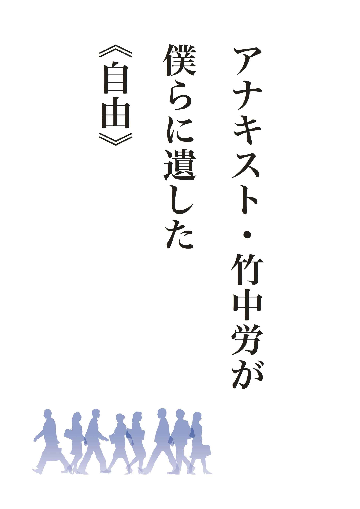
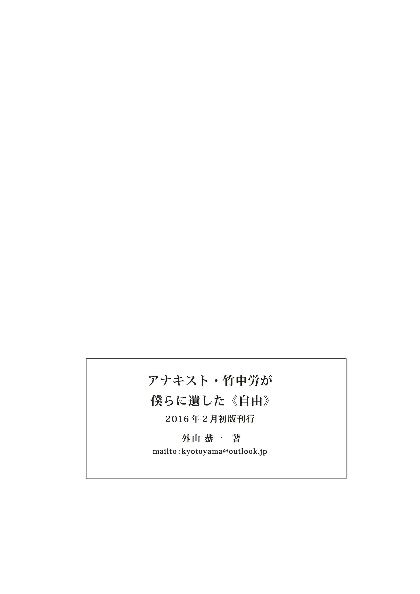

| アナキスト・竹中労が僕らに遺した《自由》 | |
| 外山恭一 | |
| (2016) | |

吉本隆明を書いてみて、これだけでは片手落ちだと感じた。そもそも、吉本イズムには、２０世紀末からどう２１世紀を展望し、日本・世界の平和を臨むのかという大それた野望が秘められていた。ところが、それで終わらすわけにはいかないのも、書き終わった後実感した。日本は戦後、自由と土着のあいだを絶えず振れていて、個人が、世間に流されかかるとき、自由の藁か土着の藁を必ず掴もうとして、結局は流されてしまってきた。特にこれからの時代は、顕著に時流に流されることが当たり前になるだろう。しかし戦後昭和のとき、とんでもない奴がいて、人生のロングランで大いなる無駄を世間にひけらかし、六十歳で人生を閉じていった。竹中労、彼は日本的自由を、無駄のような人生の歩みのなかで実地に示していったと思う。そうでなければ、吉本隆明を評価した後、竹中労など語れない。そもそも吉本と竹中を対比すること自体不条理だといわれるだろうが、僕はサラリーマンを４０年してみると、そうは考えなくなった。吉本イズムの２１世紀後半の姿を提示すれば、それを発現させる「自由」という起動力も必要となる。別の言い方をすると、戦後７０年、それこそ江戸時代のような平和を謳歌してきて、「これから二百年もこの状態でいようね」と頷き合うとき、あの抑圧された日常と、内向的で、事件を起こさないようにして、我慢の連続のなかに平穏を見出す社会を創出しても、それこそ後二百年の平和など維持できるわけがない。(僕は平和 であった２６０年の江戸時代と無意識に対比している)司法も行政も議会もマスコミも一体となった影の仕組みを作って、極力「事件」を押し隠しても、間違いなく襤褸 がでる、単純にいえば破綻する。即ち、吉本イズムが提唱した絶えざる変転、進化が世界、社会には必要なのである。その起動力が、破天荒な「自由」だ。この二人の「モノ書き」は同時代、反目しながら全く別の道を歩んだ。だが、平成も２０年を超えてくると、吉本の論理と竹中の感性・思念が両立せねばならない状況が刻々と迫ってきたのを感ずる。
第二次世界大戦の大敗北をスタートラインに、戦後の昭和は始まった。我々団塊の世代は、戦後数年してベビーブーマー世代として世に出て来た。われわれが手本としてきた人々は、少なからず大敗北を喫したこの戦争に影響を受け、考えを披歴してきた。吉本隆明、竹中労、山本七平（ついでに水木しげる、まだまだいる！）然りである。ところが、２１世紀となり、彼らの思惟活動が完結したのを確認するに到り、影響なんて生易しいものでないのを感じた。彼らは、この戦争の大敗北に、死ぬまで完全束縛されていたのだ。それぞれが持つ独特の癖で、死ぬまで、束縛から派生した提言を繰り返し吐露してきた。それらは多種多様であり、全てが後世まで届いていくかはわからない。唯、「戦争を知らない子供たち」世代と比べると、戦争敗北の状況下で生きのびたインパクトは並大抵ではなかった。少なくとも、ここに挙げた四氏においては激越なものを感じる。
そして元に戻って現在、戦後昭和から平成爛熟期に到る道すがら、価値観が吹っ飛んだ敗戦期からの営為として独特な生き様、観念が彼らから提出されてきた。僕はその中で、まず吉本隆明を、二一世紀にクラッシュするまで書き続けた巨人として挙げた。しかしながら、縄文時代から１万５千年続いてきたこの島嶼国家・日本は、いわゆる触媒が効きさえすれば近い将来、彼の思想で世界と交わるのは可能であろうが、古来より根に持っている日本的生理を白日の許に曝け出さねば、いつも通りのウジウジとした市民社会がのたうちまわり、最後には鎖国しかない（近隣から自らを閉ざす）、元の木阿弥に帰してしまう気がしてならない。現代、左右の論客を見ると、全く日本の全体像を掴んでいるとは思えない。掴んでいる者、掴もうと努力している者がいると排除してしまう仕組みが出来上がっている。それは、吉本イズムの把握においても、思想を無害無臭に変える漂白剤を仕込んでから取り出すという作業をしている。とはいえこれも時代の趨勢で、仕方ないことなのである。思想とは種なのであり、真に必要となった時代にしか発芽しない。
話を続けよう。前著において、戦後思想のレールをとりあえず牽 いた。しかし、日本的メンタリティーを自覚しながら、未来に向かう棘の道を歩んでしまうと、個人レベルで頓挫してしまう。結果として、どうしようもない連中が日本を引っ張り、社会を掻き回し、有らぬ方向に世界を向かわせてしまうという危惧を感ずる。２１世紀以降は、日本も世界もない。一歩間違えれば、一蓮托生だ。アメリカも中国も叩きあい、日本も叩かれ、潰れてしまうだろう。
ここに、吉本隆明とは水と油と言われている竹中労に、戦後昭和の「自由」を語ってもらう必然性があり、次回自由の対極にある「土着」を桶谷秀昭と周辺の戦後評論家たちに語ってもらい、ひとつの締め括りとしたい。この両名とも忘れかけられた文筆家であるが、吉本イズムの助さん格さんなのだ。勿論、そんなことをこの三人に問えば、三者三様怒りだすだろう。更に、それぞれのファンも、考えられない ！と憤りを隠さないだろう。だが戦後昭和が終わって四半世紀が過ぎた。ひとつの円環した未来像を創出するには、僕なりのやり方で、けじめをつけたい。
まずはともあれ、竹中労の戦後からスタートしよう。
竹中労の労はツトムと読むそうだが、ロウのほうがカッコよいので誰もがタケナカロウと呼んでいる。父親の英太郎が無政府主義者だったとき、乱と命名し、共産主義者に転向して「労」に改名したと、信じられない話を本人が語っていた。一事が万事、この親子は、激情のなかで、眼前の状況に対処し、即行動に移っていった。
竹中労は、戦後どさくさの環境で、決して運の良くない少年時代を過ごし、生きるために早熟な行動をとって、６０年代へと、何とか生き延びてきた。彼がどのような環境下で生まれ育ち、戦中戦後を潜り抜けて、ひとつのアイデンティティーを獲得するに至ったかは、僕が読んだ本の中では、『無頼と荊冠』、『ルポライター事始め』に散見できる。
木村聖哉著『無頼の哀しみ』（現代書館刊）ではこのように綴っている。
そして昭和三十三年、山梨県一般合同労働組合の専従を辞めて上京、東京毎夕新聞に入社し、いよいよライターの道へ―
これが、一九五八年の再上京であり、翌年毎夕新聞を飛び出して独立するも、一文無しの極貧状態に陥っていた時突如、「女性自身」にスカウトされ、まがりなりにも生活の歯車が回りだす。その後の経緯を少し引いてみよう。
この年、創刊間もない『女性自身』にスカウトされ、スタッフ・ライターとなり、七年間の専属期間に芸能人、皇族などの一五〇篇余りの手記を代作または創作した。
昭和三十九年、船橋市高根台団地へ移転、団地自治会長となる。初めての著作『団地七つの大罪』を上梓（東宝映画化）
（中略）昭和四十一年中野に事務所を構え、いよいよエンピツ無頼の日々―と相成るわけである。
竹中労の生涯における最適の肩書は、この「エンピツ無頼」であろう。勿論、アナキスト、ゴロツキ、トップ屋、世界革命浪人、晩年に使っていたよろず評判家、そして彼が気に入っている肩書「ルポライター」など自称他称の呼び名があるが、一九六六年、事務所を開業した年までが、竹中労の出自から独自性の確立の時期として捉えられる。その変遷を追ってみよう。勿論、その過程は、ささやかではあるが、彼独自の檜舞台に立つまでの前節、多くの紆余曲折を経て、多くの肥料を与えられ、七転八倒しながら、竹中労の世界へと辿り着く道程として、まずは、戦後４年間の「出自」を追っていきたい。
今は平成の世である。そこから竹中労を眺めるとき、死ぬまで絶対に剥すことのできない戦中戦後体験がどんなものなのか、その後、一九六六年の、ある意味独自の地位に至るまではどのような変転があったのか。それらは非常に興味のあるところであり、その過程がなければ、決してささやかな檜舞台に立つ竹中労は存在しなかったろうし、戦後昭和が、存在することを許してきた「竹中労」を、平成の世で再び存在感を示すことになるのも納得できるものとなろう。今から見るととんでもない奴と言ってもよい。だが、彼こそは戦後のピンからキリまでの「自由」を全身で体現してきた幸せな男であったとも思う。そろそろ『無頼の哀しみ』という、木村氏が接していた竹中労から少し離れて、この世に出て、特異な環境に揉まれて発育していく姿を見てみよう。
まずは、彼の水捌けのよい文体に慣れるため、前述したふたつの書物から生い立ちを語った部分を幾つか抜粋してみたい。
『無頼と荊冠』（三笠書房刊）の「わが青春残侠伝」で、凄まじくも斯くも哀しい少年時代から始まる。
家庭の事情で三つか四つのころに親戚にあずけられ、両親と離れて暮らしたおいらは、小づかいというものを一文もあたえられたことがなかった。したがって、いつも紙芝居はタダ見、そいつは子ども心にどれほどつらく、恥ずかしく情けない体験であったか「なんだ坊主、またタダ見かい？」そういわれて、遠くの方からソッポをむいたふりをして、目の端っこで絵を追った。
涙ぐんだ空に黄金バットは、グハハハハと雄叫びを上げて天かけり、金色さんらんと〝正義の闘い〟をたたかっていた。おいらの幼年期にかくて「魔人崇拝」は定着したのでアル。
紙芝居は、戦後数年で生まれた僕らの世代にも未だあったし、こういった貧しく侘しい体験をした同世代者も少なからずいた。しかし竹中労は、僕より１９歳年上であり、中国大陸での戦乱拡大の時期に親戚に預けられ、愛の無い生活を続けた。この展開もよく耳にする幼年時代だったが、彼の即興的な文体は、このような過去があったから今に結実していったという説得力が強く滲み出てくる。更に続けよう。
そう、おいらは親戚にあずけられて、孤独な幼年時代を送った。イトコたちが卵焼きや煮魚であったかい膳をかこんでいるとき、おいらは台所の板の間ですえた冷たい飯を食わされて育った、臨海学校にも林間学園にも行けず、服はいつでもほころびていて〟ボロ竹〟とあだ名をつけられた。
朝鮮人崔君との友情はつまり一人ぼっち同志、ボロッカス仲間の連帯だった。二匹の棄て犬が傷をナメあうように、我らは連帯した。七歳のおいらにとって崔君は友だちであり、〝日本人〟でも〝朝鮮人〟でもありはしなかった。
おいら、〝家庭〟というものを知らないで育ったのである、いまこれは稀な幸運だったと逆説では決してなく思う、べたべたとした市民社会的な親子の情愛なんてもの、ガキのころから無縁だった、だからこそおいらは、ナレアイでなく、父親と母親を純粋に愛することができる。
ここまで抜粋してみると、北野たけし的な口語的流れと即決型の論法を感ずる。歯切れは良いし、不幸といってよい環境が、実際は成長のためのこやし になっているのをヒシヒシと感じさせるようにあらすじを運ぶ。そして、クリーニング屋の従姉に預けられ旧制中学に通っていたころ、当然問題児視されていたのに意外とおとなしかったのに従姉は胸をなでおろしたという。
というのは、本ばかり読んでいたからだ。父親が置いていった何百冊かの書物を、おいら学校からまっすぐ帰ってむさぼり読んだ。日本文学全集、大杉栄の翻訳による『種の起源』『昆虫記』『相互扶助論』、岡本一平全集、ニイチェの『芸術における権力への意志』等々、わけもわからず読みふけった。乱読のむくいは仮性近視である、......
こういった按配である。貧しく厳しい幼年時代を過ごしたが、ある時期、知識への欲求が深まり、貪り食うように読書に没頭する。この組み合わせもよく聞く話だ。しかし、父・英太郎からの影響が、その後の竹中労たる道を歩ませた最大の要因であろう。
父・竹中英太郎につては後段でくわしく述べる。青年時代アナキストであり、熊本水平社に参加したり、北九州炭坑夫労働者同盟、八幡製鉄争議等々で活動したが、高見順らの左翼芸術同盟に属して江戸川乱歩の挿絵を描き、昭和初期いわゆるエロ・グロ・ナンセンスの時代の大衆画壇に、はなやかに登場した。日中戦争直前、絵筆を折って大陸に渡り『月間満州』『こども満州』を編集する、プロレタリア的汎アジア主義への〝転向〟だった。
英太郎は戦前のある時期、挿絵画家として一世を風靡した。又、竹中半兵衛太の血を引くれっきとした士族の出だがそれがいけなかった。英太郎までの代々、「武家の商法」を地で行き、家計は火の車、家庭をほったらかし、理想へと走った。多分、引用後半の汎アジア主義とは、竹中労が一時期英太郎を嫌った国家社会主義と同義だろうし、その発想の流れは、大杉栄と主義者殺し甘粕正彦を同時評価するアンビバレントな感性にもつながる。これは竹中労の持っている特徴のひとつで、僕のようなファンには心の奥底でたまらなく共感してしまう要因なのだ。その例を挙げると際限が無い。坂口安吾に繋がる辻潤を同志のように想い、銀座カフェで辻潤が殴りかかろうとした永井荷風を師のように愛した。それは断腸亭日乗の一節にあるが、僕も辻潤だったら、軟弱な永井荷風に殴り掛かっただろうとは容易に想像できる。これらを総合すると、竹中労とは、敵も味方も愛する能力のある男と言い切れる。(これが又事態を複雑にしてしまうのだ)
さて話を元に戻そう。このような風来坊の父親からはほったらかしの日々が続いたが、たまに家に帰る父からは、体罰という教育が待っていた。現代ならば虐待だろうが、労は教育と受け取った。父親の背中を追って生き、父親を模倣、見習って生きた。つまり父親同様、とんでもない人生へと船出した。そして、「だからこそおいらは、ナレアイでなく、父親と母親を純粋に愛することができる」というフレーズに繋がってくるのだ。先に取り上げた『無頼の哀しみ』のあとがきにも、晩年和歌山から出てきた母親を、忙しい中一週間も東京見物に案内し、多くのお土産を持たせて送った、とある。奇妙は話だが、殆ど自己の成長に具体的関与をしなかった両親を愛し、関与されない自由を人生の中でおおく持てた幸運に感謝している風である。父英太郎について、あと一個所だけ引用しておこう。竹中労の出自があって、方向性が打ち出され、その後の人生がしめされたような文章だからだ。
いわずもがなのことであるが、おいらの父親のムチ一辺倒のしつけに、ただの一度たりとも愛情を疑ったことはなかった。何とかして、オヤジの期待する鉄の意志を持つ男にみずからを鍛え上げたいとのみ思いつづけてきたのだ。そしてその期待になかば応え得たと信ずる。こんにち、おいらの魂の裡なる反権力、一匹狼の〝狂疾〟はまさしく父子相伝のものであり、全世界の窮民、流民への熱い思いもまた父から受け継いだ、云々...
竹中労のもうひとつの自伝『ルポライター事始』（みき書房刊）収録の「探求 」への旅立ち（敗戦三文オペラ・青春・焼跡放浪記）、長ったらしいが、この章は二つのタイトルがあり、どちらも魅力的で意味深な響きがある。戦後のどさくさは、この自伝のほうが鮮明に描かれている。最初に目に留まるのはつぎの文章だ。
戦前の修身教育のおかげで老人と見れば席をゆずる癖のある私は、「どうぞ」と声をかけて立ち上がった。アアと軽く会釈して、微笑した唇からもれた乱杭歯をまっ正面に見たとたん、その人が『フランス物語』『踊子』『浮沈』の作家であることを、私は発見した。
「荷風先生ですね」と、率直にいうべきであったかも知れない。だが、私はわざと気づかぬふりをした。内心ではドギマギしていたのだ。ある時期、その人の文学に傾倒していた。わが無頼の青春は、永井荷風のデカダンスに多分に負うのである。
その人を眼の前にして話しかける千歳一隅の機会にめぐりあいながら、私は一生懸命そっぽをむいていたのだ。田原町につくと、七十歳をこえた老体とは思えぬかろやかな足どりで、荷風散人は私には目もくれず、プラットホームに降り立っていた......
少々長くなったが、このメンタリティーは、吉本隆明には全くないものだ。多分、このような理論的根拠に成り得ない好き嫌いは最初に排除するのが吉本イズムだろうから。しかし、竹中労にとっては一事が万事、戦前戦中敗戦、戦後昭和が肌に伝達する「出自」がすべてだったと言える。何をされようが両親を肯定して育ったが故に、一卵性親子の遺伝子が基盤中枢にドシンと構えていれば、自ずと、戦後昭和が竹中労に強いるものへの反応は、あるエネルギーを含有した一方向のベクトルをしめした。それは「反体制・反権力」といえたが、その反体制は全くもって生涯、社会的影響力、即ち効力を発揮することはなかったし、そもそも効力を期待して彼は行動していたとは思えない。少なくとも、最大の目的は効力ではない。情念に動かされて、彼の遺伝子はベクトル(方向)を指し示した、情念に指図されるまま生みだされた「竹中労」の総体に価値があると信ずる。それらを説明するに適切な文章があるので引用しよう。
青春時代、私は父について語ることに屈折した思いがあった。戦後はマスコミから姿を消した父親に、七光りの負い目はなかった。アナキズムから国家社会主義へ転向を遂げていった戦前の父親の思想を長い歳月、私は納得することができなかった。はっきりいえば、それは恥としていたのだ。共産党に入ったのも、根底には父親の間違った 道 をオレは歩むまいという反撥があった。戦後民主主義・ポツダム左翼の欺瞞に気づいて、コミュニズムをふっきってから私はやっと父親の転向に理会した。そして陋巷に（みずからは意識せず）アナキズムの影を踏んで、つまり父子相伝の無頼を実践していたのだということを、
彼は長いこと共産党に加わり、一時期は非合法活動にも加わっていた。その辺りについて、平成のどん詰まりの現世、あるいは２１世紀の宗教的混沌の現実から見返すと、僕は余り重要視しないし、重要視できない。彼の共産主義者としての行動を見ていても、何か二重スパイのような曖昧な臭いがしてくる。寧ろ、それを乗り越えて、エンピツ無頼、自称アナキストとなった竹中労に溌溂とした姿を見る。共産党に見切りをつけたのは３０を半ば過ぎたころという。（その後も隠れ共産党員であり続けたという説もある）前述した中野にささやかな事務所を設けたころだ。そのころまでの期間を「出自」から自己確立までの道と考えている。それまで何か曖昧な共産党員としての動きと、年月とともに日本底辺（窮民層）へと沈降していく竹中労の姿が二重に見てとれる。『ルポライター事始』でも随所に、共産主義批判がばら撒かれているが、出版が五十歳という最も脂の乗った時期から過去を振り返るスタンスだったので一種の自己批判といえよう。実際当時の共産党と現在では、すべて入れ替わったほどの変化があるし、すべての個人（関与者）も変わっていった。その転換を当時、「転向」と称していたが、党も個人も変わって当たり前と思っているし、戦後昭和は台風一過の如く、あらゆる場面での転向を吹き飛ばしてしまった。竹中労最大の名言？と言われる「人は、無力だからむれるのではなく、群れるから無力なのだ。」はまさに、共産主義から吹っ切れたときの彼の堅固な自信を表していたに他ならない。要所で、共産主義批判を挿入し、アナキズム的賛辞を添えているが、ここでは無闇に引用するのは止めよう。もう少し、この名言に到る出自の道程を辿ろう。
「昭和十九年の早春、おいらは神奈川県大船の海軍燃料廠に学徒動員されて、特攻戦闘機「秋水」（略号マル呂）の燃料である過酸化水素水の濃縮液をつくっていた。」とある。しかし元来の父親譲りの反抗精神が災いというか、反骨の炎が燃え、「戦争は終った―、敗戦の八月、おいら大船の海軍病院からタンカにくくりつけられて甲府の父親のもとに帰った、病名大腸カタル、真相は教師の制裁による全身打撲、いまでも旧制中学の同級生たちの語り草になっている、おいら三日にいっぺん殴られていた。」
「学校に帰ると（甲府中学＝筆者註）直ちにおいら全学ストライキを指導して、教師どもを追放した。密告野郎は糞の出るほどブン殴ってくれた。とうぜんおいらも退学となったが、東京外事専門学校（現東京外語大）露語科を受験してパス、」と、ここまで、『無頼と荊冠―わが青春残侠伝』より引用。そして、「敗戦三文オペラ（青春・焼跡放浪記）」に戻る。
在外同胞学生同盟に参加して、引揚者援護の運動にたずさわったのはその年の夏、母方の祖父・叔父たちが朝鮮・カラフトに残留していたためであったが、ようするに学業と労働とは両立せず、〝引揚運動〟にせめて専従することでまたぞろ休学の理由を、という背に腹はかえられぬ計算からであった。
とここまで来れば、共産党との接点もできるし、当時まだ現実としてあった最下層窮民の世界へも沈降していくきっかけができたわけだった。一九四六年五月から北海道から九州までの放浪の旅に出たあと、浅草に戻り、四八年八月、共産党系の東京学生同盟の幹部となる。
東京駅仮宿泊所のセツルメントから上野寛永寺の引揚寮・山谷の天幕一時宿泊施設等々、家なき人々の吹き溜り（本願寺床下もその一つだったのである）にふれる間に、私の若い魂はそれらの人々と同じ地平に身を置くこと、学園への退路を絶つことを要求した。（中略）
そう、私はまっさかさまに堕ちた。堕ちる、という気負いがあった。つまり、ホンモノでなかった。
堕ちてみて始めてわかったのだ。そこがぬきさしならぬ地獄であり、チャチな感傷など通用しない世界であることを、私は思い知らねばならなかった。
妙にエキセントリックな文章と言わねばならない。確かにこのきっかけ、在外同胞救出学生同盟に参画し、やがてそこが共産党フラクに乗っ取られて、東京学生同盟と組織替えとなって幹部となる。その活動では、上野、東京駅近辺、浅草で目撃する引揚者、戦災孤児、浮浪者、ヤクザ、愚連隊、それこそ窮民の群れと遭遇し、彼らと交わり、のっぴきならないところまで堕ちてしまった。ところが、それは自明のはずだったのに、堕ちて初めて思い知らねばならなかったと言う。実際、党に籍を置きつつも自らが党との絆を切ってしまう形で、窮民の群れへ落下していった。だが竹中労と窮民はやはり最後まで違う身分だったという。寧ろ竹中労は窮民に自らの信念の基盤を置いた。その時点で、彼は窮民にはなれなかった。だがしかし、この時期、かれは共産党員でもあり、窮民と運命を分かち合う立場を貫こうともしていた。要は、此の選択しかないのに、依然として燻 っている優柔不断さを表に出す。堕ちていっても自分は埒外にあるという竹中労らしいレトリックだし、表題の三文オペラを地で行った時期であった。（三文オペラとは、細胞キャップＳがおいら につけた綽名と書いている）言えることは、本当の「竹中労」を確立できなかった時期だったのである。
とりあえず、この「探検」への旅立ち・敗戦三文オペラ（青春・焼跡放浪記）という、欲張りに連想用語を取り入れた「出自」の物語は、筆者の生まれた昭和二十四年で終わる。たった４年余りの活劇だったが、敗戦という最大のきっかけが短期間に、爆竹のようにやたら滅法に弾けとんで、竹中労というアイデンティティーを形成していく途上にあった。
「まんじゅうに罪あり」という章では、
諸君よお嗤い召さるな私は罪の意識におののきながら、ガツガツむさぼり食った、夢みるように、気が遠くなるように美味しかった。しかも、食後にアンマンが出たのだ。熱くてねっとりと甘い、ほんものの中華饅頭であった。
そしてしばらく飛んで、「信じられない、中華饅頭なんざそんな美味しいものじゃあないってきっとそういうだろうね、「焼跡を知らない」若者たちは。だが、真に美味なるものに恵まれていないのはむしろ諸君なのである。」
突然二か所引用して何を書いているのかと思われるだろう。毎日空腹の状態で過ごしていた時、引揚者連合会のある日の会合が中華料亭で開かれ参加した時の話だ。今では当たり前のメニューだったが、その時は食らいついた。そして最後にでてきたのがアンマンだった。もう一個所引用してみよう。
そして飢えが平等ではないことを、資本家とか高級官僚とかいう敵の中にではなく闇屋ブローカーでもなく、その飢えた人々の代表とか味方と称する指導者のなかに、文字通り運動を食い物 にしているボスがいることを私は知ってしまった。
『ルポライター事始め』は、自身の駆け出しの時期を振り返ると同時に、若い人達（筆者も入る）への、人生にどう対処していったら良いかを伝達しようとする書でもある。この３か所の引用はまさにその流れに乗っているが、さらに深掘りすると、既成左翼活動への疑念と、本当に貧しい人たちへの共鳴、あるいは、自己をこれからどの方向に向かわせればよいのかという悩みの交索する時期でもあった。上野地下道で、餓死者が続出するなか、
いやただ見ているのではない。馬鹿が赤旗をふって朝も夜もアジ演説をぶっていた。「皆さん立ち上がるのです。革命をこの地下道から起こすのです！皆さんは人間ではありませんか、人間には食う権利があります、持っている者から奪い取ることは正義です。暴動を起すのです。立て、飢えたる者よ！」
道路交通法違反で私は検挙された、一晩で釈放されたが、それが留置場初体験だった。
更に続いて、
最初の友人はオカマだった。エントツ・オシゲ、...（中略）（隠しても一目でわかる骨っぽい人であったが、）つくり声やシナもぬきで三十五歳という年齢もなるほど相応と見えた。京都生まれという、おさない時からヘンタイだったという。性的知識に欠けるところのあった私は、彼が女房子供持ちであるということにただただびっくり仰天した。（更に中略）その道にくわしい人はご存知と思うが、彼らの組織は愚連隊の介入を許さない。筋の通ったやくざ集団と協定して、テリトリイを守っているのである。しかも収入は抜群であり、闇の女の比ではないのだ。
ともあれ、私は望み通り浮浪の人となった（すこしく出発は高級であったが）。窮民街の実態をつぶさに傍観者としてではなく、しょせんは志願浮浪人、すぎゆく者であっても底辺から見ることができたのである。
まさにこの視点がルポライターであり、この時点で竹中労が生涯のなかで最も影響力を行使できたエンピツ無頼の土台を築けたと言える。更に続けよう。
しばらく、上野界隈を徘徊しよう―。
戦後左翼は、地下道住人をルンペン・プロレタリアートと規定して、たとえば次のように述べている。
「最早、人間の矜持や階級意識や倫理は止揚されて、詐欺・強盗・窃盗・かっぱらい・たかり等になって生き甲斐を感じているのである。正 に 人間 の 残滓 で あり 、社会的 な 塵埃 で ある 。」
戦後左翼にとってルンペン・プロレタリアート＝浮浪者は、"処理すべき対象"でしかなかった。
(中略)私はますます異端であった。そしてそのような疑問をマルクス・レーニン大明神に対して抱くことが、正直にいってしまえば、まだちょっぴりおそろしくもあった。
共産主義は、戦争を潜った多くのインテリにとってある時期必要だったのと同じように、乱暴者・竹中労にも必要だった。特に彼にとっては長い間捨てがたかったようだ。それを決定づけたのはオヤジ英太郎だったろうが、その件は後に譲ろう。又、共産党にとって、竹中労は利用できそうでできない邪魔者だったろうし、今見てみると、労の方に共産党の使い勝手はあったと思う。
そろそろ「出自」のまとめに入ろう。
―戦争中、人の屍を私は数多く見た。「横浜大空襲」やグラマンの銃撃で、眼の前で人が死んでいくところを、累々たる百・千の焼死体を見た。上野の地下道で、飢えて死んでいく人々を凝視した。
だが、〝人間が人間を直接殺す〟のを私は見たことがなかった。はじめて現場にでくわしたのは、山谷ドヤ街路上でわが友・エントツオシゲの配下が、おなじ男娼仲間との客の奪いあいから刺身包丁で刺されたときであったが、彼は病院に運ばれる途中で死んだ。
〝海賊都市〟ヨコハマでの出来事だった。
長い時間が経った、ぐったり伸びてしまった少年の頭の上に、コンクリートの固まりを背広の大男がさしあげて、「キサマハトロボータ、シケイニシテヤル」といった。本気で殺すつもりだったか、今でも私はうたがっている。しかし兇器は撃ちおろされて一人の少年が死んだ。まぎれもなく、〝人間が人間を直接殺す〟のを私は見た。その体験はめまいや嘔吐を少しもともなわず、不思議に平静であった。少年は泥と血に塗れ、男たちの背広は汚れていなかった。
この状景の説明はまだまだ続く。しかし、これが戦後どさくさが意味する本領なのだろう。仲間達も、夜の天使たちも、若かりし竹中労も一切抵抗せず、殺人現場を見続けた。少年は大量のサッカリンを組織から盗み転売し、代表者として責任をとらされて殺された。マフィアでは、映画の中で鉄の掟として既に定式化されている。だが、竹中労にとっての戦後どさくさは、一連の流れがあって、殺人現場という行き着くところに行き着いた。『ルポライター事始め』は他の多くの竹中本と同じように、未完である。しかし、昭和二十四年初冬、林芙美子『放浪記』に出てくる新宿旭町の〝厚生館〟に雑居し、「ほんもののルンペンの明け暮れに私は堕ちていった。」で終わる。その虚無感が漂う戦後四年の背景を次のように物語っている。
あの焼土に生きる真人民の姿を、私はけっきょく見ることができなかったのである。
つまりは革命ごっこ、犯罪ごっこの過客としてしか、ニッポン窮民街を漂泊しなかったのだ。坂口安吾の思想を、「まっさかさまに堕落する」ことを私は実践しているつもりでその実、探検する者でしかなかった。敗戦を生活 しなかった 。帰るべき学園もあれば、故郷もある。仮想浮浪人にすぎなかったのだ。だが性コリもなくさらなる奈落へ、ダンテ気取りで私は降りていった、「ここを過ぎて地獄の門」。革命はともあれ堕落は、もはや変改のきかぬわが青春の根本命題となっていたのである。
出自を一通り巡った後、果たして竹中労の依って立っている位置とは何処なのだろうと考えてしまう。当時はある意味、労の世界に没入して酔っていたが、没後２０年が過ぎ、更に爛熟した平成の中期を過ぎた場所から眺めたとき、何 も 成し終えなかった 彼の生き様をどう捉えるのかでうろたえてしまう。寧ろ破天荒で型破りな大きさに価値を見出すべきなのだが、何に対してといえば、まず依拠している場所が共産党だったり、ジャーナリズムだったり、とは言っても、依って立っていた場所はあくまでも方便として使われていた気がする。当然そこに属していた人々には迷惑千万だったろうが、そこに型破りの大きさを見てもよいような気もする。よく言われている通り、共産党への入党は一九四七年だったが、脱党したのは諸説ある。のらりくらりしながら、８０年代まで在籍していたとの説もある。多分、殆どの党員は彼を厄介者と思っていただろうが、なぜ共産党に宙ぶらりんになっていたのか。それは、竹中労に最初から宿っていた奇妙なロマンであったろうと思う。べら棒な発言、大胆な行動を常とした彼にも、最後に依拠すべき「思想的場所」が必要だった。それがおこがましい話だが、「改革を加えたうえでの共産党」だったと感ずる。しかし思想的に絶対君主の当時の共産党の内部から改革を促すなどあり得ない。夢の夢だ。であるので、竹中労は並行して、窮民の群れに下降する試みを続けた。即ち、共産主義ではなく、アナキズム。その二立歩行は、既に一九四七年の共産党入党から始まっていた節がある。その後の共産党指導の許での非合法活動、出自にまつわる自暴自棄の暴発、その後の「当時は職業革命家だった」という全く「転向」を反省しない態度。そういえば、滅茶苦茶な竹中労の人生に、転向したという画期 はなかった。そこが、竹中労を読んでいてスカツとする所以でもあった。
当時の共産党としては傍迷惑だったろうが、片思いで縋 り付き、その癖散々共産主義をイビリ倒し、勝手な方向に走り出す。だが心のよりどころとして、最後の場所としての共産党は、彼の根底に存在し続けたのではないか。恰もそれは倫理感のように体内に鎮座していた。僕はそう思っている。そのしがらみからやっと解放してくれたのは、晩年の父英太郎だった。その経緯は後述しよう。
もう一つの拠り所、ジャーナリズム。竹中労は田原総一朗から草柳太蔵まで、既存ジャーナリズムを体制の補完物として認めなかった。視方によっては平成の世、益々その観点は強まりつつある。その要因の一つが二十世紀末世界を席巻しだしたＩＴ革命だろう。誰もが手軽に情報を手に入れらるようになった。
竹中労が認めたジャーナリズムとは、江戸の戯作者の世界に端を発する、反権力から市民社会（市井）の隅々まで抉り取るような視点をもって、裏にある情報を公にする営為をなりわい とする稼業だった。いわゆるストリート・ジャーナリズム。２００１年に筑摩書房から出版された『芸能人人別帳』の「第二十二番 新派のヌシ・市川翠扇」の巻頭に自分の立ち位置が確立したくだりが突然出てくる。
昭和二十一年、敗戦翌年の秋、ぼくは、甲府盆地の街の図書館に通って泉鏡花の全集や、江戸時代の洒落本、滑稽本、黄表紙（絵本）に読みふけっていた。疎開先である田舎の町で、学園が復興するまで何カ月かを、無為にすごさねばならなかったのだ。
学園とは現東京外語大学だが、竹中流ジャーナリズムの素養はこのように育まれた。更にこの流れは「序にかえて――」の書き出しに結実してくる。曰く。
一匹狼のアウトサイダーとして、ボクはこの数年間、ただがむしゃらに書きまくってきた。人斬りの、バクロ屋のと、世上に悪名を売ったが、しょせん体制の掌上のエテ公に過ぎぬのではないかと、心中ジクジたるものがある。のみならず、金に換えた反古 のごとき文章に二度のつとめをさせて、印税をかせぐ、まさしく、鉄面皮のきわみである。
が、一言いわせてもらうなら、江戸時代でなく一九六、七〇年代のニッポンに戯作者の精神をつらぬいたジャーナリストが存在したことを、この書物が後世につたえてくれれば幸いである。
ようするにボクは、これが今日的な「役者評判記」である、といいたいのだ。黄表紙、滑稽本、洒落本、かわら版等々、江戸のストリート・ジャーナリズムの心意気で、文章を売ってきた。憚 りだが、竹中労がユニークな〝もの書き〟として立つ基盤は、市井庶民の心情、意見を代弁するところにある。
この市川翠扇の章の最後にはこう結論を用意している。
たとえば泉鏡花の名作を、くり返して再演し、練りあげて、次の世代に継承していくという作業を現在の新派にのぞむべくもない。けっきょく章太郎、八重子、翠扇という古い役者たちが死んでしまえば、芸もまた一代限りで終わるのだ。それは、ぼくたち日本民衆の美しい情緒 が、同時に滅んでしまうことなのだが―
このように七十年代の舞台芸能をシカと認識し、個々の芸を築き上げてきた俳優女優、演出者に最大の価値を見出して的確な評価を下す時もあれば、市井に下ったり、旅先の取材中とんでもないことをやり出すこともある。ここでは『芸能人人別帳』に言及するのはこの程度にしておこう。（詳細は後述）
「自由の尺度（物差し）」のこの項では、『無頼と荊冠』所蔵「自由な言論とは何か」と『逆桃源行』に依って竹中労が示した自由の大きさを計測していきたい。
彼は、日々暴れ回るように動き廻っているが、時間ができるとエントロピーがストンと落ちるように読書にのめり込む。そこで得られた知識群が、次の活力源になっていく。４か月休校となったのを利用して、甲府の図書館に籠り、ストリート・ジャーナリスト・ルポライターの基礎知識を固めた。「自由な言論とは何か」では、明治に生まれ、昭和まで生き抜いた反骨のジャーナリスト・宮武外骨を援用する。早速、その部分を記述してみよう。
日本ほど〝言論の自由〟な国がいったい他にあるだろうか！
私もそう思う。この国には確かに〝言論の自由〟が存在するのである、憲法がそれを保証している、「知る権利」をめぐっての裁判が行われている。〔'72 大演説会〕などという催しもある、戦前のように臨官席から弁士中止！と規制されることもない。
そのような民主主義の時代、自由な時代において、宮武外骨を気どるのは滑稽なのではあるまいか？竹中労はしょせん「奇騙を衒い、虚名を売る」喧嘩屋にすぎない。火のないところに煙を立てるスキャンダル・メーカーである、売名家である。
というふうに自戒しているのか自嘲しているのか、皮肉っているのか。そして、この続きでは、「憲法に保証された〝言論の自由〟を前提とするかぎり、それは当たっているからである。私は〝言論の自由〟でなく〝自由な言論〟とは何かを述べようとしているので。」という本来の主張に到るのだ。この発想が、彼が世に示した「自由」の大元なのだが、その自由の尺度を論ずる前に、江戸戯作に端を発し、宮武外骨を経て、千田夏光、南部僑一郎を横目で睨んで、あるいは、斎藤龍鳳に同じ匂いを嗅ぎ、吉本隆明に激怒嫉妬し、「竹中労の世界」を創出していく道程での重要なキーポイント・戦前の弁士 宮武外骨について少々触れてみたい。
宮武外骨は、偽善者ならぬ偽悪者と自称する。偽善の反対だから、ワザと悪を見せつける実は正義の味方、風変わりな奴だ。『予は危険人物なり（宮武外骨自叙伝）』（吉野孝雄・編 筑摩書房刊）から幾つか引用してみよう。
現今讃岐には宮武といふ姓の家が数十軒あるが、他 の国には無い、只備中だけにはあると云うから、或は予の先祖は備中の穢多 であったかもしれない。
家は代々苗字帯刀御免の庄屋で、父の代には五百石位の小作を有する富農として近郷にしられてゐた。従って、その少年時代は極めて恵まれた境遇下に、不羈奔放に生長したわけである。
この二文を比べてみても、自分を卑下しているのか、あるいは軽はずみなことをあけっ広げに言っているだけなのか？確かに父親は篤志家だったようで、「世の家では毎年の末、村内の穢多や非人に施米をする習慣」があったそうだ。又、五百石の生産ができる小作人を抱えていたともあるが、これは明治初頭の話で、地域社会に貢献していた証しであっても、旧態な表現としても、蔑まされる行いではなかった。では、彼が生涯でどのような反抗的態度で世に臨んだかを見てみよう。
相当の修養があっての操觚家 ならば、謹厳の筆を執るであろうが、根が備中の穢 多 の子孫らしい予の事であるから、其二十幾年間には、筆のために禍を買って三度入獄した、満江風雨波生花とか何とか云って、通計四ヶ年余り獄中生活をしたのである。又予が筆を執ったことで、署名責任者が入獄した事も三回あり、罰金刑に処せられた事が十五六回、発売禁止印本差押の処分を受けた事が二十回以上もある、」
不敬罪で囚われた別のところでは、
恨み骨髄に徹して日夜現当に夢寐にも忘れ得ないのは、予の（頓智協会雑誌）筆禍事件である。官僚政治の犠牲になって春花に背き、石川島の鉄窓に秋月を見ること三年。当初我は罪人であらずと叫んで就役不服を唱えた事は本紙「外骨随筆」の四（編者註・「外骨が獄中で校正した雑誌」）に詳記したが、其出獄後数年間は敢えて不平を唱えず、従順に考古的趣味的の筆を執って居た。
このような生涯を送っていた。新聞雑誌を発行し、市井のなんでもない話を載せ、政治の世界では官僚体制の腐敗を指弾した。執筆は、竹中労と同じく書きまくるに等しく、生涯で千冊に相当する量だったというし、中でも明治三四年創刊の「滑稽新聞」は、発行人・宮武外骨の真骨頂を如何なく発揮したミニコミだった。編者の吉野孝雄はこう評する。
「滑稽新聞」は台湾から裸一貫で帰国した外骨が、小野村夫の名で大阪を舞台に約八年間、ユスリ、ハッタリ、詐欺、役人の不正、権力の腐敗などを外骨一流の「過激にして愛嬌ある」方法で告発し続け、最盛期の発行部数八万部を誇ったという、ジャーナリスト外骨を代表する雑誌である。
この過激にして愛嬌のある文体が、約八〇年の時空差を越えて相繋がったところを感ずる。とは言っても、これまでの引用の通り、明治―戦前の日本語・文体であるのは如何ともしがたい。意味は理解できても、竹中労にある躍動感が伝わらない。戦前の人々は、権力への揶揄・からかいを外骨の文体からジカに読み取り吸収できたのだろう。又竹中労が自嘲気味に「自由な時代において、宮武外骨を気どるのは滑稽なのではあるまいか」と言う通り、戦前戦後では、表現に係る戦術も違って当然だった。とは言え江戸の戯作者たちも、牢屋につながれても反骨精神を失わず諦めなかった。明治―戦前の外骨もその時代に即して出来得る限りの抵抗を試み、最大の表現における効果を狙った。その意味で江戸中期から竹中労まで繋がるものがあったのだ。それを「言論の自由」ではなく「自由な言論」と言い切ったのである。戦後言論の自由は保証された。しかし、自由な言論は、体制との相剋のなかで、あるいはあらゆる擁護団体、支援組織との葛藤のなかで、既存の価値観とぶつかっていった。そして爛熟した平成の世に残ったのはそれらを証拠立てる書物の一部だった。外骨もその量千冊に及ぶという。労も同じだ。だが、我々が読めるのはその一部分だと言ってよい。しかし、それだけで十分だ。戦後昭和に漲っていた自由を、歯切れの良い文体からかんずることができる。多分、平成後期の世には竹中労的な存在は許されないかもしれぬ。事あるごとの梨本クンは何をしているのだ、とからかっていた「恐縮です。梨本勝です。」でさえ精いっぱいの背伸びだったろうし、彼も二〇一〇年に亡くなっている。だからこそ竹中労が戦後昭和に体現した自由の物差しについて語るのは重要だと想うのだ。
彼が目指したのは窮民革命だった。その武器は、江戸中期に花咲いた戯作文化だったし、言論の自由のなかに芽生えた〝自由な言論〟だった。戦後直ぐ入党した共産党は、六五年辺りから倫理観あるいは方便として竹中労のなかに存在し続けたが、主張しているのは共産主義にとってアナーキーな異端であり、労働者階級でなくルンペン・プロレタリアート、即ち窮民層に根差した革命だった。しかし皮肉なことに、この頃日本は高度成長期に突入し、日本での窮民層の厚さは急速に薄くなっていった。６０年代のいつ頃からか、日本国民は富を求めて走り出した。であるので、その頃の労働争議、山谷反乱、連合赤軍事件などは、時代の転換点における軋轢だったといえる。数年前仕事の関係で、泪橋周辺を何度か訪れたが、山谷の地名は消え、住宅街と問屋街に変貌していた。唯一痕跡（俤 ）として残っているのは「明日のジョー」のふるさと、いろは会商店街だけだろうか。既に７０年代に入る前から、窮民層は周辺アジア諸国にそのエネルギーを蓄えていた。勿論竹中労は、その現実を理会していたはずだ。表面では窮民革命を叫ぶが、国内では芸能の世界へ沈降していくし、窮民エネルギーを求めて、アジア、中東へと足繁く飛んだ。
彼の芸能への接点は、（宮武外骨のように）「私はマスコミの穢多非人である」。（度々使わざる得ない差別用語にはご理解願いたい）とあるニュース番組でそうぶち上げてしまった。「宮武外骨という猥大な知識にふれ、その人と思想に傾倒したのは、彼のいわゆる〝特殊部落〟に関する発言に理会してからである。」とまで確信犯的に述べている。そこで部落解放同盟との果てしない論争となったのだが、当時の論客は竹中労のみならずこの論争に本意不本意に拘わらず参入している。そして、この数百年続く日本固有の差別課題、差別構造は平成となっても全く解決されていない。唯、竹中労の芸能への接点はこの差別用語をつかってでも、窮民の根底にあるものを抉りだす作業であり、この軸なくして窮民と芸能を繋げる必然性はでてこなかった。もし、竹中労が示した「長尺な自由棒」というのがあれば、棒の下の部分が反体制・反権力、国家とは基本的に悪なのだという命題、それもあくまでも方便としての反体制、エンピツ無頼として出来得る限りの〝自由の言論〟を駆使して出てきた体制（国家）への批判、そして、棒の真ん中辺りにあるのが、この舌禍、筆禍だ。有名なのは部落解放同盟との喧嘩だが、佐藤栄作夫人との裁判だけでなく、多くの連載を中断せねばならなかった理由もこの舌禍、筆禍に違いなかった。それでも彼は死ぬまで全くめげていない。弱音は吐いても次の手も必ず打つ。尤も大忙しで駆け回っていたが、彼の行動自体は、生涯空回りする結果に終わったと考えている。「ピラニアよ、群れるな！」と叫ぶ通り、組織とは無縁だったからだ。それでも、かれは「自由の物差し」を戦後昭和の域内で世の中に提示した。そして、その棒の先端の部分にある自由が、桃源郷といってもよい空想・理想の世界だった。その話に入るため『逆桃源行』のほのぼのとした世界を描かなければならないのだが、その前に多くの名著迷著を出した芸能の分野についてもう少し言及したい。
たとえば、私は有名人にはプライバシーの権利はないという、したがってとうぜん人身攻撃は正当であるという、報道には公正とか中立という立場はないと考える、法と秩序、公序良俗は欺罔であり、国家は諸悪の根源であると信ずる。ゆえに私にとって〝言論〟は体制破壊の武器である、暴力である、活字の暴力を行使するべく、私はジャーナリストという職業をえらんだのである。
（中略）
〝自由な言論〟は抑圧されて当然だという認識を、私は最初からいだいていた。誤解をまねくいいかただが、これは竹中労の無頼の思想を解くキー・ノートである。
ここまであっけらかんと書かれてしまっては、「何をかいわんや」だろう。もし竹中労の思想というのがあれば（失礼！）この発想がかれの基盤である。それこそ彼のＩＣチップなのだ。ここまで異端を相対化し、舌禍、筆禍を恐れず沈降していったのは当時といえども彼だけだったろう。更にいけしゃあしゃあと「国家は諸悪の根源」とついででも言ってしまう。彼は、美空ひばりと嵐寛寿郎について名著を残していて、詳細は後述するが、美空ひばりの弟・哲也氏が暴力団と関係した件の原稿にこう言っている。
たとえばこれも最近、私は「美空ひばりをあえて擁護する」という文章を、某週刊誌に書いたが、ボツとなった。（中略）解同と争うのと同様、〝民衆の敵〟である暴力団を弁護することはタブーである。出版資本の自己規制によって〝自由な言論〟はここでも封殺される。
そう書きつつも、前述の『芸能人人別帳』「第三十三番 ひばり・その聖家族」の補遺 「美空ひばり・その弟」、として付け足し、
美空ひばりの不幸は、「世間」でいわれているようなヤクザな弟を持ったからでなく、彼女を包囲してマスコミを筆頭とする、〝市民社会〟の公序良俗があり、そこからスッキャンダルの石火矢が絶間なく撃ちこまれることにある。裏返していえば、美空ひばりは戦後の焦土に下駄ばきの豆歌手として登場したときから、ずっと人外に差別された河原コジキの荊棘 を歩いていた。
ひばり自身が意識するとしないとにかかわらず、またその名声と富にかかわらず、（竹中労の言葉をかりるなら）〝窮民〟そのものであり、母と弟たちとの血のきずなで結ばれたもの以外に彼女は味方をもたないのである。
この論理は一面の真理を突いている。竹中労的観点を持たねば、この真理は浮き上がってこない。とはいえ、一時ひばり親子と仲のよかった彼も、全く同じ窮民的発想をひばりの母親が持っていたため、後日癇癪玉を破裂させてなかたがいしてしまった。このなかたがいも当然のような気がするが、このことも後で書こう。
もうひとつ、「自由な言論とは何か？」で出てくる毎日新聞記者・西山太吉事件についても引用してみたい。つい最近も話題となった事件だが、七一年の沖縄返還協定に関する機密漏えいを問われ、国家公務員法違反で、西山記者が有罪となった事件で、その情報を得るため、当時公務員だった女性がニュースソースだったことで、てんやわんやの事態となったという背景がある。
沈香たかず屁もひらず、スリルのない言論を公序良俗の枠の中でくりかえしてきた腑抜けどもは、連合赤軍事件のような〝異常事態〟がおきると、貝のように口をとざしてしまい、西山太吉記者が逮捕されると「知る権利」「知る権利」とさえずり立てる。
と不満をぶつけ、では結論はというと！
彼らの〝闘い〟には、一番かんじんなことが欠落している。西山太吉はニュースソースを秘匿することができなかった。蓮見喜久子という一人の女性を、平然とスケープ・ゴート―犠牲の羊にしてはばからず、英雄ヅラをして記者会見までやってのけた。ＴＶニュースで、オレはこの悪い意味で典型的なブンヤが、得得と質問に答える姿に、吐き気をもよおした。
この男には反省がない。一人の女の人生をもてあそんで破壊したことへの責任を少しも感じていないのだ。蓮見喜久子が、〝確信犯〟ではなかったという、その意味の重さは〝知る権利を守る〟知識人・文化人は理会していない。西山太吉、何ものか？ニュースソースの秘匿という新聞記事の原則すら守れなかった男、職業的利益を（そいつは国益とかいうやつと同じよ）人間の倫理に優先させた男、このハレンチ漢の〝知る権利〟などゴミタメにぶちこめ、ブタに食わせろ！
長く引用してしまった。だが、有名人にプライバシー無、美空ひばりと暴力団、西山太吉事件とブンヤ根性と続けて引用してくると、労 の根底にあるものを感ずる。即ち感情の恣意性、あるいは、ここまでタガ を 外して 記事を書き続けるということは、書き手に問題があれば、書いたものすべてが総崩れになると予感させる。逆にいうと、死ぬまでテレビに出続け、死んでからは、彼が現れる録画は一切出てこない、又、多くの芸能関係者が彼に好意を抱いているにもかかわらず、死後、一切彼の話をテレビでださない、そういう男だった竹中労は間違いなく、自己の感情の恣意性を信じ続け、世間とは違う価値観を表出し続け、六〇歳の生涯を閉じることができた。つまり、総崩れをもたらす悪魔の囁きにはにべもない対応を押し通したからこそ、彼には、誰よりも長い、自由の長尺棒を持つことができ、後世その威力が必ず発揮できるとき が来ると信ずるものなのである。兎に角、舌禍、筆禍をすべて喰らいこんで、エンピツ無頼として生き抜いたのだから。
そろそろ長尺棒の先端部分の桃源郷のカタチを探ってみたい。竹中労が不可能と雖もやりたかったのは「世界窮民革命」だった。その方法論は水滸伝に準じた。水滸伝とは革命でもあり反革命の書でもある。だがこの話は次章に譲ろう。水滸伝における梁山泊に結集した一〇八人の悪漢・豪傑が、北宋にたぶらかされずに「革命」（又は反革命）が達成されたとすれば、このようになったであろうという形態が、自由の長尺棒の先端部分なので、そのカタチを追い求めている『逆桃源行』（山と渓谷社刊）からどんなものが出てくるかを探りたい。
「放浪事始・序にかえて」という巻頭部にこんなことが書いてある。
けっきょく私の放浪癖の根底には、「身をようなきものに思い」という、少年の日々の虚無があるのだ。こういうことを書くのは、これが始めてである、おのれについて多くを語ってきた（語りすぎたと思う）、しかし、少年時代の惨苦については、どうしても書きづらかった。
それは、「やさしさ」を取り戻さなくては、語れぬことだからだ、妻や子供にさえ心底を明かさない、冷たい鬱屈が長く私を支配してきた。突如として発する狂疾を、友人たちはもとより、身辺の者も理解できなかったにちがいないのだ。
（中略）愛ということについて、私は疑うことしかしなかった、いちども人間を愛さなかった。親もきょうだいも、妻も子たちも、猫以外のなにものをも。ようやく四十の半ばをすぎて、私は愛さなかったのではなく、愛の表現をしらなかったのだということを悟った。
竹中労にして初めて臭い 話を持ち出してきた。だが、ここには桃源郷を憑かれたように追い求める理由が隠されている。ひとつは、彼は決して家族があったのに表に出さなかった。勿論誰も穿鑿しようとも思わなかったし、吉本隆明いうところの対幻想的話題は、面白くもなかった。だが逆桃源行の出発点には、この男女関係の是認が必須だった。では何故愛の表現のしかたを知らなかったのか。竹中親子には〝狂疾〟と称する動力があったと語っている。ここでは自分でもコントロールできない狂疾によって絶えず吹っ飛んでいった。先述の西山太吉の蓮見喜久子への対応についても、狂疾というＲＮＡが作動したからこそ、感情剥き出しで攻めたてたのだ。しかし、その狂疾も四十半ばでコントロールできるようになった。そこで自己を振り返ると、「そうだ逆桃源行を試みよう」となったはずだ。
竹中労四〇代といえば、１９７０年代だ。それを遡ること１０年、逆桃源行の心的風景を見たかのようなルポを書いた。「女性自身」を退社する一年前の六四年である。逆桃源行について難しい意味づけをしている。
吾が生は寄するがごときのみ、普天の荒野を放浪したつもりで、私は心象の不毛な地平を幻視していたのではないか......、この書物を『逆桃源行』と題した寓意を理解していただけると思う。......
と書かれていたが、最初からそう思っていた。そもそもこの本を、僕は大学卒業の頃読み、竹中本としての仄々とした一面を知って感動した。というか、当時、「自由の長尺棒」の先端部分を認識したものだった。残念なことに、あれから四〇年、何故か紛失してしまい、アマゾンで泣く泣く定価の数倍で買わざるを得なかった。その本がここにあり、又読んでみて感慨ひとしおである。ちくま文庫として再販された主要図書を除いて、現在竹中本は数倍で手に入れられるなら良い方だ。さて、一〇年前の桃源郷肩慣らしルポは、「桃源・いずくにありや」との表題がつき、島根県大根島の生活風景を描写している。
そしていまは一九六四年、ハーン・小泉（小泉八雲＝筆者註）の死からちょうど六〇年、ほうらいの国はどのようにうつろい、またうつろわずにあるのだろうか？
（中略）
......呆然と見とれていると、中年の婦人に背後から声をかけられた。「おんぼらと咲いてちょりましょ、ことしはえお日和じゃったけん、花もずんどうようでけました」
「だんさん、東京からござらっしゃたのかや？こげな異 なげな島にのう、おちらといっかしゃえ、すずそこの公民館で聴いたら何でも教えてくれますけんの」
（中略）
時がちがうリズムを刻む世界に、ひきこまれたようであった、おちらと花畑の中の道をあるきながら、松江の県庁で取材してきたこの島に関する予備知識を、私はもういちど復習してみた。
一平方キロあたり人口九百、それは日本の農村第一位の密度である、テレビの普及率は八三．七パーセント、一四〇台のモーター・バイク、八軒に一軒の自動電話、ほとんど貧富の差がなく、生活保護世帯はゼロ、―島といえば辺境であり、極度の貧困が支配しているというイメエジから、この島は遠いのである。
一九六四年の島根県 八束郡八束村 大根 島 でのルポを「女性自身」に載せた内容である。原始共産制などとヤボな考えは止めよう。竹中労にしては素直なアプローチで、大根島の生活風景を語っている。イギリスの放浪人・小泉八雲が惚れ込んで住みついた松江の生活風景は今でも健在だったと言っている。だが、女性ゴシップ誌への安らぎのレポートとして掲載されたのを念頭にすると、その十年後、アジアに逆桃源行を決行したとき、これが原点だったとフト思い至ったのかもしれない。離島レポートらしく、反転していくオチで締めくくるのも忘れていない。
......だがしかし、吉岡鶴之助村長をインタビューして、いちまつの不安が胸をかすめた。
（中略）
村長さんは胸を張っていう、「このへんで国にも、何とかしてもらわにゃと思うておりますんじゃ。この四月、離島振興法の適用をかちとりましてな、七億円の資金導入が実現しますけん、まあ十年たって来てごしない、この島はほんとうのパラダイスになっちょりましょう」
これで本土と地続きになる橋が架けられる。そして桃源は失われる。曰く「桃源いずくにありや......、地つづきの毒は脱国家のユートピアをむしばんでいる。青い水泡をひいて遠ざかる船ばたから、霞ゆく島影を眺めつつ、『蓬莱』の終章を私は思い浮かべた。
「アジア幻視行・１９７４」が、竹中労が示す自由のおおらかな部分、夢の目標・長尺棒の先端を物語っているような気がする。その内容は至って親和的だったが、その結果は、謙遜しているのか、本音なのか、「一九泊二十日の強行軍を、ともあれ貫徹して桜花咲く日本に還ったときは、口もきけぬほど疲労困憊していた。しかも一人旅ではない。気儘な漂泊を常としてきた私には、まことに荷の重い、団体の旅行の案内役としてであった。」そしてこの旅に及んだ経緯についても説明する。「小林永司は六〇年安保の後、新聞記者をやめて、宗教法人・妙智会に入信した」「今度の旅はその脈略の延長線上に、すなわち一七年間の小林との友情を基軸にして、（そしてこれが一番肝心なことだが）私 自身 の 宗教的 回心 を定点に成立したのだ。」「六〇年以降、私の〝運動体〟は破産を常態としてきたのであるが、今回もまた禁治産的の結果となった。しかし、私がこの旅で得た精神の慰藉は大きく、何ものにもかえがたく貴重であったのである。」と漸く、疲労困憊はしたが、本当の気持ちを表白した。では、同行新宗教九団体、記録映画班四名、ゲスト二名の総勢三一名の旅の内容に迫ってみよう。
まず７４年の１月、田中角栄首相のタイ訪問があり、学生の大規模な反日デモが起きた。それに気遣って、東南アジア各国の大使館、領事館は、反体制竹中労御一行様を腫物に触るように扱った。何を頼まれても及び腰、逃げ腰だった。各章ではその苛立ちを書き連ねている。「......この団（新宗連・東南アジア青年平和使節団）の目的は、「大東亜戦争による現地犠牲者の慰霊、供養」である。いわゆる戦跡巡拝、遺骨収拾と根本的に発想を異にする。」とあり、その旅程は３月１８日から２０日間だったので、反日の感情を依然として宿している多くのアジア民衆を譬えて、この旅行団に「寝た子を起さないように」という本音を隠した警告が様々な形で、訪問した東南アジア各国の外務省出先機関から竹中労に発せられ、その都度彼らしくイラつき、場合によっては殴り掛かろうとして「小林がとめなかったら、暴力をふるっていたかも知れない。」という顛末もあった。これら茶番劇（活劇）はここに記述しても仕方がない。どの竹中本を読んでもこのような「見せ場」は出てくるので是非読んでもらいたい。要は、彼の行くところ必ず役人、所謂常識人たちとぶつかり合うのが必至であって、それを何とか抑えた後に実は、重要な物語 が現われる。その部分を掴みだしてみたい。
まず「ＰＫ〝生ける屍〟のこと」の項、泰麺鉄道のワンボー駅（タイ）に戦後１８年、列車に向かって、「あのう、あのう！」と叫んで手を振るう記憶喪失者がいた。地元の人たちは、アノウと呼んで、１８年間養い続けてきたという。竹中労はその実態を前年確認し、翌年全宗連の宗教者たちを案内した。帰還兵士である現地ホテル経営者の松田氏は、「自分と同じ泰麺鉄道で働いていた兵士、もしくは軍夫であることに間違いないと判断し」、一時面倒をみたが、後日インドネシア人と認知される。到頭日本政府は軍夫・ＰＫに何もしなかった。しかし、「三月二二日、私たちがスリサンヤ病院をおとずれたとき、彼はもはや完全に言葉を失っていた。わずかＰK......というサインをふるえる手で書くことだけが残された意思表示であった。」ＰＫとは多分、捕虜収容所の棟番号だろう。ＰＫは、日本国軍にかかわる仕草（すもうの四股、挙手敬礼など）を絶えずしていた。そして、最後は生ける屍と化していた。
深田充啓団長、石倉恒夫副団長（大慧会）らが、かわるがわる彼の手を揉みながら話しかけたのだが、何の反応も示そうとしない。枯木のような感情の死んだ瞳はついに動かなかった。だが帰りぎわに、サヨウナラと手をふるとＰＫの眼はふとうるんだ。しきりにこっくりするのであった。
バンコックに帰る車の中で、「日本という国は......」といいかけた小林の言葉が、急に途切れて慟哭になった。ニッポントイウクニハ、セカイデイチバンツヨイクニ、私も突き上げてくる嵐のような感情を、けんめいに耐えていた。
この逆桃源行の中身は、ほとんどこのような関係性で成り立っている。これは戦後昭和の中盤の物語である。果たして平成爛熟期から眺望したらどうなるかが肝心なコアだが、もう少し、これら実例を列挙していきたい。遺骨収拾とは目的を異にする戦後東南アジアの旅、そこで出会ったＰＫへの想いはこうだ。
旧日本軍兵士または軍夫を、十八年間も養いつづけたタイ民衆の寛容なやさしい魂に、身を寄せることをしない唯物功利経済万能の増上慢に、日本及び日本人はいま決着を迫られているのである。（中略）
ＰＫ―〝生ける屍〟、小野田もと少尉のように投降することもできず、横井庄一氏のごとく救出されることも不可能な記憶喪失のジャングルに彼はいる。
（中略）競合する多国籍総合企業の自然破壊に対置するべきは、「唯心の浄土」である。すなわち、物質文明の埒外に吹く、風と水のリズムである。
思った通り、何かしら吉本隆明いうところの「アフリカ的段階」に自然と近づいている。
次に「骨が呼んでいる」の項を見よう。
『サンダカン八番館』の著者はどう思うかしらぬが、あの書物が出てから、からゆきさんブームがおこって、海を見わたすあの丘に領事館予算で道がつけられ、ついでのことに軍人墓地（と呼ばれているが一般人も埋葬されている）にも、〝観光〟にくる人々が多いという。
（中略）この島（ラブワン島＝筆者註）に石油が出たということは聞いていたが、要塞とも見まがうものものしさである。まさにそこは、コングロマリットの大拠点だった。
からゆきさんのテーマとは、天地ほどもかけ離れた光景に、これは大変なまちがいをしたかなという想念がよぎった。しかし、我々は正しかったのである。その日のうちに、しかもホテルからわずかに二百メートルの場所に、日本人墓地を発見した。からゆきさんの墓はそこに草に埋もれてあった......。
熊本県天草郡媛戸村・吉永ヨカ、大正八年死亡・享年二十八歳、―イト、コト、ツネ之建（これを建つ）、という磨滅した文字を判読するのに、我々は苦しんだ。神がかりになったかと嗤われてもよい、ほんとうに急にその文字は浮き上がって見えたのだ。
（中略）上出教祖が結論を出してくれた。「この人らはここで、ずっと眠っていたらよろしい、お骨を持って帰るようなことを考えたらあかんのやで。草が生えたらまた刈りにくる。何度でも何度でもくることや、ここへこなんだら供養の意味がおまへんやないか」
そして結論めいた地点へと導かれる。
〝行きて戻らぬ〟野曝しこそ、歴史の犠牲にふさわしいのだ、英霊 は 帰って きて は ならぬのである。国家の埒外に彼らを置け、異土を吹く悠久の風にまかせよ、かくて永遠に骨は我々を呼びつづけるのである......。
ホンコンでの二日間、女を買うことだけが目的の〝醜陋的日本観光団体〟にとり囲まれて、団員たちはノイローゼ気味だった。ラブワン島の強烈な体験と、あまりに享楽的な軽薄なムードとの調整 がつかなかったというべきだろう。石倉恒夫副団長、―孤独を愛する控え目な人が、「ほんまに日本人、やめとうなりましたわ」と噛んで吐きだすようにいったのが、印象的だった。
そして最後の項「君は、戦争を見たか」。
太平洋戦争末期、最大の激戦があったフィリピンが、最後の旅程だった。例のごとく、出先機関の非協力的態度にもめげず、セントピーター寺院のミサに参加した。アメリカ、フィリピン、日本三つどもえの修羅場が創出されたのは間違いのない事実で、色々な角度から見解が出されている。竹中労の見解もその一つと言わねばならない。唯、どの見解を採ったとしても、新宗教９団体総勢三一名の旅の最後の行為については何ら疑わしいところはない。
あの戦争を忘れ去るのではなく......、我々はリンガエン湾に花を投じた。血のように滴り落ちる太陽にむかって、薔薇の花をいくどもほうった。波は我々の懺悔を拒むかのように花を押し返した、倉橋純二君（妙智会）、辻田珂津君（妙道会）、高田高弘君（大慧会）など、最年少組が海の中に腰まで入って行って、やっと波は花を沖にさらっていってくれた。
彼らは戦争を知らない世代である、知らないで懺悔することは矛盾か、そうではない。恐ろしいのは忘れることなのだ、手をぬらさないで水に流して、「御迷惑をおかけしました」と口をぬぐってしまうことなのだ。
スマートで気どりのない庭野欽司郎という人間に、大教団（立正佼成会＝筆者註）の御曹子というよりも、はっきりいってしまえば部屋住みの次男坊の達観を、教主とか会長という椅子に縁がないと割り切ったおおらかさを、私は見てきた。（中略）彼はこの旅を総括して、こういった―
「けっきょくこう思うな、権力者や支配者の言葉は、全部ウソだということじゃないかな。出発するときぼくらは、単純に戦争と平和を考えていただろう。だけど誰の平和か、誰の戦争だったのかということを、いま感じているんじゃないかな。うまく表現できないけれど、けっきょく民衆にしか宗教というものは依拠できない。いや依拠してはいけないということなんじゃないか、僕の結論はそれです」
四月三日夜、私はマニラ市内の床屋で頭を丸めた、旅の責任を果したら坊主になろうときめていたのである。一九五二年、刑務所にはいったときをのぞいて、戦後二十八年間つきあってきた蓬髪にわかれを告げた。
以上で自由の尺度（物差し）の項を終えたい。反権力を標榜するところから発せられる自由、自由な言論から派生する舌禍、筆禍にめげない自由、そして最後に纏めてみた、風と水のリズムが醸し出す逆桃源の自由、これ以上のスケールをもつ自由は無いだろう。とまれ、『逆桃源行』を読んだ時、暴れん坊・竹中労の本質を見た気がした。未だ一章なので、次の項で、彼の外郭を丹念に辿ってみたい。七〇年代以降、スケールの大きな自由を体現してみせたところで、それが現代、未来にとってなんなんだ！
竹中労は、一九九一年五月一九日、壮絶な肝臓がんとの闘いを経て他界した。僕は同年一月、タイに赴任した。バブル経済が破裂した八〇年代後半から日本経済はグローバルな動きに突入していた。彼は死ぬそのときまで精力的にときの主張を発信し続けた。吉本隆明の溌溂とした創造力が湧きたっていたのが『ハイ・イメージ論Ⅱ』あたりまでで、それ以後の一五年余りが、過去の栄光に充ちた論理の発現でしかなかったのと比べると、決して六〇歳という若死にが、なだらかな死ではなかったと思われる。頂点に駆け上がり、ぷっつり切れた、即ち竹中も吉本も躍動していた期間はたいして変わらなかった。もうお気づきと思うが、僕は竹中労も吉本隆明もともに好きなのだ。何故この水と油を同時に好きになれるのかもこれから書いていかねばならない。
一九九一年僕は、同僚に「生きて帰って来いよ」と奇妙な激励をされて、誰も行きたがらないタイに赴任した年の五月、彼は逝ってしまったことから始めねばならない。そして一部吉本イズムも援用しながら始めねばならない。
竹中労の最盛期は、中野に事務所を構えた６５年辺りから死の年『たまの本』を出した９１年といえる。その道程で、幾種類もの自由を見せてくれた。唯その自由も、戦後体制の変遷とともに多彩、面妖になり、一部研ぎ澄まされていった。僕がタイに赴任した時期は、未だタイ国境四隅（国境近辺）で戦争が続いていた。ラオス、カンボジア国境では、共産ゲリラとのいざこざ、ビルマ国境ではカレン族解放戦線とビルマ政府、マレーシア国境では、イスラム独立派との紛争、誰も、僕のいた中堅企業からそんな物騒な国へ赴任などしたくなかった。ところが、そのような情況は、３年後帰任する頃には１８０度反転、パラダイスの国・微笑みの国・タイは、人気度がグングン上がっていった。丁度７４年、逆桃源行の香港で出くわした醜陋的日本観光団体が其の儘２０年後、バンコクに移ってきた事もあるだろうし、時代が日本経済にグローバル化を強い、良くも悪くも怒涛のように日本企業が東南アジア特に、タイへと押し寄せ始めたからだ。特にタイは、「日本」の受け入れを最適条件で推進し、結果として経済的発展を克ち得た。しかし、あれから２５年、イサン（東北部）の貧困を固定化したまま、低賃金労働力として確保、人口の大多数を占める東北部農民層と都市部・南部富裕層、中間層との対立は現在でも一向に解決する気配を見せず、例のごとく暫定的軍事政権の現状を露出させている。現代でも、「窮民層」はタイ国において健在なのだ。よって、竹中労が、窮民を追って東南アジアへ飛んだのはあながち間違っていなかった。
七四年一月、当時の田中角栄首相のタイ国歴訪も一つの日本市民社会の転機であった。日本だけ戦後、アジア諸国を梃子に、急激な経済成長を遂げた頃、タイの学生デモは、田中角栄に対し、これだけアジアは戦後日本に尽くしたのに、あるいは、戦争中あれだけ酷い目に会ったのに、アジアを置いてけぼりにし、独りのし上がっている。戦前戦後変わらず、搾取ばかり続けている。田中角栄訪タイ反対大規模デモはそう叫んでいた。田中氏にとっては予期せぬ出来事だったろうし、ある意味、そのデモをチャンスに変えた。アジア諸国への大規模経済援助、ＯＤＡである。このプロセスへの賛否はべつとして、実質的に２０年後の僕が赴任した時代、竹中労が他界した年あたりのメコン経済圏の立ち上げは現実味を帯びてきたのだ。逆桃源行とは、これからの東南アジアとの関係に、戦中戦後の過程を忘れるんじゃないぞとの警告であり、絶えず現状の矛盾を相対化し、日本とは何であって、どこに向かうのだとの警鐘だった。前著、『サラリーマンのバイブル・吉本イズム』での戦後歴史認識を、ここで披歴せねばならない。
戦後好景気不景気に見舞われる度に、分析結果が飛び交い一喜一憂し続けてきたのがこれまでの経済成長に対する視点だったが、実際、戦後ずっつと世界―日本を見続けていると、バブルに到達して弾け、その後の低空飛行だけが、世界史の中の実際の戦後経済動向であり、又戦後日本の経済的変転とは、７０年代前後、日本経済に一回目の転機が訪れ、９５年前後二回目のＩＴ転機（革命）が起こって現在に至るとの認識を、戦後日本を語るうええの大きなバックグラウンドとしなければ、吉本隆明も竹中労も把握できないとするのが、僕の基本的な考えである。
竹中労の場合、９１年の他界であるから、バブルがはじけた頃であり、未だ未曾有の好景気の余韻が残っていたけだるい雰囲気が日本の将来に対する不安を掻き立てていた。彼は世の中の動きに敏感に反応し、死後出版された『無頼の墓碑銘』で「桃源 イズクニアリヤ」と呟いていた。又、その呟きが終着点とすれば、出発点は、逆桃源行の田中角栄東南アジア歴訪であり、どう大東亜戦争に決着を付けるのかとの、反権力の側からの問いかけであった。更にいうならば、その出発点までに竹中労の骨格ができあがっていた。つまるところ敗戦が骨格を作った。それは竹中労だけでなく、前回論じた山本七平も吉本隆明も固有の「敗戦」を体内に宿したまま他界していったし、単刀直入に述べれば、彼ら固有の戦争体験は、その後死ぬまで背負い続け、ことあるごとに戦争で蒙った情念を部出ししていた。竹中労の場合、それは何にも増して自由の発散だった。自由の物差しを長尺棒と称し、そのスケールを前項で描いてみたが、父英太郎に反発し、自分の力で「弱い者」の側に立とうとした。それが共産党入党であり、職業革命家となっての非合法活動だった。しかしその過程はあくまで「竹中労」が生まれる前節、成長の過程と考える。６０年中盤まで闇雲に突っ走って、アナキズムにちかいところまで来る。だが倫理観の端では、共産党にもぶら下がっていた。そういった混沌のなかで醸成されたのが、戦後昭和の竹中労的アナキズム―自由の限りなき発散・体現だった。
今、爛熟した平成後期の世に我々はいる。そこから戦後昭和の爛熟期、一時 昭和元禄時代などと自嘲したこともあったが、その時期を眺めると、その頃にしかなしえないことを遣ってのけたのが竹中労だった。６５年から９０年、決して相手が拒んでまで深追いはせず、その業界が背を向けたり、可能性が薄いとみると、次の業界に飛び込んでいった。その突っ込みの弱さに失望を感ずるファンも多かったが、だからお尋ね者とならずに黒旗に包まれてあの世に旅立つことができた、それが重要なのではなく、結果として多岐な分野に突っ込みを入れたため、平成爛熟期には既に失われてしまっている情熱 をもって、戦後昭和期、竹中労は多くの分野に食下がった。その掘り下げ方も、自由な言論という、あらゆる慣習を排除した底の底から、現実に向かって文筆で叫んだ。いわゆるエンピツ無頼として。その多くの作業は、昭和末期だからやり切れたのであって、あらゆるわだかまりを排除したうえでの文筆など、今の世では不可能に近いと思われる。
北野武が平成の竹中労と言えるかもしれない。但し、かれ自身の告白として、一時期頭がおかしくなったからバイク事故を起こしてしまった、だが運よくバイク事故から生還して以後の北野たけしはそれ以前とはちがい、単なる芸人だけではなくなった。そして、僕同様戦後世代の北野武にとって、世間に対し斜に構えてものをいうスタンスは何か先入観をと取っ払って底の底からものをいう竹中労に似てなくもないが、決定的に違うのは、戦争をくぐり抜けて尚、生きるために必死に戦う必要があった連中は、必然的に敗戦を背負って生き続けたが、僕も北野武もその重荷は最初からなかった、もう少し楽なところから出発できた。それにしても、裕福であろうがなかろうが、人間が負ってしまうサガは同じという意味で、この二人は同系統の人物と見てもよい。
昭和末期という箍 が緩んだ時代に、ホッピングしながら、食らいつける分野に喰らいつき、なにやら将来にも役に立ちそうな反骨思念を数多く残した男が竹中労だった。それを先見の明があったなどと高尚な評価を下してはいけない。当時傍から見ていると、闇雲に走り回っているとしか見えず、いい加減うんざりしていた記憶がある。しかしながら、死ぬまで首を突っ込める分野には金と時間を忘れて突進していった。であるから、下手な鉄砲、数撃てば当たる方式の遣り方が、なにやら今日、恰も先見の明があったようにもみえてくる。マトリックスの升目を叶う限り埋めておけば、そこから将来、何か役立ちそうな升目の組合せが発見されるのと同じだ。昭和末の揺籃期だからこそ、彼のバイタリティも加わり、その闇雲方式を可能にした。晩年、彼はコネを使って、大いにテレビ出演をしていた。（出演したいと言われて拒否できない脛に傷もつスタッフが業界には少なからずいた筈だ）特に僕は、深夜のイカすバンド天国が好きだった。竹中労の死後、何度もこの番組は一部再放送されたが、決して彼の顔だけは出てこなかった。他の歌謡番組もしかりである。この反権力・反体制男は、必ず再放送画面ではカットされていた。多分、生前堂々とテレビ出演していたのも、しがらみが生き続けていた昭和末だからこそだったろう。テレビのお偉方は渋々出演を認めていたのだろう。だからと言って、後世、江戸戯作者、宮武外骨同様、何十年後かには間違いなく再浮上する。彼は、江戸中期に芽生えた自由な言論を駆使する下戯作者たちの後継者と自認してきた。片や、窮民革命、悠久革命と理想を掲げることも忘れなかったが、それもあくまで首を突っ込んだ一分野と取れる。そういってしまうと怒る人達もいようが、実際、多くの分野での叫びを残し、はからずも後世、検討に値する価値あるものをこれから披歴していかねばならない。そしてこの彼がとった戦略戦術は、思想家吉本隆明とは全く別の道程を踏んで行われた。既に北野武を例にだしたが、吉本氏も当初、亜インテリという部類に括って、半ば軽蔑していた北野武に、平成に入ってからは、亜インテリの社会的価値を大いに見出している。だから竹中労も認めよというのではない。これも敗戦のしがらみだろう。マルクス思想を放擲できなかった吉本氏と、晩年まで倫理観としての共産党に引っかかっていた竹中氏、ともに糸かロープかは分からないが、こんがらかってしまう運命だったのだ。それを根気よくほどいてあげるのは、我々の使命なのかもしれない。
ここまで書いて来れば、昭和末期を思う存分利用して、何をなしたわけではないが、自由の範囲を思う存分拡大し（拡大解釈し？）、世の中に「裏の真実」を叩き付け逝っちまった竹中労は幸せだったかもしれない。又、没後２０年でもなく、平成爛熟期の今から彼の活躍を眺望する意図も理解していただけたと思う。これから彼が駆け抜けた世界を逐一、解説していこうと思っている。ここでは、７０年までには確立していた自由の長尺棒を振り回し「首を突っ込んだ分野」とは何だったのかを簡単に纏め、竹中労の辿った世界をなぞっていきたい。
まずは彼の出自にまつわる貧しい人々の側に立つ活動、共産党入党から暴力革命を目指すが挫折し、牢屋から出獄してみると、美空ひばりの「リンゴ追分」がパチンコ屋から聞こえてくる。竹中労は迂闊にも涙してしまった。ここに、人生後半最後までこだわった音楽を武器とする流れの原点を見たい。竹中労には、元々単に音楽に感ずるのではなく、日本人の身体の核 で電気反応を示す何かがあるのを本能的に知っていたのだ。それと並行して、汎アジアに窮民革命の可能性を探る旅、逆桃源行では、その艶やかな戦略を垣間見せたが、実際それなりの同調者を得、いくばくかの展開をする。更に、その流れは、俗に言う、ボルシュビキからアナキズムへ（ボルからアナへ）という公式の逆コースを取り、大杉栄とギロチン社周辺の研究調査へものめり込む。その際、世界革命浪人三馬鹿トリオ（他に太田竜と平岡正明）と自嘲しつつも真面目に深化しようと試みるが、トリオは集合と同時に解散する。僕は彼の周辺では、命中度とユニーク度と真面目度において、竹中労は群を抜いていたと想っているし、だから僕は、彼だけに拘る。
音楽については、美空ひばりが原点としても、「ビートルズレポート」の玄人肌の先見性、ひばりへ洋楽を歌うことを推奨したり、その逆に歌謡番組の審査員として天童よしみの発掘、猥歌春歌の収集とＬＰの製作、さらに深まって、沖縄島唄の応援と普及と革命性の発見、死ぬ間際は、「イカ天」で優勝した土着的フォークグループ・たまに、和製ビートルズを夢想し、未来への夢を託した。
音楽と併行して力をいれたのが映画だ。『日本映画縦断』三巻は有名だが、これもキネマ旬報の編集長が替り、途中打ち切りとなった。創価学会の創始者・牧口常三郎の伝記も同様だ。突っ走ってぶつかって、先へ進むのを拒まれても、それでも構想は尽きないので、その場で裁判に持ち込むとしても、次から次へと方向を変え、吹っ飛んでいく。それはそれとして、悪友・斎藤龍鳳とともに歩んだ映画評論の世界も論じるに値すると思うし、みずからプロデュースを試みた「祇園祭」、脚本に関与しようとした「戒厳令の夜」、この二本が有名だが、有名だった最大の理由は、どれも結局思い通りの魂を作品に込めることができず、興醒めしてしまい尻切れトンボの状態で遁 ズラする「案の定」だし、エンピツ無頼としての活躍と比べ、集団を創るのは得意でも纏め上げるのは、集団を解体するのが目的のように下手である。
結局、そこから導き出されるのは、役者、芸能人、芸人、歌手、それらを総称すれば、芸能界の裏の世界を暴くルポライターの作業だけが、妙にキラキラ光って残ってしまう。彼のルポは方便としての嘘も含んでいる。その仕組みも上げたり落としたり、その凹凸もストーリーを創るために仕組まれたと理解すべきだ。それでも、全体を読み尽くすと均衡が取れ、一つの人物伝となっている。嚆矢たるものは、嵐寛寿郎、次に美空ひばり、脇役も浮き立っている。三番目に嵐 寛 の姪っ子・森光子を挙げたい。勿論、度々でてきた『芸能人人別帳』もショートストーリーとして光っている。特に、叩き上げで地位を築いた、山田五十鈴、杉浦春子は、贔屓の引き倒しとさえ映る。
窮民革命の追求は、７０年から９０年、たったの２０年程度で大きく変質していく。最後まで沖縄（琉球）は手放さなかったが、アジア全域、ガダフィが権力を握っていたリビア、しかし七〇年代にかけて何度も入国を拒否されたりしていたが、韓国、中国、台湾への想いも、窮民というカテゴリーを竹中労的にとらえると深刻な状況を現出させた。それらは、平成爛熟期には、全く存在しなかったかのように変質しているが、まさに「平成から眺める」ことで、その重要性が浮き立ってくるのがわかるだろう。窮民とは、単に貧しい流民とか、ルンペン・プロレタリアートと称される小さな範疇では括れないようなのだ。
このように出来得る範囲の分野に首を突っ込んだ結果として竹中労の全生涯があった。但し、彼のスピードよりも速く戦後昭和は動いていった。多分、未だ存命していたとしても、８５歳だ。それこそ太田竜とか津村喬のように路線の大幅変更はせず、長生きしてたとしてもバックボーンはピーンとしていたと思う。窮民の概念を時代の変転に合わせて転回していき、初心を貫いていたろう。戦後昭和から爛熟平成への道は、いたる所乱気流が渦巻いていた。今も将来も「窮民」の姿は世界幅広く見られる。寧ろ７０年代より深刻で、テロ、戦争という虐殺が毎日のように伝えられる。
僕に即して言うと、貧富の差の拡大ではなく、何百年も存在し続ける窮民層が、資本主義が鮮明になるごとに露出してきたのを感ずる。サラリーマン最後の十年、海外開発営業のため二十回以上訪ねたインドは、継続した商売を確立できない結果になって敗退した。即ち、根っこにある膨大な窮民層をも包括したビジネスが確立できず、表面的な技術を模倣されて終わってしまったのだ。だからと言ってそれだけで終わる訳がない。模倣した技術は所詮ホンモノでない。経年変化のなかで、経済発展の矛盾が露呈する。それが二一世紀のインドであり、膨大な窮民層の露出が最大の課題である国家のひとつだ。
そして、誰も不満の渦をイデオロギーに求める時代はとっくに過ぎ去っている。宗教である。インドも十億がヒンドゥー教だが、イスラム教徒も日本の人口ほどいる。ここでも宗教的軋轢は凄まじいものがあるが、インドより西、アフリカ一帯までの宗教的対立はより深刻だ。そう考えると、フィリピン、インドネシアからインドまで、インド以西アフリカまで、七十年代窮民革命を唱えた竹中労の世界は、単に地政学的に変っただけで、より深刻になった、左翼右翼は単なる方便にしか使われなくなり、直截的にヒトの心を刺す「宗教」が完全にイデオロギーに取って代わったのが、二十一世紀中盤、あるいは平成爛熟期の最大の課題なのである。たった３０年も経たないうちに、最早イデオロギーで動かなくなった民衆、巷でかまびすしい評論家だけがイデオロギーに依拠している。
そのような現在から昭和末を眺望すると何が視えてくるか。平成の現在まで繋がっているべき思想が断線している。インドの底辺で、動物以下の生活を送っている最下層民、不可触賤民、中東、北アフリカで悲観にくれる戦争避難民、内乱続きで人生をまっとうできないコンゴ民主共和国のほとんどの民衆、確かに、７０年以降、窮民をアジア・アフリカに求めた「世界革命浪人」という立ち位置は、当時としては斬新だったが、平成の今日では、個人が「窮民」に介入するのは不可能となった。寧ろ宗教の力で、あるいは個人が宗教に没入することで、集団と化し果てしない戦乱を繰り返してる。
芸能の世界、映像、民衆音楽の分野も、昭和末から時代的変遷の渦のなかで断線している。これはゆゆしき問題である。日本は戦後数十年で、窮民層は消えた（消えたことになった）。だが、世界的には窮民を底辺に置く経済構造は変わってないのに、日本は、サラリーマンという小生意気な大衆が、グローバル経済と称し、日本にあった経済構造を世界規模に転換し、そこそこの地位を世界で占めることに成功した。これはアメリカと組み、バブル以前から着々と築いてきたものだ。僕は、サラリーマンが抱える多くの矛盾については語りたくない。まだそこまで行っていないからだ。唯、非正規、パート、契約などもすべてふくめた、各種問題を抱えた数千万のサラリーマン層が、世界―日本経済の屋台骨を支え、そこから派生する各種利潤構造を生み出す主体として、サラリーマン層＝大衆と規定したい。即ち、日本という国はサラリーマン層が日本全体を支えているのと同じだと言いたい。そして、その現実を踏まえなければ、何を論じても、空論になってしまう。又、戦後昭和の２０年過ぎた頃から、屋台骨を支えるサラリーマンが顕在化してきたのに、それに目を塞ぎ、大企業の経営者たちに経済の因果関係を求めてしまい、日本の企業力、経済力のみなもとは、重層化していったサラリーマンであるのを忘れているふりをする。但し、その力は、バブル期の８０年代末でも完全なものでなかったし、平成に入っても、国際競争という苛酷な闘いのなかで個別分野における結果がでてきている。（ご存知の通り、幾つかの分野は負けた）バブル崩壊後３０年経った今でも、仕事と称される闘いは続いており、日本が有利な闘いをしているということだけは言えそうだ。
そこで、平成爛熟期の昭和末に対する一大特徴とは、サラリーマン層が日本では一般大衆という位相として固まってきて、それが未だあやふやだった３０年前とは変わり、大衆芸能も、世界の動きも、窮民の流れも、自分とは関連付けなくても生きていけるようになった。少なくとも、当面の緊急時ではなくなった。それは、なんとか経済で、世界に勝っているからだ。その仕組みは、吉本イズムと関連付けて前回書いた。
そろそろこの項を纏めよう。竹中労は、享年六十歳、１９９１年亡くなった。多くの分野で、幾つもの痕跡を残して逝ってしまった。その後、世間の大部分は彼を忘れ去ろうとした。しかし、彼が首を突っ込んだ世界は、変形はしたが、依然として解決できていない課題として残っている。それも、意図的にか否か、彼の業績が今に続くパイプを断線させ、世の中はすべてを忘れて先に進もうとしている。
昭和末とは、多くのタブーを、難しい回路を経れば、世間に表白できる未だ緩 い社会だった。竹中労はそれを悪用 し、自由な言論で裏の世界を白日の許に曝した。その後、世は移ろい、不本意ながら、彼の望んでいなかった、サラリーマン層が日本の大衆となった。尤も、彼はそれを予知していた。多くのルポライター、エンピツ無頼のなかで、竹中労だけは、足元を見ていた。世界を認知していた。（そのことは後々書いていく）だから、彼が暴き出した妙な事実・現実は、サラリーマン社会のなかで変質して、今でもそれらを確認すれば、利用活用できる。更に、彼がとった方法論は、到底平成爛熟期では、活用するのは難しいかもしれないが、戦後昭和、労さんはやっちまったのだから、タブーを突き抜けて得た真実は今でも真実なのである。それ故僕は、竹中労が身体を張って提示した自由とは、吉本隆明の世界を把握しようとした思想活動、この論考の次に纏めようとしている戦後日本の土着精神構造を解明しようとした桶谷秀昭たちと並んで、２１世紀後半に引き継いでいかねばならない日本が育んだ独特の身の処し方だと考えている。昨今、世界からさまざまな圧力が加わり、どのようにそれら攻撃（圧力）を回避するかに汲汲となっている日本の姿が、マスコミ媒体から毎日流されているが、縄文時代から運よく海に囲まれていたので、独特の思考方法を生み、グローバル視点で世界を見てみると、取り敢えず運の良い運命を授けられた日本と感ずるが、世界は徐々に追い詰められているのが現実である。ではどういう手を打ては良いのか。日本が、幸運にも島嶼国家だったために、芯だけは、１万５千年冒されなかったために発展的に固めていった経済の方法論を世界に教えてあげなければならない季節が来ようとしている。それを説明するのは吉本の世界状況認識だけでは、型通りとなってしまうと思った。竹中が示した自由は、戦後敗戦で何もなくなった場所で、起業したベンチャー魂と分野は別物だが、片や経済発展として結実し、片やヒトがことを成す上でまず抱かねばならない思念へと到達したが、根っこは「自由」という同根である。更に、日本人の裏にある「寧ろ否定的なメンタリティ」それを日本の土着構造というなら、桶谷秀昭の仕事も解明するに値する。
まずは、竹中労の２５年余りの輪郭をなぞり、その現在的意義を探ってみたい。
僕の愛読書がこの『神と国家』である。読んだのが高校の終わりごろか大学入りたての頃かは忘れた。しかし、竹中労を読む前に読んでいたのは確かだ。あの頃、アナキズムに傾倒していた。高校の歴史で、パリコミューンの辺り、一八七十年代の混乱期での、ブランキ、プルードンに関する著述を目にすると心躍ったものだった。だがどうしても反ブルジョア、反帝政、反キリストという時代への抵抗が、現代へと直接的に繋がっているとは思えなかった。そもそも何故十代の終りにアナキズムに憧れたのかと自問すると、僕自身の出自に関わっていると思えたし、１５の頃ニューヨークで一定期間暮したのと、その辺りで生涯の友、黒人 音楽 に会ってしまったことが大いに関連していると思える。勿論竹中労の世代と違って、決定的に戦後団塊世代だから、７００万と言われるその人口のひとりが、アナキズムに凝ってしまったというのは、単にＮＹ在住経験だけでなく、マルコムＸがいた頃のニューヨークという雰囲気下で黒人音楽に嵌ったのが、逃れられぬ何か（運命）に捕まってしまったからだと思う。
又その後、バクーニンの流れでロシア革命前夜のテロリズムの美学に陶酔したりもしたが、単なる若かりし頃のファナティシズムだけであったようで、クロポトキン、シュテルナー、プルードン等当時の論客の中味には全くはいり込めなかった。１９世紀の個別歴史を語り、そこに階級的批判を加え、時には旧態依然の封建制、宗教を時代に即して批判している彼らにピンとこなかった。それだけ、自己探求という意味合いが強く、当時の政治宗教がどうであったかよりも、アナキズムは自己に役立つものなのか、今ある自己の空白を埋めてくれるものなのか、という主観にかかわる自問への回答を探し求めていた。この傾向は、学者、芸術家を目指した者ならず、戦後矛盾のなかで発育していった多くの若者に共通するものだったと思う。僕の場合、そこで出会ったのが『神と国家』だった。ロシア人元将校のバクーニン。反帝政ロシア、反ドイツ、反キリスト、反ユダヤのアナキスト、なぜ反ユダヤまで入るのかとは言うまい。多くのアナキストが我儘であるからだ。恰も、バクーニン→大杉栄→竹中労と連結しているかのようでいて、全く違う。それぞれの時代、それぞれの場所で勝手に円環してしまっている。彼らは決して群れない。アナキズムという原理があって、それに沿って思想を組み立て、その思想に共鳴した「部分」がテロに走ったりする。だから僕が欲しかったのは、長々と叙述されている時代の課題ではなく、原理であり、それが１０代後半の心の空白を説明できるものなのかだけだった。それが、『神と国家』で語られていたのである。とはいえ、最後のキリスト教への批判は読んでも興味が持てず、バクーニンの他の書物にも、プルードン、クロポトキン同様の時代錯誤を感じてしまう。要するに僕は学者ではなかった。
この本を読み、僕は心の拠り所を発見したような気がした。その時点で、勝手に生涯の愛読書だと決めてしまい、それから年を積んでいくどこかで、「神と国家・愛読書宣言」をしてやろうと念じていたが、到頭社会人４０年以上のキャリアのなかでは、それを果す機会は訪れなかった。但し、間違いなく、バクーニンと相前後して僕は、竹中労にも邂逅したのだった。だから、自分史的には、バクーニン→竹中労→大杉栄なのだが、それぞれ、（自由の原理）→（自由の思念）→（戦前戦後を繋ぐ気質）と読む。ここで書いている意図は、竹中労において纏め上げられた「自由の思念」をどのように２１世紀後半に拡散させていくかに他ならない。まずは、アナキズムの原理を『神と国家』から見て取りたい。更に、その原理が、人間という存在にどれだけ重要で、であるからこそ、探求すれども到達できない終着 地点であるということを、絶望的に開陳せねばならない。
『神と国家』は、他の多くのアナキズム論考と比べると短く、それこそアナキズム原理を的確に簡潔にまとめた手稿の観がある。４０年以上前に購入した中央公論社発行、「世界の名著４２ プルードン バクーニン、クロポトキン」からすべて引用した。最初はオーソドックスに神から入る。「神とはまさにこの不条理なのだ。」という。この辺りはヨーロッパ文化参照程度に理解すればよいと思うが、二三引用してみよう。
魂が不死である以上、言いかえるならば、魂が本質的に無限であり、さらにそれが自由で自足的である以上、それは自分ひとりで事足りるはずである。
これはか弱き人間を指している。但し生きている限りとの絶対的前提がある。それに対し、不条理たることの特権をもった神学はこう神を設定した。
人間の不死な、したがってまた無限な霊魂の上位に、より優れた無限者、神という絶対者をすえるのだ。しかも他方それを矯正しようとして、神学は悪魔 というフィクションを創作した。
悪魔の創作のくだりはなかなか巧く考えた。そして、皮肉を込めて聖職者への決め言葉も忘れずに吐く。
キリスト教の聖人隠者たちは、神に反逆するにはあまりにも弱すぎるため、そのかわり自分と同等の人間的無限者に対して、社会に対して反逆したというわけである。
キリスト教理念の乗り越えについては、欧州において、吉本隆明がＦＭ体系と述べたフォイエルバッハ―マルクスまで、歴史のなかで綿々と続けられてきた。アナキズムにおいても、反キリスト教、反ユダヤ教の視点が、個としての人間と対置されながら宗教からの解放として捉えられた。そしてその個＝人間の把握が、バクーニン・アナキズムでは、日本人の僕の胸にもグサッと刺さる。
しかしながら、実際のところ、ひとたび、人間が知ること、自分を教育すること、人間らしくなること、考えること、話すこと、物財を享楽することなどを望み始めるやいなや、彼らは必然的に孤独生活を脱却して社会を形成しなければならなかった。なぜならば、人間は内的 に無限であり、不死であり、自由であるだけ、それだけ外的 には制限された、滅ぶべき、か弱い、外的環境に依存する存在だからである。
アダムとイブが禁断のリンゴを食べてしまったから楽園から追放された。即ち、身近なところに例をとれば２５年前、働いていた企業がアジアにグローバル展開することを決め進出していったとき、平穏に暮らしていた彼の地の住民に禁断の果実の味を知らしめてしまった。アダムとイブは、決して歴史上一組だったわけではなかった。「歴史線」の上で、幾度となくこのような変革と変転と軋轢は繰り返されてきた。それらの原理は、右に引用したとおりである。
私の自由、換言すると、私の人間としての尊厳、私の人権―それは私がなにびとのも従属せず、自分自身の確信に基づいてのみ自己の行為を決定することを意味するのだ―が、等しく自由な万人の意識のうちに反映し、万人の合意によって確認されて私にもどってくる場合に限られるのである。このようにして万人の自由によって確認された私の個人的自由は、かぎりなく広がっていくのである。
ここまでは順調だ。個人の自由が社会に受け入られ、個人―社会とキャッチボールするうちに自由の範囲は広がっていく。ユートピア的関係である。だがそれが長続きすることはあり得ない。いよいよ暗転するところにドラマがある。
まずはじめに次のような区別をしなければならない。すなわち、官権的な、したがって国家に組織された社会の圧倒的な権威と、他方、非官権的社会、自然的な社会が、その全成長に及ぼす自然な影響力や作用とのあいだの厳密な区別がこれである。
社会が及ぼすこうした自然な影響力に対して個人が反逆することは、官権的に組織された社会、つまり国家に対して反逆するよりも、はるかに難事である
この文章には圧倒され、感銘を受けた。反体制とは国家に逆らうことだ。しかしそれは、社会が創りだしてしまった常識に盾突くよりも幾許 も簡単なことだという？国家を転覆したところで、自然的に社会に根付いてしまった悪弊を取り除くことこそ本来の目的なのだ、だがその断行は絶望的に難しい。口語体でこうも言っている。
「われわれの父祖はこのように考え、このようにしてきた。われわれも彼らのように考え、彼らのようにしなければならない。われわれのまわりの人々は、みんなのように考え、行動している。そうしてわれわれだけが、彼らと違ったふうに考え、別の仕方で行動する必要があろうか。」
ここでちょっと私事を話してみよう。後述する『ビートルズレポート』における、頓珍漢なビートルズへの批判、現代では全く考えられないクラッシック音楽以外を劣等音楽と決めつける日本の風土、そんな時代でさえ、それ以前から黒人音楽は存在し、僕はのめり込んでいた。当然のことながら、当時（６０年代）はそんなクラシックを頂点に音楽の体系があっても、黒人音楽に嵌るとクラシックなど相手にできなくなる。社会の常識が最早僕の常識でなくなった。そう想う僕もクラシックが分からないのではなく、嫌いなのだと認識するのは大分後になってからだ。何故かバクーニンの言っていることは、このことになぞらえる。自然に木々が成長して森になるように、できあがってしまった社会が包摂する「常識」とは本当に常識の儘なのか⁈⁈そして戦後２０年のニューヨークに暫く居ただけで、身体で覚えた黒人音楽という肌感覚が『神と国家』を読めば即反応し、感銘を受ける運命にあったと思えてしまうのだ。
自分の話はこのくらいにしておこう。バクーニンが示したアナキズム原理は、決して個人の履歴に遡及されるものでない。ある種普遍的な公理が示されている。ヒトは、内的には無限であり、不死であり自由である。しかし、一度アダム（男）とイブ（女）が意識的に出会い、神が堅く禁じていた禁断の果実を食べた、即ち社会性を得た。文明の開化への歩みを始めてしまった。もし、神の掟を破らなかったら、それこそ他の猿人と同じ「文明の悩み」など抱えずにすんだ安穏な毎日を送っていたろう。それこそ内的に無限な生活を！ところが、文明を形成するとは、共同体―社会をどうしても築き始めねばならない。そうだ。共同幻想論である。社会の規範に縛られ雁字搦め の毎日がはじまるのだ。その雁字搦めがはじまってこそ、ヒトはその逆を求めはじめる。自由だ。もし原始共同体、あるいは古代共産制社会に満足していたら、そこに規範は存在したとしても、自由という概念に思い及ばなかったはずだ。アナキズムの原点は、国家権力、官権的組織という目に見えた力＝体制に刃向うだけでなくその根元、即ち国家権力を遥かな年月をかけて築いてきた社会が、内包している慣習、常識こそ、日々の生活のなかで壊滅的圧制として眼の前に立ちはだかってくる最大の敵とみなす。それを肌で感じられる気質をもつヒト達がアナキストの素質を持っている。
ここから次のように結論できよう。すなわち、自分のうえに及ぼされる、社会のこうした自然的影響力に反逆するために、人間は、少なくとも部分的には、自分自身に対して反逆しなければならないのだ。そうというのも、人間は自分自身の物質的、知的ないし道徳的のいっさいの傾向性や希求もろとも、この社会によって生み出されたものにほかならないからである。人間に及ぼす、社会の計り知れないほどの巨大な力は、ここにあるのだ。
というように結論付けられる。では共産主義とはどう違うのか。その差異を徹底追及したいのではない。この二つの主義の焦点 を当てる場所が違うことをまず言いたい。宗教―法―国家という徐々に歴史のなかで固めていった支配の法則で、共産主義は国家に焦点を当てる。結果として、ソ連が生まれ中共が生まれ、東欧諸国も生まれた。その過程は、社会を形成してしまったがため、あらゆる試みの一つでしかなかった。辛苦の世界の一つでしかなかった。理想論を組み立て、過ちのない前衛、党（パルタイ）を建て、啓蒙し、強力な官僚制を敷き、スターリニズム国家を築き自壊していった。このスターリニズムの悪夢は、これからも単純な革新を唱える組織であるならば逃げることは出来ない。一度その組織が始動しだすと、スターリニズムの臭気を必ず孕んでいる。現状批判だけでは、誰も付いてこなくなった最大の理由は、現状に対置する組織論に必ずスターリニズムの臭いを嗅ぐからだ。これは吉本イズムの根幹だが、竹中労を含め、アナキズム的発想には、かつて大失敗をやらかした統制された仕組みが全くない。スターリニズム自体が社会的悪弊のひとつである官権的圧制であるゆえに入り込む余地がない、その代り、それだから完璧な仕組みなど創りようがないのである。創ってしまったら官権的圧制の仕組みになってしまう。そこに最大の矛盾があった。ロシア革命を前後してアナキズムは衰退していった。彼らは、企業内組合から弾き飛ばされ、テロリズムを繰り返し自滅していった。それがアナキズムの失敗だったし、他に方法がなかったと過去の話だから言える。共産主義とのプリミティブなちがいは、宗教でもなく法でもなく国家でもなく、更にそれらすべてを生みだしてしまった諸悪の根源、「社会的圧制」、「常識・慣習」からの解放、絶対的自由の獲得にアナキズムの存立根拠を求めたからだ。最初に述べたように、これは不可能に近い目標だった。しかし、この原理は非常に重い。ヒトが生まれ、社会と接する前、（幼児期といってもよい）心は無限であり不滅であった。成人していくにつれ、社会に組みこまれて行く過程で、すべてを呑みこみ、すべてを了承するはずがないのもヒトである。ほんの少しだけ反抗するかもしれない。しかし、それが出来る環境がなければ、イノベーションは成り立たない。勿論万人に一人、成功すればよい環境だ。例えばシリア人の血を引くスティーブジョブズ。実はアナキズムの真髄はここに生きている。現代アメリカの方が日本より社会の常識を変革する力が格段に強い。まっ、そのことは追々書いていこう。ここでは、原理を『神と国家』に求め、意外と深いところにアナキズムの根拠を置いていて、現代未来に必ずや全方位において反映させていかねばならない時代が来る。それもかなり近い未来！その最大の理由は、窮民革命の大きな流れとして、既に「宗教」に依存する暴発が頻発しているからだ。その流れは、２１世紀が深まるとともに益々激越なものとなっている。イデオロギーは、最早、小手先の権謀術数にしか使えなくなっている。世界の民衆が崖淵に押し遣られると、頼るべきは宗教でしかなくなってしまっている。まさにゆゆしきことではないか。
多くの場合に壊滅的な災厄を与えるこの社会的圧政は、国家権力を特徴づける、合法化された公式の暴政 、あの権柄ずくの暴力といった性格は示さない。
それはまた、違反すれば刑罰を科するという恐怖によって、人々を服従させる法律の形でたち現われるのでもない。その作用は、国家権力のそれと比べて、いっそうもの柔らかであり、より婉曲であり、また目立たないものであるが、それだけにいっそう強力なのだ。それは人間を習慣や風俗、多数の情緒、偏見、物質生活および知性や感情生活の習慣、さらには、いわゆる世論によって支配するのだ。それは、人間が生まれ落ちたときからずっと彼をとらえ、彼を貫き、浸透し、その個人的存在の基礎自体を形成している。したがって各人は、多かれ少なかれ自分自身の意に反して、社会の一種の共犯者なのであり、しかもたいていの場合、自分ではそれと気づいていないありさまである。
この引用も、おなじ原理をこのような形で説明している。そんなことはない、そんな筈はない、そう叫んでみても、それは唯、抑圧された心を耐え忍び、頬被りしているにすぎない。尤もそれが世界の殆どの民衆なのだ。そこに竹中労謂うところの「気質」が登場する。単に敏感なだけでない。どうしても共鳴してしまう心情があるから、その種のヒト達はアナキズムに引き寄せられてしまうのだ。しかし、そこまで言ってしまうと、これまでのアナキズムを薄めてしまわないか。アナルコ・サンジカリズム戦術で企業内において徹底抗戦するとか、テロに走るとか、危険な臭いがした範疇から更に拡散したところまで線引きができてしまう。戦後昭和を生きた竹中労は、そこまで拡散させて、アナキズムを再構成させようとした。このくだりは次項で詳しく述べたい。ここでは、うすうす取巻いている環境が不条理にも自分を絶間なく抑圧していると感じとれる気質を持ったヒト達が自然と寄ってくると言うに留めたい。世間では、芸術の領域ともいわれているが。
気質を持ったヒト達は絶えず社会のある部分から放射されるある種の「観念」によって疎外感を感じている。客観的にいえば、社会から疎外されていると感じている。その源元 である「観念」についてこう書いている。
ともあれ、これらの観念は、特権階級の自覚された利益に合致するものとして承認されているだけではない。大衆の一般的な無知と、幾世紀にもわたって根づいた牢固たる愚昧とによっても承認されているのだ。それゆえに、今日となっては、これらの観念に対して、公然と、平易な言葉で異議を唱えるならば、人民大衆のなかの相当部分の反撃を招き、また、ブルジョワ的偽善の側から石をなげつけられる、といった危険を覚悟しなければならない。
『神と国家』は一種アジテーションのビラであるかもしれない。大事な論理は殆ど真ん中の部分に凝集されている。そしてひとたび、日夜重石 として乗っかっている抑圧観念を取り払おうという英断をしたとき、当然のように右に挙げた総スカンが待っているし、それでも英断を続行するには捨て身の覚悟とそれなりの能力がいる。そこに個人としてはドラマが生まれ、社会にどれだけ風穴をあけられるか、逆に自分が潰されてしまうかの賭け に至る。唯ここまで描写してきた中味全体がアナキズムの本性なのだ。神からスタートしたこの短い手稿は、いっとき「アナキズム」の本質、即ち２１世紀以降も普遍性を保てる論理を鮮やかに描ききり、再度神への批判へと戻っていき、ぱったりと途切れる。神とは、バクーニンが属した１９世紀だし、焦眉の急としてある身の回りに戻るのは当然の成りゆきとして、我々にとっては興味が薄れてくるのは仕方がない。その萎 んでいく過程も見てみよう。
人格神の存在と霊魂の不死とは、二つの不可分の虚構であり、絶対的不条理自体の両極をなし、互いに相手を誘発し、相互に自己の正当づけと存在理由とを相手に求めるのだ。人間が、おしなべて無限者であると規定するのと、他方、多数の人間が存在するという現実の事態とのあいだには、明らかな矛盾がある。実際、それぞれ自己のほかに、互いに相手を制限する多数の無限者たる個人が存在するというのは、矛盾でなければならない。また、彼らの死すべき性質と不死性とのあいだにも、矛盾がある。ところで、これらの明白な矛盾に対して、観念論者は、たった一つの回答しかもたない。神がそれである。
これがバクーニンの提出した神の命題である。ここから手稿が途切れるまで、観念論者、形而上学者、現代の聖人どもとの格闘に費やされる。幾つかを抜粋してみよう。
不死の霊魂と、内的な、社会から独立した自由とを所有している個人、つまり現代の聖人どもは、道徳的見地からは、いささかも必要としないにもかかわらず、物質的 にこの社会を必要としているのだ、
したがって各人は、社会的連帯を目して、一方では自分の霊魂の完全な自由に対する桎梏とみなし、これを忌避しようとする。しかも、他方では、自分の肉体を維持するうえに必要な手段としへ、これを求めるのである。
人間の信じやすい幻想が彼（＝神・筆者註）の存続を許しているかぎり、彼は依然として、常に絶対的主権者、奴隷たちの絶対主となっているであろう。今や、次のことが明らかとなる。すなわち、神の意志を体して人間を遇するということは、彼を奴隷として扱う以外の何事をも意味しないのだ。神の意志に従ってなされた人間への愛とは、彼らの隷従への愛なのである。
神への批判は見事なものだし、神の代弁者、形而上学者・観念論者に手玉に取られる庶民、大衆の関係についても妥当に描いている。更に、神と国家の関係はこうなるんだという抜粋もしてみた。但し、２１世紀は、再度「神」との関係が多くの殺戮を生んでいる皮肉があるにもかかわらず、１９世紀の神格否定の論理は、どうやっても回路として２１世紀に繋がらないようだ。「関係の絶対性」を持ち込んでもよいが、やはり竹中労的自由思念を迂回しなければ、２１世紀の宗教には届かないし対置できない。
実際のところ、形而上学的道徳において、また、周知のように、この道徳に基づいているブルジョア社会（一九世紀後半の現実＝筆者註）において、各人は必然的に社会、つまり万人の搾取者となる。他方、国家は―神政主義的国家や、絶対君主制国家をはじめとして、もっとも広範な普通選挙に基づく、もっとも民主的な共和国にいたるまで、いかに異なった形態をとろうとも―こうした相互的搾取にほかならず、また保証人に他ならないのである。
『神と国家』は、多分、頭に詰まっているアナキズム原理を一挙に吐き出すように、書き上げてしまったのだろう。文章のリズムも、取りこぼしが無いよう畳み掛けるように繰り出してくる。バクーニンの他の文献、クロポトキンもプルードンも、１９世紀的な現実は濃厚に感ずるが、これほど心に衝撃を与えるものではなかった。ここで我々が求めていたのは「何でアナキズムなのか」なのだ。アナキズムとは何かという静的な説明ではない。まさにその答えがここにあった。第１項でアナの本質まで登りつめ、２項は神と国家への批判、そして３項は僅か半ページもなく、「バクーニンの手稿は、ここで終わっている」と尻切れトンボとなる。だが、この短い文章は、竹中アナキズムに直結していた。３項すべてをここに引用してみよう。
３
以上で、私は、観念論が、いかにして、神、霊魂不死、個人の本源的 自由、そして社会から独立した個人の道徳といった、不合理きわまる観念から出発しつつ、ついに隷従と不道徳の容認へと宿命的な仕方で到達したかを暴露した。次いで私は、現実的な科学、唯物論および社会主義―ちなみに、社会主義は、唯物論の正当にして完全な発展以外のなにものでもないのだ―が、人間の物質的性質と自然的かつ本源的な人間の隷従性から出発するからこそ、またそれが、それゆえに人間の解放を社会の外ではなく、その内部に、社会に対抗してではなく社会を通して、探求するからこそ、かえって必然的に、もっとも広範な個人の自由と人間的道徳との確立へ到達することになるのか、そのなりゆきを解明しなければならないのである。
短い第３項は、たった二つの文章で成り立っている。最初は、観念論がもたらした多くの迷信を暴露した。二つ目はそれなりに長文になっているが、まわりくどくもったいぶった構成だ。具体的に何を対象にしているかも敢えて隠そうとしている。時代的に「共産主義」が熟成していなかったとしても、対象は明らかに社会主義ではなく、マルクスの共産主義と解するべきだろう。「人間の解放を社会の外ではなく、社会に対抗してではなく社会を通して、探求する」社会主義、その進化形の共産主義―「そのなりゆきを解明しなければならないのである。」で終わる、何か物足りなさ、不十分さ、唯物論的冷淡さを妙に暗示している。何とも言えない不安が２１世紀からでも垣間見える。なぜなら確かにそうなってしまったからだ。この１５０年の間に不安は的中し、サラリーマン大衆社会をもたらした現代、窮民層を国内でミニマム化し、アジア、アフリカ、中南米との段差格差を決定的なものとしてしまっても残る不安、最早バクーニンが疑問を呈したそのなりゆきは負の形で露出し、社会主義、共産主義では手に負えない現実を露呈させている。だからアナキズムとアナクロニズムを呈しても仕方がない。バクーニンから１５０年、彼の疑問には答えが出てしまい、だったらもう一度原点に戻って検証してみようとならないか。それが、竹中労が提示した窮民革命である。
この過激な表題に入り込む前、簡単に現状認識を挙げておこう。戦後７０年、寺島珠雄が根城としていた釜ヶ崎も、竹中労が関与した山谷も今はない。その意味は、窮民層の拠点としての場ではなくなったということだ。何度も書いてきたとおり、今はアジア最深部に窮民層のマグマは煮えたぎっている。確かに日本は７０年代前後、竹中労、吉本隆明、桶谷秀昭の最も脂の乗っていた時期、最初の変革を遂げ、大衆消費社会へと転換し、９５年辺り、ＩＴ革命を受け入れ、アメリカとの腐れ縁が深まってサラリーマン大衆社会へと変貌した。見ず知らずのサラリーマン同士が、網の目に絡み合った産業構造のなかで、互いを認識することもなく経済（複雑な金勘定）のやり取りを始めた。それも国内限定でなく、グローバルな眼に見えない傘の許で、せいぜい日本代表といった肩書で利潤を得るため交流を始めた。であるから、見掛け上「窮民層」は日本から消えたのは薄々理解できたが、それ以上、世界には窮民と分かる人々がこんなに多いのか！と驚愕するほど存在するのも実感しはじめた。７０年代からサラリーマン層が日本経済の土台を支える力を得るごとに、一見貧しい人々は少なくなっていったように感じ、コンピューターの発達とグローバル化という両輪の転換がなされて、サラリーマン大衆社会が実現しようとしたとき、世界に飛び出したサラリーマン達は、否が応でも世界に何と多くの窮民層が散らばっていることか！を視てしまった。勿論イスラム世界も含めてであり、経済構造的に富を生めないイスラム社会が最大の課題だが、日本人が日本に居る限りにおいては「窮民」と関係なく過ごせる。しかし一度彼が仕事を始めたら、どこかで必ず窮民と関わってくるのだ。現代において、仕事をするとは、国境を取っ払った地球規模での一パッケージ経済のなかでモガキ苦しむことであるからだ。それが現状である。そして、そのことを察して竹中労の場合、日本が転換しようとしていた７０年代に「幻想の革命」窮民革命を追い求めたのである。
その根っこは中国だ。これから「『水滸伝』―窮民革命のための序説」（㈱三一書房刊）を紐解いて窮民の源流に遡ってみたい。兎に角、竹中労は反発しつつも中国が大好きだ。晩年も「中国」に包まれて旅立ちたいと願った。まずは北宋の時代に潜入してみよう。この書は、平岡正明との共著だが、竹中労執筆の「梁山泊窮民革命教程」に依って引用する。
まず、竹中労が好意を抱く北宋の宰相・王安石の登場。王安石は財政の立て直しのため大ナタを振るい見事国の経済は甦るが、いつもの筋書き、保守派との抗争に敗れ、下野して鎮山に隠棲し、六六歳でその人生を閉じる。生前王安石は多くの詩作をなし、その一つ『収塩』が水滸伝のプロローグとなった。拙訳とあるが、その一部を引く。
人々は製塩を生活 の道としてきた
穢民とはずかしめられ
差別の岸辺をはいずりまわり
海水を煎 つめて
ようやく餓死をまぬがれてきたのだ
いま、このような苛斂誅求 をこうむって
誰が座して死を待とう
逃散して賊となるのが当然ではないか
かくてこのあたりは叛徒のすみか
商人を追剥ぎ殺して
片端から船を沈めている
一個の民でもこれを死地に追いやれば
天下大乱の原因になるのだ
君子たるものは
人民のささやかな幸福を奪いとって
おのが利得としてはなるまい
詩がなかなか理解できない僕にも分かるように訳してくれた。塩は政権が独占し、急場をしのぐ手っ取り早い収入源だった。王安石が県知事時代、大夏侵入の十年後、塩田労働者の悲痛を謳った。大夏軍に対抗する軍事費を賄うため、塩の大増産を計り、「塩田窮民への苛斂誅求は、まさに言語を絶した」状況であった。又、この詩で語られている日々は、苛酷な労働を強いられた塩田労働者の窮民・流民への転落を示している。正に水滸伝成立への道だった。北宋末期の皇帝・徽宗 の時代に一つの事件が起こる。
閑話休題―淮 南 （淮河の南）盗宋江以下三十六人の好漢、叛乱をおこして官軍を大いに悩ましたのは、徽宗の宣和年間（一一一九～二五）、『宋史』侯蒙列伝にいわく、〔宋江、京東に寇す、......三六人をもって斉、魏に横行、官兵数万敢て抗する者なし、その才、かならずや人に過ぎん、今、青渓に盗起る（方臘の乱）、赦して討たしめ、以て自ら贖わしむるに若かず〕（中略）
かくて〔張俶夜に命じて、これを招降せしむ〕（徽宗本紀）、帰順をうながして赦免状を与え、同類の叛徒方臘の一統を討伐させたのである、賊を以て賊を制する......、
乱世には、王安石のような賢人は排され、彼の詩「収塩」の事態があらゆる場面で出現する。そして歴史事実として、宋江をかしらとする三六人の盗賊が横行し、鎮圧するのに手間がかかった故に、中国王朝の狡猾な常套手段で簡単に懐柔され、朝廷に召されたうえで「同類の叛徒方臘の一統を討伐させた」この話の展開は、かの『水滸伝』を彷彿とさせるが、元 末の人・施耐庵は、数ある盗賊団物語のなかで、宋江と三六人にヒントを得て、水滸伝へと纏め上げていったと言われている。水滸伝が窮民革命のバイブルといわれる所以は、その後の歴史のなかで、このストーリーに重ねあわされる事象が数多く見られるからだし、その基底をなすものが、所謂マルクス主義とは全くの別物であるからだ。竹中労は自説をこう説明する。
私のいう窮民（流民）とは、いわゆる経済概念ではない。被 救恤的 〝窮民〟ではない、窮民とは願望の位相における〝自由の民〟である、社会制度の桎梏から躱身（ドロップアウト）して流民へ、そして剽民へ、暴民へと彼は転生していくものである。
このように記しているが、まだまだ拡大解釈されていく。その拡大解釈が未来に掛ける橋になっていくのだが。だがこのことは少し擱くとして、水滸伝の源流について少々言及してみよう。
施耐庵とは何者だ。彼は一三五三年に起きた張士誠の乱に参画していた。張士誠は、「塩田の車借（運搬労働者）の棟梁であった人物」で、あの王安石の詩を連想させる「塩丁を集めて叛乱をおこした」のであった。そして言う。
この張士誠こそ、施耐庵『忠義水滸伝』における宋江の生きたモデルではないのか、北宋の末期に現実に存在した三六人の賊徒の叛乱は、巷間に英雄説話として流布されていたのである。施耐庵集撰という意味は、それらの街談巷語を集大成して（創作・潤色をくわえ）一篇の大河小説に構成したと考えてよいであろう。宋江というキャラクター、すなわち張士誠の乱における施耐庵自身の体験から生まれてきた、と私は思料する。
その通りであろう。梁山泊に結集した１０８人の盗賊の首領は宋江である。「施耐庵はみずから生きていた元の時代そのものに憤りをおぼえていた。それを宋代の〝忠実〟に仮託して小説に創ったのである、張士誠の挙に加担し現実におのが眼で叛乱の経験を凝視してきた彼は、革命が反革命へと転倒していくリアリズムを宋代の〝忠実〟に重ねあわせた、その心もまた元代にあったのである」そう言い切ったとき、北宋の盗賊宋江と３６人の一味は、元末の義賊宋江と１０８人の水滸伝へと昇華されていった。その過程には様々な伝説・空想小説がちりばめられ、施耐庵と羅漢中の忠義水滸伝へと収斂し、明末の文芸家・金聖歎によって再度短くされたり、現在に至っては幾バージョンにも枝分かれし、変遷を繰り返している。しかし、水滸伝が体現したのは、乱世のなか、追い詰め尽くされた民衆が窮民層となり、国家に反逆する。そのエネルギーの爆発の果てに登りつめた地平を窮民革命といい、窮民とは雑民の集合体であるが故に、ひとかけらのヒエラルキーも持ち得ず、転落していく運命にある。その動きを反革命というならば、「『水滸伝』は革命の書であると同時に、反革命の書でもあることに早くから私は着目してきた。」と決定的な窮民革命構造を提示する。この主張は、具体的にはこのような見解ともなる。
黒旋風李逵、花和尚魯智深、行者武末、九紋龍史進、『水滸伝』中もっとも愛すべき星たちは、同志への愛と信義以外のどのような覊絆を持たなかったことを思え、彼らに「共和国」は不要である。理想の〝国家〟は、伝説の、つまり無何有のシャム国にわずかに望見される。ということは、かの地に梁山泊が再びむすばれた（必ずやむすばれるであろう）ことを意味する。言葉をかえていおう、〔義〕によって闘われる戦場こそ、革命への永遠の奮迅こそが、英雄好漢の不滅の「共和国」なのである。
なぜシャム国（タイ）なのか、と思ってしまうが、（少なくともタイにとっては傍迷惑なことだ）要は斯くあるべき桃源郷、しかし決して到達できない桃源郷を求めて、再結集するという意味だ。問題は、現実的な「共和国」を必要としない、絶え間なく、愛と信義を胸に闘い続け、共和国に到達したら即 、反革命の奈落へと落ち込んでいく。この図式を「窮民革命とは悠久革命である、終わることのない戦闘である―、」とし、（中略）『水滸伝』の作者は解決し得なかった矛盾を（〝史実〟に不離不即に）描くことによって、人にとっての自由とは、革命とは何かというテーマをむしろ鮮烈に提起しているのである。」と結ぶ。これを「幻想の革命」と称してしまったが、絶え間ない反抗の繰返し、その一挙手一投足が、他ならぬ自由の発現であり、その行為が革命だ。とすると、騒ぎ立てても何も出てこないし、何かを期待してことを起すわけではない。丁度幻視 の蝶々 を追い求めるようだ。だが、この７０年代は日本社会の分岐点だった。各種新旧勢力が蠢いていた。その中で竹中労も光っていた。永遠に完結しない革命、しかし自由の行使は、その間じゅう連発される、その先には党も国家（共和国）もない、有るのは登り詰めたら転落するのみ。その典型的な姿を彼は毛沢東革命に視た。「梁山泊窮民革命教程」の最後の章、「毛沢東∖青春残侠伝」に綴られている。
その前にチョット寄り道。水滸伝は、張士誠の乱に参画した元末期の施耐庵の作といわれるが、その後様々な手が加えられ、次のように言われている。
「『水滸伝』には金聖歎の七十回本の以前に百回本、百十回本、百十五回本、無回本、そして楊定見の百二十回本と、さまざまな異本がある。」とあるが、平凡社・駒田信二氏の巻末解説にもそう書かれている。とはいえ、押さえておかねばならないのは以下の件だ。「『水滸伝』の作者は施耐庵であり、七十一回までが原本である、以降は後世に羅漢中が蛇尾をつけたしたもの、だと金聖歎は断定している。」
すると楊定見百二十回本（駒田信二訳）と金聖歎七十一回本の二つが現今ポピュラーに流通していると考えてよい。金聖歎は最後の章（七十一章）に、廬俊義の夢を描き、１０８人の戦士が、時の皇帝に謀られ、夢寐に拉致され全員首をはねられるところで終焉する。但し、時の権力に阿 る寸前の、純粋に連帯感が失われていない段階で夢寐に墜ちて強制終了させたのが金聖歎本の本意と考えられる。竹中労は、「『水滸伝』に私の眼を開かせたのは、実にこの金聖歎の卓見である、」という。革命の書としてだけの水滸伝に纏め上げた卓見と評してよいのか。毛沢東はこの金聖歎本を生涯、肌身離さず友としていたそうだ。
それに対し、金聖歎が主張した七十一回以降は施耐庵の作ではないと認めるには、それ以前に暗示していた招安（義賊を朝廷側に招き入れ懐柔させること）への伏線の説明がつかない。確かに七十一回で強制終了させれば、純然たる革命書になったが、ここの窮民革命の原理を説く竹中労はこういう、
『水滸伝』は革命の書でもあると同時に、反革命の書でもあることに早くから私は着目してきた（中略）作者・施耐庵には梁山泊ゲリラへのもう一つの醒めた眼がある、革命を反革命に転倒する国家・権力の粘体としての作用を、彼は凝視している、すなわち〝忠義〟という二字である。
少し寄り道したのは、明末の金聖歎が革命の書とした七十回本を毛沢東が愛し、竹中労もその卓見を認めたうえで、更に、作者・施耐庵は、革命に登りつめた後の反革命をも描き本来の『水滸伝』としたのもシカと凝視した。それにはこのような言い方もある。
『水滸伝』の発端は、百八の星―妖魔の群れが、地底の窮囚から脱して宙宇に昇天して星となり、その星の精が地上に転生して英雄豪傑となると信じられていた。
（中略）『水滸伝』の根本思想は「中華思想」の磁場をだっしてはいない。
ここまで書き連ねてきた内容を見てとると、毛沢東の革命から中華人民共和国建国までの歴史に二重写しとなるのを発見する。その観点を保持しつつ、毛沢東の青春残侠伝に入ろう。既にノッケから竹中労らしいスチャラカ文章を駆使してマルクス主義に食って掛かる。毛沢東誕生の前節を語るには奇抜な方法が最適らしい。
......あたしゃ、マルクス―エンゲルスを実に軽蔑するよ。どれほどの血が、一冊の著書も、名前すら残さぬ無告の革命家の血が、大英帝国のお目こぼしの安全圏でおまえさん方のうのうと学問・研究に日を送っている間に、この地上に流されたかを思え！例えば一八六四年六月一日、太平天国の指導者洪秀全が毒を仰いで死んだとき、何をしていた？
先に進むと、「一読者と称する匿名の投書で、「貴様は、ろくすっぽマルクスを読みもしないで、デタラメをならべ立てている。太平派の乱について、マルクスが論文を書いているのを知らないのか！オタンチンパレオロガス」ときついお叱りを受けると火がついてしまった。「そして......、この小論文こそが、マルクスの無知モーマイと反革命性を証明するのである」と少々感情的になる。ひょっとしてこの批判文を挿入したのは物語 性を増すための捏造ではないかとも思ってしまう。それはさておき、この読者批判をきっかけとするマルクス批判をみてみよう。引用は最小限に留めたい。
〔太平派は人間の頭をキャベツの玉ほどにしか考えていないのである〕
〔彼等はその十年間にわたる線香花火のような空虚な活動の結果として、一切のものを破壊し何ものをもつくり出さなかった〕
〔すべてのぼろをまとった浮浪者や、無用者が自発的に太平天国軍に加担した〕
〔威嚇の最大の手段は太平天国軍の道化じみた雑色の制服である。ヨーロッパ人にとっては、それは滑稽な感じを与えるだろうが、中国人に対しては護符のように作用する〕
〔太平天国軍―、明らかにそれは、中国人の空想が描きだすにちがいないような生きた悪魔である。ただ、中国でだけ、このような種類の悪魔が可能なのである。それは、化石した社会生活の産物である〕
これら太平天国革命への無知無関心偏見をもってして、竹中労はこう激怒する。
何という、はずかしい文章であろう！黄色人種に対する侮ベツと偏見を、マルクスはむき出しにしている。中国民衆にとって、まさに〝神の国家〟であった太平天国の兵士たちに、強姦殺リク者の汚名を着せ、おどろおどろしい悪魔の仮面をかぶせて平然たるマルクスとは、いったい何ものだ！
このように興奮しきったまま書きなぐっていっても、読んでいると臨場感があってのめりこんでしまう。少しとばして落ち着いてきたところを引用してみよう。
「ヨーロッパとアメリカの進歩勢力は互いに力づけあっていたが、はるかな孤独の太平天国革命は、おなじく封建との闘い、帝国主義との闘いをつづけていたのであり、もし西方の反動勢力が中国反動を援助しなかったなら、勝利をおさめていただろうと思われるのである」（スメドレー『偉大なる道』）
朱徳が生まれ育った家に冬ごとにたずねてきた〝機織じいさん〟は太平天国の翼王石達開輩下の兵士だった、というエピソードはスメドレー女史によって有名である。太平派 の 乱 は、中国革命の指標であり、原典だった。
水滸伝・金聖歎版を毛沢東革命の原典とするならば、太平天国は歴史的背骨だった。更に太平天国の流れに中国革命を見ると、マルクスは道化にみえてくる。あるいは、窮民革命とはマルクスとは全く相いれない位相で歴史を動かす動力だった。では、毛沢東残侠伝にもどろう。
若き毛沢東は詩を愛し、多くの創作をした。毛沢東の詩を訳すのは楽しい、と言いつつ、もっともこちとら学者 じゃないんで、勝手気儘に解釈しとるわサ。と気楽を決め込むと、長々と訳した気儘な毛沢東の自由詩（沁 園 春 長沙 一九二五年）最後の部分だけを「友よおぼえているか？この河の中流に舟を止め、むかしの志士にならって櫂で水を撃ち、革命を誓ったことを！」と引用しても、血気盛んとは感じるが、ありきたりの青春詩と想えてしまう。僕は何度も言う通り、「詩」を芯から理解する感性を持たない。その後で、「若き日の毛沢東がその想いを屈原に致していたということは、きわめて重要である。」と叙述したところで、にわかに信じることは出来ない。唯、屈原の詩に託して、革命のリピドー（感性的活力源）にしたというのは頷ける。屈原たる人間像を要約してみよう。
屈原は、春秋戦国時代の楚の政治家、紀元前三世紀辺りの人、隣国に秦があり、秦との政治的術策のなかで意見が入れられず国から排除されていく。運命の遍歴のなかで多くの落胆、絶望の詩作をなし、最後は入水自殺する。屈原と毛沢東の関係をこう説明する。
彭咸 とは、古代国家殷の賢人で、水死したと伝えられる。すなわち、吾もまた先人の後を追って死のうという決意表明なのである。屈原は楚の人、毛沢東の故郷・湖南省は、もと楚国の中心地であった。〔沁園春〕にうたわれた長沙、湘江のほとりで、屈原は自殺する直前に彷徨している。であるからして、毛沢東は屈原を念頭において、この詩をつくっている。
こういう筋書きとなる。押さえるべきは、毛沢東は詩が好きで詩作も多かっただけでは意味がない。屈原である必要もなかったろうが、起動（行動）の発端となるリビドーが屈原の詩に触発されて充電されたと見做してよい。その行程をこう説明している。
とはいえ一九二五年、橘子州頭の寒秋に立つ毛沢東の胸中、去来するものはまさに寥廓たる孤愁であったに相違ないのだ。（中略）すなわち〔沁園春〕の詩は、洋務 派の西欧型革命理論を止揚して、まさに蒼茫たるアジアの大地に深く根をおろす土着の思想がようやく登場したことを告げ知らせる。
但し、「断わっておく」と前置きし「あたしゃ初期・毛沢東の話をしている。現在の〝毛沢東主義〟と別件であるからして、おまちがいなきようねがいたい。」とべらんめえ口調で釘を刺すのも忘れなかった。
これを具体的に述べると、
さよう、毛沢東青春残侠伝、陳独秀領導する党中央からうとまれて、おそらくこのとき、中央委員の資格を剥奪されていたのではないだろうか？......
という暁の中国共産党は、ソ連・コミンテルン主導の西欧型共産党がヘゲモニーを握っていた。その首領が陳独秀であり李立三であった。当然図式通りフランス・ソ連流を持ち込み、都市部労働者をオルグしてプロレタリアートと規定、その支持基盤を固めるのを、正統な活動と見做していた。当然、春秋戦国時代の屈原の詩、明末の金聖歎・水滸伝で育った毛沢東には、味方となるべき大衆は、都市労働者プロレタリアートのはずがなかった。歴史が辿った道は誰もが知っている。再度竹中労の筆致に沿って書いてみる。
マルクス側の見解をまず聴こう。
「ルンペン・プロレタリアート、この旧社会が生み出した消極的な腐敗物は革命のさいプロレタリアの運動に投げこまれることはあっても、その全生活状態からみれば、反動の策謀に買収される危険性がより多い」（共産党宣言）
それに対し毛沢東の叫んだ見解はこうだ。
〔ルンペン・プロレタリアートとは、帝国主義と軍閥地主階級の搾取と抑圧を受けたり、乃至は水害旱魃などの天災にみまわれて土地を手放した農民と働く機会をうしなった手工業労働者を指していうのである。彼らは兵士、匪賊、盗人、乞食、娼妓にわかれた、この五種の人びとは名称も違い、彼等を見る社会の目も貴賤さまざまである。だが、彼等が一個の「人間」であり五官四肢を持っているという点で同じである〕
〔......ルンペン・プロレタリアートの人数はおどろくことなかれ、およそ二千万人以上である。これらの人びとは非常に勇敢に闘うことができるから、指導よろしきを得れば、〝革命の勢力〟に変えることが可能なのである〕
ルンペン・プロレタリアに対するマルクスの俗流なブルジョア的見解については、私は再三にわたって告発してきたが、いま一度くりかえしておく。カール・マルクスのいわゆる革命は〝紳士の革命〟だった。
そして、朱徳＝毛沢東が〝紳士の革命〟を突き破れ得た最大の理由は、〔太平天国〕からさらに遡って『水滸伝』に、さらに『荘子』のラジカル・アナキズム（孔子・盗跖の対話）へと逆流する、中国革命思想の〝土着の伝統〟―游侠の志に存ずる。
以上引用の連続だったが、「毛沢東」という現代では古びてしまったカテゴリーも革命を起動した時点では膨大なエネルギーを結集して照射した。今では窮民革命理論において反動へと転落したが、マグマのようにいつでも復活しそうな「観念」を孕み、一つ間違えれば革命（暴動）の旗印となり得る。それはまさに中国土着思想に深く根差しているからである。その思想とはマルキシズムと相容れない五種の人びとへと零落したルンペン・プロレタリアートを主体とする、労働者革命でなく農民と流民の革命として勝利への道を歩みだすはずなのだ。「窮民革命」は、嘗て中国で毛沢東の集団が実行したのだし、その基盤となった思想は『水滸伝』さらにそれ以前の中国悠久の歴史に遡ることができた。かつて五種の人びとが、餓死の極に追い詰められて死を選ぶか反撥する以外の方法を持たなかったとき、彼らはアウトローとなった。緑林の徒だ。竹中労も最後に至ってこう言っている。
この〝メモ・毛沢東〟というべき不備な論稿の筆を擱くにあたって、〔残侠伝〕と題した意味をもういちど押さえておこう。私は故意に中国革命の〝建党〟の段階に突き進まないで、この稿を終る。正直にいうならば、私は一つの結論を持たないではない。〝建党〟即〝緑林革命〟の終焉である、という結論を。
「窮民革命のための序説」は、サラリーマン退職後購入した。発売当時、どうしても太田竜、平岡正明についてチョットさわりたくなかったからだ。しかし竹中労を書くには窮民革命バイブルをどうしても読みたくなり買った。尤も、ここまで書いてきても、申し訳ないがこの御両人については何とか避けて通してきた。しかし、この書は自称３馬鹿ゲバリスタによる構成と聞いていたのに、太田竜が脱退（竹中労とは６度目の喧嘩したというが、後年再度仲直り⁉ ）、基本的に竹中、平岡の連著の形式をとっていた。さらに梅内恒夫「共産同赤軍派より日帝打倒を志すすべての人々へ」なる勇ましい論文も収録されていた。この論文については、『無頼と荊冠』で言及していたので、若い頃からその存在を知っていたが、６５歳にして遭遇し読むことになるとは思わなかった。『無頼の荊冠』収録「メモ・沖縄∖１９７２」にこうある。
果たせるかな乱気流、那覇空港までの二時間一五分、ボーイング７２７は荒波にもまれるごとく大揺れにゆれまくり、人々顔色なし。機内にて、もと共産同赤軍派中央委員・梅内恒夫文責による、『共産同赤軍派より、日帝打倒を志すすべての人々へ』を読む。これは地下より送付し来れる、およそ百五十枚余の論稿なり。
この歳になってよんでみても、なかなかのものだ。あれから四十年以上、平成爛熟期のサラリーマン大衆社会とは裏側の世界からの呼びかけのように感ずる。時代は、連合赤軍事件が社会に衝撃を与え、その翌年の正月、最高責任者の森恒夫が獄中自殺をした。竹中労は『梁山泊窮民革命教程』において、梅内論文と比較しながら、自殺前にしたためた「森恒夫自己批判書」にも論及しているが、ここでは主旨の枠外なので論究することをしない。唯、梅内論文を読んでしまったので、竹中労とは別視点で、テロリスト（失礼！敬意を込めて）梅内恒夫論文のユニークなところを抜粋したい。７１年３月森一派と分かれ、７２年連合赤軍事件が起き、同年４月、脱稿されている。
我々が森一派の妨害によって党内論争をはばまれ、旧来の路線にかわる新たな路線を完成させずに分かれねばならず、森一派を解体できなかったことを謝罪します。
（中略）
彼らが第一歩から始めることを恐れずに路線の転換を決意し、視野を拡大してアジアの窮民、そして第三世界のすべての窮民に注目することができたら、同志殺しをせずにすんだかもしれない。
第二次世界大戦後、帝国主義列強は、それまでの収奪一方の古い植民地支配を改め、アジア諸国に経済援助することによって、工業化と経済成長を促した。日帝の初期の援助は「賠償」という名で呼ばれる。しかしこの「経済援助」がくせもので、実は、民間投資による富の収奪のための「先行投資」なのである。
だから、ひとりの世界革命戦争の「志士」として飛び散るべきだった。どこへか。植民地の窮民のもとに。特に、日帝を最も憎悪するアジアの窮民のもとへである。そうすれば我々は、順調に日帝を罠にかける準備を進めていたに違いない。
日本「人民」はなぜ第三世界の人民に敵対してきたのか。理由はそう難しいことではない。彼らは第三世界の人民から収奪することによって多くのものを所有するようになったからである。彼らには守るべき多くのものがありすぎた。
（中略）日帝に魂を売り渡し、安楽な生活と私有財産とを得た日本「人民」には、地獄に落ちる勇気をもったやつは、ほんのひと握りしかいやしない。日本｛人民｝は第三世界の窮民に敵対する。
一九七一年三月二五日のベンガル人大量虐殺によって開始されたバングラディッシュ独立戦争に対して、中国は西パキスタンを援助することによってこの民族解放闘争を圧殺した。この闘いは東パキスタンブルジョアジーに指導された独立闘争であった。しかし、第三世界の窮民によるすべての民族解放闘争がそうであるように、この闘いもまた民族ブルジョアジーを打倒し、（以後略）
第一に、我々は義のない武装闘争はしない。日帝に支配されているアジア植民地の窮民、日帝本国の在日朝鮮人や、沖縄、アイヌ、部落の中の窮民、日帝によって生活を破壊された日本の公害患者や最下層の流民。彼らに対する日帝の支配と収奪と弾圧を阻止するために、そして彼らが打倒日帝の主力部隊として登場するために、我々は闘う。
これは「前衛」が弾圧されたから報復しろということではない。常に弾圧されるから「前衛」なのであって、「前衛」が弾圧されるのは当然のことだ。
地下組織とは、警察に顔を知られている人間が地下に潜るということではない。完全に正体をつかまれていない者が二重生活をしつつ、武装闘争を闘う組織をつくるということである。我々には私を除いて、警察に顔を知られている者はいない。
さて、三人の世界革命浪人 よ。我々は、あなたがたの批判を最も期待する。ただし、あなたがたのひとりでも、韓国は無理だろうから、シンガポールやベンガルに潜入して活動するそぶりがないのが、不思議でならない。まだ、時期がはやいのだろうか。
一九七二年四月一六日脱稿
感じ入ったところだけを引用、並べた。梅内恒夫の消息は現在まで、この論文を竹中労に送り付けて以後、とんと絶ってしまっている。このとてつもない先端アナキズムを抱え、海外で窮民を糾合してニッポン低国を攻め滅ぼす準備をしているのかもしれないし、かつて友人から聞いたように、とっくに権力に消されているのかもしれない。しかしながら、現状深く日本に根を下ろしているサラリーマン大衆社会の裏側から地上ではなく地下方向に伸びた思想と考えると、他のどの過激思想よりも「今の世」を捕えている。何度も書いてきたが、七〇年前半は、戦後を清算し、実際は大衆消費社会へと歩みだす時期だったが、それに反旗を掲げた様々な勢力があった。連合赤軍事件については、吉本イズムを論じたとき大きなエポックメーキングとして捉えたが、梅内恒夫は、実践としての方向性を、日本アナキズムの側から最も正確に打ち出したと思えた。なぜなら、平成爛熟期の現在を逆立した位置で捕えているからだ。現代、おおくのサラリーマンは、海外辺境地帯に繰り出し、様々な試行錯誤を繰り返している。それは金儲けのためだ。だが一歩間違えれば、その海外辺境から日本を攻めなければならない立場にも追いやられる。勿論今ではない、近い将来だ。彼らは世界を見ている。
次項では、これまでのおさらいから始め、大正アナキズムが戦争を挟んで、戦後昭和へどのように伝来し、何を戦後産み落としたか、更に、二一世紀後半にどのような警鐘を鳴らすのかを検証していきたい。そのテキストに『黒旗水滸伝 大正地獄篇』を使うが、梅内についての逸話が一個所出てくる。
地下潜行者・梅内恒夫と重信の出会いを、京太郎（竹中労の別名、重信とは重信房子）があっせんしたさいに、梅内がこれを拒否したのは、ていよくいえば彼の女性観、下世話にいうなら生理的嫌悪、スメグマの臭いのたちこめる、〝不潔な女〟へのストイックな反撥であったと思う。（酷いことを云うもんだ！＝筆者追記）
その不潔・不浄こそが、女を男より根源的に過激にするところの、最大の理由であるのだが......
このへんでやめておこう。京太郎の女性観も梅内にちかく、「女と共にくらすことはまことに気苦労であり、便利と自由とはひきかえにできぬからして、五十男が妻や子と別居して、唯一者の生活に沈倫してオル。」と公言していた。
ここで二つのことが分かる。梅内恒夫と竹中労は、少なくとも竹中他界の１９９１年までは地下で連絡を取りあっていたとの推測が成り立ち、他界と一緒に梅内情報も墓場にもっていってしまったこと。もう一つは、竹中労は結婚しており、子どももいた、しかし、便利 と 自由 の ため 家族と離れて活動していたということだ。右記文章は、多分重信さんを怒らせると思うのだが、地下に潜行できる男とはこのような性格なのだろう。竹中の女性観はやはり変だ。その辺りは後述する。
バクーニンは『神と国家』で至って明快にアナキズム原理を披歴した。その日本的（又はアジア的）適用として窮民革命原理が竹中労等によって提示された。ヒトは生まれ育つ過程では内的に無限であり不死であり自由である。しかし成長するにつれ外部との交流が深まったときから外的環境に縛られ出す。内的に無限、不死、自由だった存在が、制約され自滅すべきか弱き存在へと反転する。反転を始める初期段階に彼がぶつかるのは国家ではなく社会である。社会は彼に学習を強いる。平易に言うと、社会に適用できるように学ばせる。果たして学んでいる内容に間違いはないのか？彼又は彼女は成長し、初めて社会が個人にのしかかる重さを知る。それは宗教だったり慣習風習だったり、「常識」といわれているものだったりする。但し、皆が皆そう想うわけではない。その「気質」を生まれながらか、成長する環境によってか持ち合わせたヒト達が精神のプリミティブな部分で既存社会への疑問を感ずる。恰も本能的に反応するように、気質を持ったヒト達は自然と集まってくる。そのとき革命への歩みが始まる。
これは原理の第一歩でしかない。そのヒト達をとり囲む環境が光明の見えない闇に囲まれている事、目に見えない抑圧がそのヒト達に、全くの逃げ場を与えていないこと、社会のマジョリティーが社会の常識をもってして、そのヒト達を締め殺そうとする寸前の段階まで来てしまったこと等、のっぴきならない状況が眼前になければならない。しかしながら社会への謀反とは国家転覆ほど生易しいことではない。これは反語 だ。国家転覆に成功し、恰も理想国家を創ったと自惚れてしまったとき、革命は反革命に転落するという反語。社会への飽くなき挑戦は繰り返しの革命、悠久革命であらねばならないという命題なのだ。そこに、中国の地から眺めたマルクスへの揶揄があったし、毛沢東の革命と実際の中国革命の経年変化に窮民革命の図式が見てとれた。革命政権樹立とは緑林革命の終焉であるという命題だ。バクーニンのいう「社会が及ぼすこうした自然な影響力に対して個人が反逆することは、官権的に組織された社会、つまり国家に対して反逆するよりも、はるかに難事である」という命題に繋がる。但しこの先もある。中国革命は悠久革命でなければならない。再度梁山泊に窮民（緑林の徒）を糾合して、革命を再開すればよい―こういった危険な論理を竹中労は吐くものだから、中国への入国拒否を喰らわされた。相手から拒絶される度に怒り心頭となっても身から出た錆、彼は決して自説を曲げず、対象が障碍物に変化すると何も言わずに、ぱっと身をかわし新たな対象に向かっていった。何かしら親鸞の所為に似ていると想ってしまうが、チョット褒めすぎか。大正時代に起きたアナキズム運動は、多分どこの邦 にも起きた事件だったろうが日本でも起き、一敗地に塗れ、完全に消え失せたと思えた。しかしこれも、ある種の気質を背負わされたヒト達によってなされた悠久革命の一過程だったし、その流れは、世界のどこかでマグマのように噴出しようとしている。いままでは世界のどこかとは日本と無関係で済まされていたが、もうそうはいかないのである。『断影 大杉栄』（ちくま文庫）と現代の黄表紙『黒旗水滸伝 大正地獄篇』（株式会社 皓星社刊）をテクストに論を積み上げていきたい。
気質が気質を呼びこみ、時代・地域を超えて、即ち時空を超えて悠久革命を繰り返す。この「気質」は、吉本隆明にも山本七平でも重要なキーワードとして登場した。吉本の場合、心的現象論での心の位相、山本では「カタギ」と読み、江戸商人の教養本として心得的意味だった。竹中アナキズムでは、「嗅ぎ取る能力」を指す。何故幸徳秋水、大杉栄はアナキストになったのか、アナキズム、ボルシュビズムの振り分けで論じるいわゆるアナ・ボル論争とは切り口が違う。アナを目指したヒト達は、ボルにはない気質を備えていた。途中でアナからボルに転向したヒト達にとっては、気質を薄めてしまう論理がボルにはあったと考えるべきだ。吉本においては、心の病を終生背負ってしまう気質、山本においては、江戸末期、商人として生き抜くのに必要な、もって生まれた気質、竹中においては、現状の市民社会に挑戦してでも自由を希求する気質を内包しているヒト達という、それぞれ人間の基底にある起動スイッチを意味する。そして「気質」が重要な役割を演じるとするならば、世代、時代を越えて消滅しては再生し、繁殖しては疑似絶滅するという、終わることのない旅をそれぞれの時代に演出させ続けるということだと想っている。
『断影 大杉栄』は、竹中にしては、真面目に対象を捉えようとした。謂うならば、『黒旗水滸伝』では、その真面目さを放棄することで、思い切って大正の大パノラマを描いて見せた。『断影』の真面目さは、葉山日蔭茶屋事件のあらましを描く部分で現れた。
長い断章は、ようやく終りに近づく。著者としては、〝乱調のノート〟を何十枚も書きつぶし整理するのに、十日あまりも苦吟しているのだ。女性について語るのは、まことに不得手なのである。男 の 立場 に話を戻そう。
黒旗水滸伝で劇画を担当しているかわぐちかいじ共々、男女関係を描写するのが下手である。それは前項最後で引用した梅内恒夫と重信房子の相性を探るだけの作業に、「スメグマ」を使ってしまったことにも出ている。ここでも散々いじってみたが、やはり男女関係を思うが儘に描く能力に欠けるのを白状したと言ってよい。
堀保子、神近市子、伊藤野枝との四角関係のもつれと清算を、神近が「気管に達する頸部刺傷」を添え寝している大杉に負わせたことで終わらせた。この衝撃的な醜聞事件に対する反響はいざ知らず、大杉は生き延びたことで伊藤野枝を含めまずは、取巻きの支持者達との新たな歩みを始めることになる。大正アナキズムの再始動は、葉山事件があって、大杉栄の人間性の清算と禊ぎが故意とも偶然とも分からぬまま見切り発車された。そして、関東大震災後の軍部（あるいは内務省）による大杉虐殺で一端閉じられる。
竹中労にとって葉山日蔭茶屋事件は大杉栄を語る上で外せない過程であった。それはスキャンダル事件だったからではなく、その痛々しい教訓から何かが吹っ切れた。そして大正アナキズムの始動が始まったと捉えたかったからだ。その論旨の組立には四苦八苦している。「断章―愛は惜しみなく奪う」を収録し、更に重複して「補遺―苦諦・日蔭茶屋」を載せている。これを前篇後編と呼ぶとすると、前篇では伊藤野枝が辻潤から出奔し大杉の許に行き着くまでに、自由恋愛の行き違いから痴情沙汰へと至る道筋を描く。だがそれでは内面の問題が欠落するので、後編、ショーペンハウエル、秋山清等を援用しながら、心の自由とエゴイズムの関係へと浅く掘り下げる。しかし、前後編どちらもこのいかがわしい事件の深部に到達する物語になってはいない。結果は分かっているのだ。大杉栄は、人間の自由にかかわる深部に分け入った。そこで何かを掴み、吹っ切れ、本来彼が成すべきことの全てを虐殺までの短い間に成し得た......。その断影を少し追ってみよう。
気管に達する頸部刺傷、大杉は血まみれになりながら神近を追いかけて捕え、その場に昏倒した。逗子の千葉病院に収容され、新聞記者が殺到する。堀保子と同志の人々よりも一足先に、枕もとには野枝が付添っていた。宮島資夫は彼女に出て行けと怒鳴り、病院の玄関のぬかるみに突き倒して、洋傘で散々に殴りつけた。
荒畑寒村も、保子（大杉の糟糠 の妻＝筆者追記）が看病すべきであると言う。だが野枝は断乎として、病室を離れようとしなかった。
これが、前篇の最後の情景である。この色恋沙汰ですべての人々が大杉栄に見切りをつけて離れていったわけではなかった。スキャンダルを潜り抜けたところから新たな物語が始まってしまった。しかし、スキャンダルに意味づけするのは難事だ。
後編では、奇妙な人間関係が事件の発端であることを示す。大杉が金の工面のため野枝の叔父・代準介の仲立で頭山満と会い、夢野久作の父、杉山茂丸を紹介され、内務大臣・後藤新平に会うよう勧められる。実は裏で杉山から後藤に依頼をしておいたため、あっさり後藤は三百円を渡す。その金が分散され女たちに渡ったとき、「これまで貢いできた金はどうなったのか」という神近の嫉妬が怒りに点火した。だが、これは刺傷沙汰を起したきっかけではあったが、男女四人、更に彼らを取巻く有象無象（頭山、杉山、後藤という大物）も含めて、異様な人間関係が必然的な事件を組み立てていくことになる。むしろ、このきっかけで、妙な連中とも知遇を得たことに大正地獄篇の拡がりが散見できる。竹中労は「節」を設け太字で表題を付けていく。節を繋げてみると、物語性が出てくる。
「旧道徳の火宅より」→「痴情を闘いのバネとせよ！」→「人、それをスキャンダルと言う」→「まくら―昔を今になす由もがな」→「生理は思想に優先する」→「行為に自由あれ、動機にも自由あれ！」→「すなわち、凡夫のエゴイズム」何故か七編のアフォリズムに聞こえてくる。だが、いくら起爆剤となった重要な事件と雖も、悍 ましい痴情沙汰には変わらない。後編からその理念になりそうな部分を切り取ってみよう。
......痴情、なぜ悪い？いや、世に痴情とか・猥褻とか呼ばれる行為の中にこそ、自由は存するのである。それは、思想から生まれたり、〔逆らって生きている意識〕（秋山著、評伝）から発するのではない。
〔僕は精神が好きだ。しかし、その精神が理論化すると大概は厭やになる。精神そのままの思想は稀だ。精神そのままの行為はなおさら稀だ、生まれたままの精神そのものすら稀だ。僕の一番好きなのは、人間の盲目的行為だ、精神そのままの爆発だ、思想に自由あれ、しかしてまた行為にも自由あれ、そしてさらにまた動機にも自由あれ〕（大杉栄『僕は精神が好きだ』、大正７年）
葉山事件が大正五年、それから二年後野枝と発刊した『文明批評』に発表したこの内容が、大杉自身の心情と告白と言えるだろう。
日蔭茶屋事件に対する非難は、いわゆる世論よりも、ボルシェビキの側から厳しく発せられた。かつての盟友荒畑寒村は、〔彼の多角的な恋愛関係についても、彼は自我の拡充だの生命の飛躍だのと理屈をつけたが、いまだ必ずしも世俗的な因習偏見を破壊する革命的行為だと意識した結果ではなかったろう〕（『寒村自伝』血塗られた自由恋愛）
それに対し竹中労は、「凡夫のエゴイズム」を全面に出し、共産主義に対する無政府主義の原理を強調する。
アナキズムの革命原理は、ボルのそれとは対極にあって、個人 の 自我 を ただち に 全的 に 開放 する こと で、社会制度を解体にみちびこうとするのである。
マルクスの言説を取り上げても仕方ない。この色恋沙汰は、ある意味日本アナキズム運動のターニングポイントを示したが、領導した大杉の資質そのものが剥き出しとなった。竹中本人「語るべきことの半ばにも達せず、稿を結ばねばならない。」と書く。しかしながら、「凡夫のエゴイズム」では、シュテルナー、ショーペンハウエルからそれぞれ引いて、事件以後の姿を暗示させている。
（上段略）大杉自身が深く関心し、野枝の前夫である辻潤が名訳を残しているシュテルナーの『唯一者とその所有』（自我経、大正７年）から、過激な文章を引用しておいたほうが、論旨明快となろう。
〔「自由」を求める叫びは、至るところから高らかに鳴りわたる、だが贈与されあるいは認可された自由なるものが、いかなる意味を持たずにはおかぬかを、人は感じまたは知っているだろうか？自由とは本質的に、自由解放―自己の自由化であり、つまりは個々人みずからの力で手にしえた、ただそれだけの「自由」しか、所有できぬということを〕
ショーペンハウエル先生の学説を最後に引用すれば、〔すべてのものはわたしのためにあり・なにものも・最も深い内奥もしくは本質にきわめて、密接に結びついているそれどころか、ほんとうはそれと同一のものである〕から「エゴイスト大衆」（シュテルナー）の中に大杉は歩み入って、プロシア国家よりもさらに兇暴な、天皇制大日本帝国軍隊に、野枝、甥の橘宗一とともに虐殺された。
大杉栄虐殺までの過程とそれ以後の顛末は、どうみても『黒旗水滸伝』（大正地獄篇）をテクストとした方が賢明だ。（晩年も拘って、大杉栄と大正アナキズムの詳細な全貌を３冊の本に描こうとしたが果たせなかった）
『断影 大杉栄』は、コンパクトに歴史として纏めているが、『黒旗』は、「そう、もはやフィクション（虚構というまい、宮嶋資夫の好んで用いた言葉をひらくなら仮想 ）でしか、空白のノートは埋められないのだ。」と吐露する。大正という時代は明治のエピローグか昭和のプロローグかとでも言えるおまけの時代で、権力統治機能が最も揺らいだ時代でもあったので、時代考証だけに重きを置いていたら、間違いなく全体像を見失ってしまう。これからも、隠されていた真実は闇から蘇って出る可能性は薄い。よって、大胆に４次元ジオラマ、あるいは時代絵巻的に大正アナキズムを押さえた竹中労の仕事は、読者から「時代考証が出鱈目」との批判が多多あっても、やりきれたのは素晴らしい仕事だったと想う。竹中労の思想というより思念の所為としては、大正地獄篇とそれに続く、『日本映画縦断』３巻が、元三一書房編集者・井家上隆幸氏の解説にある通り、竹中思念の両輪（業績）だと考えてよい。そこで『断影』での虐殺までとその後についても簡単に素描して、『黒旗』に移ろう。勿論『黒旗』は千ページを越える劇画本なので、そのパノラマを出来得る限り広げて見せる程度しかできないかもしれない。
大逆事件で死刑となった菅野須賀子は荒畑寒村の妻であったが、寒村が獄中にいるとき、幸徳秋水に奔った。当然この後でややもすれば「事件」に発展したかもしれない。伊藤野枝も辻潤から奔走して、葉山事件を経て大杉栄の伴侶となった。寒村はその後ボルシェビキに回転していき、辻潤はダダイストとして浅草十二階下に徘徊する。辻潤の生き様こそ大正デモクラシーの逆立した姿、すなわち美的放浪者の代表的生態だった。彼らも何らかの形で大杉周辺に関わってくる。更にこの時代、ボルもアナも同じ政権転覆志向でまとまり、右翼と謂われた憂国の徒も「左右を分別せざる時代状況」故に、大杉周辺と何らかの連携をもった。体制への不満者は、それが細かろうと太かろうと不思議な相関図のなかで繋がっていった。百％歴史考証は無理なのは前述した。だが、この構図は『黒旗』のように壮大なポンチ画にしないと全体像が浮き立たない。しかしまず大杉栄は、ボル・アナ大連合を試み、日本社会主義同盟設立を画策するも、「ボルの性癖」故に頓挫し、官権の思う壺で、大量逮捕者をだして終焉する。ボルの性癖とは、多数派工作乃至多数にならなかった場合の設立破棄工作だ。言わずもがなの話で、竹中の言うように（大杉は頑張ったのに）普遍的な問題としてスターリニズムが貌を出すボルには当初から期待するのが馬鹿なのだ。唯この時期、多くの同志が大杉周辺に集まり、大連合設立に加わったことは押さえておきたい。要は、竹中が組み立てていった大正アナキズムのユニークさは、左右分別せざる時代状況下で、登場人物たちは、どのように渦巻に呑み込まれていき、何が残されたかにある。又それが戦後昭和にどのような影響を及ぼし（あるいは影を落とし）、平成後期になにを齎すかは、次章で扱いたい。
ここに「日本脱出記」（大和書房刊）なる大杉栄の著作がある。前述のアナ・ボル論争の年、朝鮮仮政府の要人Ｍ（恐らく高麗共産党青年会の馬成九）が大杉を訪れ、上海での国際会議に出席するよう要請する。勿論その前に山川均、堺利彦を訪ねたが拒否される。日本脱出記には、「ということは、まかり間違うと内乱罪にひっかけられる恐れがある。これはその当時僕らみんな持っていた恐怖だ」。それ故、初期日本共産党の山川、堺は渡航を拒否をしたのか。
「「よし行こう」と一言言った時、彼はむしろ自分の耳を疑っているかのようにすら見えた。」と大杉は書いている。この件について竹中労は、「文献・資料をひっくりかえして半日もてこずっておる。〝無政府主義運動史〟研究には、ブラック・ホールが余りにも多い。」とも嘆息し、二、三日おきに上海・松渓路、Ｃ（陳独秀）の家で会議していた内容は、「つまりコミンテルン極東支部の設立が、最もおおきな議題だったのである」としている。
わざわざ足を運んだ日本代表大杉栄曰く「僕が賛成すれば、会議は何の事もなく済んでしまう」即ち彼らは日本の考えが欲しかったのだ。しかし、日本に戻って、堺、山川に伝えてもナシノツブテ。「相談に乗れないという返事が、やがて他人を介してもたらされる。」案の定の筋書だった。『日本脱出記』には、このような不信感も相俟って、日本に限らずいずこでも辿る共産党の陥穽をこう表現している。
「共産党の奴等はゴマノハエだ」と罵ったことがある。それは一つには暗にこの事実を指したのだ。そしてもう一つには、これもその後だんだん明らかになって来たことだが、無産階級の独裁という美名（？）の下に、共産党がひそかに新権力をぬすみ取って、いわゆる独裁者の無産階級を新しい奴隷に陥れてしまう事実を指したのだ。
それから３年後、関東大震災の年、二月、上海経由でパリに到着、当初「それを読むと、急に僕の心は踊りあがった。一月の末から二月の初めにかけて、ベルリンで国際無政府主義大会を開くことになったが、ぜひやって来ないか、という、その準備委員コロメルの招待状なのだ。」が発端だったが、尾行をまいて上海まで辿り着くと、ベルリン大会は延期となったのを知り、のんびりとパリへと渡り、無政府主義同盟機関『ル・リベルテル』社にてコロメルに出会うことができた。
再度『断影』「パリに檄す！―ニッポン脱出」に戻る。
大杉栄はベルリンに行くことはなく、パリ周辺の労働者たちの実態を目の当りにしたが、身分証明書を携帯せず日本大使館からは既に捜索依頼の回状がまわっていた。メーデーの日、コロメルの要請で「日本のメーデー」について大演説をぶつ。演壇から降りたところを刑事にとり囲まれ、拘束された百余名のひとりとなる。当然官権は、大杉栄と知っていた。強制送還される前の獄中からこのような手紙を日本に送っていた。
〔いろんな奴に会って見たが、理論家として偉いのは一人もいなかった〕（近藤憲二宛）〔共産党のパルピュス、共産党から除名されたアナトール・フランス、無政府主義者ロマン・ロラン、三人に会い比較評論を書きたい〕〈リヨンから林倭衛宛〉そして野枝宛には、〔大衆と共にやるか、〝純然たる〟アナキストの運動で行くのか、実はまだ迷っている。〝純然たる〟というそのことに、僕は疑いを持っているのだ〕
大杉栄は、上海、フランスでアナキズムの衰退を冷静に見ていたのではないか。更にこれからも運動を推し進めるだけの体力は最早ない。但し殺されることを恐れたからではない、フランスからの手紙は間違いなくその先を見ていた。しかし、その年関東大震災が起き、九月伊藤野枝、橘宗一と共に軍部に虐殺された。
『黒旗水滸伝』（大正地獄篇）を捲 ると懐かしさを感ずる。山川惣治作『少年ケニヤ』が直ぐ頭をよぎった。江戸の黄表紙からある「絵物語」で読者を引き込んでゆく手法と見受けられるが、当初時代風潮を感じてくれればと、絵物語としたのだから軽い気分で付きあってくれと言っていたのが、最後の方では、難波大助に嵌まり込んで、三六回で終える予定が五三回まで続けても結局、尻切れトンボで完了。連載していた『現代の眼』の廃刊に合わせた積りでも足りなかったという結末だった。この三六回とは、３倍すると１０８回、つまり水滸伝の英雄の数に合致、更にいえば、大正地獄篇の後、昭和煉獄篇、戦後浄罪篇の三部作を構想していたそうだ。しかし、彼の殆どの構想と同じく、第二部以降に着手する機会は得られなかった。唯、遣りきった「大正地獄篇・千百ページ」余りだけでも十分、論ずるに堪えるものだ。論じ切るにはスケールが壮大過ぎ、書いても、書いても、どこかが零れ落ちてしまったとも感じられる。この項では、竹中労が提示したアナキストのスケールあるいは幅を描くだけにしたい。その際、二つのことが事実として残った。テロリストとして牢屋に繫がれた者は、朴烈以外、縊られたか、獄中自殺を遂げ、誰も戦争を潜らなかった。朴烈は死刑を一等減免され無期懲役で戦後、北朝鮮で安らかな死を迎えたろうと噂されている。つまり、獄中一八年などと「非転向」を謳う必要もなかった。刑罰を免れた連中も、刑罰とは関係なかった連中も、誰一人戦後本来の意味で再生することはなかった。これが大正アナキズムだった。二つめは、この時代に接する態度だった。幸徳秋水の頃に始まった「大逆の想い」は、権力側からすれば天皇制（体制）への反逆であり、成功してしまったら体制崩壊も有り得る。予防処置を採ってでも防げねばならない。体制とはそういうものだとの認識を前提とする。そこから出発すると、竹中は、菅野スガは大逆の志があったが、幸徳にはなかったから冤罪との認識を退ける。天皇制否定に向け激突していき、粉砕された、即ち時代状況はアナキストに大逆を促し、力不足故に粉砕、敗北に到ったと見做すべきだ。今回のテーマである大杉一統の動きも、軍部に虐殺されたのではなく、世界（上海、パリ）で動き、革命へと至る道筋を歩もうとしたので壊滅させられたと認識すべきとの考えだ。この流れは、「左右分別せざる時代状況」に係った全ての参画者にいえることだった。二・二六事件の思想的支柱、北一輝も縊られた。であるからこそ、最後に登場する主義者殺し・甘粕正彦憲兵大尉に関しても、彼が大杉殺しではない、と断定するのである。権力と反権力の構図を大正という不安定な時代に視る。具体的証拠は後に出てくるだろうが、状況証拠としては、権力は大杉栄をこの時、殺しておかねばならなかったのだとの認識があって初めて、大正地獄篇の地獄たる所以が現出するのである。民主主義は戦後昭和に任せ、この時代は、ガチンコに権力反権力がぶつかり合った時代だった。流れは戦争に収斂し終わる。その４次元ジオラマのほんの一部をここで披歴したい。（勿論、全千百ページを読むに限る！）
多分今、大型書店で売っている竹中労の単行本は、この『黒旗水滸伝』全４巻。改訂版だけだと想う。筑摩書房の文庫本は時々散見するが、殆どのオリジナル竹中本は古本屋で購入するか、諦めるしかない。僕が持っているのは、今年アマゾンから購入した、皓星社、２０００年発行の上下巻（竹中労著・かわぐちかいじ画、『黒旗水滸伝』（大正地獄篇）だ。ぶ厚い二冊を読み通すのは大変だったが、この二冊には微妙な段差があるのが分かった。上巻は、関東大震災前の一九二〇―二一年の時代状況、下巻は震災―虐殺―アナキスト・捨身のテロ決行―甘粕の動向で終わるのだが、上巻では、殆どのお膳立てを済ませ、「これは劇画なのだから劇画を読む気分でページをめくってくれ」程度のスタンスを求められる程度だったのが、下巻に到り、難波大助、和田久太郎、甘粕正彦の世界にからめとられると、他を顧みずひたすら時代と権力、権力と個人の織りなす歴史絵巻に没入する。そして一向に終わる気配のないまま寸断するように閉じられる。竹中労は、時代の歯車に呑み込まれ、何か叫ぼうにも叫べなかった彼等を前面に押し出し何かを言わせ、漸く築けそうな「大正地獄篇」の完成に向かって身体ごと奮えていたと察する。とまれ、上巻での時代・個人の状況設定で、この長編大正時代四次元ジオラマのあらましは歴然となってくる。そのパースペクティブ を広げてみたい。
竹中労がペンネーム・夢野京太郎を用いるとき、同志数名で一つの人格となって文章での闘いに臨むそうだ。この本も夢野京太郎として書いている。プロロオグでは、京太郎拘りの琉球、沖縄返還以前、１９７Ｘ年八重山諸島・屋久島を台風が直撃、未曾有の大災害と根絶していたはずのマラリヤ発生、古見部落全滅の惨劇画が「かわぐちかいじ」により描かれる。京太郎の文章は続く。下段では「音楽は階級意識よりも、すぐれて革命的である。汝、歌を、芸能を武器とせよ！」を挿入する。このフレーズは、１００年前の大正激動期と２１世紀の現在を繋ぐ抵抗の歴史を示している。そこから長い時代絵巻へと入っていく。
「大正地獄篇・発端」が実質的最初の章だが、時代を予兆する宮中某重大事件がその発端である。
皇太子裕仁（昭和天皇）の「妃決定をめぐる、実力者間の〝暗闘〟が千代田の森深く、国民の関わり知らぬところで、ドス黒い渦を巻いていた。」薩摩方の久邇宮良子に色盲の血統があることに対し、元老・山県有朋が皇太子妃には相応しくないとの異議を唱えた。勿論山県が総大将だった陸海軍では兵士として色盲者を採用しない。だが、長州方最後の大物・山県有朋にとって、皇室を薩摩勢で抑えられてしまう流れを止めたかった。それよりも、根本において、大正天皇の健康状態は精神、肉体ともに良くなった兆候がない。特に、精神あるいは頭がおかしいのではとの噂が巷（世間）では絶えず流れていた。大正天皇を少し揺さぶれば、通らぬことも通ってしまう状態にあったと言われている。但し、その後の経過は、宮中での結論として結婚の儀は滞りなくおこなわれる運びとなった。程無くして山県有朋も八二歳で他界した。体制を維持する人々は摂政となる皇太子裕仁に期待した。特に頭山満を始めとする右翼一統は大正期の体制が脆弱なのを憂慮し、示威行動も活発に行った。宮中某重大事件とは、大正期が如何に不安定な基盤に支えられているかの証しであったし、その基盤の上で踊り続けねばならない運命がそのとき居合わせたヒト達に重くのしかかっていたのであった。
「『大正地獄篇』の真の主人公は、物語を点 綴 する、彼ら無用の人びとである。」と京太郎は規定しつつ、美的浮浪者の代表格・辻潤についてこう言う。
ニヒリスト辻潤―、浅草の札差の家に生まれ、生涯を放浪と（みずから称する）〝無思想〟の実践に、燃焼しつくした彼は、衆知のように大杉に妻・伊藤野枝を奪われた。〔ブルジョアが外道なら、プロレタリアは餓鬼です〕〔大衆の意向を最善であるかのように考えることに、わたしは反対だ〕
と言わしめる。
宮中事件が体制を維持する側の動揺ならば、民衆大衆での変革（動揺）因子は、浅草十二階下を代表する隘路につどう美的浮浪者だった。辻潤はこの二つの実体験から発せられた言葉で、一度大衆の側の基盤を全て相対化して見せた。「その上で、何ができる？やれるものならやってみろ！」そして有能な有象無象があぶくの如く「美的浮浪者」として巷間に「膨らんでは消え」ていった。
文字通り、帝都の売春を「三分する公園 の私娼」は、浅草寺の境内に散在した水茶屋に始まって、楊弓場、新聞雑誌縦覧所 と、時代によりその名称を変え〝銘酒屋〟と呼ばれる淫売屋を明治末期から、大正初年に簇生する。〔十二階下付近がその魔窟で、千束にかけての一帯が、じごく（私娼）の巣でした。（以下略）〕
それこそ文字通り、浅草十二階下界隈は、美的浮浪者が行き交う交差点だった。その一人、演歌師・添田啞蝉坊は仲間と、この地において公娼私娼撲滅でなく、「公娼撲滅、私娼擁護運動」を展開し、それは「当局の弾圧に対するプロテストであるのと同時に、〝体制暴力団〟との血みどろの闘争であったのだ。」を現出した。これは平成の世における、売春買春禁止、慰安婦問題にも直結する。だが、飢饉飢餓の先の人身売買は凄まじいものがあり、何を手始めと想えば、娼婦の自由をまず掲げねばならないのが現実だった。
しかしながら「公序良俗、ポツダム左翼は、かかる底辺のたたかいを、けっして革命とはみとめない、被救恤的窮民・ルンペンプロレタリアの無目的的反抗とこれを切り捨ててかえりみない。」とは至って今日的見解であるが、アナキズムを論じれば必ず、いつの世も「常識」という壁が立ちはだかる。
京太郎をして、「大正デモクラシーは、少なくとも無政府主義という、時代の鬼子を生んだ。彼らはあらゆる常識を（体制と反体制とを問わず）否定した、公娼撲滅・私娼擁護というスローガンは、まさに制度の恥部を撃ち、階級社会のはらむ矛盾を根基底に迫り得た。」と叫ばせる。
美的浮浪者はまだまだいる。
ここに杉山茂丸という、不可思議な人物が現れる。いわく、〔オレの嫌いなものは、神様と天皇と殿様である〕と称しながらも、彼は頭山満の盟友であり、世間からはとうぜん右翼浪人の親玉と目されていた。ところが茂丸の邸宅（＊台華社）は大杉栄のアジトだった。中国においては孫文を扶 け、ロシア革命に当っては、レーニンをひそかにベオグラードへと潜入させている。いわゆる右翼の概念で、この怪人物を律することは不可能なのである。
杉山茂丸・夢野久作の父は前にも書いた。彼の交友関係は想像では捕えきれないところにまで及び、決して表舞台には現れず、生涯無の状況に生きた。「人呼んで〝ホラ丸〟、昭和十年７月一九日死す、行年七十一歳。本編に登場した大正十年には、還暦を迎えたばかりである。」
続いて紹介するのは張 太 雷 。彼も不可解な男だが、大正期、日本と中国を裏面史で橋渡しした人物の一人だった。数年後、広東コミューン設立を指導した後の一二月暗殺され、毛沢東が消した男のひとりとして歴史から消え去った。中国共産党設立前の大正九年、入露、コミンテルン第三大会に非公然の中国共産党の代表として出席。毛沢東的〝窮民革命論〟の先駈け的演説を行ったとされる。その足で同年十月、「コミンテルンの密使」として日本に潜入している。竹中労の考えでは、日本共産党はコミンテルンの指導で設立された、よって証拠はないが、張太雷はフィクサーの役割を演じたと推定できる。『山川均自伝』中に〔中国人でしょう〕と記される〝極東民族大会〟の使者は当時二十二歳、張 太 雷 という白面の青年であった。」という記録しかない。
もう一人、吉原太郎なる怪人。荒畑寒村の自伝に窺える。それはそれとして京太郎は基本的に荒畑を好かぬという。
前号の〝荒畑寒村批判〟など、もっての他の暴論としかうけとられまい。
京太郎がこの人を疑うのは、『寒村自伝』中、以下の文章があるからだ。
〔私はいろいろな人間と犯罪を見た（中略）、眼前を去来する千態万様、社会 の オリ 人間 の クズ 、という感じの起るのを如何ともし難かった〕（筑摩書房版自伝下巻・傍点は京太郎）これは獄中の感想である。
まあ理会できますわな。そこがアナとボルの違いであり、ボルで成功というか生き延びるためには『共産党宣言』をもじって、こういった「社会のオリ人間のクズ」という観念を持ち続ける必要がある。それはさておき、その自伝に吉原太郎が登場する。
大正十年の「極東民族大会」への日本側の人選に携わった一人に吉原太郎がいた。「ただ自称するところによれば、米国で左翼的労働組合にＩ・Ｗ・Ｗに加わり、首領ヘイウッドのもとで活動していたが、ロシアにはいってコミンテルンから革命的労働組合を、日本に組織しろと命じられてきたというのである。」
吉原太郎は、〔大男ではないが頑丈な体格で方 頬 に傷痕をとどめている面構えは、いかにも米国の荒っぽい移民労働者運動に鍛えられたという印象を与えた。彼は特別使命のため独自行動が必要だと称して、右翼団体の内情をさぐるために黒龍会に出入りしているという。満洲へ行ったり、中国に行ったり、変幻出没、端倪すべからざるものがあった。
（中略）ともあれ日共の代表をモスクワに送り込んで、この不可思議な男は消える（あるいは革命運動史から抹殺された）
全く真相はわからない。ロシアから領土問題で来日したヨッフェに「黒龍会」の要望を伝えたともいう。あるいは、荒畑が偶然目にした光景で、タクシー代未払いの酔漢が大声で英語の演説をはじめ、巡査に殴打される。これが誰であろう、吉原太郎だったという。こうなると後世スパイ呼ばわりされるのが常で、歴史の闇に放り込まれる。竹中は、「コミンテルン派遣の密偵というべきであって、国家権力のイヌではありません。」と妥当な考えを述べている。
同じような大陸側との仲介役として、林鳳権、大杉の「日本脱出記」にでてきたＭ（朝鮮人馬某？）なども登場した。更に左翼に吉原太郎があれば、右翼に江連力一郎があるのだ、と続く如く、左右分別すべからざる時代状況では、結果として体制に抗した右の側も素描せねばならない。
大正九年ロシア・パルチザンによるニコラエフスクでの邦人虐殺事件、いわゆる尼港事件への報復として、一二年江連は仲間と共にロシア船ヴェーガ号を襲い、一七名を殺害、積荷の魚介類を強奪した。しかし、果たしてこの海賊行為が報復なのかどうか、今となっても分からない。黒龍会の指示の許動いたとの推測はあっても分からない。その後札幌郊外で逮捕され、裁判で一二年の刑を受けるも、五年で仮釈放、同郷の人々と満洲に渡って開拓団に加わる。戦争末期ロシアの満洲侵攻に対し、独り武器をもって立ち向かい行方不明となる。
竹中労は、劇中あるいは文中で何度もこれに類した事例を繰り出す。曰く。
〝忠実〟を無視して、日本革命史をまさしく、劇画のレベルにおとしめるものであるというご批判は、百も承知二百も合点。前に述べたように、夢野京太郎テンから、〝正史〟なんてもな無視しとる。
別の個所では、
目くじらをお立てめさるな、これはマンガ、いやさ劇画なのであります。正確に調べた事柄も、実はわざとブチ壊しております。重箱のスミなどつつかずに、気楽に読んでいただきたし。
とも述べている。
そういう本人も、下巻になると力と熱が入ってくるが、上巻では未だ大正期ジオラマの役者達の配置に忙しい。こちらとしては、右翼若手四人衆について、劇画への挿入文を、竹中労が推奨する気楽な読書スタンスのもとに引用し、次に行こう。大正期の左右弁別しないアナキストの幅奥行を描くにはまだまだ枚数が足りない。だが、ある程度に抑え、次章で別次元から、大正アナキズムの「幅奥行 」を描くことにする。
岩田冨美夫。シベリアよりモスクワに潜入...... 江連力一郎、ニコラエフスクにむかい尼港事件の報復を図る...... 伊達準之助、大陸を放浪して戦後処刑 『夕日と拳銃』のモデルである...... 小日向白朗、南満州の秘密結社、馬賊の集団に属して勇名を馳せる 後年、道教に深く傾倒して無政府の桃源郷を大陸に夢みた...... 〝四人組〟辺境最深部に至る。ときに一九二二年、初夏 満蒙の燎原に風はまだ冷たかった。
劇画での設定は、杉山茂丸（あだ名はホラ丸）と頭山満とのどこかの料亭での会合で、若き四名を紹介する場面での出来事だった。彼らの行動の詳細までは書ききれない。上巻については未だ、静かなアナキスト、部落解放（水平社）関係、朴烈と斎藤ゆう子の「大逆」についても簡単に触れねばならない。
チラホラと出没しておる、カノ徳田球一。これが三百代言の卵であったころ寄宿していたのが、やはりアナーキーの気分が多分にあった画家・小杉放菴の邸で、同じ居候に不思議な青年がいた、村上槐 多 という。
ここで日本共産党の立役者・徳田球一がでてくるが、「獄中一八年」を耐え抜いた、いい加減（三百代言）な徳球 を竹中労はこよなく愛し、勝手に美的浮浪者の仲間に加えていたが、彼については省く。その徳田球一と一時同宿だった奇人画家・村上槐多が静かなアナキストの一人だ。
この怪少年が真紅 の絵具をべろべろと舐めながら、キャンパスに終日むかっていることだった。さしものトッキュウ先生、気味が悪くなって小杉家を逃げ出したのである。放菴の善意の忠告にも、「僕は親切が嫌いです」と二の句も継げない。
くりかえしていおう、アナキズムとは気質である。人間の根源の自由の調べである。槐多のデカダンス、〝破滅への意志〟こそ、その時代の青春が直進した、無政府の彼岸に通ずる。村上槐多と難波大助、二人の間に共通する気質、（中略）生命と自由とをひきかえにして、自己完結を成し遂げ得る意志をいうのである。
そして村上槐多「―この物語の大正十年にはすでにこの世にはなく、（八年二月二十日没・満二十二歳）、残念ながら、〝百八の星〟に加えられなかった。」
いま一人の死について語ろう、久板卯之 助 、〝キリスト〟〝西洋乞食〟と仲間から呼ばれていた求道者。
（中略）女を抱かなかった。ふかした玄米を常食としていた。酒を飲まずタバコを吸わず、ふとんを持たなかった。あるだけの衣類を着て寝るのだ、
（中略）そのストイックないきざまを、彼は決して他者に強制せず、おのれにだけ課した。衆知の自由恋愛主義者・エピキュリアン大杉栄と、久板卯之助とは〝終生の同志〟でありえたのである。
とは言え、例の葉山日蔭茶屋事件では、一時匙を投げた。勿論彼だけではなく、和田久太郎、村木源次郎以外は殆ど大杉から距離を置いた、だが虐殺以後はすべてが吹っ切れ、大団円へと向かうのだが、久板は大正十一年一月二二日、大震災前に伊豆山麓で凍死した。今でいうトレッキングを彼はこよなく愛し、雪が好きだからという言葉を残し、吹雪荒れ狂う夜、天上に逝ってしまった。大杉の仲間としては最も年長で大正七年、大杉、和田らと『労働新聞』を創刊している。村木源次郎、岩佐作太郎、望月桂等に見守られながら荼毘にふされた。久板は、虐殺を知らず、「手厚く葬られる幸福を末期にもつことができた。」と竹中労は書く。そして、村上槐多、久板卯之助についてはこう付け加える。
またしても、純正アナキストたちはいうにちがいない。村上槐多は単なるヴァガボンドであった、と。無政府の思想と彼は何の関わりもない、夢野京太郎は誰でもアナキストにしてしまわぬと気が済まぬらしい。
久板卯之助には、輝かしい闘争の経歴もアナキズムの理論的著述もない。だが彼はまさに空気のように、同志たちの裡に生きて、無頼そのものであった。いまアナキストを自称する人々は、久板卯之助のやさしさ、そのかぎりなく誠実な魂を持っているだろうか？
......みずから賤民と呼び、社会の最下層に立場を置こうとする思想は、センダラ（旃陀羅、インドの四 姓 外の最下級の層）の子と称した、日蓮にさかのぼる。明治においては、「昔日、公等の穢多と呼び做 わしたる人物なり」と断言して憚らなかった、かの中江兆民があり、また宮武外骨がある。かつ、その最初の組織として、玄洋社（頭山満主峰＝筆者註）の領導による〝九州平民会〟が挙げられるのである。（人の世に熱あれ‼ ）
右文章が、竹中労の当然といえば当然の帰結、スタンスである。戦後ルポライターを生業 としたとき部落解放同盟が眼前に立現われたのは必然だった。水平社宣言起草者・西光 万 吉 、戦後も参議院で活躍した松本治一郎について、西光は理想家、松本は実際家と評して、次のように評価する。
西光万吉については、
「人の世に熱あれ、人間に光あれ‼ 」（宣言）と謳い上げるその文章は、宗教的回心をもとより有していたのであろう。（中略）右翼に彼が接近したのは、純粋に内心的転機からであった。
濤書房版『西光万吉著作集』（一九七一）を読むと、これほど謙虚な自己省察の人はいないと思われる。しかし〝正史〟は西光万吉を水平社からの脱落分子として切りすてるのである。
敗戦後生きて伝説の人となった松本治一郎、（中略）民主連合内閣の首班に擬せられたことよりも、みずから右にきって、ぎりぎりの地点まで、満身創痍の水平運動を持ちこたえた戦前の執念を、革命家 と して 評価 する 。
その後数頁、陰湿というか、執念深いというか、ボル、アナ、右翼、その他の三つ巴、卍巴の潰しあいシーンが戦後まで続くが、それはここでは載せない。唯僕でさえ、長いサラリーマン生活の間で、何度か散見した醜い姿を見ると、次の竹中労の溜息は頷ける。
大正十一年三月三日、全国水平社の結成から半世紀余りの歳月は流れた。その日、人の世に熱あれ、エタ万歳を叫んだ部落民は〝良き日〟を迎えているか？同じく被搾取者、被差別者であるなべての窮民と、部落解放同盟との連帯は完敗したのか？戦後民主主義の欺罔は、「むかし水平社はかく闘えり」という〝正史〟だけを残し、部落解放運動の内実をもぬけのからにしたのではないか？
全国水平社運動は、関東大震災以降に盛り上がる。大杉栄と松本治一郎が出会っていたら？とのイフを最後に掲げたが、右の文章と繋げると、何も変わらない「日本」に虚しさと戦慄 を覚える。
朴烈 と金子ふみ子。
金子ふみ子の両親は浮浪者だったので、七歳まで無籍者として育ち、朝鮮の祖母に引き取られて尋常高等小学校を卒業。その後上京して自活するも、「極貧と差別の少女時代は、本能的に彼女を反逆の思想に傾斜させていった。」とある。彼女は救世軍の一員となりキリスト教に改宗する。その頃、朴烈を知る。
朴烈、彼も金子ふみ子と同じ大正九年に上京、「日本政府に迎合する留学生らに制裁を加えることから、彼の無政府主義革命運動を始める。」『不逞鮮人』なる雑誌を発行したが発禁とされるとタイトルを『太 い鮮人』と改め、「不逞社」を設立、非合法すれすれの活動をする。これも「正史」からは見放されていたが、有島武郎、芥川龍之介、豊島与志雄らの支援を受け、当局もふくめ存在感に満ちていた。
彼らが上京した前年、三月一日、「〝万歳事件〟が朝鮮全土にひろがり、日本国政府は軍隊を出動させてこれを弾圧、十万人余を殺した。」その後のコミンテルンから抹殺された高麗共産党設立など、日本本土とは恰も別次元の歴史的事件なども、大正アナキスト史の「幅 奥行 」へと至る結節管として朴烈・金子ふみ子の〝大逆事件〟があったと言える。日本から朝鮮、中国へと繋がる「抹殺された歴史」については、ここでは書かない。竹中労は余計ともいえるような物語をこう綴る。
大正十二年秋、挙行される予定だった皇太子（摂政宮裕仁）の結婚式に、爆弾を投テキして皇族大官をみな殺しにすることを計画したという〝大逆事件〟については、裁判所のでっち上げとこれまでされてきたが、アナキスト山鹿泰治の証言はニュアンスを異にする。
不逞社の朴烈が、山鹿を訪ね、バクダンとパチンコを買えないか打診してきたが、難しいと答えると失望の色を浮かべて帰っていったという内容が、向井孝著『山鹿泰治―人とその生涯』に載っているそうだ。山鹿泰治も戦争中台湾に潜伏、戦後のわずかな期間、活動をしていたが、大正から昭和初期、北一輝に寄宿し、そこのお手伝いさんと結婚し、大杉栄と中国とを結ぶ仲介役として活躍した。日本から朝鮮、中国へと広がる幅 奥行 あるいは逆のコースも、日本帝国主義への敗北と再生（堕落）という闇の世界があるのを『黒旗水滸伝』は伝える。じっくり読んでもらう他はない。
十四年三月二五日、朴烈と金子ふみ子に死刑の判決がくだされた
朴烈・ふみ子は朝鮮の王族衣裳で法廷に立ち、死刑の判決を聞くや「万歳 ！」を叫んだ。
彼らの中で、戦後まで生き残ったのは罪一等を減じられた朴烈のみであった。（金子ふみ子は獄中自殺、彼らとは難波大助、和田久太郎、古田大次郎、中浜哲をいう＝筆者註）
下巻については、駆け足で通り抜けたい。取り残した部分、特に難波大助とその周辺については別の観点から次章で光を当ててみたい。
まず有島武郎から始める。『断影』では、大杉のヨーロッパへの渡航費用千円を有島が用立てたのが、大杉死後分かった。更に軽井沢別荘への心中旅行の前日、ギロチン社の小田栄と河合康左右の突然の訪問に、有島は応対してくれた。秋山清著の『ニヒルとテロル』から引いている。
小田栄の回想では、有島は週一回と定めた面会日でなかったにもかかわらず、突然おとずれた若者たちを二時間あまりもひきとめて、熱心に語りあった。そのとき、有島がすでに死を決意していたことはいうまでもないが、訪問の二人は無論それを知らない。
「ニヒリズムに立てば、テロリズムは当為の帰結である」という小田栄に、有島は反論している。「ニヒリズムを自分は認める。しかし愛の思想のない革命手段、テロリズムに自分は組することはできない」
「愛のために死も辞さないが、私は憎しみのために人は殺さない」そして、「自分は旅行に出るようになるかも知れないので」と、三日後に希望の金額を家人に託して置くと約束、二人は場を辞したが、実際約束は果たされたのだ。
この一連の寸劇は、小田栄をして、〔弱い人間だと思っていた有島の思想の方が、（自分たちより）強い〕、〔一片の口約束を死をみつめながら果たした〕と言わしめ、強い衝撃を覚え、「ギロチン社」を脱退した動機となったのではないかといわれている。
又死刑判決を受けた、古田大次郎も、『死の懺悔』でこう書いている。
〔有島氏は、私財を投げうって、社会運動を助けた。―自分が彼の位置にあったら果たしてそう出来たろうか？有島氏のように愛のために、喜んで自ら死ぬことが、どうして自分などに出来ようか〕
ここまで引用してしまえば、竹中労節は炸裂する以外ない。
京太郎、やや心気昂進していう。
アナキズムに対する誤解は、無政府主義者の実践を、すべてテロリズムに故意に短絡させるボルシェヴィキ流の悪意から発する。さらにいうならば、心やさしきゆえにテロリストとなった若者たち、その人を殺す人の赤心に理会しようとしない。（以下略）
というセンチメンタルを発散する。ここには二つの事実がある。ひとつは、アナキズムの幅奥行は広大である。有島武郎的、久板卯之助的、村上槐多的静かな思念があるからこそ激しい思念もあり、その総体として時代のアナキズムは動く。更にもう一つは、戦後昭和の地平から大正期を眺めるからセンチメンタリズムが成立するのだし、平成爛熟期まで引き延ばして行って眺めると、すでにそこにはボルもアナも右翼もない。だからリシャッフルしたうえでの「思想」の再編が、平成末の世には必要なのである。
有島武郎の情死は大杉栄虐殺の序章だった。物語は更にその先まで用意されていたのだが。
大杉はアナ・ボル統一戦線（日本社会主義同盟）から、さらに広汎な新・旧の分裂、〝有力な愛国者〟との共闘を、「其時」に措定した。北一輝との接点は、そこに求められるのである。ボルシェヴィキとの抗争、社会主義者同盟の崩壊、そして労働戦線の分裂、大杉はとうぜん次の局面を構想していたであろう。それはけっして、アナキズム運動の純化ではなかったはずである。
（中略）彼の胸中には、全情勢が一局の棋 のごとくあったにちがいない。「重点をえらび段取りを整える」半ばに、震災は襲い大杉は死んだ。
震災のさなか、朝鮮人虐殺、亀戸事件等主義者虐殺が起き、その原因、規模、場所、犠牲者の数がまったく明らかにされないまま今日に到っている。局部的、局地的な現象を取り上げても、全体像は浮かんでこない。竹中労は例のごとく多くの疑わしい資料の中で、事実のみを克明に描いたものを挙げる。「内田良平レポートは官憲の欺罔を余すところなく、執拗にバクロするものであります。京太郎、いつもの台詞ですが、このような文献を右翼の側の調査であるからと、てんから信用せず、......」と続くわけなのだが、黒龍会の大物のレポートをかいつまんで見てみよう。
かくて二日午後に至り、鮮人警戒の声漸く喧伝されるや同夜に入って警官或は憲兵等により、「鮮人二千計リ大崎方向ヨリ推寄セ来ルベシ、市民ハ得物 ヲ以テ之ヲ警戒シ、斬リ棄ツルモ可ナリ」と、自転車徒歩、或は自動車等にて街路を疾呼し去りたるため、市民をして一層の驚慌を甚だしからしめ、結果同夜より所謂自警団の出現を見るに至れり。
ここに最も怪しむべきは、以上の警報は同夜八時より十時頃の間に、東京 全市 殆ど 同時刻 に 行われ たる こと に して ......
「かくて、時代は黄昏る......」の挿入で、大杉栄、伊藤野枝、橘宗一少年の虐殺には、美的浮浪者たちにはかり知れぬ衝撃をひろげた。
添田唖蝉坊は漂泊の人となり、東北地方をさすらったのち、群馬県桐生の山中に隠棲して、コメをくらわず松葉を常食とする仙人の生活を送った、
獏与太平こと古海卓二は、しばらく狂人同然となり、帝キネ事務所へ乱入したり、映画の検閲官を椅子でなぐりつけブタ箱に放りこまれるなど......、ボルに転向してボルに入れられずプロキノと論争して映画監督稼業を放り出してしまう。（獏与太平は映画の章に再登場する）
大泉滉 といっても、とっくに他界しているが、戦後昭和の末頃、個性派俳優として有名だった。又その父・大泉黒石はロシアの血が混ざったハーフでアナキストだった。彼は人間廃業宣言をする。大正十三年フランス外遊と称して餞別を集め、送別会まで開かせた挙句雲隠れをしてしまったが、後日日本にいることが露見する。仲間から見放され、酒と夫婦喧嘩と夜逃げの明け暮れ。しかし、各地の山峡をめぐり歩き、路傍の草をいかに食用とするかという『草の味』を書き、ベストセラーになったため餓死を免れる、と竹中労はシニカルにしたためているが、僕（筆者）も大泉滉がテレビで、そのような父親の思い出を語っているのを面白がって見た記憶がある。
元プロレタリア文学に近い 作家 ・酒乱・山伏の宮島資夫 はアルコール漬けの生活、（果たして生活というべきか？）大杉の死によってさらなる荒廃へと突き進み、難波大助の摂政狙撃事件では、死の恐怖が襲い、自己のあわれむべき臆病風を呪った。
昭和五年四月、宮嶋は京都天龍寺の寺男となり、半年後の十月に得度剃髪して蓬州と号する。（出家する）〝定説の凡愚、定心修し難く〟酒をやめることかなわず、昭和二十六年没。
―そうした絶望的な心象風景は、関東大震災以後のアナ系、ダダ系知識人の共通した傾向だったのである。
大震災発生から、夢野京太郎の筆致は、「劇画なんだから気楽に」の気分を吹き飛ばしてしまう。特に、ギロチン社に集う和田久を始めとする一統、孤独に何の紐帯も求めずテロを決行した難波大助、そして戦前と戦後のマイナスの架け橋・甘粕正彦を描く段になると、俄然熱を帯びる。残すところ甘粕憲兵大尉を素描してこの章を閉じるだけだ。曰く「甘粕が大杉殺しの下手人ではない！」
甘粕が研修中に落馬し、膝関節症となり、退役を願い出たが、東条英機に慰留され憲兵となったのは有名な話だ。
―予断を去って、甘粕の人となり教養を資料から調べていくと、むしろ軍人臭のただよわぬ、自由主義者風のプロフィルが浮かび上がってくる。趣味は音楽、それもクラシックではなくて、ジョセフィン・ベーカーであり、邦楽ならば端唄、浄るりである。余暇には釣りを楽しみ、映画館に出かけ、とりわけて洋画を好んで見る。フランス語にたんのうで、当時としてはごくまれな社交ダンスの名手であり、酒はウイスキーをたしなんだ。（つい最近にも『婦人満州』に樋口一葉の評論を投稿してたのが発見された記事がある）
「人となり」の引用をすべてしてみた。
そこから考えられる状況詳記のひとつとして、「単ゲバ・低能のイメエジからははなはだ遠いのである。京太郎、甘粕が大杉殺しの下手人であるとする定説を疑う。」
今少し状況証拠を並べてみよう。
実際自宅付近から甘粕正彦自身が連行していったか否かも......〝真相〟は深く昏い霧の中にある
大杉栄検束は、憲兵分隊長・甘粕個人の判断ではなく、警視庁当局の要請にもとづき、上司の許諾（もしくは積極的指示）を得て行われた、と見るべきなのだ。軍上層部や内務官僚の間に、とうぜん暗黙の了解が成立していたと推理すれば、〝大杉謀殺劇〟の筋書は、まことに明白なのである。
......甘粕正彦の陳述には、矛盾する点が多多あって、軍事法廷でも問題とされた。聴取書の省略部分で、甘粕は自分の単独犯行であることを強調し、「憲兵として殺したのではなく、個人として社会主義者を憎み、これを抹殺しなければならぬと、平生から考えておりました」と述べている。
とはいうものの、次の常識も指摘せねばならない。
精神だけでなく、肉体もまた人にすぐれて強靭であった大杉栄を、甘粕一人の手で、しかも、時間を置かずに野枝、宗一少年と連続して殺害したという自供は、事件を究極は隠蔽しようとする軍事法廷に対しても、説得力を欠いたのである。
これら、一連の疑問符に対し答を用意しうる妥当な証拠が、戦後１９７６年八月二十六日の朝日新聞に載った。「......もし、田中隆一軍医の手による『死因鑑定書』が発見されなかったとしたら、かくいう京太郎もためらったにちがいない。」
一九七六年に発見された大杉栄の死因鑑定書によれば、〔胸部右側第四肋骨、左側第四・第五肋骨完全骨折〕とあります。死ぬ前にすさまじい暴行を受けた証拠は歴然、大杉自身もまた烈しく抵抗したことがうかがわれるのです。
（中略）軍事裁判法廷の甘粕陳述を、その根底からくつがえす集団暴行の事実を、明白にもの語っているのである。
この田中死因鑑定書を竹中は抜粋している。その一部を記載する。
③ 男女二屍ハ、首ニ麻縄ヲ堅ク纏絡 シテ、一見コレヲ以テ絞殺セシ如クナルモ該部皮膚ニハ生前受傷ノ確徴無ク、他ノ方法ニヨリ喉頭部ヲ鈍体（拳或ハ前膊 ＝腕ノ如キ）ヲ以テ絞圧シ窒息セシメタルモノト思考ス。
④ 男女二屍ノ前胸部ノ受傷ハ、頗ル強大ナル外力ニ依ルモノナルコトハ明白ナルモ、コレハ絶命前ノ受傷ニシテ死ノ直接原因ニハ非ズ。
然レ共、死ヲ容易ナラシメタルハ確実ナリ―
かくて竹中労は、甘粕正彦をこう評する。
すくなくともこの人には、おのれが賭けたもの、置かれた状況に対して、誠実であろうとする高潔な魂があった。彼がたとえ大杉殺しの下手人であろうと、みごとに過激な人生をつらぬき、完結したことにおいて、甘粕正彦は決して不尽ではなく、五十四年の化天の夢を生きた英雄であったと、京太郎は評価するのであります。
甘粕正彦の評価とは、実はこれだけに留まらない。竹中思念においては、大正と昭和そして戦後昭和を繋ぐ苦悶の掛け橋の役割を担ってしまったキーマンだったのだ。大杉の意志を戦後までいみじくも伝えてしまった、それは意図しようがしまいが結果として、『昭和煉獄篇』で主役を張る筈だった人物だからだ。満映の輪郭を形作ったのは甘粕正彦だ。正業が、戦時下のサボタージュとインテリジェンスだったとしても、すべてを失った戦後昭和へと満州の地から持ち帰るだけの「観念の財産」を蓄積させたのは彼だった。
「満映」とは何か？の挿入でこう述べている。
諸説ふんぷんとして、というのならまだしも、説のたてようもないほど史料を欠いているのである。
けっきょく虚構でしか、事実を語ることができない。
（中略）たとえば―、彼が大陸で経営した「満映」満州映画協会。かつて左翼傾向映画の旗手だった木村荘 十二 、内田吐夢、鈴木重吉、脚本家の八木保太郎、小川正、異木草二郎、大杉栄の盟友であった根岸寛一と、それにつながるマキノ光雄、江守清樹郎。プロキノの委員長岩崎昶やアカハタ編集長三村亮一、さらに大森銀行ギャング事件の大塚有章、これらアナ・ボルの残党に働き場所を与えたという事実は、いったい何を意味しているのか？
この続きは『日本映画縦断』等でなされた仕事について、後半の章でまとめるつもりである。昭和煉獄篇を竹中労は、限られた人生のなかで書くことはできなかったが、映画の世界で十分、そのモチーフを披歴することができた。
最後にこの章の表題、バクーニンについて、和田久太郎の聞き書きによる『大杉栄語録』を引いて終わりにしよう。
「クロポトキンという爺さんの人格には敬服するが、僕には奴の謹厳然とした処がどうも気に喰わないんだよ。僕はもっと放銃な処のある人間のほうが好きなんだ」
「そこへいくとバクウニンだ、あ奴はやりっぱなしの無鉄砲な人間だった。友達という友達に借金をして、迷惑のかけっぱなしで、各国を飛びまわって扇動をして歩いていた」
「だから、ツルゲーネフなんかバクウニンは下劣な奴だ、怪しからん奴だと盛んに悪口の手紙を出しているんだ。しかしそのツルゲーネフは、ぷんぷん怒ったり毒づきながら、バクウニンが死ぬまで、運動費の援助をしていた。シャクにさわりながらも、けっきょく憎めなかったわけさ......」
真面目に（平々凡々と）世の中を見ている人にとっては、『黒旗水滸伝』は節操の無い世界に映るだろうが、大正期の反体制を「個人が所有する自由」を軸に描き、その多数の挫折から中国侵略、大戦へと突入して敗北、これがひとつの結論とすれば、戦後昭和を介し、平成後期又は、２１世紀の現在へと当て嵌めていくと、その葛藤劇はどう見えてくるのか？が竹中労の営為を通して語っていきたい重要なテーマだと考えている。大正デモクラシーに逆立する大正アナキズムは、戦争へと纏め上げていった権力機構対個人の自由という構図からすれば、明らかに戦前という暗い時代を撥ねのける可能性を秘めた構図だったといえる。だからアナキストの線引きを、自由を駆使して活路を切り拓く気質を宿すヒト達という範ちゅうまで拡大して描いた。すると戦後昭和ではなく、２１世紀から眺望した限りにおいて、左右弁別すべからざる時代状況を肯定的に視るし、「竹中は右翼だ」との批判も、平成爛熟期の現在であるが故に、別に気に留める必要ないじゃない、と感ずる。間違いなく彼らは敗北し、彼等を制圧した権力機構も大戦で一敗地にまみれ、一時的解体を余儀なくされた。僕は定年退職後この上下巻を読んだが、「さすが竹中労」と想っても、違和感を感ずることはなかった。
そこで避けて通れないこのヒトとあのヒトとの比較に入らねばならない。まず生涯の天敵・吉本隆明。明言せねばならないのは、竹中と吉本がカバーしている観念世界は別物だということだ。生前はお互い口汚く罵りあっていたが、いまから２０年ほど前、吉本隆明の「状況への発言」にはウンザリするようになり、この手の傲慢文章を読むことをやめた。
竹中労の世界は根っこに共産党的倫理観を持ち、表面的な広がりには、世間からオミットされている人々あるいは集団の側に立って、体制に立ち向かっていくスタンスを絶えず保持していた。黒旗水滸伝（大正地獄篇）で彼が描いた構図は、他ならぬ労イズムを体現していた。
まず吉本、斎藤、竹中と年齢順に並べてみると、大正一三年、昭和三年、昭和五年、中途半端に戦争に絡め取られてしまった「戦中派」に属する。敗戦後歩んだ道はちがうが、言論媒体に係ろうと係るまいと、死ぬまで戦争を背負って歩き続けた。特に公に発言してきた彼等は、今にして想うと何故そこまで拘ったのか、抱え込んで離さなかったのかという疑問を感ずる。確かに時代は移ろい、当時では考えられない世の中が今、現出している。戦後昭和には、戦争を経験したから世間の荒波も乗り越えられたとか、艱難辛苦のうえに人生を築いたと羨望以上の思い込みがあったと思うが、今となっては、戦争へのルサンチマンが邪魔だったのでそれ以上踏み込めなかったのか⁉ と寧ろ戦中派はどこかで逡巡していたように感ずる。その考えを推し進めると、２１世紀後半は、戦争体験者の「思想」の上に未来を組み立てねばならないが、世界が動くスピードが途轍もなく早くなったのに合わすためには、とてもじゃないが戦前の延長のようなおっとりした「戦後思想」では使い物にならない、という感慨も抱いてしまう。直接的政治的問題としての集団的自衛権などからも一歩引き、政治を離れ一歩深く２１世紀末までのスパンを考えると、戦後７０年というのは、戦後思想から、良きものをバトンタッチしてもらい、悪しきものを放棄・忘却する時期となったのを感ずるし、まさにその作業を此処で行っているのである。
さて、このお三方、何故竹中を入れて三名に脚光を浴びせるのか。吉本隆明については、お互い足蹴りにしていたので犬猿の仲というより、お互い「天敵」と名付けた方がよい関係だと述べた。そもそも、吉本を信奉する人間が、竹中労とは何事だ！と怒る隆 明 ファンが殆どだけれど僕は、「両立できる」と言ってきた。この説明は、３項の「「芸能の論理」対決」に任せる。ここでは、斎藤龍鳳・竹中労という不可解な盟友と、天敵・吉本隆明の構図を解明していきたい。但し、３人とも戦中派という同じ穴の狢なのだ。そして三者三様に生き死んでいったが、それぞれが役割を果たし、平成の世まで、何かを残して去っていった。
吉本隆明については、昨年無事「サラリーマンのバイブル・吉本イズム」として纏め終えた。であるので、記憶にある部分を辿りながら、敗戦後の姿を浮き彫りにしてみたい。竹中労は、第一章の「出自」の項で、昭和２４年（僕の生まれた年）まで辿った。吉本が自嘲する軍国少年でもなく、斎藤が正面突入した少年ファシストでもなく、父・英太郎への近親憎悪で膨らんだ不良少年だった。だが三者とも手段は何であれ、文芸に親しんだ。吉本は詩、竹中は乱読、斎藤は映画、勿論そう簡単に割り切れない。彼らの行状を視ると、半端でない没我没入が一時 あり、そこからの経年変化に、何かが花咲いたのを確認できた。そして戦後直ぐ、それぞれの理由で左翼的人生を歩みだすが、共産党に入党するも、その官僚主義に幻滅し、袂を分かち己が適した左傾化の道を歩む。新左翼とは戦後世代の若者の集団とは言え、戦中派として、新左翼の周辺で思想ないし思念を固めていく。
吉本隆明の場合、晩年までの道のりの中で、「ひとつの戦後思想」まで登り詰めた数少ない思想家のひとりだった。唯それだけでは、中身が空っぽになってしまう、吉本隆明を纏めてそう感じた。吉本イズムの骨格（スケルトン）の中に自由、土着観念を血肉として埋め込まねばならぬというのがサラリーマン出身の僕の考えであり、その流れで今年は、「ルポ・ライター・竹中労」に取り組んでいる。
吉本隆明は戦後、軍国少年からの脱却を苦しい昇華の歴程を経てマルクス思想に求めた。マルクス思想を軸に、新たな思想を生みだす活動に取り掛かる。そのモチーフは、既に５０年代に固まっていた。彼は三人の中で最も年上だったが、化学を学んでいたため、赤紙が届く寸前で終戦を迎えている。マルクス思想にかぶれた頃、大手インク会社に就職、組合活動に専念するも、居づらくなって退社、しかし、組合活動（サンジカリズム）では、あくまでも経済的要求の領域に留まり、政治的闘争へのステップアップはあり得ないことを悟る。その後は、職探しと中小企業での悲哀を味わいつつ、戦争への収斂を拒絶できる日本的思想を築く作業に取り掛かる。その営為は生涯続き、完璧とまではいかないが、未来に投げかける道標 の骨格ぐらいは完成し、その流れを描いた。そして、戦後「戦争責任」には目を瞑って再復活した戦争亡霊的思想家を論難、ある程度の目途がついても、彼の舌鋒は留まる事を知らず、ある時期、恰好の矢面が世界 革命 浪人 ・竹中労であり平岡正明であり、太田竜だった。この中味・チャンチャンバラバラは、以後の展開に沿って明かしていこう。寧ろ、竹中を中心に御三方を語るなら、二歳年上（同年という説もある）のなにかしら兄貴のようで、趣向は似ていても性格の違う早世した斎藤龍鳳を右に、吉本を左に据えて、構造解析したい。「自由」を論ずるには相応しい陣形と感じた次第だ。
竹中労は、吉本隆明からの批判をしゃらくさいと思いつつも、それほど被害を受けた様子もなく受け流す。そして事ある度に軽いジャブを繰りだす。それは何度も書いたがフィールドが違うから、痒くはあっても痛いほどのダメッジを受けないからだ。但し、竹中には、少しは認めてくれよ、という願望もあったろうし、晩年は吉本もいい仕事しているじゃないか、程度は思っていた節もある。「アフリカ的」はどこかしら、竹中思念に繋がると言ってもよい。
やっとのこと入手した『日本映画縦断Ⅰ』（白河書院刊）から長文を引用してみよう。
それは、この間のアジア長旅でインドネシア残留日本兵、台湾山地人、泰麺鉄道周辺住民、あるいは在韓被爆者等から、克明な聞書きを集めたのと照応する作業であり、やがてこの連載を通読する人々には理会できるであろう、「戦争をさがす」営為なのである。吉本隆明は、「試行」三十七号で私を糞ミソに罵ってチャンバラ小僧という、「水滸伝」など読みすぎて、戦争ごっこの猩紅熱にうかされているのだという。
大島渚もかつて、隆明とおなじ意味のことをいった、錯乱のキッチュ（まがいもの＝筆者註）・大東亜共栄圏と。彼らは、擬制の戦後民主主義に育てられた思考の方法を、否定し去ったつもりで、脳細胞のどこかにまだ付着しているのである。
この文面は、「古海卓二、その生涯」の項で語られたことだが、吉本隆明が使って、ささやかな流行語となった「戦争が露出してくる」とは、「〝男の情操〟を、身をよせて追体験することによって」現実となると竹中は主張する。吉本が「テルアビブ空港での乱射事件」を受けて戦争が露出してきたと警告するが、歴史を見ていた異端映画監督・古海卓二の生き様こそ大戦を露出させた、つまり日本赤軍の「兵士達」が勝手にイスラエルの空港で銃を乱射したという造られた事件で「戦争が露出する」などと使うべきでない、中東の一事件（大事件ではあるが）を取り上げ、擬制民主主義的発想で、そう断定するのは歴史を見誤ることであり、もっと大きなウネリのなかで「戦争が露出する」のだと足で稼ぐルポ・ライターは明言する。
とは言え、ルポ・ライターの仕事とは行動しつつ「事実」を積み上げていく作業で、確かに戦争の痕跡を求め、窮民層の土台の上に国家運営をする多くのアジア国家に旅すること自体で、「思想」が生まれる筈もない。ルポルタージュとして、文章として残ったモノをここでは絶えず論じている。竹中労が結果として書いたモノを評論している。吉本隆明は、思想の有意性を許に対象に批判を加え、竹中の行動を批判、「ルポ・ライター風情が」「チャンバラ小僧」と揶揄した。それはルポ・ライターにとっては、その存在自体を否定されるようなもので、竹中労は「差別発言！」と怒る。要は、この二人はやっている分野が違うのだ。特に竹中労の真髄も「書かれたもの」であらねばならぬ。僕はかねがね両者とも日本思想界にとって大事だ、と主張してきた。その根拠を掘り下げる作業は、この３項「「芸能の論理」対決」で試みたい。ここでは、年齢差があるとはいえ、お互い戦争に狩り出されることなく終戦を迎え、左傾化を局限まで推し進めた挙句、独自の境地を開墾して戦後昭和の時代に陣取った二人の相対的立脚点を確認するに留めたい。何度も言うが、竹中労とは、吉本隆明が当初、亜インテリとバカにしいたのに、後年表現者として評価した北野武と同系統なのである。竹中労のハチャメチャ行動は、北野武と五〇歩一〇〇歩だが、竹中・吉本が依拠するところは案外似ていて、「表現者」としては共に似通ったところにいた。
そろそろ斎藤龍鳳から始めよう。
僕は散歩の途中古本屋に立ち寄り、「何が粋かよ！増補版」（ワイズ出版）を発見、小躍りして喜んだ記憶がある。近頃龍鳳本は出回るようになっていたが、数年前は、数万円の「武闘派宣言（増補版）」を見つけ、諦めた記憶しかない。
彼の父の名は、斎藤勇鳳という。だから、龍鳳は実名だ。生まれは吉祥寺で育ちは牛込、しかし、晩年の随筆にはエンコ（浅草）をこよなく愛した話が散見する。父・勇鳳は、終戦前日、ソ連との戦闘で戦死したが、龍鳳を長野の中学に入学させ、家族で満洲に渡ったのは一九四〇年＝昭和十五年（紀元二六〇〇年）という記念すべき年だった。
両親と離れたので当然、環境は激変した。信越線の長野駅から、長野電鉄に揺られて三十分も乗ると須坂の街に着く。その町の中学の寄宿舎に私は入寮した。
龍鳳十一歳で父親とは永遠の別れとなってしまった。この契機も彼には衝撃的だったろう。それまでは、進学校を目指して、教育熱心な家庭に馴染んだふりをしていたが、心の底は分からぬが、斎藤龍鳳の過激な本性が一度に表面に飛び出した。彼は、幼いときも父に連れられ浅草、新宿で活動（映画）を見ていた。「エンコ生まれの青春」に曰く―
私はエンコ生まれの、浅草育ちで、中学に入るまでエンコで活動写真か軽演劇を一日一本は必ずといっていいほど、見ていないと落ち着かないような環境で育った少年だったが、東京の府立、市立の中学校を全部落ちてしまったので、長野県まで流れ流れたデキの悪いガキであった。
エンコとは公園をひっくり返した隠語で、公園とは、浅草六区（軽演劇・映画街）を指す。それにしても、この文は彼の死後発表されたもので、「エンコ者のジュク観」と合わせて読むと、実は親には浅草ではなく、府中の住まいから新宿に連れていって貰ったのであり、「浅草」は彼の理想の郷 だったような気がする。一九七一年二月、覚醒剤中毒が尾を引いて四三歳の若さで他界するのだが、そこに至る一年余りは精神的に相当弱っていたという。換言すると、新宿（ジュク）での出来事を理想の郷・浅草（エンコ）に置換して、生命の炎が先細る中、コラム的文章を書続けていたのかもしれない。唯、押さえておくべきことは、デキの悪いガキでも、活動映画、軽演劇に、好きでのめりこんでいたことであろう。
須坂の寮に入って二年目、マキノ雅弘監督率いるロケ隊が、「志賀高原に来たような気がする」とも書いている。『婦系図』の撮影のため、ロケバスのなかに、長谷川一夫、山田五十鈴、高峰秀子の顔が見えた。後日『婦系図』は、長野市に行って見た。須坂では、大映京都作品『お市の方』を、「自分では精一杯変装したつもりでコヤにとびこんだが、翌日には学校にバレ、職員室の片隅で柔道の教師に半殺しにされた。「どんな筋で、いかなる役者がでていたか」という質問に対して、私があまりに喜々と詳細に答えすぎたのが私刑を誘発する契機のようであった。」という。
あれやこれやがあり、翌一九四三年三月、斎藤龍鳳は一五歳で、三重の海軍航空隊に入隊する。その年齢で兵役に就くとは、形は志願であっても実際は、当時の環境への嫌気と自ら悶々とするもがあったからだった。それにしても、その歳で戦争に飛び込んだのが、その後の人生への転換点にならない訳がなかった。これから、経月履歴に合わせ、幾つか抜粋してみる。
―翌朝、ためらうことなく、ボクは起き抜けに町役場へ行き、甲種飛行予備練習生の志願書を提出した。
―僕のペアは操縦員が二十七期のＯ 、十八歳、機長が丙練（海兵団出身）の永田上飛曹、二十四、五歳だった。最後尾で旋回機銃と空三号電信機をいじるのがボク。Ｏは楽天的なパイロットだったが、永田は平手造酒みたいな男だった。
―ボクが永田の電信員になった時、同年兵や古参たちは「オメエは敵さんに遣られるより前に、パッキン（ヒネくれているところからついた永田のアダ名）に殺される」とからかい半分で同情してくれた。
―襲い掛かるＦ６Ｆ、バタバタと火ダルマになって落ちて行った。永田がカン高く、Ｏに方向を指示する。やっとのことで雲の中に逃げ込む。長い長い雲中飛行のあとにポッカリ桜島が見えた時、Ｏは嗚咽した。ボクも泣いた。永田は「熱海ブルース」の替え歌（中略）をハミングしていた。
―熱望する者二重丸。希望する者一重丸。「特攻を希望しない者は何も書くな」と訓示した。「何にも書くなよ」ちいさい声でひとことだけささやいた永田は一重丸を書いた。ボクは死にたくはなかったが、その場の主観主義的激情にどっぷりとつかり、「エイッ」と二重丸を書いて提出、十分後にはひどく後悔していた。菊水作戦が発動となり、永田は天山艦攻に乗り四月六日出撃した。ボクは第三航空艦隊というＢクラスの航空艦隊に配属になり、鈴鹿に転勤することになった。別れが決まった夜、永田はぼくにギターをくれた。いつもの通り、苦虫をつぶしたような顔で「ジキ終る。死にいそぐんじゃねえぞ」と言った。最後の言葉であった。桜の花びらをいっぱいはさんだ粗末な手帳を一冊残していったが、〝わだつみ〟とちがい中味は流行歌の歌詞しか書いてなかった。
―少年ファシストは三年後、〈革命〉にうつつを抜かしていた。
―永田兵曹のカッコよさをミジンも思い出さなかったばかりか、かつてボク自身少年航空兵だったことを恥じ、かくそうとさえする小心な革命家であった。
長い抜粋だった。だがこの経月履歴が、斎藤龍鳳の出自のすべてでなかったろうか。永田兵曹は実質的な父だった。ところが、少年ファシストは、左へと急旋回し、革命に燃えるポーズをとってばかり。竹中労と同時期、ハッと気づいて自分の位置を確認できるようになった頃には、アトラキシン（覚醒剤）中毒を抱えていた。しかし、四三歳の若さで死に至るまで、彼が手がけた映画批評には、人間のやさしさ、温かさが、時局的語りのなかに込められている。子供の時から親しんだ映画、それを淡々と「映画芸術」などにコラムとして載せる。誰が自分を創ってくれたかをよく認識していたから彼の文章には、彼の（毛沢東崇拝の）主義とは違って鋭角的な突撃力がない。だからその日まで映画批評が輝いていた。竹中労に近い場所に居ながら、平岡正明、松田政男のように共闘することもなく、お互い「同じ臭いがする」仲間と意識しつつも、口喧嘩を続けながら逝ってしまった。
竹中労は、先に採り上げた『逆桃源行』で、斎藤龍鳳との出会いを書いている。
一九五八年―（中略）私は上京して、東京毎夕新聞に入社した。当時内外タイムスの社会部記者であった小林永司（現妙智会総務）と、日蓮宗の総本山である身延山、山林汚職のスクープを争ったのが、宗教界との最初のかかわりであった。
余談であるが、故斎藤龍鳳（映画評論家、過激派に投じて非命の死を遂げた）、話の特集編集長矢崎泰久らも、やはり内外タイムスの記者であり、同業のジャーナリストとしての交友がその時期に始まったのである。
こうある通り、ここでは余談が肝腎なのだが、『逆桃源行』の発端は、「すなわち民間宗教の祖型として伝道していた妙智会の教祖・宮本ミツに触れ、信仰者として一切を放下する第二の人生を覚悟した」元内外タイムス記者・小林永司に依っていた。内外タイムスは当時、大衆娯楽夕刊紙としてどちらかというと左からスキャンダルを掘り下げるのを得意として、一定のファンを持っていたと思う。僕も見出しが面白そうだと買った記憶がある。
ところで、斎藤龍鳳は、共産党が大衆路線に転換した六全協をきっかけに脱党した一九五五年、内外タイムス社に入社した。戦後から内外タイムス時代までを追ってみたい。
「もう俺は誰にも殴られないんだ」生まれてこの方、〝自由〟を享受したことのない私はそんな認識のしかたで、鈴鹿航空隊が（車窓の）視野からきれた時、戦後に入った。数え年の一八歳であった。
「同じ復員仲間でも最年長であり」、「悪質な予科練くずれでもあった」。「私は下級生に対して、いまだファシストであり、教師に対しては抵抗戦士という矛盾をもったまま四五年後半（敗戦の年＝筆者註）から四六年前半を過ごした。
これら抜粋文を見ても何か竹中労の出自に似ている。しかし、永田兵曹が映画批評に生き続けた斎藤に対し、挿絵画家の竹中英太郎を父に持つ労とは、微妙に生き様が異なるとも予感された。『無頼と荊冠』収録、「まず隗より始めよ」で竹中労は書く。
斎藤龍鳳はいう。
「竹中労はデバガメである。ノゾキ、調査熱心、取材のオニ、ようするに、うすよごれた調査（対象がよごれているというよりそれに取り組む性根がだ）を熱心にやるということは、薄よごれの相乗であり、それをレポートするのはつまりデバガメである」
『なにが粋かよ！（増補版）』では、
美空ひばりのことを書いた新書版の最終頁から二、三頁前ぐらいのところで、突如（なんの必然もなく）私の文章を引用（カッコいい論理のパズルで......）とか難クセをつけた。私は美空ひばりの「柔」と北島三郎の「兄弟仁義」が大好きだ。別に、その本の中に私が引きずりこまれインネンをつけられる筋合いは毛頭ない。
竹中はデバガメ取材を勝手にしてりゃあいい、そこに俺を巻き込むな。俺は（永田兵曹の形見の冊子にあるように＝筆者が勝手に追記）美空ひばりの「柔」と北島三郎の「兄弟仁義」が大好きなだけだ、と怒る。そうなのだ。彼がアトラキシン中毒で早世したのと関係なく、この二人は仲間ではあっても同志ではなかった。似たような出自において、決定的な違いがあった。曲りなりにも九年間勤められた内外タイムスで得た教訓としてこのようにいう。
「あいつはダメだ」という定評とはウラハラに「アイツでなければダメだ」という仕事上の根拠地もこしらえていないようだったら、君は無能なのだ。私はいつのまにか「アイツはアカだが、映画批評は斎藤龍鳳でないとつとまらない」という神話を樹立していた。
この言葉にはヤヤ感動した。アカを除けば、サラリーマンが生き抜く鉄則と同じだからだ。そして、「...だったら、君は無能なのだ。」とのアドバイスは、何故か竹中労の名著＝迷著『ルポ・ライター事始』を連想させる。
そう、君は百も承知している。管理社会の恩恵にあずかることが目的であれば、ルポ・ライターを志願するなど、まったく以て愚の骨頂である。すると、君は才能がないのか、作家・批評家には及びもせぬが、せめてなりたやルポ・ライター、出版資本のパンくずを拾うしがない亜流の人生に青春を予納することを、分相応と心得ているのか？
又二つの考えを併記してしまった。片方に永田兵曹が附き、片方に竹中英太郎が。だが、狭く捉えれば確かにそうだろうが、彼らはイッパシのプロになって、そう後輩に説いている。彼らは既に彼等独自の世界観を身につけ、日々それぞれが創出したフィールドで戦っている。『無頼と荊冠』のなかに、追悼文「なにが粋かよ 斎藤龍鳳」がある。そこでも、斎藤が映画「ケマダの戦い」への批評で「〝すぐれた党〟がなかったなどと、裏切られても裏切られても前衛病にとり憑かれている阿呆さ加減に、ムカついていたことも手伝って、私はかなりはげしい口調で、龍鳳を罵倒した。」とある。
「日共デバガメのゲス野郎・竹中工務店」と噛みついてきた。「何をぬかすか、ゴジラ・モスラ（龍鳳）のこけおどかし」と私は応酬したのだが、この品の悪い喧嘩口論は、『なにが粋かよ』にはとうぜん 収録されていない。
だが、僕が読んでいるのは、『増補版』で、龍鳳他界翌年、創樹社から出た版ではなく、一九九七年にワイズ出版からでた拡大版なので、とうぜんこの兄弟喧嘩のような遣り合いが見てとれる。しかし目出度く、「タウン論争以後、イレブンＰＭで仲直りしてから、龍鳳と私はおたがいの文章に口を出さないという黙契の下に、ホメもせずケナシもせぬ無関心をよそおいつづけた。」で幕を下した。その年は六六年だろうから、五年間はお互いの行状を見て看ぬふりをしていたのだろう。そう、斎藤龍鳳の本来の仕事にたち帰るべきだった。
彼の映画批評を拾い書きしてみよう。映画を時代と連結させ、その流れに異端の正当性を見出そうとした竹中労と違って、一つ一つの作品、監督、俳優に時代性、優位性、存在性を摘出、評価していく斎藤龍鳳の仕事ぶりが窺える。即ち、美空ひばり、北島三郎が大好きなのだ、で、永田兵曹から引き継いだ絶対現実性を読者に提示するだけで喜んでもらう技法が彼の持ち味で、その堆積に「革命」を視るより、大衆の希求を視ようとした。
今村昌平が『にっぽん昆虫記』で提起したもの、それはごく〝具体〟的な現実であります。タネもシカケもありません。にもかかわらず『にっぽん昆虫記』をめぐる論議の多くは「何か抽象したものを―」と探し求める、物欲し気な様相を呈したように思えます。
（この映画は、「美空ひばり」を論じた処でも再登場するー乞うご期待！）
―『香華』への批評の最後に、
乙羽（信子）、杉村春子に劣らず岡田茉利子がネバリにネバリ抜くが、やはり鬼気迫る女の執念みたいなものは、祖母の田中絹代が一番出ていたように思う。清潔な（というか若干の不満にもなるが）大船調昆虫記である。
―植木等のシリーズ『日本一の色男』例によって、最後のところだけ引用。
ストレス気味な都会のサラリーマンにとって、等のシブトさは、ある種の渇望感を抱かせるが、一方で、こうまで厚かましく頑張っても、５百万か―という感懐もある。だが、スーッと入ってきて、ポンと肩を叩き「ヤア」と話しかける呼吸。これは完全に植木の〝モノ〟になっている。監督（古沢憲吾）も、そんなキャラクターをつかみきっているし、下手に甘ったれた失恋話など付け加え、Ｃ調映画を本調子映画にしてしまわないことが今後このシリーズにとって必要。
―勝新太郎のシリーズもの『座頭市喧嘩旅』
勝は例によって例のごとし、以上でもないけど、決して以下ではない出来ばえでした。ああ、日本が、そして私たちも座頭市ぐらい強かったら―と願う大衆のこの渡り鳥に寄せる共感も、残念ながらあとを絶たないことと思います。
―『ギャング同盟』
一見なんの変哲もない、ギャング報復ごっこを思わせるが、シナリオ（秋元隆太、佐治乾、深作欣二共同）がねらった箇所は、明らかにちがう。現在のインチキな平和である。
タイトル・バックに闇市、浮浪児、復員くずれの戸浦（六宏）、山本（麟一）らをみせ、朝鮮動乱、飛び散る札束へと進む。彼らの半生と何事にもムキになれた十数年前までの日本をものの見ごとに、このタイトルバックは表現していた。現実離れした銃撃戦をかくれみのにした監督のメッセージ。委託のしかたがやや乱雑だったが、それは十分伝わったと思う。寓意 （筆者傍点）はほぼ成功した。
―まだまだ沢山あるが、あとひとつ。『砲兵軍団攻撃中』
長い戦争が終わった日から、ポーランドは苦しい内戦に入る。戦後の処理のむずかしさにおいてポーランドはヨーロッパ随一だったろう。『灰とダイヤモンド』『影』いずれも、この痛ましき時期を背景にした作品で、ポーランドの戦後文学、映画の一分野を形づくったほどの時点だ。監督はエバ・ぺテルスク、チェスワノ・ぺテルスキー共同。二人は夫婦だそうだ。原作ヤング・ハルト。
ナチが崩壊してからも、まだおびえる人々、戦いが終わったからといって少しも喜ばない人々の表情、徹底的なテロ、本当の意味での〝残酷〟がこの映画にはいくつもある。題名はヤボったいが、それに釣られず、ぜひ見てほしいと思う映画の一つだ。
僕は、『映画芸術』をたまに見て、斎藤龍鳳の言説にフムフムとうなった記憶がある。しかし如何せん映画評論などは一時の憩であり、週刊誌のように今は一冊も残っていない。再度『なにが粋かよ 斎藤龍鳳』に戻ろう。
龍鳳と私の間に、なぜか別れがたい友情を通わせたのは、けっきょく売文という職業に対する後ろめたさであったと思うのだ。なにが粋かよ、吹きさらし―
更に竹中労は後半にも別の結論を用意した。
言葉を変えていえば、売文の後ろめたさに背をむけることによってではなく、もの書き非人の下品に居直って超克する〝やつしの精神〟を、彼はついに理解しなかった。
どうだろう、この論理は？自分と龍鳳は同じ穴の狢なのに、〝穴〟の下品に龍鳳は甘んじられなかったのか？実際戦闘機に乗って死に目に会っている斎藤龍鳳だから、やつしの精神に自己を貶めることは出来なかったのか。毛沢東を骨の髄まで信奉してしまったからか？僕はそうは思わない。映画評論で見せた大衆（観客）目線の見解、その大衆というのが、清く貧しく美しくでもない、絶えず付和雷同しているサラリーマンみたいな奴等の視線だ。要は薬（ヤク）なのだ。竹中労も変わっていったように、薬から脱却できたら斎藤龍鳳も変わったはずだ。マキノ雅弘も戦後ヒロポン中毒から脱却できた。もし斎藤龍鳳も中毒を潜り抜けられたとしても竹中とは違った方向に向かったと想像する。サイトを検索していたらこんな文が出てきた。「映画評論家の斎藤龍鳳はハイミナール中毒で精神病院に入院、その治療が裏目に出て廃人同様になり孤独死する、」とあった。『何が粋かよ！増補版』を読めばここまでではなかったろう、と想うが、彼は薬中毒からの再生に失敗した。そして四三歳の生涯を閉じた。
吉本隆明は戦後思想の骨格を創り、間違いなく二一世紀後半の世界までの射程距離を残した。しかし「思想」とは骨格（スケルトン）である。そこに色々なものを詰めていかねば「骸骨」でしかない。竹中労は、例えば毛沢東の緑林革命を窮民革命と位置づけ、革命の完成をもって、緑林革命の終焉と分析した。彼はそのように、歴史を動的エネルギーの展開と見、そのうねりは悠久に続くと予言した。斎藤龍鳳は、毛沢東に根っから帰依し、個人の理想形を見た。だが、その眼は、絶えず移ろいゆく大衆に標準を合わすべく、映画評論に時局論を取り入れた。それが一部にではあったが、喝采を受けた。その二つの流れを思想とは呼ばす、思念と僕は評した。量子力学での波動は極小のエネルギーをもった粒子の波形の連続体だといわれるが、その粒子の一つ一つが「思念」である。その思念を、平成爛熟期に受けとめた時、僕は斎藤龍鳳も竹中労も別々に二一世紀末まで、波形を維持しながら伝播しうるエネルギーを内包していると考える。吉本隆明のスケルトンに包まれながら持ち堪えられると信じている。
竹中労は、薬で死んだ龍鳳に「龍鳳は一貫しない人生を終った。そしてこの豪華な書物が残った。なにが粋かよ―」と結ぶ。だが、とめどもなく虚しかったろう。冒頭では、「龍鳳生前の唯一のよき友であった、井家上隆幸」というが、真の友は竹中労より多かったのではないか。こんな文章も、最後の療養後の「帰ってきて一週間」に書いている。
本屋の店先で、小川徹が、「現代の眼」で松田政男への反論を書いているのを立ち読みしたり、石堂（淑朗）が竹中労に、案外、礼をつくした書きっぷりで「バカ呼ばわり」されたことに対して怒っている文章を見たりすると、もう俺の出る幕ではないと思ったりする。やっぱり、精神病院にいる方が、俺自身の最大の敵である俺と戦うにはむいているような気がしてならない。
他ならぬ、小川徹、石堂淑朗は生涯の友であったし、右記最後の弱い本音を書ける男には友が多い。更にもう一つ。斎藤龍鳳の「全行程をガッチリと梱包」した本を編集した井家上氏は、竹中労六〇歳で他界した後、五年間に渡って「現代の眼」に連載した『黒旗水滸伝』を一一〇〇頁の本に纏めた男でもある。僕が此処に書いていること自体、井家上氏のお陰である。『黒旗』と『日本映画縦断』三巻が竹中労の業績としては双璧だと評しているが、正に正鵠を穿っている。井家上氏も「気質」をもったヒトのひとりなのだろう。しかし、あとがきに「いまだから無数の〝斎藤龍鳳〟に出てほしいという願いをこめて」としたためているが、戦後昭和末期にしても、無数の龍鳳はあり得ないのではないか。
ギターを形見によこし、「死に急ぐなよ」などと股旅もののような別れの言葉を残し、形見となった一冊の雑記帳には、流行歌の歌詞しか書いてなく、特攻隊員として消えて行った永田兵曹そのもののような映画を批評しながら、戦後は未だ合法であったヒロポンから逃げおおせることができずに早死にした男は、少し世が下って、あと少し遅く生まれていたならば、別に出世は望まず上司に反抗ばかりしているが、存外チョット出来の良いサラリーマンとして一生を送れたと思う。その視点は、昭和末でなく平成後期から眺めたからこそ言えるのだ。簡単にいうならば、竹中労は非サラリーマン的感性で時代を駆け抜け、斎藤龍鳳は、過激派に靡き、心底毛沢東に心酔しても、仕事へのスタンスは「サラリーマン優等生」だった。少し視る角度を変えてみると、このふたりには、二通りの傍若無人の先に二通りの「自由」が垣間見える。やるべき時には、ある程度を投げうって突っ込んでいかねばならない時がある。ここに仲の悪い兄弟が登場してしまった。どちらも、ヤバい情況に追い詰められたとき、それを跳ね返すバネとするには参考になるはずだ。
竹中労の論評としては定評のある木村聖哉著『無頼の哀しみ』に変な一節がある。「中国革命の総括と展望」というシンポジウムでの出来事だった。参加者は、竹中、玉川信明、太田竜、新島淳良、加々見光行で、最後に竹中労がぶち壊す件 である。
竹中 「......太田が民衆蔑視だと、そういう手前はいったい何だ！すくなくとも、太田は革命をやってきた。オレがこの男と仲直りをしたのは、一緒に革命をやりたいからだよ。新島、お前みたいな乞食野郎のごたくなんざ聞きたくねえ、出てゆけ！」
新島 「それなら、俺は帰る！」
竹中 「ああ、帰れよ。最後に一言だけいっておくがな、文革で死んだ人間がいることを忘れてやしないのか？斎藤龍鳳はどうして死んだんだ、あいつはオレの友達は！東大の安田講堂に毛沢東思想万歳と垂幕たらして水ぶっかけられて、列品館で片輪になった学生のことを忘れていないか、新島！何をぐずぐずしてやがる、さっさと帰れ出てゆけ腐れ外道......」
いやはや！一端廻り出した怒りの焰は燃え盛るばかり。憎めないがどうしようもない竹中労の性癖。７２年、罵倒しあいつつ別れた太田竜とは何故かこの席では仲良し。著者の木村氏も流石に、竹中のフューリー（逆上）には我慢できず独りその場を退席、新島淳良はその後山岸会に入会するが脱会して不透明な人生を歩む。反ユダヤ主義に傾いた太田竜とも何か似通っている。だがそれらの事どもはどうでもよい。
何も戻ってこないのは、トモダチの斎藤龍鳳である。文化大革命を新島淳良が評価したため斎藤は毛沢東に嵌まり込んでしまい、挙句は死んだ⁉ わけではないのだ。だが、コントロールの効かない竹中のリビドーは、すべからくごちゃ混ぜになって、フューリーへと登りつめてしまった。かれ自身も正確に表現できない斎藤龍鳳への友情のためだった。再度書くが、
全共闘運動の退潮、その属する党派（ＭＬ同盟と言われている＝筆者註）の分解以降「希望のまったくない状態」から再び「物を書く隠微な作業」に回帰して、龍鳳は一貫しない人生を終った、そしてこの豪華な書物が残った。なにが粋かよ―
本当にそうか‼
その後一九八三年、幸洋出版より刊行された『仮面を剥ぐ 文闘への招待』の「〝毛派〟イデオローグの戦争責任」で、斎藤龍鳳について更に深く掘り下げている。そこにこんな文章を掲げている。
......こみあげる涙を押さえて、『戦友』の歌を心の中でうたった。何という死にざま龍鳳！できることなら三途の川から、首筋つかんで引き戻してやりたい、と。
この八三年以降の刊行物については、別の観点から最後の章で取り上げてみたい。
『断影 大杉栄』のあとがきに、「大杉栄は、私である！」と結んでいる。確かに、竹中労が死を予期したとき、後数年長生きできれば、大杉栄と満映と連合赤軍について書きたいと吐露していた。その「もしも」が可能としても、『黒旗水滸伝（大正地獄篇）』下巻での難波大助への思い入れには並々ならぬものがあった。「難波大助は私である！」と言っているかのように。
前項では、大正十年から昭和に至る期間、極めて不安定な政情のなかで、大杉栄の周辺に奇怪 なエネルギーを発散させ、竜巻のように不満、怒りを巻き上げていったヒト達が集まり、彼等を描いてきた。彼らは不安定な時代とそれぞれの個性のあいだに軋みをつくり、殆どのヒト達が、軋みによって体制を割ることなく滅んでいった。滅ばなくとも生きる屍と化していった。その様態も様々だったが、摂政暗殺を謀った難波大助の生き様は大正期の典型だったと思う。その土台となったのは、関東大震災で崩壊した浅草一二階下の銘酒屋にひしめき合う３千人とも言われる遊女（私娼）たちだった。難波大助と３千人の遊女は、カップリングすることで、時代を抉る羞恥の像、英雄の像、暗黒の像、あるいは陰影の像として強烈にたち現われる。何故強烈かは、この二つのカテゴリーが合体することで、負の時代性を隈なく表白できるからだ。唯これ以上、前項で試みた作業の深堀は意味がない。寧ろ、平成の現在にとってどうなのかが此処で問われているテーマだ。すなわち「負の時代性」を現代に引寄せたい。ではどうすればよいか。
敗戦が、見開き頁のヒンジとすれば、一九一〇年代が右のページ、左に七〇年代が現れる。昔よく検索した「きっこの日記」で使われていた「クルリンパ」という変換（ワープ）用語を駆使すれば、難波大助の時代は、竹中労、吉本隆明の活躍した時代に、クルリンパと重なる。大戦までの三十年の頁が、戦後三十年に被さる。但し、戦後三十年に被さった時、難波大助の時代は裏側の世界として観察される。そう、戦後昭和は、大正激動期と表裏の関係で近似している。それから更に四十年、平成爛熟期となってしまった現在は、そこから何が変わり、何が変わらなかったのか。
ところで、明治の自由民権運動の先に幸徳秋水の大逆事件があり、関東大震災の許、大杉栄虐殺、浅草一二階崩壊があって、難波大助の摂政暗殺未遂事件、満州事変、二・二六事件を経て大戦突入があった。敗戦の焼野原の天上は、未来への不安と同時に青い自由も拡がっていた。戦後焼野原では、その「自由」を謳歌し始めたあらゆる分野に携わるヒト達が、順次新たな且つ小さな発明発見に取り掛かった。思想思索分野での動きが、竹中労だし吉本隆明と言ってもよい。産業発展史的には、多くの自由を駆使した多くのベンチャーが立ち上がり、そのほんの一部がアメリカのオートメーション産業を脅かす、不良率ゼロと最大生産効率性を武器にした製品を怒涛の如く世界に供給しはじめ、いっときヘゲモニーを握るが直ぐに、プリミティブな産業構造故にバブル崩壊へと転げ落ちる。このように昨年、小さな戦後史として書いた。バブル崩壊だけが戦後産業史の中で、最も重要なエポックで、平成の今の世まで、日本の産業構造の変遷にそれ以上のものは無いと。
バブル崩壊は一九八九年、株価がピークを付ける数年前と言われている。浅草一二階崩壊は関東大震災の大揺れによって八階で折れてしまい、後 取り壊された。この二つの崩壊は、何か時代を象徴している。片方は建物で、片方は経済で、全くの別物だが、抽象化していくと、ある種の観念へと行き当たるのは間違いない。それは勿論「自由」にまつわる物語で、大正末期、戦後昭和末期に消え去ろうとしていた別々の「自由」が何であったのかが極まれば、平成爛熟期以降にも、おおいに役立つ観念足り得るものだと考えている。
実は既にその答えは幾つか用意し、公開もしてきたが今重要なのは、敗戦を見開き頁の溝（ヒンジ）として、クルリンパと難波大助―浅草一二階下を竹中・吉本の時代に、それこそ陰画として重ね合わせた時、何が視えてくるのかを探ることだ。ここに父親が残してくれた（２０１５年３月９５歳で他界）蔵書のなかに『十二階崩壊』（今東光著・中央公論社刊）がある。当然、当時の雰囲気を伝えてくれるものとして期待して読んだが、それほどのものでなかった。ところで、この本は、昭和五三年発刊、今東光絶筆となった力作とある。彼はアクの強い住職、作家、画家だったと思う。面白いのは今東光が、竹中労が並べた、大正期の「美的放浪者」一群の末席に必ず顔を出していたことだ。僕は例のアクの強さに辟易するクチだったが、確かに彼にも「気質」が宿っていた。
ストーリーは、今東光が二十歳前後の頃、画家、作家を目指すがプラプラする傍ら、若き谷崎潤一郎の「無給私設秘書」をしていて、引っ越しを繰り返す谷崎の家々にのべつ出入りし、そこに集う人々との交流、谷崎との分け隔てのない会話から、若かりし頃の男色趣味からなんとか脱皮して異性の魅力を発見し、最後の方になって、浅草オペラの日本館への入り浸りから、浅草花やしき近くにあった十二階下での遊女買いへと至って終了する。とはいえ、晩年からの精力絶倫な若き自分を襞の奥まで分け入り、新たな経験を積むごとに出遭う出来事も入念に事細かく描いている。そこには谷崎の性癖のみならず、彼の映画製作への情熱、佐藤春夫との交遊、永井荷風への敬慕などなど多岐にわたる逸話が登場するが、どれもしっくりいかない。寧ろ、今東光が、竹中労の意図した美的浮浪者という枠からすれすれのところで漏れていってしまうところに興味があった。神戸時代の友人・女優英 百合子、谷崎の妻千代子の妹・岡田時彦とも関係のあった女優葉山三千子、松竹カメラマン・小谷ヘンリーとその夫人、谷崎が大活にシナリオ提供した喜劇『避暑地の騒ぎ』改め『アマチュア倶楽部』製作までの顛末など、どれも大正アナキズムと交差する事象をそつなく描いては場面を変えてしまう不良性に面白さを感じた。色々あったけれどたいしたことなかったよ、という晩年の人生観と自伝風物語だったのかもしれない。
最後の場面となる浅草一二階下、この頃はもっぱら文学仲間の川端康成、石浜金作、鈴木彦次郎等一高―帝大出身者と自分のような地元高校を二度も放校させられた不良とが同じ第六次『新思潮』の同人になれるわけがないとの葛藤に悩みつつ、何故かいつもの如く吸い寄せられるところに嵌まり込んでいった。
とどのつまりは、十二階下の遊女ばかりをキャンパスに描いている秦テルオを親友の宮坂普九から聞いて知り、「早速、秦テルオを巣鴨の寓居に訪ねると、独り身で暮らしていたこの画家がその夜、真先に案内してくれたのが浅草の一二階下のラビリンスと言われた銘酒屋街だった。」という秦テルオこそ「美的浮浪者」の代表格だったであろうが、残念ながら竹中労は描いていない。しかし、僕はこの自伝小説で、最も琴線に触れたのは、秦テルオを通して視た凌雲閣〈浅草一二階の正式名称〉下の風景だった。今東光の言辞を引用しよう。
彼はひたすら一二階下の妓どもに惻隠の情を催して描き続けていただけで、今から想うと、それはこの淫売婦たちのプロテストとして描いていたのではなかったか。
それは美しい姿態として描いたものではなく、性慾のために鼻を膨らませ、荒い息を吐いて襲いかかるケダモノのために、ありとあらゆる浅ましい形を見せながら、これで好いのかと訴えていたとしか思われない。秦テルオに言わせると彼女等の犠牲に於いて、東京の男どもは性慾を吐き捨てていたのだ。然も許せないことは、この大都会の恥部から税金を吸い上げている日本政府並びに東京市という怪物こそが、女性を冒瀆しているというのだ。
永井荷風や谷崎潤一郎という耽美派は、醜いものや汚いものを避けて通り、目をそむけていたが、却って秦テルオという無名の画家がその恥部と対決していた姿勢に僕が惹かれたのは、どうしたことであろうか。
いずれにしても、さまざまな場所で放蕩を重ねていた今東光は、日本館で働いていた鈴子が女衒に売られた吉原をさ迷った後、鈴子を、秦テルオの案内で訪れた一二階下で見たという情報に辿り着く。そして鈴子に似たお啓という二六歳のとしまに行き着いてこの物語は尻切れトンボのように終る。震災時の崩壊を見る前に崩壊を暗示させて終る。
もう一個所、私娼窟・十二階下を物語るエピソードが出てくるので引用しよう。
後年、フランス映画の「ぺぺ・ル・モコ」を見た時にあのモロッコのカスパという迷路の入り乱れた地域には警察権も手がとどかず、そこには泥棒、掏摸、強盗、密輸入業者、ギャング、淫売婦、殺人者、亡命家、ありとあらゆる逃亡者がまぎれ込んで、然も逮捕されない悪の王国。それは権力者から見てのアクで、彼らにとっては一分一厘の権力も寄せつけない一独立国を形成しているのを見て、それは日本の一二階下の魔窟がそうでないかと改めて感じ入ったものだ。石浜の話によると、吉原遊郭を脱走した女郎が逃げ場を失って、この目と鼻の先の一二階下に隠れ、吉原から掛け合いが来ても、銘酒屋側はぴんとはねつけて受付けなかったばかりでなく、女郎をも渡さなかったという話を聞いても、この生き物の魔窟は古い体制の吉原という遊郭を徹底的に馬鹿にして、彼等の存在を主張していたのを大変面白いと思ったのであった。銘酒屋には銘酒屋のルールがあり、それは後に亀戸や玉ノ井に移ってからも、彼等の間に生き残った仁義だった。
そう、それが『黒旗水滸伝』で描かれていた、添田啞蝉坊がせめて遊女にも自由をとの意図で運動した「公娼撲滅・私娼擁護、通称娼妓解放戦争」として繰り広げられたものだった。ここらあたりで今東光の心意気と交わる筈なのだが、なにせ芯が欲求の塊なので、原理原則は述べても、遣っていることはリビドーに埋没することだった。
とはいえ難波大助も、ある意味この十二階下から反逆の狼煙をあげるのだった。竹中労の語るところによるとこうなる。
学生の身分＆生活を放棄して、彼が窮民街に歩み入ったきっかけとなったのは、浅草一二階下の淫売宿で童貞をすてたことだった。「女というものに対して、私は実に軽蔑すべき存在であると考えておった思想がやや変わり、やがて根本的に女性観を変えていくこととなりました」
「......ようするに、人間というものは徹底すればどんなことでもできる、ということであります。私は学校生活と思想の両立せざる不徹底に、まことに悩んでおりましたが、淫売婦の生活に接して眼をひらかれました。人間一般からすれば、淫売婦は堕落の骨頂とも見られております。
だが、彼女たちは、人間がいよいよ徹底した姿を、私に教えてくれます。学生なんぞというあいまいな、どっちつかずの身分を棄てて、奈落に徹底をしなければ、けっきょく何事も成就はせんということです」
和田久太郎の場合も、十二階下の娼婦・堀口直江を恋人とし、短い人生の中、体内にある毒（梅毒といわれている）を共有し、愛を確認した。無期懲役刑に服している間、堀口の病死（享年二八歳・死亡日不詳）の噂を聞き、秋田刑務所で獄中自殺を遂げる。
『黒旗』下巻では、難波大助の動向を事細かく描き、追い求めている。そこからこの青年がいかに時代を象徴して、短い生涯を自己の「自由な意志」に捧げ、消え入っていったかを語り尽くしている。その克明さは、大杉栄虐殺でさえ、テロリスト・難波大助の純真度を盛り立てている脇役のような錯覚をおぼえる。難波大助の動きを追ってみたい。
「生い立ち・係累」の一節ではこう記述されている。
難波大助は、山口県熊毛郡周防村の旧家に、明治三二年十一月七日生をうけた。（中略）先祖は毛利家に仕えた武将、曽祖父の覃 庵 は勤皇の志士、明治天皇に拝謁を許された人物。
父・作之進は、〝皇室中心主義〟をとなえて、県議会議員から衆議院議員に当選している。（大９）。母・ロクは、十人の子を生み、大助はその四男坊にあたる。
十人の子供の内四人は生まれてまもなく死亡、兄二人弟一人、妹二人の六人兄弟となるが、やはり家父長制を厳格に実行した専制君主・父親の理不尽さが大助のテロルから絞首台へ至る経時履歴のなかで意志を崩さなかった最大の理由であり武器だった。父・作之進は徹底した吝嗇 だった。日々の食べ物への注文（御新香に醤油をかけただけで怒る、おかずが二品出ても怒る）も常軌を逸していたが、明治以降の田舎の旧家ではよくある話だったかもしれない。唯、母が毎日背負わされる気苦労の重みで早死にしたこと、父親から小学校を卒業したら金が無いから奉公に出すと命ぜられたのを、兄から勉強ができるのに何故、との父への働きかけで、何とか進学させてもらったこと、更には、これだけ節約を強要されていたので、てっきり我家は貧乏と思っていたのに、大金をはたいて衆議院選挙に出馬、当選してはじめて、父親に裏切られたと思ったこと。何で母や妹まで、貧乏を理由に虐げられ、母は、大正６年死去、妹も母の死後女中扱い、我家は専制君主によって希望の無い家庭になってしまい、我が人生のなかでその体制を覆すにはどうすればよいのかが、テロリストへの出発点となってしまった。又、家出同然で東京へ出奔し、持病の脚気が悪化したり、無一文で路頭に迷ったりと、故郷と東京との往復を何度か繰り返した後、大正十年早稲田第一高等学院に入学、ツルゲーネフ、クロポトキンに親しむ。家の問題を国家の問題に直結させ、家からの解放を体制からの解放に重ね合わせ同一視した。そこに国家の父たる天皇制への大逆を謀った意図があるといえる。大助は法廷で述べている。
惜しげもなく（父が衆議院選挙に）大金をバラまいて当選したことであった。
頗る意外のことであり、父への大いなる反感が湧いたのであります。金があるくせに、ないふりをして、わが子ばかりでなく、多数の人に惨めな思いをさせてきた父のペテン、偽妄を悟って、私は父に対する観念を改めざるを得なかったのであります。このことを機として、私は急速にいわゆる社会主義思想にかたむき世の富める階級を憎悪するようになっていったのであります。
「その計画」は、大震災以前に構想していた。大震災は、実行の時期を早めた。朝鮮人虐殺、大杉栄虐殺、東京下町壊滅。難波大助にとって、騒乱は革命のチャンスのはずだった。それにも拘らず、革命勢力は四分五裂していて、反革命の思う壺となってしまった、と考えた。二二歳の五月、日本社会主義者同盟の集会に参列して危うく逮捕されかかり、彼の思想は先鋭化する。深川富川町のスラムに潜行し、テロリズムの実践を夢みる。「難波大助がいわゆる一匹狼で、社会主義運動のいかなる党派にも属さず、組合にも加入しなかったのは、テロリストとしての目的を果たすためだった。」という。
そして、彼は武器を手に入れた。
父が秘蔵していた、ステッキ銃を狙って、まずは猟銃の練習から始めて射撃の腕をきたえ、その日が来るのを待った。
このとき、難波大助の脳裡にすでに摂政宮（後の昭和天皇＝大助より二歳年下）狙撃の計画は、明確に描かれていたと見てよいだろう。父・作之進は十一日に国会へ出席のため上京。鬼の居ぬ間に大助はかねて狙いをつけた、ステッキ銃を持ち出し、二Ｂ型散弾の試し撃ちを、三、四間の距離で何度かこころみているのである。
大正十二年十二月二十七日
東京駅には、二十七日午前八時半に到着した。しばらく駅構内を散策し、丸ビルの周辺を歩いて、十時五分過ぎ目的地に向かう。
第四十八回通常帝国会議に、摂政皇太子・裕仁殿下の台臨を開院式に仰ぐこととなっており、その途上......かくて摂政狙撃、〝虎の門事件〟は幕をひらくのであるが......
一兇漢（日本人）御召車ノ右方ヨリ仕込枝銃ヲ発射、窓硝子ヲ破損セルモ......
大助の父・作之進は、すでに事件の直後に代議士を辞職していた。以後、自宅の一室に謹慎して、ただひたすら息子を呪い、その処刑の半年後に憔悴して他界したのである。
ずっと事件の経過を追ってみた。大事なのは、決行の決意から絞首刑までの難波大助の心の揺れである。というか揺れが全く見受けられないのが特異なケースだった。客観的要因はいくらでも見つけられたが、彼はどこかで、摂政宮暗殺を決意する。そこから絞首台に上がるまで、揺るぐことなく首尾一貫していた。どの党派、組織にも属さず、官権のマークの埒外に自己を置いた。ステップを踏んで、友人たちに絶交状を送る。彼らを事件に巻き込まないためである。決行前日、７か所にテロ決行宣言の書状を送る。自身が主義者として、他者の影響を受けずに決行するのだとの意思表示をするためだった。かくして「虎の門事件」は起き、大きな波乱を呼びながらも未遂に終わる。
逮捕後、難波大助は青年期、人を殺したなどの虚言癖があり、狂人（精神異常者）だったが故の犯行との見方が示されたが、どんな働きかけにも動ぜず、獄中では模範囚を貫き、その日に備えていた。働きかけとは、反省の色を見せて情状酌量を懇願したらどうか、頭がおかしかったから我を忘れて突進してしまった。真に反省の情を示せば、世間に迷惑をかけたと深く反省すれば、死刑は免れるかもしれない。法廷での経過説明も記述されているが、どこまでが「真実」なのかは分からない。「ニッポン無産者、労働者万歳！」と叫んだとも言うが、絞首刑への道をひたすら歩んでいる難波大助にとっては、体制におもねて「道」からそれてしまうことだけを拒否した。（裁判記録から削除されたと推定される、大助最後の陳述）だけを引いてみよう。当然、推定というあやふやさが切迫感をそいでしまうが、案外、生命を賭してテロリストとして、２５歳の生涯を閉じた青年の芯を捉えていると想う。
私はついに、勝った。国家権力よ、速やかに私を絞首せよ！もし、あなたがたが......私のような大逆犯人の出ることを欲せず、現在社会の維持と繁栄を望むなら、誤まてる権力の行使を改め、万民平等の実現に努力するがよい。さもなければ、私は七度生まれ変わって、大逆をくりかえすであろう。
更にこのような冷徹、冷酷な大逆犯が現れたので、天下の悪法・治安維持法がスムーズに施行されてしまったのだ、との寧ろ正統左翼の側からの考えに対し、
組織に属さず隊伍を組まず、個的なヒロイズムに、報復の血に狂った頭の弱い若者であったのだと、括り棄ててしまうのだ。
さよう、彼自身が共産主義者などと名乗るのは迷惑千万、しょせん展望を持たぬアナキストであって、意識するとしないとに関わらず、〝反革命〟に力を貸しているのである、と。
京太郎（＝竹中労）の想いはしからず、「一個の人間の力に戦慄せよ！」という大助の言葉は、六十年の時空を翳りたって肺臓をえぐる。
この六十年とは、大戦を挟んだ、竹中労の現在である。平成の現在に至るには更に三十有余年先となる。確かに難波大助の時代は、陰画として戦後昭和に重なっているのが確認できる。浅草十二階下の極貧遊女たちと、家父長制に君臨する作之進の四男・難波大助がカップリングした形態は、戦中派には完全否定できなかったろう。しかしながら、戦中派が、すべてが倒錯している大正期、明治の付け足しか昭和の助走期間かの騒乱期を描写できた最後の世代だったのではないか。実際、大助の家庭は『共同幻想論』の良きサンプルなのだが、まさか竹中労の世界に対幻想論を持ち込む気はない。吉本隆明は、竹中的激情を思想として昇華してみせた。だが、その中味となっている「極限の自由」は、思想概念に包みこまれているため論を要さない。竹中労の思念に一任する以外ない。
日本国中に散らばる遊女たちは、正に当時の人身売買という経済秩序の一つとして機能していた。又彼女たちは周辺の窮民層とも隣近所の関係で結ばれていた。難波大助は、専制君主的家父長制下の家庭と、その拡大版の天皇制を漠然と知っていたが、年を積むごとにその深さを認識し、当時の社会を支えた一二階下の窮民世界も、世の中の構造として認識したはずだ。そしてテロを思い立ったときには、腐敗だらけ間違いだらけの社会構造に憎悪を燃やしたはずだ。更に二歳年下の摂政宮暗殺によって、世の中が良くなるなどとは毫も想わなかったろう。口で「無産者階級万歳」などと叫んでも、大助のようなアナキストにとっては死んでいくことに意味があった。「一個の人間の力に戦慄せよ！」だ。彼は決意から決行、絞首台まで終始一貫していた。彼が持っていた、あるいは彼に残されていた唯一の自由を行使したかったのだ。彼が視てきた、知ってしまった世界に反吐を吐きかけてやりたかった。そして若死にを代償に希望を叶えた。
竹中労の世代、今東光の世代は戦争―敗戦でゴチャゴチャにされた思惟を用いて、冷徹に倒錯した絶対家父長制の世界、人身売買の世界を描くことができた。又そこに美意識も見出すことができた、多分、谷崎潤一朗、永井荷風、辻潤に続く最後の世代だったろう。だから我々は肯定的に捕えるわけではない。はっきり言って、家父長的な家庭も、人身売買の世界も、日本の表層からは少なくとも消えている。全く別な大問題が浮上している。人口が減っていくことだ。核家族化などと家族形態が変ったことなどたいして重要ではない。人口が減っていくとは、男が家父長でいる必要がない。売春を経済構造の一角にするなどとんでもない話だ。今の経済を支え続けるには女性にも仕事のノウハウを授与せねばならない。至って実用 主義的 に、それも短い期間でその成果を達成しなければならない。それでも確実に日本の人口は１億人を切る。（僕はイギリス並まで下がればよいとは思っているが、そのときはあの世にいるから無責任なことは言えない）移民の自由化は未だ先の問題だ。今語っているのは、此の現在、戦後昭和から三〇年以上飛び越えている社会での話だ。
大正騒乱期の４次元ジオラマを、大戦をヒンジとして、クルリンパと戦後昭和に重ねあわすと、戦後昭和の陰画となる。漸く戦後を脱し、大量消費資本主義が定着しつつあるとき、あるいは、戦後ベンチャーが躍進して、バブル寸前まで登りつめているとき、大正騒乱期には、唯一残された自由を行使して真逆の方向に力をぶつけた。これは、難波大助だけのことではない。政治的に動いたすべての勢力が真逆の方向に「力」を発揮した。そして中国侵略―大戦―敗北である。大事なことは、裏返して難波大助の時代を戦後昭和に重ねあわすことができたから、竹中労の時代は、未だ、大戦への分岐点・大正騒乱期が抱え込んでいた「根元にある自由」を描ききれたと想う。しかしＩＴ革命継続中の現在、サラリーマン大衆社会が根を下ろしている現代社会から大正期とはなんだったのだろうか。僕は、以前から主張してきたが、明治維新は一端、大東亜戦争敗戦で役割を終えた。これからは、敗戦後をスタートラインに未来を築いていかねば、負の遺産を余りに多く抱え込まねばならないと考えている。大震災から大戦突入の過程は、明治維新後の矛盾が堆積する歴程だったと想う。逆に、それだからこそ戦後昭和に燻っていた思想・思念は大事なのだと思う。きっぱりと認識し整理していかねば、糸の切れた風船になってしまう。『黒旗』で竹中労は、甘粕正彦は、大杉殺しではないと主張した。たとえ殺していたとしてもとも言った。戦前昭和の文化を戦後に継承する重要な役割を担ったのが、甘粕が深く関与した満映だったからだ。そこに竹中のフィールドワークがある。少し脱線したが、今この地点・平成爛熟期から戦後昭和、その陰画である大正騒乱期を視て何が最も重要かといえば、当時、追い詰められて手許に残った僅かな自由で人々は何を目論んだか。それは悉く敗北したのだが、敗北に追い込んだ連中も大戦で、誰もが結局敗北したのだ。皮肉にも、戦後の廃墟で人工的に産みだされた自由を拠り所に各種ベンチャーが産業の構築に挑み、竹中労の時代の末期、バブル膨張最大値到達という、戦後唯一、アメリカを出し抜いた偉業を達成したのだった。それ以後の日本には自由を武器に事を成す機会が稀薄になってしまった。敢えて自由を持ち出す気力も希薄化した。否、そう簡単に断言していいものではないが、何もない焼野原を創出しなくとも、「自由」を各人がしっかり握りしめることはできる。もう難波大助と一二階下のカップリングの世界は消えた。二度と来ない。（断言はできないが）ではどうしたら自由を各人の手許に置くことができるのだろうか。それは現在のアポリア は何か？集団、個人が抱える難問の突破口はどこか？それを発見したら、そこに突進していく気概は君にあるか⁉
僕は長いサラリーマン生活のなかで、これからの日本は、親米愛国でなければならぬ、と言って来た。しかし、アメリカと日本では国家形態が余りにも違う。両国の関係は、お互いを必要としあうかどうかだけである。このことをここで詳しく述べる必要は無い。唯、アメリカに必要とされる日本には、各人の自由が絶対に必要だ、各人の自由の発現によって、アメリカに提言するだけの力を絶えず持ち、保持し続ける必要があるということである。前にも採り上げたように、スティーブジョブズの偉業は、正にアメリカの自由を体現する成功例のひとつだった。尤もその陰には、何万倍もの小さな成功例がひしめいていた。又、生産を台湾企業に丸投げし、台湾企業は中国、インドで百万人とも言われる下請け従業員を抱えて、多くの労働問題を発生させたのも衆知の事実だ。勿論、ジョブス死後の話だ。
ともあれ、日本にも一つの大成功例と無数の小成功例があったが、絶えず流動化の中で産みだす環境が必要だ。これは情熱（パトス）と表現してもよいだろう。その裏返しになった姿が遠く大正動乱期にあった。大正期という環境は誰も未来に想定したいとは思わない。だが最悪の環境で、命を賭して自由を発現しきった男がいた。あるいは、戦後焼野原も別の意味で最悪の環境だった。最悪の環境を跳ね除けるバネが「自由」なのである。人間追い詰められねば何もできないとは、極端な言い回しになってしまうが、そこまで考え煮詰めなければ小さな成功も覚束ないのである。
戦中派のヒト達は、死ぬまでアメリカ に馴染めなかった。しかし、戦後世代にとって、封建制度の残渣、経済的困窮からの人身売買、そこから派生する売春制度、従軍慰安婦問題、それこそまさに難波大助と十二階下とのカップリングそのものだが、戦中派は、そのアポリア を止揚する力はなかったが、表現してきた。二十一世紀は待ったなしでこのカップリングを壊滅させねばならないのは歴然とした命題である。又、壊滅したうえに更なる住み心地のよい城も築かねばならない。そして混沌とした世界に打って出ねばならない。その力は、難波大助が絶望の果てに行使した、僅かに残っていた「自由」なのである。
吉本隆明には一九七〇年発刊の『情況』（河出書房新社）に収録されている「芸能の論理」があり、竹中労には、一九八二年刊『芸能の論理』（幸洋出版）がある。吉本の場合の芸能は論理展開上のある種の副産物なので、多くの論考集の一つとして収録されているが、竹中にとっては、ライフワークの本命中の本命、集大成であるから、過去に出版した芸能レポート本・１９冊（全４９冊中）の総纏めの意味合いがある。出版した時期が１０年以上の隔たりがあるし、それぞれの『論理』には無論、相手の名は出てこない。もっぱら場外乱闘として、意味の無い批判合戦が繰り広げられたが、実はそこからお互いの、日本という状況への立ち位置がはっきりしてくる。それぞれの『芸能の論理』をここで採り上げる価値はそこにある。竹中労は、『ルポ・ライター事始め』で二か所、別の角度からこう述べている。
その一
〝新左翼〟の学生たちは、「竹中労は過去芸能界を点々（転々）とし」というビラをまいた。吉本隆明は、『芸能の論理』という珍型な文章を私にヤユされて、われもあらず取乱したのだろう、「あのルポ・ライターが！」と差別言辞をろうしたことであった。車夫、馬丁、ルポ・ライター（昔は新聞記者であった）......、
その二
多分に軽佻な左翼的思考の持ち主であって〝天下の大勢〟にほとんど影響を持たない。かくいう筆者もまたご同様であり、単に世をすねた無頼の論客としか世間は評価しないのである。したがって吉本隆明の怪論文「芸能の論理」ほどのインパクトも本稿にないことを、合点承知の上で論を展開する、不悪。
まあ基本は、なんの覚悟もないまま、芸能の世界に紛れ込んでくるんじゃねえよ、隆明さん！と言いたかったのだろう。表面的には、吉本のような高貴な思想家が珍型な怪論文『芸能の論理』を片手間に書き記しただけで、日ごろ下層階級に見立てられているルポ・ライター風情の仕事場（縄張り）を描写すれば、拍手喝采を得られるだろうが、そんな生易しいものじゃねえ！と反論したかったわけだ。しかしながら、この二人の泥仕合は決してお互いの持ち場 を侵害してはいない、至って低次元に徹してケナシあっている。吉本隆明の自家出版『試行』の巻頭言での辛辣な他者批判には嫌気がさして、嘗て一切関心を払わないことにしたが、今回購入した『水滸伝―革命のための序説』の一節に、記憶に残る有名な戯 れ言が載っていたのでここにも記載してみよう。勿論、竹中・平岡正明の掛け合い漫談の一節である。
竹中 話はちがうけど、ちかごろ吉本隆明が『試行』なんかに「死ね」を連発している、ぼくはあれを見たときに、川内康範の『レインボーマン』、テレビでやっている。あれ、「死ね死ね団」を連想した（笑）隆明さんというのは、だいたい左翼『週刊新潮』風な人だけどもさ......。隆明さんはしきりに情報とデータ云々といいながら、なぜマスコミ・テレビのインチキ情報とデータにもとづいて発言するのか？彼は流民じゃないね、日帝本国内自立・拠点の人よ。
平岡 ぼくは決して吉本隆明を死ねとはいいません。あなたはたいへん苦労した。素晴らしい思想をつくった。敬意を表する。あとは幸せな老後をお送りください、だ。
この対談はまんざら本質を外れてはいない気がする。未だ７２年なので、二人とも元気溌剌の頃だ。まずはともあれ、二つの『芸能の論理』へ沈降してみよう。当然最初は、チョット書きなぐった吉本さんから。但し時代背景は米ソ対立が進行し、ベトナム戦争も終焉していなかった７０年なので、登場人物の古さはあしからず。
吉本隆明の『情況』は、昨年纏めた「吉本イズム」では取り上げなかった。それこそこの「情況」なので真面目に読んでみたが、吉本隆明が芸能を語ると侘しいとか寂しいとかの気分になってしまう。その時点で、この分野は竹中労に譲るべきだったとも想う。やはり珍型なのだ。ある意味、この二人は芸能に対して、その基底部にある何かを共有していた。しかし吉本は横から眺めて顰め面して通り過ぎ、竹中はそこに「本当の自由」の可能性を求めようとしたので、なにか仄かな面持ちもしてくる。ひとつ引用してみよう。吉本『芸能の論理』最後のほうの文面である。
しかし、芸能者の発生した基盤は、わが国では、支配王権に征服され、妥協し、契約した異族の悲哀と、不安定な土着の遊行芸人のなかにあった。また、帰化人種の奴婢的な〈芸〉の奉仕者の悲哀に発していることもあった。しかし、いま、この連中には、じぶんが遊治郎にすぎぬという自覚もあぶくのような河原乞食にすぎぬという自覚も、いつ主人から捨てられるかもしれぬという奴婢的な不安もみうけられないようにおもわれる。
前田武彦については、この予測が後日、不幸にも当たってしまった。その前説として、当時の日本共産党・宮本書記長との対談がある。ほんの一対のみ採り上げてみる。
前田 共産党は、いまは平和裏に運動しているが、じつは仮面を被っている。仮面をとったらおそろしい。血をみるようなことが起こるんじゃないかというような、ばく然とした不安をもっていることにたいしてどうですか。
宮本 いまさかんに、よその党からそういう宣伝がおこなわれています。
しかし、共産主義というのは、どんな暴力も、国家権力も、強制もいらないような世の中、みんな適材適所で活動し、労働時間も長くなくて、自分の趣味や力を生かせるような、そういう世の中が目標なんです（以下略）
この前田武彦・宮本顕治の「まじめ対談」は、昭和４４年、毎日新聞に掲載され、「いまごろいうのは時効かもしれないが、選挙まぎわの日曜日に、この種の〈恥しらず〉な〈全面広告〉の対談を掲げたこの新聞をよんで、終日不快なおもいが消えなかった。」とのいきさつも語っている。当時の過激派と日本共産党との違い、又右に引用したように健全で安全な党のアピールを前田武彦との対話を通して訴えたといってしまえばそれまでだが、「芸能の論理」を読むべくして読んだとしても、今この対談に目を通してしまうと寒々とした想いがするし、作為的に対話したこの二人の思惑を想っても、ウンザリした。前田武彦はその後のある歌番組での不明瞭な行為（画面の端で「共産党万歳」をした）で、罠にはめられたように暫くテレビ界から干されたのは記憶に残っている。吉本隆明が、大上段に構えて「芸能者の発生した基盤」を論理展開したとおりになってしまったのである。前田武彦の運命もそうなってしまった......。
だが果たしてこの後ろ向きの論理をそのまま芸能の論理としてしまってよいものだろうか。「支配王権に征服され、妥協し、契約した異族の悲哀と、不安定な土着の遊行芸人のなかにあった。」という芸能の基盤は、竹中労と共有するところを持つが、そこが出発点であり、だからお前らはダメなのだ、では元も子もない。『鞍馬天狗のおじさんは』を、『美空ひばり』を読んだのだろうか？本来芸能とは、その出発点から下へと沈降すべきで（俗に言えば芸を磨く）、そこに留まり観察しているだけでは、思想のスケルトンにしかならない。というか、深く考えずその程度のモチーフで書いてみたのだろう。それにしても、竹中労を苛立たせたのは、亜インテリ的芸能人をランク付けしたからではないか。（実は竹中の具体的な反論を読む機会に接していないが、この二人の埋められぬ溝はここにあると考えている）
わたしはここで、あるうら悲しさに駆られて、テレビに登場しているインテリまやかしの芸能人たちの書きつらねた言葉をならべてみたくなった。
と述べてみて、野坂昭如、野末陳平、前田武彦、青島幸男、大橋巨泉、永六輔の６氏から短い文章を抜粋した後、たわむれに十のカテゴリーでランク付けしてみせ、最後のまとめでも、沈降（＝本質へと潜ること）を試みず、カルメン・マキを引いたりして、どうあがいても底辺でくすぶり続けるほかは無いんだよ、との結論めかしきところで終わる。
竹中労が珍型と評した理由は、有ってもなくてもよい芸能に論理を見出そうとし、明らかに吉本思想（＝吉本イズム）の端末に「芸能の論理」をぶら下げようとした傲慢さにあったと思う。この６氏の短い引用文のうち、野坂昭如、大橋巨泉、永六輔の短文を記載し、幾つかのランクも列記してみよう。芸能とは、大衆の自由の発現であり、才能ある芸能人のみが、誰もの心に縛り付けられている「自由」を解き放つ力を持っている。それを証明してみせた竹中労にとっては噴飯ものであるはずのおこないを迂回しながらもやってのけてしまったのだ。ここに思想家・吉本隆明と自由思念の徒・竹中労との分岐点があるのかもしれない。
野坂昭如『卑怯者の思想』より。
今の毒舌御三家の先はみえている。巨泉のような子供が、昔もいたものだ。でかい面して町内の人気者だが、いったんきらわれると、徹底的にツマはじきされて裏通りをこそこそと学校へと通う。武彦は良家の三男坊くらい、教育ママに育てられ、女の子ばかりいじめて、餓鬼大将の知恵袋、人をそそのかしては悪事をさせ、後ろから傘の柄で人の脚ひっかけ、同じ体質の者には、サディスティックないじわるをする。鼻につけばすべて見抜かれて、今度は良識の権化となるだろう。
陳平（野末陳平）は裏長屋の一匹狼で、品の無いことおびただしく、奇妙に良家の女の子などからお菓子などもらうが、このときは天下一品おならの曲弾きぐらいやりかねぬ。ときおり一人で嫌われ者である自分を反省するが、もはやいじわるとサービス精神が一帯となっているから、なんでもやってのける。ただし喧嘩は弱く、餓鬼大将にはおとなしい。
大橋巨泉『巨泉の誘惑術入門』より
女が真剣になる寸前、身をひく、要するに逃げの大勢が必要なのだ。
この言葉（「私、子どもを捨ててもいいから......」というような女の言葉＝筆者註）を聞いて、これはいまでも大格言だが、
「〝あと一回〟という貧乏人根性を持ってはいけない。あと一回だけでいい、寝たいなと思っても、それをしたらアウト」
これを僕は現在も堅持している。
女は、どんなに腹のなかで疑っていても、（浮気をしたのではないかと―註）最後に男が断固として、しないといえばそれで気がすむんだ。それが女ごころなのだ。それをわかってやるのが、また男のデリカシーだろうと思う。
永六輔『芸人その世界』より
沢たまき
男っぽい、姐御肌のベテラン歌手だが彼女の事務所に行くと、実に気軽に、何気なく、ハミングなどしながら、お茶をたててくれる。
「結構なお点前でした」
僕は家元にたてていただくお茶よりももっともっと茶道の良さを発見する。
この６名でまだご存命なのは、大橋巨泉、野末陳平と永六輔である。（野坂氏は先だて他界）ランクは表にしてあるが、「馬鹿さ加減」「つまらなさ加減」「芸人的才能」「女ったらし」あたり列記すればよいだろう。
「馬鹿さ加減」
一位青島幸男、二位前田武彦、三位永六輔、四位野末陳平、五位大橋巨泉、六位野坂昭如
「つまらなさ加減」
一位青島幸男、二位前田武彦、三位永六輔、四位野末陳平、五位大橋巨泉、六位野坂昭如
「芸人的才能」
一位大橋巨泉、二位野坂昭如、三位青島幸男、四位前田武彦、五位野末陳平、六位永六輔
「女ったらし」
一位大橋巨泉、二位野末陳平、三位永六輔、四位前田武彦、五位青島幸男、六位野坂昭如
まあ多分、これを見てエスプリを感じてほしいと薄笑いを浮かべ、吉本隆明本人は、芸能のジャンルを横目で流しながら、素通りしていったのだろう。勿論これは７０年辺りの世界であって、平成に入る頃は広義の意味での芸能人に対してそれなりのリスペクトの眼をもつようにはなっていった。というのも、論敵も相手にしてくれなくなり、他に着目するジャンルが（政治を除いて）少なくなったからだろう。
そろそろ本論＝竹中労の『芸能の論理』へ突入しよう。この本はライフワークの一区切りとする意図で多分、まとめられたものだろう。まずは竹中労・芸能とのかかわりについて『芸能人別帳』（筑摩文庫）の最後に収録された、関川夏央インタビュー構成の「「トップ屋」竹中労はなぜ芸能記事を棄てたか」から引用してみよう。但し、インタビューの時期は、武闘派・竹中労の面影が消えた晩年だったので、既に優しい竹中像に変貌していたため、さもありなんという内容だ。
六〇年代末、すなわち昭和四〇年代前半限りで芸能ジャーナリストとしての竹中労は姿を消した。
「色即是空、むなしくなっちゃった。というのは嘘じゃない。でも結局ナベプロに喧嘩売って負けたんだなあ。誰もぼくと口をきいてくれない。伊藤ゆかりなんか、あの子はいい子なんだけど、ごめんなさいと小声でいって小走り通りに過ぎて行くしさ。奥村チヨは遠くからぼくの姿を見るだけで逃げちゃうしさ」
昭和四十三年『タレント帝国』で「聖域」と恐れられていた渡辺プロダクションをタレントの労働問題として描いた、その報復である。
前後には「ビートルズレポート」があり、身をひいた後の芸能ジャーナリズムをどう見るか、芸人（芸能人）とトップ屋の関係はどう変わっていったか、等その後の社会の変遷とからめて簡単にしたためているが、決して負けて終わったという印象はない。それもその筈、七十年には芸能界へのルポルタージュから手を引いたといっても、竹中労・芸能著書十九冊の集大成が、八二年出版の『芸能の論理』であり、渡辺美佐の向うを張って、マルレーネ・ディートリッヒを日本に呼んだり、最晩年の著『たまの本』は、ずけずけと深夜番組「イカすバンド天国」の審査員として分け入って、天国まで持ち込む音楽として惚れてしまったバンド「たま」へのオマージュさえ書き上げている。すなわち、彼が秘めている優しさ故に、壁にぶつかるとスルスルと身をかわして、別の戦場 を見出す。しかし、芸能へのこだわりは並大抵のものでなく、それこそ死ぬまで纏わりついていたのだ。その分岐点が『芸能の論理』だったし、後世残された文章のみが最も検証性の高い証拠であるならば、七〇年以降が竹中労の芸能という現場での闘いの中心だったといえるかもしれない。
物書き竹中労として最初に関わった芸能は、美空ひばりだったし、最後に関わったのも美空ひばりだった。６４年に書き上げたという『タレント帝国∖ナベ・プロを斬る』発刊は６８年、ある意味、この辺りを潮時に芸能界から引き揚げた形になったが、娯楽映画の発掘、琉球弧島唄への潜行等々、まだまだ立ちはだかる「壁」への挑戦は続き、その合間を縫って７８年刊『スキャンダル∖紅白歌合戦』を、「私にとってこの書物は、最後の芸能界レポートである」と銘打っている。そして、一応の区切りとなる８２年刊『芸能の論理』は、これまでの落穂ひろいでもあり、美空ひばりを通した「芸能」とは何か、を読者に投げかけている。
ここでは、美空ひばり一家の「芸能の論理」を軸に、「ガックリ・チャンネル」から二題、「横山やすしを熱烈に弁護する」に関して少々言及し、〆に「拝啓オジウエ何を威張っておるのかね？」でこの章を終ろうと思う。では、美空ひばりにまつわる想念から。
「Ⅱ 芸能における戦後は終わったか？」では美空ひばりに関してのみ綴っている。飛び飛びに引用していく。
そう、芸能とは庶民のアナキズムなのであり、土着であることを、テレビという目欺しからくりの反面教師によって私はまなび、美空ひばりに回帰したのだ。一九六五年に上梓した、弘文堂刊の『美空ひばり』から一七年もの歳月は流れ、しかもなお、このうたい手を十全に語り得た書物はあらわれていない。本書におさめたいささか暴露的な論稿は、私自身が旧著を全否定するためのジャンピング・ボードなのである。
と最初に述べ、上野昂志との対談では、
竹中 ヒューマニズムこそ諸悪の根源（笑）、革命のためには何人ブチ殺そうなんて、きわめて高揚した精神が『リンゴ追分』でプッツン。それから、〝ひばり中毒〟って感じになるわけですよ。ひばり聴きながら自立演劇の指導をしたり、新日本文学会員でもあった。
上野 ずっとこう、意識と感性が分裂しているわけですね。（以下略）
竹中 ハハハ、完全に分裂、われながら分裂症でないかと思ったね。いまは分析できるけど当時はできない。『美空ひばり』って本をかくまでその情態は吹っ切れなかった。
ここで「何人ぶち殺そうと」などと心穏やかでない場面もでてくるので、少し説明しよう。情態が吹っ切れなかった一六年前の『美空ひばり』出版までとは、日本共産党での非合法活動で逮捕、完全黙秘で出所後のすさんだ気持ちを指す。本当にそのとき自己分裂を起していたのだろう。そこで突然パチンコ屋から流れてきた美空ひばり唄う『リンゴ追分』が耳に入り、 プッツン！即ち意識と感性が分裂してしまった。非合法活動後も自立演劇の指導なども共産党に属した活動を継続していたのに、感性は「芸能の真髄」にのめりこんでいく。何故だ⁉ 『美空ひばり』を書き終え漸く、自分の立ち位置を理会した。だが、その一六年前のひばり理会でさえも、今となっては民衆の自由を理会するには大きな欠陥があった。更に深く抉らねばならなかったのだ。詳しくは、第五章でまとめたい。では続けよう。
（戦前は＝筆者追記）エロ唄なんざおおらかにうたえたものです。まあ、ラジオじゃ無理だったが（笑）それは性教育でもあったのです。ところが戦後、民謡というものは整除されてしまった。だが、地下に脈々と流れている、これをレコードにしようと思ったわけ。で、沖縄の歌・三弦 にのめりこんでいったわけね。芸能ってのは、辺境に回帰するものなのです。
一九三〇年代......、〝芸術大衆化論争〟を不毛に終わらせ、同根から発したいわゆる大衆芸術を、卑俗低劣の手先と斬り捨てた左翼知識人は、戦後もそのエリート・コンプレックスから脱却できなかった。「俗悪」の代名詞でしかなく、評価の埒外に置かれたのである。
ゲテモノと罵られ、ものまねと蔑まれながら、『悲しき口笛』『私は街の子』『越後獅子の唄』と、ひばりのうた声は庶民大衆の琴線に共鳴して、『リンゴ追分』のせつせつたる絶唱を生み、『哀愁出船』『哀愁波止場』戦後歌謡曲の最高峰へと昇華していくのである。彼女をささえたのは民衆の惜しみない拍手、それ以外になかった。
（戦争で＝筆者追記）負けいくさをした男どもに女を支配する資格などない、家を護り子どもを護ったのはこの私ではないか、母親ではないかと。美空ひばりのおっかさん（加藤キミ）はいらい三十六年間、戦後に背をむけて歩みぬいた。
ひばりとその母親は日本の戦後に背を向けて唄いつづけてきた。戦後の民主主義は、日本的な生活様式・嗜好娯楽を封建遺制としりぞけ、アメリカナイズ万能の世替りを人々にもたらした。封建の代名詞はナニワブシ、ひばりの歌はその浪曲の系譜を正統にひくものである。
幾つも引用した。ここまで来れば十六年前からの変化を呑み込めたと思う。民主主義を土台にひばりを語ってはならない。体制を転覆させればいいというものでもない。あなたが育ち育てられた「社会」に束縛を感じ、一時の解放を希 。真の自由はそのとき現れる。何かそこまで通じる解放感を美空ひばりから受け取れるのだ。だから浪花節だとか封建と言っても仕方がない。民衆が属する総体としての社会からの一時的開放を享受できる唄を美空ひばりは提供してくれる数少ない芸能者なのだ。その関係性を維持するためには、美空ひばり一家の奇妙な振る舞いを認めざるを得ない。彼等特に母親は、聴衆との関係性を維持するため、民主主義ではなく戦後に背を向けた何かを恃んで生きてきたのであった。その何かとは、一卵性親子（ひばり一家）以外を一切信用しないことだった。ひばりの人気を継続させるためならどの方角にも行く。そこに常識とは異なる奇妙な振る舞いを死ぬまで続けた理由があった。そこに竹中労の「芸能の論理」の本質もあったと思う。
おっかさんの生きざまは、一貫して本音を包みかくさなかった。彼女の浪曲精神とは、銀行・税務署・ＮＨＫにはもとより、ヘソクリ泥棒といえども―お抱え運転手がヘソクリ３５００万を盗み、即逮捕獄に繋がれた―容赦せず、美空ひばりの敵か味方かで弁別する断乎たる価値基準にある。
浪花節を封建の遺物と切り棄て、流行歌を俗流と文化のらち外に置き、民謡を五線譜に乗せてしまった時に、「古典」と称する停滞した、形骸化してしかも権威的な音楽しか、我々には残されなかった。ひばり一人孤塁を守り、日本庶民のうたは辛うじて焦土に復帰したのである。
そのことを私の『美空ひばり』、日共文化方針に沿って書かれたこの本は（当時、私は共産党員であった）、中途半端にしか述べていない。然りしこうして、決定的にこの本がダメなのは、歌に理会しなかったばかりでなく、その人をも見損なっていることだ。ひばりとその眷族を、心中小馬鹿にしながら物神化する作業、換言すればひばり天皇制を私は描いたのに過ぎない。
......庶民のいやらしさ・エゴイズム・無知無教養、ひばり一家が兼ね備えている属性をおおいかくすのではなく、カサブタをひっぺがっすように暴露して、〝その芯にあるもの〟を無遠慮にえぐり出すことを、むしろ心がけねばならなかった。
そしてこのひばり一家の行状を淡々と描きだしてみせた。ひばり九歳のときから四国巡業を仕切った浪六興業をはじめとした『暴力団』との関係も、「ナベ・プロをはじめとする芸能プロダクションのほうが、自由の拘束と搾取という点で、はるかに悪質なのである。」としつつも、ひとたび喜美枝母が、紅白に落選し、ひばりだけを弁別した決断として山口組と縁を切る決意にいたると、雲行きがあやしくなった。ひばりを貶める暴露記事も出てくる。「なんとか火を消すチエを拝借できないものか」との裏の声に応え、竹中労は奔走する。暴露記事の背景にあった小林旭との離婚についても、ひばりの側に立ち一家を支える。あるいは、ひばりとハリーベラフォンテとの面会を喜美枝母から依頼され、大成功。
一九八一年７月二九日・午後二時十分、美空ひばりのおっかさんは永眠した。これは山口組三代目、ドン・田岡一雄の密葬から、僅かに三日後であった。
竹中労自身、実際は美空ひばり一家とは完全にしっくりいっていたとは言えなかった、と述べている。だが、半ば強制的に一時期、ひばり一家の中まで引きずりこまれ、一家のために西だ、東だと走り回った。それが、彼の仕事に繋がったというより、ひばりのような神様が一度降臨すると、民衆のなかに具体的に何をもたらすのかを如実に描き切れたと思う。これまでは、竹中労という存在について、自由を基軸に記述してきたが、『芸能の論理』の先には、実際の芸能である映像であり、演劇であり、唄（歌）であり、政治と一線を画した政治、即ち琉球共和国独立など、本当の実績（功績）を纏めあげねばならない。その一歩手前が、吉本隆明との対決になっていない対決の真実であり、庶民が日常で味わえる自由の発露が、それこそ日本人の琴線を捉えうる「神様」によってしか可能ではなかったのを指摘した。『ビートルズレポート』のように、世界規模の共鳴音についても後で語らなければならないが、ひとまず日本の神様・美空ひばりと母喜美枝が創造した音楽空間が、想像もできなかった壮大な自由を人々の心（精神）にもたらし埋め込んでいった姿を書けば、芸能とは決して満更でないのが理解できたと考えている。
さてさて、ひばりとは別の形態で「芸能」を醸し出したケースを少し付け足してみたい。
「ガッツリ・チャンネル―こいつらが嫌いやねん」とかいうメタ糞な表題だ。多分、『現代の眼』に連載はしてみたものの、収録する場所はどこでもよい。じゃあ落穂ひろいで此処に収録しちゃえとなったのだと思う。とはいえ考えようによっては、芸能人を勝手にランク付けした吉本『芸能の論理』に向うを張って、勝手に「...が嫌いだ」シリーズと銘打ち、何はともあれ嫌いな点を列挙する。水野晴朗、武村健一、黒柳徹子、エトセトラ。その内容はいざ知らず登場人物には頷ける。そんなところにひょんなことで吉本隆明も登場する。この場面は面白い。
ことのついでだが、向田邦子が嫌いだ。倉本聰にもシナリオライターとしての一流半の才能はみとめるが、共感できないのである。言わずもがな、それは批評家である小生の観点であり思想であるから、自由勝手であるはずだ。ところが読者諸君、向田・倉本両氏の悪口は、ＴＶ界のみならずマスコミのタブーと化しておる。吉本隆明の比ではなく、黒沢明の比でもない。（これは半分冗談）
どうですか。面白いでしょう！誰とは言わないが、今現在のマスコミ、テレビでも全く同じ現象が起きている。相対的に吉本、黒沢氏、いわゆる本物の大物は、民主的 に世間の荒波に晒されている。（でもびくともしない）昔も今も、マスコミ・テレビが利害にからんで大 お得意様を過度に保護する姿（傾向）はチンケな光景として、気分悪い慣習として残っている。
竹中労は最後に正論を吐く。
倉本はさておき、向田は人気の絶頂で死んだからまだしも、幸せだったのか？そうは思えない。批評の石火矢に洗礼されて人と作品とは、はじめて不滅の価値を持つのである。〝嫌いだ〟シリーズ、これにて完結。最後に一言、くたばれ芸能ジャーナリズム、提灯記事が一番嫌いだ！
と言って終わるのかと思ったら、〔補遺〕に嫌いでない女優に触れている。
樹木希林・もと悠木千帆女史から、むかし長―い手紙をもらった。文学座分裂のさいに、私が女性自身に書いた記事に対する反論であった。えんえん便箋三十一枚、杉村春子が女座長としてはもとより、「女優としても」どれだけ間ちがっているかを、論証・力説してやまぬのであった。
（中略）こういう女優を私は他に知らない。ひいきにしてチャンネルをあわせるゆえんなのである。
杉村春子については後段（第五章（2 ））でそれなりに論じなければならない。それよりも、この便箋三十一枚の中味を僕は読んでみたい。多分、墓場まで持って行ってしまったのだろうが、竹中労は多くの事象にかかわり、自己の判断で公表する必要無しとなれば、本当に消してしまう。それを男気というのだろうが、性格の悪い僕はデバガメチックに覗き見してみたいのだ。
さて、この本に関しては最後のアイテム・横山やすし。例の通り、平岡正明との掛け合い対談。（但し差別発言を記載せねばならないのをお許し願いたい。横山やすし擁護のためにも）
竹中 やすしって好きなんだよ、いい根性している。あの性コリのないところがね。タクシーの運ちゃんをカゴカキって言って、ゼニとられたりね（笑）。やすしの本読んだ？問題になっている自伝を。とてもいい、まずもと原稿を自分で書いてる。テンとマルの付け方、知らない。
平岡 あ、いいなあ。それいい（笑）。
竹中 テンとマルそのまんま、徳間文庫の編集者も、ゴースト・ライターもいい。よくあのまま本にしたものだ。
平岡 発禁になったんですって。読んどきゃよかった、よさそうだ。
その具体的背景を「横山やすしを熱烈に弁護するー」に書いている。
徳間文庫『まいど！横山です∖ど根性漫才記』の中に、小学一年生のやすしが在日韓国人の同級生とケンカをするくだりがあり、「ようし、くそッ朝鮮、おぼえとれ！」「昨日の仕返しじゃ、このチョンコ」という言葉が出てくる。
当然、それが目にふれた時点で、「尼崎在日同胞の人権を守る会」から条件付きの厳重抗議が徳間書店にきてもおかしくない。「朝鮮人 に対する民族的偏見」この種の話が持ち上がると、民団系か総連系かとの論議になるが、それらは省き一気に突き進みたい。３０年以上前と雖も今と変わりはない。竹中労はこう言う。
悪意なき失言と、いま小生は書いた。おのれもまた差別者と非難されるのを承知であえて言ってしまえば、横山やすしの文章のどこにも意図的な差別はないのだ。彼の世代のみならず多くの日本人はその幼・少年期に、おなじ年頃の韓国〔朝鮮〕人の子と争った記憶を持つ。そして、おのれの裡なる差別意識を克服する闘いも、等しくその 記憶 から 始まる の で ある 。（中略）やすしは書いている。「その日は、朝の一時間目から金山と二人で廊下に立たされたことがあったのは、今でもはっきりと頭の中に、なつかしい 思い出 と して 残っている」。逆説的にいうなら、「くそッ朝鮮」「このチョンコ」という差別言辞は、彼やすしが差別を意識しないからこそ無邪気に発せられたのだ。
もうこれ以上はいいだろう。われわれは何度も短い歴史のなかでこのような場面に立会っている。
例によって、出版資本は自粛する。徳間書店はこの本の絶版を決定して、「守る会」に謝罪した。やすし自身、「子供のころの気持ちを、正直にそのまま出したくて書いてしまった。すんまへん。誤解をときたいし謝りたい」と言っている。頭から尻尾までヤッさんまるだしの言い回しだ。
そして、この種の逸話を記載してしまった場合避けて通れない道筋を通り抜け、
金善晴 兄―
お手紙、たしかに拝受
としながら、最後の最後に、竹中労はこう吐露する。「（上段略）不毛の論争これにて打ちどめ。糾弾をつづけたければ、別の手段で何卒 、（下段略）」この種の論議は現代まで持ち越されている。ここでは一九九六年、享年五一歳、肝硬変で他界した横山やすしの奔放以上の人生を描出しているが、アナキスト竹中労にとって年下の才能豊かな芸人に、ピュアな自由を見出したはずだ。しかしながら、二人が他界して以後も「在日」の問題は日本社会全体に深い翳を落とし続けている。
僕は、竹中労の「拝啓オジウエ何を威張っておるのかね？」のフレーズを昔から知っていた。吉本隆明への揶揄でもあり、年配者へのいたわり（？）にも聞こえる不思議な語感だ。例の論敵指弾のウンザリ感とはまた別に、ほのぼのとした響きもある。しかし、この論考が存在するのは知っていたが、よもや手に入るまいと諦めていたのだが、ＩＴ革命とは凄いもので、古本屋のサイトで、「吉本隆明異論」で検索したら、札幌の古本屋に一冊あった。『詩と思想』なる聞いた事もない雑誌にその特集があり、書かれた年代と一致するので「これだ！」と念じ、発注した。手に取ると見開き２頁の短文だが、特集なので、１３名の論客がここぞとばかりに吉本氏を批判している。（そりゃ糞ミソに言われれば当然だと思う）それらを丹念には読みこんでいないが、僕もあまり好きではない『反核異論』に引っ掛けて、「特集『吉本隆明』異論」としたようだ。何故だか竹中労の論稿はワザと的を外したような書き方をしている。さらに妙に難解なのだ。
吉本隆明の『反核異論』については、吉本を論じたとき書いたが、八二年の出版で、反核運動に賛同する文化人に対し、米ソ対立のなかで、ソ連側（欧州の左翼文化人も含め）のお先棒を担いでいるだけだと批判した。ある意味、スターリニズム批判の端緒でもあり、エポックメーキングの書とも言われているが、古すぎる。むしろ、スターリニズムを内に秘めたソフトスターリニストの方が現在も論議に値する。それはそれとして、この雑誌の特集も、八三年七月刊なので、同じように古いレベルにある。リラクタントという英語があるが、チョット本気でなく吉本批判をしているのが「拝啓・オジウエ何を威張っているのかね？」なのだ。そろそろ内容に入って行こう。まず竹中労が数多く執筆していた『現代の眼』『リベルタン』が廃刊のなりゆきとなり、そこでこう呻くところからはじまる。
孤立しておる喃 、小生 は！
「ともあれこの国の運動に、〝批評の自由〟を抱擁する慣い無之 、デモクラチック・ファシズムの惨毒、敗戦焦土に腐らん発酵して（４０年代）、」云々
と歯車が噛みあっていき、世代ごとの腐敗加減を斟酌しながらなぜか吉本隆明に賛同するふりを見せる。
この病人共を、ノーマクエンと呼ぶことにおいては、異論ござなく候 。
さすがアナキスト！スターリズムとも反核文化人とも無縁なのである。ところが次の一手が奇抜なのだ。
......一筆啓上、隆明・オジウエ。勢い余ってか、予定の演出か、江藤淳ずれと手を組むのはよくないよ。
（中略）あんたがどう意識しようとも、意識はこのさい存在を決定しない。江藤ナニモノか？「思想的な業績」何一つなくて、言論・出版界の彼がボス、フィクサーであるゆえんを、先刻ご承知のはずだ。
更に妙な論理展開も試みる。
あんたのいわゆる、「旧左翼進歩派、ごろつき無頼派、反核（反革命）文士」ご同様、否、それ以上のデマゴオグに「激しく反論をしなかったことに」、江藤とあんたとの対談（現代文学の倫理∖海、八二・四）を載せた編集者が〈不満〉を表明した」のは実に当然のことであって、「途轍もないふざけたやり口」では、全然まったくない。
この妙な展開に対する回答を次に求めてよいのか戸惑うが、まずは引いてみよう。
吉本×江藤対談「現代文学の倫理」への東京新聞「大波小波」欄の匿名氏の批判に対し、吉本隆明はこう反論する。
あのどこから読んでも、賛成し署名するに価しない「文学者の反核声明」を批判し、反対すればどうして「原爆賛成派？」になったり、保守反動なのか。
江藤淳という右ブロックの文士と反核異論を論じるだけで「原爆賛成派」というのか？それも匿名で！しかし、竹中労が言わんとするところは全く趣を異とする。いつもの激しい言葉で「この野郎は最低だ、一言で総括すれば戦後体制の寄生的権力である。」とまで江藤淳をこきおろす。
多分ここだけの引用では、読者諸氏には何のことやら分かるまい。吉本隆明は、かねてより、ソ連に迎合している「ゴロツキ左翼」よりも、世界の現状を把握している右ブロックに属する知識人の方がましだとして、江藤淳などとも、一歩間隔を置いて交友していた。だが、竹中死後の１９９９年、竹中が嫌悪した江藤淳が自殺してしまったのである。その辺りの経緯を吉本晩年の『吉本隆明 時代と向き合う』（株式会社ロッキング・オン刊）で、渋谷陽一のインタビューで述べている。竹中労他界後二〇年近く離れて刊行されたもので、「江藤淳の遺書について」の項からの引用だ。
江藤さんは亡くなる前に手記を発表されていました。奥さんがガンだったのを看取って、亡くなるまで傍らで連れ添って死の孤独を和らげ、その挙げ句自分が前立腺炎で排尿困難になって入院手術した、という、両方の経験が述べられた手記です。
（中略）普段のあの人だったら調和のとれた感動的な遠近法で書くはずです。これじゃあ、読む人みんな他人の死にちょっかいを出す野次馬だっていうことになっちゃう。
（中略）それからもうひとつ―あの人の遺書が翌日の新聞に出たんですけど、それ見たら、「脳梗塞になって、脳梗塞の発作の前と比べて、あとの江藤淳はもう形骸に過ぎない」と書いてありました。
妻の看病→しかしその甲斐もなく癌による妻逝去→看病による疲れからか自身も前立腺炎の手術→その後の脳梗塞発症→今までの明晰な頭脳を喪ったと感ずる→妻の逝去後一年、自己の清算としての自殺。江藤淳は文学評論家としては一流だった。論理の整然とした運びは定評があった。愛する妻を喪い、その整然さも失った。吉本隆明も水難事故後膳立腺肥大に苦しみ、「こんなんでいきているっていう意味はないんじゃないか？」って思うも、自殺するまでは考えなかったという。
他界までそう遠くない時期に対談が設定されたそうだ。そこでの状況をかいつまんで書いてみる。
まず、江藤淳との対談に臨むにあたって、「今日も侃々諤々 また対立か、」と念じつつ臨んでみると、江藤氏は「もうこれが吉本と対談する最後だな」と想わせる初めっから、とても温和な口調で、世間話のような対談になってしまった。そこで「ああ、そうかあ」という感慨に包まれ、以後編集者から何度か対談の要請があったが、「過ぎましたよ」って断ってきたそうだ。そして自分を納得させるようなまとめを言う。
だから江藤さんは自殺には違いない。あるところまでは必然なんだけど、それ以上のところは偶然の要素が入って、そこをちょっと過ぎて、その場を通り抜けられたら、存外また仕事を続けていたっていうことはあるんじゃないか。そう思えるんです。
吉本隆明と江藤淳の仲は知っていたし、吉本本を読み連ねていけば、当然の如く江藤淳に関する文脈も現れたが、それほど興味を持たなかったし、全体という大勢への影響はないと想っていた。だから無視していた。竹中労のように戦後体制の寄生的権力などとはつゆ思わなかった。文芸評論家としては鋭利なものを持っているが（何冊か読んだので）政治に関わって何をしたのか知らなかった。しかし、天皇のためなら戦場にも赴くと、吉本隆明の口を介して勇ましいことは言っているのを聞いた程度だった。だから既に死んでいる労さんに、その８年後自殺したときの情況を伝える意味はないのだが、吉本氏のインタビューから「死の情況」を列挙してみると、江藤淳というヒトは確かに政治に首を突っ込むほどの野蛮な男でなかったのだなあと想う。では、竹中、吉本は野蛮かといえば、野蛮に決まっているのだ。だからこの二人は魅力的で、論ずるに値するのだ。竹中家の墓に花をたむけるようなものだが、竹中労が吉本氏に問うた二人の関係は、「死の情況」を語った内容を覗いたとき、ほぼ当たっているのではないかと直感したが、『拝啓 オジウエ』で昂ぶって非難するほど、江藤淳は危険人物ではなかったということだ。
さてそうなってくると、この「拝啓・オジウエ」は何を言おうとしたのか。
中井英夫や吉行淳之介に対して、ソ連のミサイルＳＳ20 が日本に落ちてきても、修道小説やエロチシズム文学に固執していると想像し、心中敬意を表してきたのに、と反核宣言に署名したことに憤慨するが、
......本音じゃないのかい、それが？心情右翼なんだわ、実を言うと小生の本音同じなの。ただ立場が異なる。あんたエライ人、俺 らスカラ・ジプシー（乞食もの書きとでもご理解あれ）（中略）「町内のつき合いだからと思って」吉行淳之介、音頭とる馬鹿と弁別して小生はこの人（吉行淳之介＝筆者追記）が好きだ。
卒爾ながら、「旧左翼進歩派と、全文壇を相手にして」なぞと、息み召さるな。糞が出ますぞオジウエ、それこそ党派的な発言であることに気がつかぬほど、文学者としての慎 しみを欠いておる。六〇年安保に〈蹉跌〉して、昼寝しちまってから今日までお変わりもございませず、お芽出たいことで。
これで見開き二頁の吉本批判（異論）は終る。全く批判になっていない。（もし江藤淳の項目を除けば）唯、名文迷文グルグル回って殆ど肯定している。「息み召さるな。糞が出ますぞオジウエ、」とは、スカラ・ジプシーらしく韻を踏んている。対するあんたエライ人、ここには竹中労が卑下し茶化した以上に深い、とんでもない宝がある。思想と思念の合体だ。詳しくは最後の章でまとめてみたいが、未来に届く思想と自由という武器の合体がなくして、具体的実践は生まれないだろうということだ。この見開き二頁の「拝啓オジウエ何を威張っておるのかね？」は日本に芽吹く自由の章を締めくくるに本当に最適な論稿だった。
次章からは具体的な竹中労の業績を辿っていきたい。はっきりいって、僕と彼との１９才の年齢差には堪える。今戦後七〇年の平成の世にあって、竹中労との結節点を見出そうとしているのだが、彼は昭和生まれでも直ぐ大正一〇年辺りに遡ってからスタートする。すると、大正の五年、敗戦までの二十年、戦後七〇年を足して、九五年の射程で物語らねばならないのである。実は、それが団塊世代である僕の任務とは想っていても、本当に難しい。資料はないし、有っても高くて買えなかったり、それ以上にダメなのは僕の不勉強さ加減、しかしながら、遣り切れるところまでやってみる。
竹中労は「日本映画縦断」全３巻で、小津安二郎、黒澤明、溝口健二に代表される芸術性・文芸性でなく、チャンバラを主体とした娯楽映画の系譜を大正に遡って、日本映画華やかし頃を甦らせたいとの意気込みで、キネマ旬報に連載を開始した。もし、完全に成し得たら十年ぐらいに及んだろうとしているが、いつものパターンで、キネマ旬報社の経営者が変わり、白井佳夫編集長が解任されたと同時に連載中止、結果として３巻でポシャッタのであった。僕にとっては、その悲劇を受けとめるより、３巻を入手できた喜びのほうが圧倒的に優っていた。何度も言うが、労さんの傍若無人さはどうでもよく、彼が残した「文章」が欲しかったのだ。入手困難な彼の著書を！
竹中労の場合、いつも研ぎ澄まされた主観から発し、思念へと到り、誰もやろうとしなかった分野を切り拓こうとする。そのときは既に信念として固まっている。それは大正時代中期から始まっていた。大杉栄虐殺のころから始まった。前章でも登場していた古海卓二に始まり（実は明治末の尾上松之助から始まったがそれは省略）、嵐寛寿郎を経て深作欣二にいたる系譜を、娯楽映画の流れ、それも嘗て日本庶民の熱烈な支持を基盤に大流行した映画全盛時代として描こうとした。それは芸術映画でもなく、寅さんのような人情映画でもなく、小津安二郎の文芸作品でも黒澤明の観念映画でもない。
実は、チャンバラを中心にした娯楽映画の復権をこの平成後期に持ち込みたいとの野望をここに披歴したいのではない。正直無理だ。僕は少年期からそれ程映画にのぼせてはいなかったし、幼年期の記憶にやっと「嵐寛寿郎（アラカン）」が、ただならぬ役者魂を発散させる剣戟役者として残っているだけだからだ。唯、戦前戦後の薄暗い時代、テレビもなかった時代、単純に映像のなかに我が身を没入できた幸せな時期が竹中労にはあったという。だから、当時の最大のスター・嵐寛寿郎に熱をあげたとき、そのルーツを探り、戦後昭和の「現在」にどのような作用を及ぼしたかをトータルに検証しようとしたのは自然な行為 だったと想う。丁度、僕が６０年代のＲ＆Ｂに酔った時、５０年代のドゥアップまで遡ってコレクションにしたのと似ている。
とまれ、アラカン（嵐寛寿郎）を微かに記憶する僕にとってはその周辺で動いていたヒト達の動向など知る由もなく、竹中本を読んで初めて脳裡に刻んだ程度なので、大正中期に遡って、戦後昭和までを総体として掴み取るなど、空白の脳味噌に新知識を植え付けていく作業に等しく、果たして初めて知った事どもを此処に書いていって何になるのか、知ったかぶりでしかないんじゃないか、と思えてしまう。しかし、それら殆どが新知識であっても、映像 の流れという現今では過去の遺物となってしまった世界を、ある程度ある水準で再現できれば、自由の徒・シャシン（映像）関係者達に、平成爛熟期の先の世界を透視できる望遠鏡の役目を負わせることもできるかもしれない、まずはアラカンから始めるのは、僕が年齢的にかろうじて視ていた鞍馬天狗の世界だし、子供ながらにすげえ役者がいたもんだという鮮明な「過去の記憶」だからだ。又、次の項で記述せねばならない大正期の傾向映画まで遡るエクササイズにもなり得ると思ったからだ。そういえば落語家の桂文楽にも同じような想いがあるが、アラカンは大衆の喝采を受け続けたが、賞らしいものは、晩年の「神々の深き欲望」でのブルーリボン・助演男優賞だけだったといわれている。そして、なによりもアラカンから始めたいのは、『鞍馬天狗のおじさんは 聞書アラカン一代』が、竹中本のなかで最も面白い本であると断言してよいからだ。僕は、白河書院刊のオリジナルと徳間書店刊の文庫本の二つを手に入れた。まずこの二冊を中心に、嵐寛寿郎剣戟の世界に乗り込んでいきたい。その二冊の違いは、序文とあとがきだけで、文庫本になって少々の単語訂正がある程度。その徳間文庫版にない白河書院版にマキノ雅弘がしたためた序文「世界一面白い本や」の引用から始める。
......我が田に水をひくようだけど、それはマキノの精神や、「一個人よく大会社に拮抗した」といわれた親父（マキノ）省三から葉村屋（嵐寛寿郎）やボクたちがうけついだ、カツドウヤの自由な魂やと思う。親父が死んで五十年、マキノの残党はみな老境に入った。映画界もすっかり変わってしまった。葉村屋やボクたちが、あの若々しい情熱をかたむけて、『鞍馬天狗』をつくり、『浪人街』を創った時代は、もうはるか遠い。そして、いまの日本映画は、ボクたちの時代にくらべて、少しも新しくなく、自由でもなく、過激でもない。（以下略）
（上段略）（竹中君の書いたこの本は）実によく調べてある、文章もたくみや、たくみなだけやない、嵐寛寿郎という役者への熱い、しかもさわやかな思い入れが、全編に漲っている。そして何よりもうれしいのは、著者が日本映画の青春をけっして挽歌としてではなく、現在・未来にむかって懸命に呼び起こそうとしていることや。（カッコ内は筆者追記）
日本娯楽映画の草分け的存在・マキノ省三の息子、これも天才的業績を残した正博改めマキノ雅弘が、巻頭に推奨文を残した。それは、竹中労が生きた戦後昭和の現在を語っている。だが、いみじくもしたためた「挽歌でなく、未来にむかって呼び起こそう」という、マキノ一統の為してきた成果、まさにこのことを僕は、この平成後期以降の世界でも呼び起こしたいと考えている。そのど真中で、娯楽一筋に突っ走った、数ある剣戟スターの最高峰、嵐寛寿郎の生涯こそが、再度未来で呼び起こしたい映像 世界だと言える。但し、僕もその全貌のほとんどを見てはいない。よって、竹中労が描きだした世界に依り、その総体を再度組み立て直して、果たしてそこから出てきた像が、ＩＴ革命の進行から消え去ろうとしている「テレビ」の先の世界に適合していけるのかどうなのかも検証していきたい。又、この本では、明らかに嵐寛寿郎に竹中労はのめりこみ過ぎている。ほとほと首ったけなのが判る。その辺も注意しながら、聞書のカツドウヤ世界を徘徊していきたい。
まずアラカンの生い立ちとマキノ省三との協業へと至る道筋から見ていこう。
明治三十五年十二月八日、京都で生まれる。本名・高橋照一、人形歌舞伎の桐竹紋十郎が祖父にあたる。その紋十郎のつれが経営する旅館が葉村屋、よってその「葉村屋」が嵐寛寿郎の屋号となった。十歳から一八歳まで着物の衿の製販会社に丁稚奉公、給金一円で休みは月いち、休みの日は、一円握って活動シャシンと決まっていた。大正八年、一八になると祖母に連れられ、巡業中の松之助一座に入団。「給金五円、丁稚奉公のツキイチとはこれも雲泥の差やった。」そこから人並みの人生経験が始まる。又その一座で少々の腕も磨き、関西青年歌舞伎（通称ちんこ芝居）に入団。そこまでは、桐竹紋十郎の孫として祖母にも誇れるものだったらしいが、逆にその程度の家系では、「大カブキの世界では通用しない。しょせん馬の脚やとさとって見れば、この世界に住むべき場所はおへん。大正一二年・東京宮戸座で、「大衆歌舞伎」の旗を上げた叔父・嵐徳三郎の一座に、わては加入しました。二流の小屋でもよいから主役をとって芝居をやりたいとゆう望みは、右一はん（市川右太衛門）も、長丸クン（長谷川一夫）も、市川百々ちゃん（百々之介）も、おなじことやったと思います。」
これは大正一二年、関東大震災の年。演技に磨きがかかり、自信を増していった舞台役者たちは、家系を重んじる関西歌舞伎で悶々としてはいられなかった。「阿呆でも名門のセガレは出世がでける。才能があっても家系がなければ一生冷飯食わされる、」だから大衆歌舞伎一座に落ちてでも主役を張りたい。それが自然な成り行きだったら、その後にくる「板から泥へ」も更なる自然のなりゆきであった。
八千代座のポスターをつくっていた「清正堂」、ここの社長からワテに、マキノ映画に入らないかと声がかかった。これも人生、あれも人生、いっそ少年時代ゆめみた活動シャシンの役者になったほうがと、ワテは思いました。（以下略）
当時、映画俳優は河原乞食のもう一つ下やった。「板から泥におりるとは、どういう了見や」と、叔父はいきなりワテの横面を張りました。「母親は現実主義ダ、一人だけ賛成した」というピンチに立たされニッチもサッチもいかない。「叔父の嵐徳三郎は日露戦争の勇士で、大道具のいがみとトンカチ持って立ち廻るような人間ダ、許してくれへん、北陸の興行先から、「清正堂」と示しあわせてチャッと逃げました。」
さて、撮影所に行ってマキノ省三先生に会った。想像していたのとまるでちごうて、やさしい人やった。「芝居で何ボもろてたんや、ふーん百五十円か。それならお知世」、オチヨいうのは奥さん、これが大蔵省や。財布にぎってはる、「八〇〇円だしてやってえな」とこれでキマリ。
この威勢の良さは、引き抜いたアラカンだけへの見栄だけでなかった。時代が無声映画の興隆を要請した。芸名は、「おまえは貌が長いよって」嵐長三郎でいけとなった。
ともかく、ワテの第一回作品『鞍馬天狗余聞・角兵衛獅子』（曽根純三監督）はクランクインしました。脚本は当時売り出しの山上伊太郎、撮影は名カメラマンの三木稔、マキノ最高のスタッフをつけてくれたんダ。
という経緯があったが、既に阪東妻三郎（バンツマ）の全盛期であって、前述した右一、長丸、百々之介に加え、片岡千恵蔵も映画界で活躍を始めていた。つまり、世間が「板から泥へ」即ち、（舞台から（撮影 ）現場へ）堕ちて行く堕落を非難していようとも、現実は、マキノ省三を軸とした無声映画時代が大衆娯楽のなかで花開こうとしていたのである。この情況を竹中労はこう記す。
大正一四年一月一五日、マキノ省三は浅草根岸興行部（常盤座を経営）・根岸寛一のあっせんで、新国劇の沢田正二郎主演による『国定忠治』を製作、一カ月のロングランという日本映画空前のヒットを飛ばした。この成功をきっかけに、作家・直木三十五の企画による、「恩讐の彼方へ」（菊池寛原作）をやはり沢正主演で撮り、聯合映画芸術家協会を設立、三たび新国劇の総出演による、『月形半平太』全十巻を衣笠貞之助演出で製作する。この年、岡島艶子が入社した。五月・東亜キネマから分離して、洛北御室天授ヶ丘に新撮影所を建設、マキノ黄金時代が幕をひらく。
ここに出てくる根岸寛一、沢田正二郎、衣笠貞之助、岡島艶子...、僕が知らないのを平成の申し子が知っている訳がない。でも載せたのは、斯く斯くしかじかで、大正十五年に「マキノ黄金時代が幕を開く」こととなる姿がそこにあったからだ。それも、新国劇という明治期に抬頭した大衆演劇を移植させ、直木三十五、菊池寛（後に谷崎潤一郎も）という大衆小説家たちのバックアップをもとに、新たな娯楽芸術・無声映画ビジネスを、マキノ省三を「大将」に旗揚げ、成功を収めたことだった。百年近い昔の話なので、嵐寛寿郎ことアラカンがマキノの大将の許へ馳せ参ずるまでの道のりを簡単に辿ってみよう。
阪東妻三郎ことバンツマは大正一二年にマキノ映画設立時に加入するも独立し、寿寿喜多呂九平のオリジナルシナリオである大ヒット作『雄呂血』をマキノ配給で発表、ちんこ芝居出身の市川百々之助、市川右太衛門も、大正一四年にはヒット作でさっそうと登場。「板から泥へ、すなわち河原乞食を自認する下級舞台俳優から映画スターへの道はかくて切り開かれ〝時代劇〟の転換期をマキノを軸に形成していく。」
大正一五年には不世出のシナリオ・ライター山上伊太郎現れ、「金森万象監督の後押しで鈴木澄子がスターダムに上がり、息子である天才少年・マキノ正博（雅弘）も監督として自立する。」山上、正博、カメラの三木稔、後年のキネマ旬報ベストテン総なめのトリオを中心に、並木鏡太郎、山中貞夫、滝沢英輔、松田定次、二〇代前期の若者が、〝新しい 流れ 〟を創出する。
そこに少し遅れて、嵐長三郎も八〇〇円の給金に釣られて加入し、マキノの大将一統は黄金期を迎える。才能ある下積み舞台俳優を吸引するだけの磁場を持っていたし、時代的要請として本当のスターを大衆は望んでいたのだし、マキノの大将はその仕組みを築く能力に溢れていたのだ。思ったよりいい人・マキノ省三とは、もって生まれた抱擁力だけでなく、彼が醸し出す雰囲気は、映画創りのすべてのパーツを一同に結集・凝集させる企画力もあった。それも、ここでのテーマである「自然に、自由に！」創りのけてしまう能力にも富んでいた。かくて、大杉栄虐殺、難波大助「虎の門事件」が沈殿し、政治的には破局へと向かう暗い時代、それだからこそ、大衆に楽しんでもらうための娯楽無声映画という新ビジネスが、ここに勃興した。
そもそもこれから活動弁士が消え、トーキー（音声画像）へと昭和初めに変わり、天然色も加わって進化していくのだが、「映画業界」とはいつの世も組織的ごたごたを抱えている。経営側、俳優、脇役、大部屋、大道具小道具、誰が悪いわけでもない。金銭勘定で独立したり、倒産したり合併したりしていても、それだけで勝手気儘にあっち行ったりこっち来たりしているわけでもなさそうだ。アラカンの場合も、「寛プロ」設立に関しこうも書いている。
マキノ時代の嵐長三郎の仕事は、出演作品二十五本、『角兵衛獅子』を含め十本が、山上伊太郎のシナリオによる。アラカン自身、もっとも愛着をこめて語る鞍馬天狗、その第三作を最終編と銘打ったこと、それがマキノ脱退の直接の動機だった。
とはいうものの、女をすきになるなとの大将の忠告を破り、新進女優・淡路千夜子との同棲、「かわいい女やった。悪い女やおまへん。思慮が浅いんダ、アタマ軽い、けっきょく同棲していた家やって、ワテが着のみ着のまま出ることで解決しました。」これも、大将と気まずくなってしまった原因だし、新国劇の泥 バージョンとしてスタートしたマキノ映画が、まだまだ板 のシコリが残っていたのに嫌気をさしたこともあったろう。
やめさせてほしいと頭下げたら、仏の大将が鬼になった。
「よし、やめたらええ、そのかわり長三郎の名前かやせ、月給かやせ、ハダカで出ていけ！」
それでまた例のポスター屋、「清正堂」が一万円出して自由の身にしてくれた。マキノからは自由になったけど、「清正堂」がダンナや。独立プロをつくれという、資金は出すと、妙名判断行ってもう名前もろてきた。アラシカンジュウロウに決めてきた。待っとくれやす、どんな字ですねん？アラシは嵐や、マキノに取る権利はない、わかりました。カンは心が広いという寛や、ジュはコトブキ、わかりまへんな、福禄寿の一番下の字や、縁起がええやろ、出世うたがいなしとゆうやっちゃ。
かくて「寛プロ」旗あげたが、「世間知らずのワテは、天下取った心地やった。ところがこれがタヌキの泥船、たちまち沈んでしもうた。『鞍馬天狗・恐怖時代』、二本目を撮ったらそれにて破産宣告やて。」そりゃあ、四畳半での芸妓との遊びが過ぎた。というか、役者として当然のふるまいだったが、経営などは到底無理。スポンサーの「清正堂」も夜逃げ、昭和三年の暮、
忘れもしまへん、小雪の降る晩でおました。猿沢の池のねきの朝日館ゆう宿屋から追ン出されて、残党十七人、ハラワント（払わんと）キネマの解散式や。あるものみんな質に入れて、汽車賃だけようやくでけた。きっとオレは男になる、再起の時期がきたら電報打って呼ぶからなカンニンしてや、と。青山正雄ゆう弟子、これが最後までついてきよろました。
勿論それで終わりはしない。むしろそれが始まりだった。嵐寛寿郎の周辺には、終生の弟子・青山正雄、芸名嵐寿之助、通称ジノやん、マキノでは、のろくて使いモノにならないという理由で正博が送り込んだ天才監督・山中貞雄などが、第二次寛プロを舞台に新たな展開へと繋げて行く。その間、相変わらずのサイダー飲んでの（下戸 ）四畳半遊びも絶えなかった。但し、マキノ時代、悪性の淋病にかかり、医者の決断で睾丸 を抜いていた。このことは重要だ。再度病気にならない限り、体力が続く限り、どんなに遊んでも子供は作れないということだ。そこに、一方で生涯スターとして有り続けられたら、金にたいして気前良いスタンスを続けられるというバランスが成り立った。『聞書アラカン一代』では、もつれた女には、有り金、持ち家全財産くれてやり、綺麗に別れたくだりが散々出てくるが、存外子どもを作れない軽い身となった、ある意味悲哀がアラカンの芯にあったのではないかと想う。
それこそ嵐寛寿郎は、生涯スターであった。それも、大御所の映画批評家からは全く見向きもされない娯楽映画「命」のスターで有り続けた。まず山中貞雄の師匠にあたる、仁科熊彦監督へのインタビューを聴こう。
映画はカッティングなのだと教え込んだわけです。バストで芝居してロングに引いて、サスペンスの盛り上がったところを、アップじゃなく逆にフル・ショットで舞台効果風にもってくる。これを、ヨーロッパやアメリカのすぐれた監督はやっている。勉強しなさいと。
シナリオ・ライターとしてはやはり、『むっつり右門』でしょうな山中の最高傑作は。私も何本か撮りましたけれど、やはり一番が一番いい（笑）。それから、『なりひら小僧』ですかな、これは私が寛寿郎氏にすすめた、山中貞雄のシナリオでおやんなさいと。
嵐寛寿郎も竹中のインタビューに答えてこういう。
人はどうゆうか知らんが、山中これはマキノと洋画の混血でんな。むっつり右門、シャロック・ホルムズや。「なりひら小僧」かて、地下鉄サムのまがいでっしゃろ。アメリカやフランスの映画や小説から、ひゅっと名場面盗んできよる。ほてから演出がちがう。
現今、２１世紀バージョンのシャーロックホームズが流行している。そしてホームズ演じるところのベネディクト・カンバーバッチが、特に日本で異常な人気を博している。僕はピンときた。これはあくまでも多分だが、冷徹で醒めて、超合理的な２１世紀のホームズこそ「むっつり右門」そっくりなのだ。「多分」とは子供のころ数回テレビで見た記憶しかないからだ。夭折した映画作家・山中貞雄は、洋画が包摂する鬱積と渇き、そして負の流れを解消する合理性を「時代劇」のなかに叩き込んだ。鞍馬天狗が秘めている判官びいきと尊皇攘夷を越えた「正義」とは別の次元のヒーローを生みだした。鞍馬天狗も大仏次郎の作であっても、視覚に訴える黒ふくめん とチャンバラ活劇で、小説から乖離した幻想を生みだした。山中貞雄も、何篇かは大仏先生を無視して独自のシナリオを書いたりしている。そのため、戦後の一時期、嵐寛寿郎の鞍馬天狗に版権を与えない処置にこの原作者は出た。
とまれマキノから送りこまれたときは、のっそりとした自分同様の顎の長い男に気色悪さを感じたが、シナリオを読んでたまげた。
山中貞雄は天才やった。立木のまわりをキャメラが廻る。春・夏・秋・冬と花が咲き葉が茂り、葉が落ちて四季はめぐり、一年たったと、こんな監督おへん、出逢いのものでんなあカツドウシャシンは、『天狗廻状』、シナリオ見たら五十人も斬り殺すとある。あかんウソやこれ、立ちまわりでけへんとゆうた。ほたら山中、これでええんというんダ。彦根のロケやった、わっと搦 みが斬りかかる。天狗は城門の中へ、搦みが追う、わーっとなだれる。パッとキャメラ切りかえよる。悠々刀おさめて天狗すいとキャメラ前へ、後方死屍 るいるい、うーん参った。
寛寿郎の山中への褒め言葉は幾つも出てくる。だが、今ではありふれた情景（アングル）への驚嘆の想いは、真に惚れ抜いた言い回しではないか。それでも、アラカンがマキノ省三にお世話になっても独立、寛プロ設立も５本撮った後倒産、東亜キネマの庇護の許漸く第二次「寛プロ」まで到ったのと同じように、こき使われ過ぎた中山貞雄も、第二次寛プロに結集した後、監督としての第一回作品『磯の源太・抱寝の長脇差』を発表、その後の２本は、仁科熊彦の代行監督、『小判しぐれ』がボチボチだったが、特に三作目・超大作『小笠原壱岐守』が大コケ、
それで、山中イヤ気がさした。寛プロにおったんでは、けっきょく天狗か右門やと、すぐそのあとで『帯解け仏法』、どっと客がきよった。それが逆に、大ショックやったんだと思いますのや。『天狗廻状』のシナリオを書いてきて、脚本料は要りません、やめさせてください。
この二人は、お互いを創りあった関係にある。アラカンも生涯最高の映画監督と評価している。山中も自己を更に羽搏かせるため巣立った。山中貞雄の母方の甥にあたる東映映画監督・加藤泰が、『映画監督 山中貞雄』（㈱キネマ旬報社刊）を著している。加藤自身、叔父である山中貞雄とは幼少期の一年と、出征する前の一か月、青山の借家で滝沢秀雄監督と三人での同居生活をしている。叔父を頼って、映画製作を夢みて上京したのが、遺作『人情紙風船』の支度中、そして出征前だったのだ。竹中―アラカンの対談だけでは、どうしてもお涙頂戴になってしまうので、身近にいた加藤泰の労作を少々紐解いてみたい。先にアングルの斬新さをアラカンが語っていたが、加藤は監督らしく、内面からの斬新さをこう表現する。
しかしぼくは、山中貞雄の世界は「恋愛」だと思う。「恋愛」における男心と女心の葛藤だと想う。それを描いて土壇場まで行くと、どうしようもなく違う男と女の、相剋にぶつかる。「抱寝の長脇差」の源太は渡世 に 生きる を取って恋愛を棄てる。お露はどこまでも恋愛一筋の、ど迫力である。「小判しぐれ」の太郎吉は、およねの無事を願うゆえにと、己を捨て、恋愛を捨てる。およねは無事よりも何よりも恋愛である。だから男が怨めしい。ヤケクソにもなる。これも、ど迫力である。そんな相剋を描いて何になる、彼 にになるよりも、人間が人間である限り、男と女、二種類の生物である限り、わかっちゃいるけどやめられず、ひっかかってしまうのが恋愛である。そこでジタバタする。そのジタバタが、真剣で、一生懸命のとき、なぜか人間は美しい。その美の表現―。それをチャンバラ専門の寛プロで、勇敢にやってのけた青年監督、それが山中貞雄だとぼくは思うのである。
加藤泰も失ってしまった古き映像 を見れる機会は少ないという。まして団塊の世代の僕が！となる。山中貞雄は、誰もが望むストーリー を活劇に持ち込んだ。何から何まで斬新だったのだろう。但し、「チャンバラ専門の寛プロ」とある通り、当時のインテリ映画評論家・岸松雄他の好評悪評を軸に、キネマ旬報・映画批評ベスト何位？といった、それだけでチャンバラがはじき飛ばされる構造となっていた。
加藤泰の話の進め方は、竹中労の目論見とは相反する試写会での反応、芸術度への貢献といった「通俗的＝芸術的」文芸評価基準に依拠して山中の生涯を描いている。民衆が欲する娯楽の観点とは確かに隔たりがある。であるからして、加藤泰の労作に対しては、そこに在る事実だけに着目したい。つまり、此処での目的は、嵐寛寿郎が周辺の仲間と共に醸し出してきた娯楽という空間が、２１世紀後半へと貫き通せるものなのかどうかを問うてみたい。それが前提だから、山中貞雄の甥・加藤泰が他界する寸前にまとめおおせた労作からその事実を汲み取りたい。
アラカンから逃れた山中貞雄は、縦の繋がりだけでなく横のつながりも克ちえた。それが京都鳴海界隈に住みだした若手シナリオ・ライターの結束、「鳴海組」の結成だった。確かに、当初の目論見は、職にあぶれて一時的な映画の仕事につけない仲間に新シナリオを提供し、互助会的な助け合いの関係だったが、親密さを増すごとに切磋琢磨のなかで、相互のレベル向上も結果として図ることができた。メンバーは、稲垣浩（千恵プロ）、滝沢英輔（浪人中）鈴木桃作（浪人中）、三村伸太郎（脚本家 日活）、八尋不二（同振興キネマ）、藤井滋司（同 松竹京都）。例えば、『右門捕物帖 二百十日』を山中を中心に鳴海組でシナリオを書き上げ、浪人中の滝沢英輔を監督にと、寛プロに売り込んだのが最初だったが、監督は並木鏡太郎で進められ、ヒット作となった。昭和九年七月のことだった。そのときの共同ペンネームは、梶原金四郎、以後は梶原金六、最終的に金八となった。
最後に惜しまれて出征、中国の野戦病院で、二八歳十か月の若さで病死したいきさつをつまびらかにせねばならないが、山中の本音の部分をアラカンは供述する。
山中貞雄が先に行てましたやろ。（東宝の前身・ＰＣＬが最後の職場＝筆者註）『人情紙風船』をＪＯスタジオで撮ったんです。これの封切りが寛プロの解散直後、さっそく見に行きました。うーんこら大したものや、山中ともういちど組みたいなあ、ところが間もなく召集られて、一巻の終りになってしおうた。京都の桜屋という東山の旅館で壮行会がありまして、もちろん顔を出しました。山中泣きよりました。階段から転げ落ちるほど酔うて、「オレ戦争に行ってどないするんや、要領悪いさかいすぐ死ぬわ」とゆうて泣きよった。
だが事実は立派に死んだのだった。山中貞雄は冷静に時局を見ていた。「昭和四年一二月一日、一年志願の幹部候補生として福地山の歩兵第二十連隊へ入隊」一年間の訓練の後、陸軍二等兵から伍長へと昇進した。「蒲田の小津安二郎監督（三一歳）が、ブラッと京都に来ている。小津安二郎も山中貞雄と同じく一年志願の陸軍歩兵伍長である。」と記されている通り、戦局が深まるなかでそれぞれの自己処理だけはしていたのだ。当時の上官・白善元中隊長も山中貞雄伍長をしのぶ『手記』を寄越している。
軍人山中貞雄は少し変わった存在であった。とはいっても何も木に土が混じった様な違和感や不調和があった訳では無い。又インテリによくある批判的な傍観者的なエラバリや嫌味や臭も無く、勤務を命ずれば普通に努めるし上官同僚に接する態度も変わった所も無く、何よりも第四中隊第三小隊の分隊長として部下の掌握にも何の不都合も見られなかった。
だが何となく変な感じがある。
（中略―最後の文章だけ記述すると）
殊に薄暮の頃など次第に深まり行く暮色のなかで長い影を落とし乍ら両手をズボンの中に入れ前かがみにたたずんでいる彼の後姿には何か近寄り難いものを感じさせた。
「変な軍人山中貞雄は、その大陸の露村から、京都の鳴滝村の仲間たちにイタズラをやっている。変な葉書を一通ずつ送ったのである。」とあるが、その２通だけ見て看よう。
藤井滋司宛
将棋の〔歩〕にもいろいろあるが敵王頭にピシリと捨身に打って出る〔歩〕もあれば、マタ、棋士が手に詰まった時、ひょいと突く〔香 〕の上の歩もある。
王手飛車があろうと桂馬があろうとハシ〔歩〕は依然としてハシ〔歩〕である。
三村伸太郎宛
露村を後退して又石家荘から汽車で運ばれる事になった。上海行だとも言うし又青島という噂もあるがと思うと確かに北満じゃとぬかす奴もある。丁と出ますか半と出ますかおあとはライシュウ。
その後も山中はせっせと手紙を友だちにだしていた。「ほんの一時であったが、正月を間にした句 容 の一カ月余は、冬麗 らが楽しめた日々であったようである。」と加藤泰は書く。
遺書
〇陸軍歩兵伍長としてはこれ男子の本懐、申し置く事なし。
〇「人情紙風船」が山中貞雄の遺作ではチトサビシイ。
負け惜しみに非ず。
とも書いている。
徐州攻撃、続いて追撃戦、更に洪水の為各地を転々としてやっと落ちついたのが七月の半ば。
（中略）
僕の病気の原因は洪水で、あの恰好を一月ばかり毎日続けたからです。病名は急性腸炎、夕方から少し熱が出ます。
さらに山中貞雄は、九月二日、開封野戦予備病院第二十八班患者療養所に引き継がれ、容態は、風の便りに、一時快方と伝えられ、退院も間近いのではないかとも噂され、彼を想う友人たちの愁眉を開かせている。だが実は、かえって悪化していて、その十七日未明、彼が一所懸命に続けた病気との格闘にもかかわらず、にわかに病勢あらたまり、午前七時、とうとう帰らぬひととなったのである。
数え年三十歳、満で二十八歳と十ヵ月である。
これで加藤泰著『映画監督 山中貞雄』から離れよう。尚著者は、「原稿を書き終えた５ヵ月後の昭和六十年六月一七日、肝臓障害のため、わずか二十日間の入院ののち死去した。六十八歳であった。」と嶋地孝麿氏が、（著者に代わって）あとがきに記している。
再度『アラカン一代』に戻ろう。山中貞雄に対する評価が即、嵐寛寿郎への評価につながるのか？。そこでは『抱寝の長脇差』を見てしまって「眠気が吹っ飛び」大感激の批評をキネマ旬報批評欄に載せた映画評論家・岸松雄＝和田山滋、彼が山中貞雄を発掘したといわれるが、その岸松雄に竹中労は噛みついた。
『抱寝の長脇差』の批評の冒頭に、わざわざこう断っている。〔寛寿郎プロの作品を見るなどということは、ごひいきの方か、さもなければわれわれのようにどんな映画でも見なければならない商売のものか、いずれにしても相当な心掛けをもった者でなければ出来ないこと〕（キネマ旬報昭和七年二月中旬号・日本映画批評欄）である云々、アラカンに対する知的エリートの偏見・いわれのない侮蔑は、この数行に間然とするところなく露呈してる。
キネマ旬報の読者のような高級 な 映画 ファン に とって 、寛プロの作品など最初から論外、という予断がそこにはある。Ｂ・Ｃ級映画に対する差別、その度しがたいコンプレックスは、この国にいまだに骨がらみなのである。（と戦後昭和のキネマ旬報に載せていてるのだが＝筆者）
あと２か所、とびとびに引用してみよう。
そのような観点から見るとき、山中貞雄はまさに突然異変のごとく、チャンバラ映画のゴミ溜め「寛プロ」に舞い降りた一羽の白鳥であり、場 ちがい の芸術的才能であった。山中貞雄という才能がマキノ以来の娯楽映画の伝統、その蓄積の上に花ひらいたのだ、という解釈を批評家はとらない。
そして加藤泰が依拠していた批評家・岸松雄（和田山滋）がキネマ旬報にこうも書く。
『天狗廻状』に関して（筆者追記）〔この原作のつまらなさはどうしても救えない。大仏次郎の鞍馬天狗物語は、豆本趣味に毛の生えたぐらいのもので、幕末を背景にしての社会的諸関係を正しく描こうとしたものとは、到底類を異にする（中略）われわれはこんな映画には、スポーツ的な高揚を求めにいくより他はないだろう〕
竹中労はこう吠える。
山中がいやけがさしたのは『小笠原壱岐守』の興行的失敗よりも、寛プロ〝座付作者〟と批評家たちにおとしめられること、Ｂ・Ｃ級コンプレックスが原因だったのではあるまいか？かくて、山中貞雄はベスト ・テン の 世界 に奪い とられた。
そう結論付けたが、加藤泰の描いた昭和初期の批評家・岸松雄に負って、新進気鋭の山中貞雄が友を求めて鳴海組まで行き着き、多くの才能ある映画人と交われて、無声映画からトーキーへとスムーズな底上げが図れたという展開をなせたのは評価してよいと思う。但し、この鼻持ちならぬ批評家は、大正・昭和のリゴリストだとも思えるが、確かに竹中労が言わんとしたことは、「何故アラカン」なのか？という中枢の問題だった。別にベスト・テンなど考慮する必要もないと思うのだが、チャンバラ・娯楽映画が大正・昭和、そしてテレビが抬頭するまでの戦後にかけて、どうしてこうも大衆の心を射止めたのか？その事実に眼を瞑り、岸松雄いうところの「幕末を背景にしての社会的諸関係を正しく描こうとしたものとは、到底類を異にする」「われわれはこんな映画には、スポーツ的な昂憤 を求めに行くより他はない」と評してしまっては、正にその通りであるので、大好評の原因追究を封じてしまって、文芸映画、芸術映画へ何とか誘導しようとする魂胆が見え隠れしているのである。そのインテリの批評が、実は、竹中労の戦後昭和を突き抜けて、平成後期・爛熟期の現代にあるということだ。中山貞雄は、母方の甥っ子・加藤泰によって粉 うことなく完結した生涯を描けたと思う。問題は、これも確かなことだが、「山中貞雄は第五回作品（『抱寝の長脇差』）に於いて、寛寿郎プロの商策の最も忠実な演出家として登場した。」ことをインテリ批評家・岸松雄は無化しようと必死に試みた。何故か？何とか黎明期の映画を高尚なものとしたかったからだ。それを大正・昭和のリゴリズム（厳格主義）といってもいい。だからダメなんだ、と戦後昭和の竹中労と平成後期に生きている僕は、声を高らかに言いたいのである。
さて、山中貞雄について、『日本映画一〇〇選』（秋田書店刊）で、竹中労の師匠・南部僑一郎が戦前映画の代表４０を挙げている。その中に、山中監督作品が二本ある。ひとつは日活で撮った『河内山宗俊』河原崎長十郎、原節子出演、もう一つはあの『人情紙風船』（ＰＣＬ作品）だ。勿論、嵐寛寿郎は無い。師匠筋といっても生涯共産党系の批評家（自称ゴシップネタを漁る評判家 ）だった南部だからというよりも、これが当時の常識であり、当然の如く現代の常識でもある。
そこで突然、話を現在に戻して、ハリウッド映画も絡めて大衆に絶大な支持を受けていたのに高尚な批評家からは、意図的に疎外されていたアラカン・チャンバラワールドについて少々論究してみよう。
現今では、大仕掛けなハリウッド・ＣＧ映画に対抗できるのは、時代劇だけだろうという論議が屡 浮上している。このハリウッド怪獣の正体は、アメコミ（アメリカンコミック）、スーパーマン、スパイダーマン、バットマン、そのミックスチャーのアベンジャ―、繰返しくり返し手を変え品を変え、ＣＧ技術を駆使して大型映像に仕上げて送り込んでくる。あるいは宇宙、怪獣系のスターウォーズ、ジュラシックワールド、それらはチャンバラと同じように、賞を取ろうなどという高尚な目標など考えてもいない。これだけ製作費を投資して、世界の映画館でこれだけ回収した。その間、主演スターには数十億円のギャラを払っているといった仕組みだ。
もうひとつは、ディズニーアニメだ。これももとを糺せばスティーブジョブズが絡んだピクシーが発祥である。アップルＣＥＯを一時解任されているとき、アニメーション制作集団・ピクシーが連続的にアニメのヒットを飛ばした。その題名は若い人なら誰もが知っている。彼は、ヒットを飛ばすごとにキャラクターグッズも大売れするのに眼をつけ、ディズニーランドなどを抱えるウォルトディズニー社に買収を持ちかけ成功した。その後の快進撃については誰もの知るところである。彼はソニー、松下だけをやっつけたのではなかった。オタクの世界でも、映像ソフトの世界で日本勢を結果としてやっつけていたのだ。
尤も、アメリカが数少ないロングセラーのアメコミの修正版を実写版として繰り出してくるのに対し、日本はアニメソフトだったら無限大の在庫がある。唯生かしきれていない。業界に働く人々の過重労働、低賃金の環境もある意味、アメリカに敗北しているからだ。ディズニーアニメに対抗するのは宮崎駿作品では寂しすぎる。多神教の世界はどうしてもメジャーにはなりきれない。寧ろ『進撃の巨人』までつながる道筋に多くの眠っているマンガソフトがある。アメコミのようにシリーズ化してしのぐのに対し、ソフトの数、種類は無限大だ。しかしそれらを選別し選択し、どのように付加価値を付けていくかの術を持たない。（マンダラケに行って見るとそのマンガの種類に眩暈がする！）どうしたらグローバルの道筋をつけられるのか。一発当てて線香花火にさせないためにはどうするのか。アメコミ、ディズニーへの対抗でなく、対置 する日本のソフト群とはどういったものなのか。グローバルへの道筋確立を望んでいるのは、日本よりも、夢がほしい欧米のヒト達（ファン）なのだ。まだまだ書けるが、これ以上の空想はいいだろう。この業界には「自由」が必要だ。ここまで綴って来た竹中労の「掟破りの自由」が必要だ。僕ら団塊の世代にとっても、本当の手塚マンガは沈んで いる と考えている。「ブラック・ジャック」だけでは無味乾燥だ。この連載が、スランプからの復活を遂げた記念すべき作品だというが、それは、大正・昭和に出てきた岸松雄の論理だ。子供たちの頭を熱狂の渦に巻き込んだ当時の手塚マンガは、悪魔的裾野をもつもっと壮大なものだった。「エバンゲリオン」「アキラ」にしても、もっと掘り下げてほしいと願っているのは欧米のファンだ。どうしてもグローバルへの回路が見つからないのが日本のマンガソフト、映像（シャシン）の現状だ。
そこで、ハリウッドの大仕掛けに対抗できるのは「時代劇」という。但し。その但しが肝腎なのだが、山中貞雄、嵐寛寿郎のコンビが編み出した、荒唐無稽、歴史背景無視のチャンチャンバラバラの世界だ。ＣＧ＋３Ｄなんてのは、荒唐無稽当たり前で、欧米のファンたちは日本に、体系的な歴史背景、芸術感覚を無視して大胆な娯楽映画ソフトを創れと要求しているような気がしてならない。「日本だったらできるだろう⁉ 」と言っているようだ。しかし残念ながら、日本には「掛け値なしの自由」がない。吹っ切れない。相変わらず欧米の真似事をして、失望を誘っている。小さな賞を貰っただけで浮かれている。チャンバラとは暗喩だ。掛け値なしでアラカンの世界を復元しなければ、少なくとも世界的な能力があるのに、自己満足を越えた日本的独自性を創出できない。アラカンの世界は、時代劇のみならず、日本におけるすべての娯楽ソフトに繋がっている。
戦後の嵐寛寿郎は幾たびかの鞍馬天狗、むっつり右門を演じ、大きな反響を得た。映画産業は昭和３７年から下り坂に入り、テレビの普及とともに致命的となる。又、寛寿郎自身の体力とも下り坂はパラレルに進行し、その後の主役としては明治天皇を演じて好評を博し、そのイメージが強烈過ぎたため、最早鞍馬天狗に復帰することも叶わず、此処が潮時と、旅館のオーナーになって、若い連れにやり繰りをまかすも、いつもの色恋沙汰に発展して、いつもの処理の仕方、旅館その他の財産を若い連れにくれてやり、いつもの無一文・ルンペンに戻ってしまう。即ち自分でこれから食っていくには俳優稼業しかない。もう主役を張る力はない。しかしながら、天性の運動神経と器用さからワキに廻っても大いに受けた。
「網走番外地」、昭和四十年からはじめて、毎年三作ずつ三年間やから九本撮ってます。はいな監督は石井輝男、鬼寅親分であてた。
（中略）
おもしろい話がおます。ワテ競艇によくいきますねん。若い衆ようけおりますやろ、コワイ人たち、これが挨拶しよるんダ、「ご苦労様です、さあどうそ」。ちゃっと、貴賓室に案内してくれる。何かのマチガイやないかと最初は思うたんだが、鬼寅親分のおかげや、ファンなんだその連中、冬などはまことによろしい。ガラス張りであたたかい、毎度心地よう利用させてもろうてます。
こんな具合で、あらゆる種類の脇役を器用に演じ切り、早い話、生涯死ぬまで役者人生を全うした。僕はこれを書いている中、どうしても鞍馬天狗を見たい、ブルーリボン賞に輝いた『神々の深き欲望』を見たいとの欲求が湧いてきて、昭和一七年製作（真珠湾攻撃の翌年）、伊藤大輔監督・大映京都映画『鞍馬天狗・横浜に現る』をＤＶＤで、『神々』は、ギャオのダウンロードで見ることができた。
『天狗』はよくぞ現物（デジタル変換）が残ってたものだという代物、雨がザーザー降っていて、雑音、台詞もごっちゃ混ぜ。それでもアラカン天狗のチャンバラ殺陣は見事なもので、人違いで手合せとなった善玉の相手と、一時休戦となった時の決め台詞「どうせ私が勝っていたのだからここでやめよう」確かに鋭い剣戟を見ると、相手が引いて背中を見せたとき、一歩前に出ず鞍馬天狗はやり過ごしているのである。時は明治四年、悪徳イギリス・オランダ商社・ヤコブ商会をやっつけるため、江戸時代で消えたと思われた鞍馬天狗が、密貿易の巣窟・横浜に現れたとの設定は、まったくもって荒唐無稽である。しかし画面は外人たちが演じるサーカスを背景にしたり、戦時中のヒト達を喜ばしたであろう映像 の連続だ。日本刀とピストルの対決というのも変な話だが、やはり決め所は、剣戟・殺陣に尽きる。本人も竹中労に自慢していたが、静と動の使い分け、動作の決め方、決め台詞、それらコンビネーションが「鞍馬天狗」を決定づけているのだ。
『神々の深き欲望』は、今村昌平ワールド丸出しで楽しく見れた。アラカンはくらげ島（南大東島でロケ）の霊力を持つ長老役であり近親相姦の家系の頂点（長老）でもある。はまり役ではあるが、後半のクライマックスには二役目の盲目老人として台車の上に正座し、三絃 を弾きながら島唄を唄いながら要所要所の場面を横切る。村に空港が完成したラストにも出てくる。僕は映画評論をするつもりはないのでこの辺にしておくが、村人たちが近親相姦を破壊しにかかるときは、沖山秀子、松井康子、三国連太郎の重層した激情、悲哀、諦観に、視る側は自然と貼り付かされる。はっきりいって、鞍馬天狗と長老では別人間にみえる。これで晩年の嵐寛寿郎は賞を貰ったが、丁度「かくて、山中貞雄はベスト・テンの世界に奪いとられた」と憤怒を露わにしたように、晩年の脇役という自然な流れに乗って、アラカンもベストテン映画に出演し、賞をもらえたと言える。であるから、「本来のアラカンは死滅した」ぐらいの憮然を表明してもよさそうだが、竹中労の『神々』に係るインタビューは軽快だし、『アラカン一代』のなかでも、最も受けた部分のひとつとして次のくだりがある。
で、沖縄へ出かせぎや、『東シナ海』撮っとるところへまたきよった、今村昌平オンタイ。巨体ゆすって、那覇の宿屋にやってきた。（中略）「ことのついでに、もう一本撮りましょうや」。これも八十万円、アラカンたちまち欲が出た。うーん一時間やったら、ギャラかせいでもええかなあ、これが間ちがいのもとや、何が一時間ですか。ことのついでに、南大東島まで持って行かれた。
今村昌平、これはこわい監督でおます。人を騙して、南大東島くんだりまで拉致してきて、スミマセンどころか、こてんこてんにしぼり上げよる。「ほらまたキャメラ見とる。あんた主役じゃないんだ！」テスト三八回、本番一八回もやらされた。
斯く言うアラカンも、これまでの監督ベストスリーを挙げろとの問いには、一位山中貞雄、二位今村昌平、三位中川信夫と答えている。更に結びではこうも訴えた。
しつこく何度でもくりかえしますけどな、ほんまに大衆の求めている作品つくらなニッポン映画一巻の終り。鞍馬天狗・むっつり右門、活動写真見直してほしい、アラカン、これが一生のお願いでおます。
この言辞は多分、竹中労が嵐寛寿郎をして、そう言わしめたのだと思う。しかし、インタビューの終りになってくると、感情、理性、悟性まるごとアラカンになりきっている。二人が合体して、賞ともベストテンとも縁がなくとも大衆の求めた娯楽・剣戟映画に身体を張って来た己がいきざまをすべて擲 ってしまった。それがこの『嵐寛壽郎 鞍馬天狗のおじさんは 聞書アラカン一代』の醍醐味だったし、底の方から面白さが浮き立ってくる出来に仕上がった理由だと思う。
アラカン、一九八〇年一〇月二一日他界、享年七七歳、これだけハチャメチャに生きられた男としては大往生だった。
前項は、嵐寛寿郎の周辺という塊を描き、その形・発散するエネルギーが平成の現代とどのように対応しているかを考察した。ここでは大正期から歴史線に沿って棒状に伸びる映像（シャシン）の変化が、現代にどう及ぶかを考察したかったのだが、致命的問題があった。それは突然、キネマ旬報社の経営が替わり、三巻で打ち切りとなってしまったことにもある。つまり、戦争に突入するところで映像物語の進展が止まってしまったのだ。少なくとも「満州映画協会」（満映）まで射程が届かなかったので、戦後昭和の映像情況にどうしてもつながらない。『日本映画縦断 ３ 山上伊太郎の世界』でこう述懐している。
〔日本映画縦断〕は、けっきょく私にとって、遅きに失した営為なのである。七年連続しなくてはという、いや一五年続けねば、と。つまり生命ある限り、映画の青春にさかのぼろうと、私はしているのである。知己・友人の死は去年も今年も、身近にあわただしく連鎖した。それは私のもの書きとしてのやや長く多様であった歴程に、一つのサイクルがおとずれたということなのである。次 の サイクル まで に 、「戦前篇」を完結することが可能であろうか。
そしてこうも言っている。
とりわけて、縦断はいまマキノ本流にさしかかっている、日本映画の「原典」というべき正念場なのである、論 ぬき で 論 は すすめられない の だ 、そして私的な述懐もである。気分が乗らないときは、休むにしくはない、（中略）〔山上伊太郎〕は括っておいたんで、それをすましてからとも考える。マキノ先生には申しわけないが、いま私は書く意志はあっても力を失っている、完全なスランプである......
この二つの文章を繋げると、やがておとずれる連載打ち切りの蛮行は、「満映」までの持続力に自信が持てなくなったという竹中労側にも「渡りに舟」的な安堵感があったのではないか、ともとれる。未だ誰も「満映」という迷宮に足を踏み入れていない。現在でも資料復刻はあっても、実際に満映に係った人々は殆ど他界している。未だ戦後昭和の段階では、去年も今年もあわただしく去っていったとしても、山口淑子を含め存命者は数多くいた。しかし、彼女を含め、穢らわしき「満映」はそっとしておきたい、謀略と五族協和の喧伝の場は封印しておきたい、特に、満州から引き揚げた映画人たちが、戦後映像を大衆の側から映すという復興を牽引したにもかかわらず、その根元にあった満州映画協会のプラスの面を語るなどあろう筈もないしバチ当りに相当する、考えられない行いだった。竹中労は、肝臓癌に冒され余命数ヶ月のとき、あと２年生きられたら、連合赤軍、大杉栄、満映を書きたいと言っていた。「満映」は間違いなく、日本映画縦断執筆中にも、並大抵の志しでは突破できない壁だと想っていたはずだ。ルポライターの特権と図々しさをどんなに生かしても、拒絶されていたはずだ。その壁に面と向かった時のせつなさがスランプだったのではないか。井家上隆幸氏は、『縦断』に限らず連載継続の打診を他の雑誌にも持ちかけたが無理だったと記している。竹中労も、一端拒絶されれば、裁判に持ち込んだとしても、己が身は次の標的に向かって突き進む、それは、沖縄だったしパレスチナ、リビア、キューバだったし、創価学会創始者・牧口常三郎の生い立ち発掘だったりした。８０年代に這入ると病魔が棲みつくようになったが、むしろ竹中労の動きは活発になった。そして、鉄砲玉のように飛び回り、体調の衰えが決定的になって漸く、我々の前に姿を現し、暫くして遠くへ逝ってしまった。
『日本映画縦断』は、存命している戦前の映画人たちに、メモワールとして封印されていた「事実」を語ってもらうことで、大衆映画としての実像と連続性を描写し、「満映」の手前までつなげようとした試みである。そこに登場するヒト達を列記するが、その内容を簡潔に繋げてみて、忌み嫌われた「満映」まで刹那突っ込んでみるところで暫し、留まってみようと思う。竹中労は、後数年生きていたら、その作業に着手したに違いない。又、幾つかの芸能 マター でもスキャンダラスな展開を試みただろう。しかし、現実はこの３巻だけが、映像 の世界では残った。何冊かの本の手助けも借りて「満映」に少し手を伸ばしてみて、その光景が戦後昭和にどう反映するかも類推してみたい。できれば竹中労代行として⁉
では、メモワールとして語ってくれる戦前映画界の立役者を列記することから始める。
古海卓二
伊藤大輔
岡田茂東映社長
怪優・団徳磨
マキノ雅弘
山上伊太郎
たった六名で、というなかれ。アラカンも山中貞雄もここでは省き、高尚な映画の道へも敢えて踏み込んでもいる。それにしてもたった六名の周辺には幾万の映画人、美的浮浪者が複雑にまとわりついていて、その歴史絵巻は戦争へと呑み込まれていった。丁度前章で熱く論じた『黒旗水滸伝』と併走する映像の世界だ。
古海卓二、別称・獏与太平、通称・バタヨク、いまではとっくに忘れさられた映画監督だ。まず南部僑一郎との対談からピックアップしてみたい。
竹中 先生は、「トスキアナ」という歌劇をご存知でしょう。
竹中 アナキストをひっくりかえして「トスキアナ」（笑）古海卓二のオペレッタです。
南部 ああ、獏与太平！
うん、バタヨク（獏与太平）、ボクと同郷ですよ、奇妙なヒネった映画つくって、喧嘩ばかりして、それはいい、「トスキアナ」か......、キミは懐かしいことばかり思い出させてくれる（笑）、いろいろと埋まっていくなあ、「知られざる映画史」が。
関東大震災の大正一二年以前、マキノ映画社に参画する以前、古海卓二は浅草オペラの脚本を書いていた。又当時、プロレタリア文学（映画）の勃興と相俟って、興行映画の側から接近した「傾向映画」と称される下層階級にこだわった映画が数多く製作された。それについても対談から引いてみたい。
竹中 〝現実暴露の悲哀〟が抬頭する。片岡鉄平、葉山嘉樹、武田鱗太郎、......傾向映画の下地は準備されていたということですね。もっとも伊藤大輔、伊丹万作、山中貞雄などは、西欧的ニヒリズム、アナキズムに影響されていたのではないか、と私は思うんです。
南部 そりゃキミ、全部だよ。浅草のペラゴロ（オペラゴロの略）から獏与太平がでてくるしね、一時代は一つの思想が生み出しやせんのだから、ダダイズムにしてもだ、辻潤もいる、村山知義もいる、今東光だって、梅原北明とつるんでいた時期があるじゃないの（笑）、（以下略）
これら対談から、日本映画縦断のスタート地点は歯に衣を挟んだような「傾向映画」になるのだが、その理由をこう結んでいる。
映画監督＝古海卓二、その人と作品と生涯は、プロキノ＝傾向映画の時代をうつす鏡なのである。この鏡は曇っている、歪んでいる、だが時として真相は、デフォルメされた残像のうちに見出される。
当時、私は「女性自身」で、音楽・映画・芸能欄を担当していたのだが、松山善三の『名もなく貧しく美しく』キャンペーン記事の取材で、ろうあ者の新聞を編集していた古海巨 氏という人に会った、この古海氏が卓二監督の子息だったのである。
名もなく......は、衆知のことだと思うが、聴力障害者の夫婦愛をテーマにした作品で、その製作への協力を通じて古海氏とたびたびお目にかかり、生母である（卓二氏とは昭和八年離婚している）往年の名女優・紅沢葉子さんにも知己を得ることになった。
翌六一年の春、映画界を引退していた卓二監督が郷里の九州八幡で亡くなり、「映画に生きた古海卓二の追憶」（古海卓二遺稿集刊行会・６２）が上梓された。この本によって私は、故人が日本映画史における〝異端〟でありまれにみる狷介の人であったのを知ったのである。
この二人へのインタビューから幾つかかいつまんでみよう。古海巨氏とは筆談だった。
竹中 満映からのさそいはなかったのでしょうか、満州にいかれたことはあるようですけれど。
古海 はい、でもすぐに戻ってきたから、話の折り合いがつかなかったのではないでしょうか。父は、映画はもうダメだと嘆いていたのを憶えています。けっきょく昭和十二年に、すっぱり足を洗ってしまいました。
竹中 なぜとつぜんやめたのか、話をきかれたことはありますか？
古海 聞きましたけど、答えてくれませんでした。一つには母親との離婚が原因だったと思います。父は母親の支えがなくては、何もできなかったのです。（以下略）
竹中 想像して、どう思われますか。
古海 けっきょく、自分の思うような仕事はもうできないということ、それに尽きるのでしょう。会社の人と口論したとか、友人に裏切られたとか、警察から圧力をかけられたとか、そういう具体的動機はあったと思いますが、それが真の理由ではなく、映画をつくること自体がイヤになってしまった......。
古海卓二の元妻・紅沢葉子との対談
竹中 マキノ教育映画に、一族郎党をひきつれて乗りこんだのが大正十一年、『大本経』一本で、マキノは大監督の待遇をしてくれたんですか？
紅沢 まさか......（笑）、あれは江川宇礼雄さんが先に京都行って、交渉をまとめてきたんです。古海が総大将にはちがいないけど、むこうから頭をさげて頼みにきたわけじゃあありません。大活がダメになって、みんな失業していましたから、ぞろぞろついていっただけです、内田吐夢さん、井上金太郎さん、二川文太郎さん江川宇礼雄さん、鈴木澄子さん、渡辺篤さん、照明や美術の人までまぜて、十人以上の大世帯でした。
その対談の前に竹中労はこう書いている。
皇室を誹謗したてまつった罪で大体教弾圧、教祖出口王仁三郎の写真、連日新聞を飾る。帰山教正等と大正映画株式会社を経営していた原島本太郎なる人物、これに目をつけてたまたま浅草の飲屋で出会った古海卓二に、一晩でシナリオを書かせ、監督もひきうけさせて、『大本教・伏魔殿』全六巻を製作。
三幸プロダクション作品と銘打ち駒形劇場で封切り、大入り超満員、映画監督・古海卓二の華々しい デビュー で あった 。
暫くいたマキノ教育映画も飛び出し、大正十四年に帝キネ芦屋をやめるときも事件をおこす。その辺りの経緯。
竹中 酒乱なんですか？
紅沢 ちがうんです、わからなくなるお酒じゃなくて、自分のしたことはハッキリ憶えてるんですから、タチが悪いんです（笑）。
竹中 人間には怪我を？
紅沢 古海の剣幕に驚いて、みなさん逃げちゃったんですって、だから無事、芦屋映画というのは、興業師で暴力団のような方たちばかりでしょ、それが逃げちゃったんですよ。（笑）。浅草でペラゴロやっていた時から喧嘩早くて、そのへんにあるものでガツンと頭をぶっちゃう、巡査がくる頃にはもういないの、ほんとうになんて人と結婚したんだろうって幾度思ったか。そのときは、暮の二十五日なの。家に帰ってくるなり「会社やめたぞ、あした給金もらってこい」っていうんですよ、心臓がとまりそうだったわ。
竹中 ご自分で書いていますね。〔古海卓二は腰のすわらん奴だとよくいわれるけど、それは世間が私の腰をすえさせないのである〕
紅沢 そんなの勝手な理屈、たしかに会社はよくなかったの、別の作品の主演女優さんとおえらがたとが特別な関係で、写真をさしかえたんです。そういうのが許せなかったと古海はいうんですけど、あの世界でそれをいいだしたら、一日だっていられませんもの。自分だって鈴木澄子さんとやらいろいろあったのに、〝男の潔癖〟ってそういうものなんでしょうかね。
古海卓二という男は、そういう男で、元妻紅沢氏は「年の暮だってのにルンペンになっちゃたんです。」という悲哀を味わって来た。そういった矛盾を抱えつつも純情だった証しが、突然の傾向映画製作への大転換だった。もう少し続けよう。
竹中 岡田時彦にですか。
紅沢 そうなんです。焼けボックリに火がなんて、浮いた話にはなりませんでしたけど。
竹中 男運が悪かったんですね。
紅沢 ......いいえ、男運はよかったんです。何たって絶世の美男（岡田時彦＝女優・岡田茉利子の父）と大恋愛できたんだし、谷崎先生や吐夢さんみたいな立派な男性と、生涯おつきあいできたんですから。亭主運が悪かったのよ、亭主なんて男じゃないわよ（笑）
竹中 帰国してからは、もっぱら傾向映画ですな、『日光の円蔵』『戦線街』『剣』、いちばん烈しい映画をつくっているんですね。古海卓二は。
紅沢 ええもう、そのつもりで帰ってきたんでしょうから（笑）、警察と喧嘩ばかりして、思想的にというより何から何まで私は古海に共鳴しないけど、あの時代にああいう映画がつくられたのは、当然だと思います、ちょうど古海が発つ前に、あの何といいましたっけ労農党の代議士をやっていた......。
竹中 山本宣治ですか。
紅沢 そうそう、あの方が暗殺された事件がありましたでしょ。物情騒然として、インテリはみんな左向きになっちゃったんです（笑）、古海という人はよくいえば時代に敏感なのね、すぐ影響されて、誰よりも先走りしちゃうんですよ。
ここから古海卓三の本論となる。「一九二九年（昭４）、山宣が右翼に暗殺され、市川正一、鍋山貞親ら共産党員が根こそぎ検挙された（四・一六弾圧）この年、ヨーロッパに旅立ち帰国した映画監督古海卓二は、アナからボルに転向をとげる。」とある。帰国後の製作映画は飛びぬけて左翼的情念に充ち溢れていた。
傾向映画を即プロレタリア映画とするには尚早なところがある。製作主体が映画資本だからだ。よって、「プロキノ評価は、〔商業主義の撮影所で金儲けのためつくられた、似非非プロレタリア映画〕に尽きた。」だから、程よいところで折り返した伊藤大輔が傾向映画の代表格にあてがわれた。ところが、古海卓二は突進した。〔単なるブルジョア映画の変り種〕で良かったのを、〔絵に描いたようなプロレタリア映画をつくってしまった。要は政治の世界を知らない余りに純真な情熱だけで映画を動かそうとした。「突如として、まったく突然異変のサンプルのように登場した、古海卓二のアジプロ映画に、本家ボルシェビキ・プロキノは戸惑った、」
〔成る程、これらのフィルムには労働者の虐げられた町人階級が登場し、自然発生的な反撥が描かれ、闘士が賛美されている。だが、それ丈だ、これらのアナーキーな反抗は、日ごろ不平不満を鬱積している大衆のリュウインを大いに下げはするが、プロレタリア階級の今日の全運動と何の関係もない〕（キネマ旬報昭６・１・１佐々木孝丸「左翼映画の将来」）
又「満映」の項に出てくる当時の北川鉄夫もこう締め括る。（「プロキノ」昭７・「墓穴を掘るブルジョア映画」より）
〔かくの如き矛盾、その矛盾を打破し得ない現状は彼等を駆ってニヒリズム、消極的なエロ・グロの享楽生活意識へとむかはしめてゐる、「斬人斬馬剣」よりニヒリスチックな嘲笑的な立場への伊藤大輔の転化、小津安二郎の諸作品、伊丹万作、稲垣浩、野村浩将、古海卓二等の諸傾向に、それは明らかである。
組織は、党は、一個のボルシェビキなどというものを認めない。古海卓二にあたえられた評価は、傾向映画の流行に便乗した危険なハネアガリ分子、かつて『噫 ！佐久間艇長』『国聖大日蓮』等々の〝右翼映画〟をつくり、怪奇映画、エロ映画を渡り歩いてきたゴロツキ活動屋、しかも方々の撮影所で騒動をおこしてはクビになった鼻つまみ、という極めつけの悪評だった。
竹中労は言う―古海卓二のイメエジは、さまざまに屈伸してわが脳裏に投影してきた。一つには、私の父・竹中英太郎も、大東亜戦争開戦前夜に絵筆を折って画壇から隠遁するという、おなじ生きざまをえらんでいるからであった。あの戦争のなかで、いわばエスタブリッシュメントであることを、いさぎよしとさせなかった論理、もしくは心情はなんであったのか。
それは、軍国主義への非協力の姿勢をつらぬくといった、左翼単細胞のヒロイズムと、紙一重のところで別の動機をもつはずだ、（中略）
なぜ、映画監督をやめたのか、〔その理由について古海さんに直接訊ねたが、ついに語られず永遠の謎となってしまった〕（もと東宝キネマ脚本部・青雨之介）
そう、私の父も語らない。（中略）昭和十五年、父は陸軍報道班員として徴用されるのを拒んで、絵筆を折ってしまった。なぜか？
腹背を敵にして、古海卓二は闘わねばならなかった、検閲で作品をズタズタにされるいっぽうで、プロキノとの論争に明け暮れ、ついに満身創痍となり戦列をはなれたのである。
当時のキネ旬撮影所通信には、毎号「古海卓二は休養中」とある、昭八年作品一本、昭九年作品一本......、翌十年『理想郷の禿頭』（中略）古海卓二は映画界から消えた。
―その幕切れを、傾向映画の流行という一期の熱病にうかされた、アナからボルへの転向者の、あっけない再転向と括ってよいものだろうか。
そしてまた、「最後まで闘った」プロキノの側に正義はあったのか、わずかに一年後の昭和八年、獄中最高幹部（鍋山貞親・佐野学ら）の転向によって、戦前ボルシェビキは崩壊する、プロキノも解散するのである。
古海は、昭和十二年、郷里八幡市に戻り、地元での文芸活動で生計の糧を得る。
一九六一年四月十日、古海卓二―ペンネーム・獏与太平死す。享年六七歳。
やや長く書きすぎてしまったが、古海卓二が、日本映画縦断の冒頭に位置する。そうでなければならないのは納得できたと思う。
浅草オペラから映像監督へと転向した古海とおなじころ、「伊藤大輔が小山内薫門下に投じたのは大正九年、大活（大正活映株式会社）の創立、トーマス栗原喜三郎が谷崎潤一朗脚本で『アマチュア倶楽部』を撮り、岡田時彦、内田吐夢が俳優としてデビューしたその年である、」
その後すぐ松竹キネマ俳優学校に合格、それが時代劇を撮ったら「イドウダイスキ」な伊藤大輔の映画人人生のスタートだった。とはいえ、いつまでたっても監督にしてくれない松竹（蒲田）を去り、帝国キネマ演芸（帝キネ）に移籍、続いて直木三十五が肩入れした映画芸術協会（今でいう独立プロ）参画へと到るが、その間貧乏暇なしの状態が延々と続くのであった。現代では直木賞の由来である直木三十五の新興芸術（第八芸術ともいわれた）・映画への情熱は並々ならぬものがあったそうだ。又挿絵画家・竹中英太郎もできる範囲で協力した。息子・労の話を聴こう。
美術というよりも、ペンキ屋といった方が適切だったと父・英太郎はいう、報酬はとうぜん一文もなかった。直木三十五と一期一会の契りを結んだホモダチ衆は、否応なく、というよりも映画への直木の執念にひかれ、みずからもその魅力の擒 となって、彼への協力を惜しもうとしなかった。
戦後、その直木三十五への傾倒が、竹中労プロデュース『祇園祭』の監督を、伊藤大輔に委託させることになったが、この件は後回しとしてもう少し、戦前の営為について聞いてみよう。
野宿して映画を撮り、果ては『日輪』への検閲、ゴロツキの妨害などでの上映不能に陥り、借金もかさみ理想を捨てざるをえなくなる。かくて日活に監督として拾ってもらうことで漸く極貧から足を洗うことができた。その後の無声映画からトーキーへの転換も、積み重ねの実績から乗り越え、移動 が 大好き な（すなわちイドウダイスキ）カメラワークを駆使して時代劇の伊藤時代を築く。その対抗馬として現れたのが山上伊太郎だが、この話はこの項最後にもっていく。
大河内伝次郎との出会い、『国定忠治』シリーズ、丹下左膳で有名な『大岡政談』など、時代劇のピークを生みだした時期を「傾向映画」の代表とも呼ばれた。本家本元のプロレタリア映画協会製作とは違い、商業映画として製作され、内容がブルジョア側に立たない傾向のある映画、大河内伝次郎、阪東妻三郎、月形竜之介を起用し、幾つもの時代劇、それも大衆の期待に応える筋書で、結末には権力への抵抗が功を奏する決め姿がある。竹中労の言い回しを借りればこうなる。
〝治安維持法〟の強権の下で、「自由になろうという自由」は、時代劇という表現をとり、その大衆路線の中に日本映画はまさに活性化した。カツドウ大シャシン、娯楽としての映画が民衆の反権力の情念を扇動して、ある傾向へと主導していくときをむかえた。
その前にはこうも書いている。
〔傾向映画の時代〕と呼ばれる昭和初年の一時期は、いうならばゴールデン・ハーベスト（黄金の収穫）、その実りの秋であった。そして再び長い冬の時代に入っていっていくのですが―。
それに対し、伊藤大輔はこう答える。
くりかえすようですが、イデオロギーで私は映画をつくらなかった、傾向映画があって伊藤大輔があったのではなく、私のつくった映画がたまたま傾向映画だったのです。（中略）おそらく忠次自身に聞いても、彼には堪えられますまい。俺は抵抗しなかったら、そりゃ、いくらでも話すことはできましょう。虚無の芯のようなものはたしかにあっても、それは言葉にはならない、面白くなかったからだ、人の難儀を見ておられなかったのだ、しかし〝なぜ〟プロレタリアの階級闘争の......と忠次に演説をさせたら、かえって喜劇になりましょう（笑）、〝なぜ〟など省いても、その生きざまと死にざまに、人の共鳴があればよい、と。
そして、大戦へと突入、前章で少し触れた原作にない「鞍馬天狗・横浜に現る」を撮り、逆に原作者の大仏次郎に褒められる。戦争中はジッと沈黙を守り、戦後も時代劇、日本映画の峠であった昭和３６年以降は、後進に道を譲る形で目立った行動は控えている。但し、竹中労が構想した『祇園祭』には当初、監督として関わった。ところが、この対談ではいくら竹中が突っ込んでも、戦前の活躍には饒舌になっても『祇園祭』についてははぐらかす。当初、違和感も感じたが、竹中労がかかわるメジャーの「映画」はすべて不完全燃焼で終わっている。さすがに対談で、「君のここが悪かったからボクは監督を下りたんだ」とはいえないだろう。しかも喧嘩屋・竹中労を相手に！
竹中はこの他、五木寛之の『戒厳令の夜』、山上伊太郎シナリオの『浪人街』の戦後リメイクにも果敢に関わり意図せぬ内容で終わった。竹中労は監督ではなく、いつもプロデューサーとして関与する。要所ごとに文句をつけるが、必ず邪魔が入るか、思念していた方向でことが進まない。結局タイトルの映画は実現するが換骨奪胎、不本意な結果から目を逸らすかのようにプロジェクトから離脱している。そこに竹中労の弱点を見るとは言わない。むしろその繰り返しが竹中労を創っているのだ。但し、そう何回も繰り返す姿を眺めてしまうと見苦しく裏哀しく感じるのも否めないが。
少し労さんが蓄えていた『祇園祭』のコンセプトを披歴してみよう。基本骨子のリフレインであるのが判る。『無頼と荊冠』収録の「まぼろしの祇園祭」から２か所引用すれば十分と思う。
十六世紀、応仁の乱によって焦土と化した京の都、土一揆、放火夜盗、うちこわし、その混乱から復興しようとする庶民大衆、と原作は規定する。上流階級は、土倉衆、酒倉衆であり、権力階級は武家―室町幕府である。小商人、笹谷新吉は〝庶民大衆〟の指導者として立ち上がり、京都の町に〝自治の体制〟をつくりあげ、経済支配、武力支配に抵抗して、町ぐるみ の 祭典 〝祇園祭〟を復活する。以上が〝原作〟の骨格である。
この原作者・西口克己、監督伊藤大輔、脚本家・鈴木尚之、そして当時の蜷川京都府知事も巻き込んだ大仕掛けなものとなる筈だった。この論考を読んでも誰が悪いというわけでもなく、竹中労の人の良さ、統率力の弱さが原因とも思えぬ。更に深読みすれば、時勢には結局逆らえないのだとの諦観が漂っているのも事実だ。当初から周りにいる少数の味方以外、グルっと囲んでいる大勢は全て体制側の敵だったのだ。しかし、誰に原因があったのかは、僕にはあまり興味がない。竹中労は何を『祇園祭』で模索していたのかに最大の興味がある。それはフランス革命にアナロジーしているところに現れている。次が二つめの引用だ。
フランス大革命が、サン・タントワーヌの〝貧民蜂起〟にはじまり、プチブル・デモクラット集団である〝ジャコバン党〟に、その革命のエネルギーを簒奪され、さらに王党派ブルジョアジーの奪権で終焉する......、それと同じ構図が、祇園祭復興の京町衆蜂起にも起こっていたのではないか？けっきょく、地子 銭 （租税）不払いの運動は四年間しかつづかなかったのである。町衆プロレタリアートの革命的エネルギーは、土倉衆、酒倉衆までふくめた市民的秩序に吸収され、戦国乱世の血なまぐさい暴力支配によって、根絶されてしまった。
この論理は何度も書きつらねてきた。ルンペン・プロレタリアートの自然発生的な革命は、ブルジョア市民階級に乗っとられる。そして当初の革命的エネルギーは萎え切ってしまう。その繰返しを、観客の眼孔に焼き付けたかった。唯それだけが、竹中労生涯の目標だった！それでは、商業的な映像（シャシン）にはならないのでは⁉ 大勢はそう想うのではないか？
案の定、当初の主役達が離脱した後は、映画製作好きな人々が集まり、『旅芸人の記録』のようにありきたり階級史観の映画になってしまったという。但し、マキノ雅弘のコメントは、映画不況といわれてる折、そこそこの集客があったからよいのとちゃうか、だった。
伊藤大輔メモワールの最後の方でこう吐露している。
伊藤 （前略）そのころの私は、いやいまだってそう思っているが、映画というものを低級な芸術だと考えていました。せいぜいのところ多様な芸術の混血児、しかも女郎の腹をかりた私生の子である、と。
竹中 その思いと、映画への執着と。
伊藤 そうです。いまだからハッキリいえることだが、私はいくど映画 を すてよう か と した か 知れません 。世評とは逆に『忠次旅日記』以降の数年間、私の映画ぎらいは頂点に達して、慢性的な狂疾に近かった。このことの作品はいわばそのジレンマの産物です。......映画は捨てられなかった、しかし一作々々に、突きはなす思いがこもっておりましたろう。
伊藤大輔は正攻法で戦前戦後を繋いだと言える。その功績は大きかったと竹中労は信じていた筈だ。しかし乍ら『祇園祭』では最後までバックアップすることもできず、労さんの方から自滅してしまった。インタビューから七年後、伊藤氏は他界した。それにしても寂しいメモワールだった。少なくとも伊藤大輔は、映画人のなかでは比較的平穏な人生を歩めたし、表の世界で堂々と業績を積むことができた。だが、それだけで平成へとグサリと突っ込んでくる遺産を語ることはできなかった。満州映画協会だ。根岸寛一とマキノ光雄が飛び込んでいった「満映」が裏からグサリと戦後昭和を刺していた。それは次項に回すが、ここでは、マキノ雅弘から山上伊太郎につながる回路を語らなくてはならない。では「マキノ雅弘メモワール」を紐解いてみよう。
竹中 このへんで、アナキストの時代の話をうかがいたいんですが。
マキノ そらきた（笑）、笹井末三郎というボクにとっては大恩ある、兄とも頼んだ人がアナキストで、大杉栄や宮島資夫とも知りあったわけです。それに寿寿喜多呂九平にしても『墓石が鼾する頃』『文明の復讐』、きわめてアナキスチックな傾向でしたからね、山上伊太郎だってそうです。
マキノ省三の長男・マキノ雅弘が語る関東大震災前後は、最初に挙げた古海卓二をはじめ大杉栄周辺の雰囲気を漂わす人間ばかりだった。そこに山上伊太郎も登場する。まずアラカンの項で散々書いたマキノ雅弘より一級下の山中貞雄について。
竹中 『抱寝の長脇差』ですね。
マキノ あの作品は、久保為義と私が手伝ってコンテをつくった。こんなこと言っちゃいかんかも知れないが、山中がもし兵隊から戻ってきていたら、黒沢明も小津安二郎だろうと、出る幕はなかったんじゃあないかな。
という対話があって、やや飛んで、
マキノ もし、山上伊太郎がフィリピンで戦死しないで、日本に戻ってきたとしても果して仕事ができたか、それは疑問やと思う。
冷たい見方になるが、山上はシナリオ書きとしては、もう終りやったんです。そこのところをキチンと、ぼくはいっておきたいんですわ、それは才能の問題やなくて、時流に順応できない彼の性格、もっとつっこんでいうたら、生きざまのせいなのです。山中のほうが、その点はずっと融通無碍やから、復員したらその日から、メガホンとれたにちがいない。現代劇でもなんでも。
（中略）
......竹中さん、これは誰も気がついていないことやと思うけど、山上の脚本というのは絶対に絵にならんのです、彼自身監督した『兵学往来髯大名』の無残な失敗が、それを証明していますね。字は書けても絵は描けなかった。
マキノ雅弘は山上伊太郎と最も親しい間柄だった。だからこそ、山上を回想するとき、手厳しい感想を述べたのだろうし、「自殺志願者・山上伊太郎」の姿が脳裡をよぎる度に嘆息の代わりに諦念として貶 す言辞を吐いていたと思う。本当に山上がフィリピンから帰還したとしたら、誰よりも山上の本質を知悉していたからこそ、山上伊太郎を復活させるために壮絶な格闘が二人の間で勃発したと想像される。であるのでまずは山上伊太郎の生い立ちから探っていこう。
明治二十九年十月、長男利三郎が生まれている。次男・伊太郎は三十六年八月二十六日の誕生であるが生母の名はエイではない。（注＝戸籍では）「戸主山上タミの子、父・山上伊三郎認知届出」とあり、父・伊三郎の死は三十八年一月三十一日であった。
この短い略歴から推測すると、
おそらく滋賀県大津の実家に、幼い伊太郎はひきとられたのだ、生みの父はすでになかった。〝家人〟とはまま母であり、腹違いの兄であったのだろう。「自虐と虚無」の出発は、小さい 悲しい 道化 で あった 。伊太郎は小学校しか出ていない。卒業すると滋賀県庁に茶くみとしてやとわれた、一九一四年（大３）、（中略）孤独な世間苦の荒波に、彼は投げこまれたのである。兄・利三郎も他界したいま、山上伊太郎その〝出生の秘密〟と、少年時代を語る人を探すのはほとんど不可能であるが、私はできる限りの追求を試みたいと考えている。
と、竹中労は決意した。もう一度、マキノ雅弘、稲垣浩監督との対話に戻ろう。
竹中 はい、......とくに女性の趣味についていろんな方から。（笑）
マキノ これがねえ、娼婦コンプレックスというのか、不幸なものは美しいんですよ。彼にとっては、それも、かなりひねくれてとうのたった、めろめろなのじゃないと、彼の美意識を刺激しないんですわ。ともかく、実に足しげく要所に通っていた。それも京都ならば宮川町、東京に行ったらかならず玉ノ井、浅草で昼間は遊んで、というより山上の場合、それが勉強だったんですが。（以下略）
少し飛んで、
竹中 山上の最後の女性だった、子供まで生まれた人の話を、先生はご存知ありませんか。
マキノ ああ宮川町の......、話だけは聞いているけど、これが不思議なんだ、誰もその女性をみたものがいない。山上が脚本家として没落した、オチメになってからのことです。彼自身も姿をかくしていたんだから、かいもく見当つきませんねえ、どんな人だったのか。
稲垣 それなんだ、京都にはもちろん帰れないし、東京にもいられない。その女と逃避行をしているうちに、映画界は移り変わってしまった、ほとぼりもさめたけれど、山上熱もさめてしまったんです。いきさつのある女なんだ、見つかったら冗談でははく、殺されたかもしれない、足ぬけをさせたんだからね。こっそれ東京にあらわれて、ボクの泊っていた宿に女を見せにきたんですよ。
竹中 ああ、そうすると先生だけなんですねえ、問題の人を見たのは？
稲垣 そうかも知れない、誰もそんな話せんから。ともかく変わった女だった。まったく世間をしらないんです、（以下略）
ところが、足抜けさせた女とは別に、最初からの「母親兼女房」という存在のオシゲさんという年長の女もいた。
竹中 山上伊太郎・藪の中......、まず踏み迷うことからはじめようと。
稲垣 いいことです、山上は操と鬱がひっきりなしに、交替であらわれる性格だった。元気よくしゃべるかと思うと、陰気に黙りこくみたいなね、それから他人の家でメシを食わない。
竹中 といいますと？
稲垣 メシどきとなると、「あ、時分どきですから」と帰っちゃうんですよ、打ち合わせが残っていようと、話の途中だろうと、お構いなしに時分どきですと席を立ってしまう。それが躾なんです、おしげさんという人のね、山上はハシの上げ下ろしから、挨拶のしかた、文章の手ほどき、すべてを彼女に教えられた。他人の家でメシを食うなと、京都という街はそうなんだが、これは晩メシだけはいっしょにというおしげさんの、願望であったんだろうね。
その後の噂としては、宮川町の郭から足抜けさせた「可愛い女」は、３年目辺りで男をつくり離れていった。伊太郎との間に子供があったのかどうかは結局わからずじまいだった。「おしげさん」については、フィリピン戦線の戦友からもたらされた。人見氏、植田氏は山上の報道部に籍を置く戦友だった。
人見 それはですね、山の中でこれがいよいよ最期であると覚悟をしたとき、報道部に籍のありました者、みな名前と万一のときの連絡先をしたためて、分けおうたんです。山上さんは、乾 しげさんとかかれまして、（植田氏に）叔母だということだったですね？
植田 そうです、叔母さんだとゆうておられました。終戦直後、私が復員してきて消息をたずねて、たしか太 秦 の近くやった。年配のご婦人に会ったんです、そのときにたずねましたら、身内で薄い親戚やとゆうておられましたが......
竹中 その方が、山上伊太郎の奥さんだった人なんですよ。おしげさん、やっぱりそうだったんですね、万一のときの連絡先は、彼女だったんですねえ。
植田 ......なるほど、そういう事情があったんですか。山上さんじぶんに血縁はない、天涯孤独だといっておられましたものですから、私も親戚の方だとばかり思っておりました。ポロポロ大粒の涙をこぼして、いまになって思い当たります、どんなものを食べていたかとか、根掘り葉掘り聞かれるんです。(以下略)
山上伊太郎の出自探索はこのくらいで良いだろう。まさにこのような背骨 を体躯に貫き通し生涯を終えていった。その間、伊藤大輔の向うを張って、戦前の範疇のなかで次世代の映画を撮ろうとした。だが、無声からトーキーへの大転換のなかで越えられぬ矛盾を抱え込みスランプという苦悶に投げこまれ、その逃走口に軍属で出征という道を選んだのだった。その間の事情を竹中労から聴いてみよう。
竹中 いや、単なる興味や思い入れとちがうんんですこれは、速記を取る前に、雑談風にお話したことですね。一九一〇~二〇年代、文化のあらゆる領域に〝若き天才〟が輩出した、啄木、夢二、槐多から、辻潤・宮島資夫・古海卓二ら美的浮浪者の群れ（「日本映画縦断」１巻２章）、伊藤大輔先生によってきりひらかれた傾向映画の時代......、そこまではまぎれもなく青春であったのだと、村上槐多の詩句をかりれば、「未来へ行け」と揚言のできる状況があった。だがその後のキビスを接した、『浪人街』『首の座』の世代で、日本映画は絶望の淵へと屈折する、青春を失うのだと。
......辛うじて「鳴滝組」、山中貞雄を中心とするロマンの残党八人衆に、愁いと関わるやさしさ、いわば〝たそがれのあかるさ〟を、私は見ているのですが、山上伊太郎その仕事と生涯とは、やはり昭和余年の極北に位置する里程標だと、言葉をかえれば、最も純粋な生きざまであったと思えるのです。
又この時代背景から山上伊太郎は頂点を極めたと同時に、彼のシナリオが孕む論理的文学性が、トーキーへの移行に大きな障壁として立ちはだかった。
月形龍之介、山上伊太郎を偲ぶ（時代映画３２年８月号より）〔ヤマちゃんのこれはおそらく出世作だったと思うが、『悪魔の星の下に』など、いまやってもすばらしいものだと思うんです、現在も山上伊太郎がいきているというのは、あのシナリオ一本で云い得る。ところが日活で『尊王村塾』、このときに苦言を呈した、ヤマちゃんのシナリオは無声の時代に於て非常に美文だった、文学的で美しいタイトルであった。しかし、トーキーになると、ダイアローグ（対話）が言葉になっていないということを、私は発見しまして、おいおいヤマちゃんこの脚本はうまく書けてあるけれど、オレがしゃべろうと思っても、しゃべることができない（中略）......〕
〔あの泣くというのか、笑うというのか妙な顔をして、暫く考えて、「ああそうかなあ」とその日は別れましたが、二、三日して、前のタイトル調のものを言葉にだしてきたのです。山上という奴は流石だなあ〕
......感服させられたと、月形は死せる山上伊太郎に花を持たせている。しかし『尊王村塾』の昭和一四年、「もうこのごろになると、山上のシナリオは何ともならなんだ」という、マキノ雅弘監督の見方のほうがリアリズムだったろう。鬼才を挫折させたもの、それは彼自身の裡なる文学だった。トーキーのメカニズムのみならず〝国民精神総動員〟の体制からはみ出したいきざまであった。
そして稲垣浩監督がとどめを刺す。
竹中 地獄ですねえ。
稲垣 そう。まさに無間地獄、『尊王村塾』以降はまったくのスランプです。いくら書いてもダメ。だが、女と子供を養っていかなくちゃならないから、従軍志願したんです。
竹中 時代の潮流に賭ける、といった気分ではなく？
稲垣 そうなんじゃない、〝学歴〟をいつわりましてね、ボクはこういう話をするべきかと迷ったんだが、手当の額がちがうから、高等学校を出ているんだと悲しいウソをついた、山上のそのときの切端つまった立場と心境とを、リアルに伝えておかねばと思うんですよ。刀のさせる軍属でないと、あとに残していく女子供が餓死してしまうんだから、と。山上をたすけたくとも、おのれ自身最早どうにもならない時代です。伊丹万作も栄養失調にちかい死にざまだった。あの戦争は山上伊太郎を殺した、山中貞雄も殺した......
インタビューの気分はどんどん落ち込んでいく。しかし、ある時期、山上伊太郎は転換期 を創ったのだ。伊藤大輔の若手対抗馬として登場し、それは古海卓二に発し、マキノ雅弘と組んで、戦後昭和へと突き刺す「国内派」の本流足り得たのである。「満洲派」の動向の推論は次項に譲るとして、ここでは再度、関東大震災前後の京都を覗いてみる。未だ無声映画の時代だ。
『鞍馬天狗余聞』（嵐長三郎）、『砂絵呪縛』(月形龍之介)、『任侠二刀流』（片岡千恵蔵）と、山上はスター・システムの娯楽作品をもっぱら書きまくり字義通りの売れる脚本家として、マキノ省三の信任を得たのである。
とある通り、無声映画時代伊藤大輔とは別の魅力を観衆に引き出して見せている。ストーリーの中味は省くが、『悪魔の星の下に』を引いてこう説明する。
ここにも「大菩薩峠」、伊藤大輔に影響した中里介山流のニヒリズムは色濃く漂っている。だが、山上伊太郎の場合は、『忠次旅日記』『下郎』の硬質なサンチマン(感傷)ではなく、バンツマのまさしく超人間的な悲喜劇でもなく、市井のごくありふれた人間たちをさらっていく運命と、ムダを知りつつもそれに抵抗する切ない意地とを、いわばグルーミー(陰鬱に)に描いている。悲しくてこっけいでいて、しかも 醒めて いる の で ある 。
そこで大仕掛けの『忠臣蔵』を山上伊太郎脚色、マキノ省三監督で撮影クランクアウト、暗室に籠って編集作業の途上、電球をセルロイドフィルムに近づけさせ過ぎ引火、燃えてしまった。しかし、実は配役がどうしようもなかったので燃えてよかったという。勿論本意は分からない。大物スター達が軒並みそのころ続々とマキノを去っていたし、本人も病気がちで熱海で療養しつつの監督業だった。独りで立ち上げ、大手五社と張り合いながらの大衆映画製作、疲労ストレスが嵩み、いつおかしくなっても不思議でない状態だった。この頃から、マキノ雅弘への引継ぎを念頭においての行動に変っていった。昭和四年七月二五日、心筋梗塞によりマキノ省三は世を去った。行年五一歳の若さだった。
マキノ省三病没少し前、上り調子の山上のシナリオ『浪人街』がクランクインされようとしていた。しかし、寛壽郎、龍之介、千恵蔵、右太衛門は、マキノプロを脱退、独立プロを旗揚げし、スター不在、大将（マキノ省三）も風前のともしび、製作者も二〇代の若手ばかり、現代ならば数億の借金を抱える不良中小企業となり果てていた。しかし大将は息子に言った。俄かに入ってきた俳優を使ってお前が撮ってみろ。脚本山上、キャメラ三木稔 、監督マキノ雅弘、全員二〇代、映画は未だ若かった。結果は大ヒットを飛ばした。見せ場のシナリオを引用してみよう。背景は、散々無理難題、狼藉を繰り返した悪旗本連合が誘拐したお新を取り返すため、お互い因縁はあっても芯から湧き出る義侠心で闘いを挑む浪人グループ。
遅まきながら
三番乗りだァ
......これには殿さン連、そんな馬鹿ナと
鳩豆の形。
おのれ、裏切ったな！
馬鹿ァ言え！
表返ったのじゃッ
そう見栄を切る赤牛弥五右衛門に観客は拍手喝采を送ったそうである。シナリオを引用し続けるとキリがない。唯、竹中労好みと言ってしまうと失礼だが、「市井のごくありふれた人間をさらっていく運命」に「ムダと知りつつもそれに抵抗する切ない意地」の大活劇であり、旗本の末席・アカ赤牛が義侠からか三番手の助っ人として乗りこみ、「裏切ったんじゃねえ！表返ったんだ！」と叫ぶとき、正義とは何か、とことん抑圧されれば死を賭してでも闘う他に無い、という観念的な真理よりも、当時の時代状況が、この一言で、「そうなんだよな、誰も彼もがそう想っていたんだよな」という共感を肌で感じ喝采を送った。そうなのだ。緑林革命だし、窮民革命だし、悠久革命なのである。これら竹中労革命は、革命成就とともに反革命に堕ちて行く。その連続性、リフレインのなかで真の社会改革がすすむ。テロリズム、サンジカリズムを放擲して残ったところのアナキズムなのである。その構図を映画プロフェッショナルに製作させるべく、六〇年代からここまで遣ってきて、山上伊太郎のリメイクを図る賭けに出たと言える。『祇園祭』『戒厳令の夜』は映画となっても、緑林革命を地でゆくストーリーは含まれなかった。映画を撮りたい人々が、それこそ当時ヒットしたギリシャ映画『旅芸人の記録』のように、ファシズム、軍国主義に抑圧されても闘い、最後に生き残った者達が再結集して劇団を復興させるだけでは、その世界が澱んでしまうだけだと言いたいのだ。完全にぶっ潰して、ぶっ潰されて、新たな地平を切り開くストーリーでなければ不十分だと言いたいのだ。実は、三〇数年前、『旅芸人の記録』を見て感動した。ところが、申し訳ないが、かのギリシャは、その物語の地を行き、その構図を獲得し、其の儘現代まで維持し続けた。まさかとは思ったがそうだった。それが悪いと言っているのではない。だからこうなったと言っているだけだ。そのギリシャをドイツがどう扱おうと、我々が関知するとことではない。ただ言えることは、長い歴史からできあがったＥＵにおいて、ドイツも正しいしギリシャも正しい。そして行き場が無くなろうとしている。今、サラリーマンは竹中労とは真逆の位置にいる。だが、竹中労が映像に反映させたかった「緑林革命」は、真逆の位置にいるサラリーマンがクルッと一回転して同じことをしている。この辺りの論理は最後の章で語っていきたい。
さて、山上伊太郎も大詰めに差し掛かった。一方で、竹中労は『仁義なき戦い』シリーズであてた深作欣二を恃んで、『浪人街』のリメイクを推し進めている。今度こそ、東映・岡田茂社長の了解も取ったし、キネマ旬報読者ファンの支持も得た。残るは深作欣二の脚本だけとなった時点で又しても、逆旋回、夢野京太郎に新たな脚本を書かすと自分に言い聞かせるように頓挫する。
僕は『仁義なき戦い』５部作一挙上映館に弁当を持ち込み朝から晩まで堪能した鮮烈な記憶がある。要は深作世代なのだ。ところが、その後は北野武主演の『バトルロワイアル』まで、彼の作は見ていないような気がする。つまり、『仁義』ほどの大衆を惹きつける映像を撮れる作者でも、映画の場合『浪人街』を再生させるとき、血肉踊るようなシナリオにならないこともあるのではないか。勿論、竹中セオリーなど眼中にない。竹中労は、多くの「巨匠」と対談しているが、誰も絶対的な自信を表に出さない。むしろ、皆が皆、ニヒリズムを漂わせている。労さんだけがカッカしているようにみえる。『日本映画縦断』の試みは、大衆映画を基軸に短い歴史展開を図り、竹中労ならではの世界を呈示できた。だが、功を成した監督たちとは、絶対的観点の捉え方で乖離しているのである。ところで、戦地フィリピンに赴いた山上伊太郎はどうしていたのだろうか。
小卒を高卒と偽って、軍属として出征した。あの才能あるシナリオライターがフィリピン戦線にやってきたという受け取り方だった。合間を縫ってシナリオ書きに勤しんでいる写真も載っている。マキノ雅弘は、山上が戦地から生還したとしても使いモノにならなかったろうという。共に支え合った仲だったのに酷い奴だ。だが、シナリオ書きに集中する姿は、映像 と台詞の齟齬を克服しようと奮闘する姿だったのではないか。幸運にも戦地から戻れた映画人たちは一皮剥けている。それこそ、山上伊太郎が戻ったら、『浪人街』のシナリオではないが、「表返しだッ！」とマキノ雅弘に再挑戦したのではないか。だが彼は戻ってこなかった。生き延びた戦友たちは口々に言う、彼は軍属で脚本家としての才能を誰もが認めていたので、戦況が悪化する前に本土勤務を志願すればいくらでもできたはずだ。しかし、山上伊太郎はしなかった。
戦友並びに偶然山上と居合わせた帰還兵にインタビュー、それらを総合してみると、キャンガンへと繋がる三叉路で、戦友たちに先に行ってくれと促し、以後誰も山上伊太郎を見ることはなかったという。多分、自殺したのだろう、という噂だった。
満州映画協会・一般的に「満映」と呼ばれる戦時中までの植民地・満州国で宣撫映画製作のために設立された映画会社について、まず絶対前提だけは最初、記しておこう。サイト検索で見つかった大場さやか氏の早稲田大学第一文学部卒業論文の修正版にそのことは載っている。実は表現の差こそあれ、満映を語る書物には必ず記載されているが、大場氏の「満映論」は若さゆえの純真さを感じとれ、だからここから引用させてもらい、満映大前提を冒頭で押さえておきたい。
中国側の一貫した捉え方に常にとまどう。それは、「満映の制作した映画は例外なく、植民地政策を正当化するものである」として、その映画を芸術や文化という観点から分析することなど許されないというものである。
これは大場氏が一九九〇年かつての満映関係者・胡昶氏を訪ね、何人もの中国人関係者を紹介して貰い、一様に彼等が主張するところだった。これがオフィシャルな中国側見解と受け取ってよいだろう。もうひとつある。
また、中華電影の川喜多長政は、「私たちの周囲にいる中国人のことを考えるとき、『心ならずも日本軍の占領下に住むことを余儀なくされている不幸』をわすれてはならない」と説き、「日本語ができて、日本の会社に雇われていたり、日本人と親密にしていた方が生活の上で有利な立場にある人達が一見、親日派に見えるだけで、中国人なら１００人が１００人、日本軍の占領から一日も早く解放されたいと願っているのだ」。その点だ。
この二つの根底的前提に瑕を付けずに論をすすめねばならない。すなわち、こちらの方向性での論議は封印したい。
では竹中労は『日本映画縦断』において終着駅の「満映」に何を望み何を期待していたのであろうか。勿論第３巻では、山上伊太郎に旋回していき、後半では『浪人街』のリメイクに関する読者投稿を盛んに載せ続け、東映への請願活動をしているようにも見える。それはそれで、キネマ旬報での強制的連載中断を眼の前に、一時的収束を図った結果だったのかもしれない。しかし、１、２巻での満映への熱烈なオマージュは何だったのだろうか。３巻に入ると山上伊太郎に旋回を始め、「満映」への視野は完全に欠落してしまっている。１．２巻であれだけ煽っていた割には、満州映画協会をどのように位置付けるかで混迷躊躇してしまったのではないか。とまれ、余命幾許かのとき、まだ生きていたら「満映」を描きたいと言い残したのも事実だ。しかし、連載中断にかこつけてか、その後の１０年余りで纏めることはなかった。竹中労は「満映」についてこう言いたかったのだと断言する力は僕には無い。だが、若き大場氏が記述した二大前提を冒さずに論理を組み立ててみたい。手始めに、１、２巻に戻り、竹中労が臨んだ「満映」から点検してみよう。
竹中 「満映」については、とことん調べて何回も書くつもりでいますけど、幸徳秋水の影響をうけ、鈴木茂三郎（もと社会党委員長）と同級生で、市川正一（日本共産党戦前の大幹部）や青野季吉と「読売新聞」でデスクを並べた根岸寛一が、大杉虐殺の下手人である甘粕正彦の下で「満映」の理事になるあたりを、きちんと論証しておかなくてはと思うんです。
南部 それはやらにゃ、日本映画史の最も大きい欠落部分は「満映」だから、それに戦後、東横・東映の原動力となったのは「満映」残党です、日活には知っての通り江守清樹郎がいる。日本映画の戦前、戦後をブリッジするのは「満映」なんです。誤解があるかもしれないがね、ぼくは「満映」を決して否定的には捉えない、いうたらいいんだ、王道楽土を本当にゆめみた、日本では果たせない志を大陸で果そうとした、と。ぼくなんぞ、例の〝満鉄赤化事件〟で、朝鮮の刑務所を、二年間もタライまわしされたんだから......
ここに意気込みが感じられ、師匠筋の南部僑一郎も、憲兵の介入を許した満鉄で逮捕された苦い経験も含め、それに対し満映では甘粕正彦理事長の存在が、安易な憲兵の介入を阻止できていたとの事実も含んでいる。更に、父・竹中英太郎は、二二六事件に連鎖し、満州に渡ったりと、閉塞していく日本からの脱出という「現象」は戦前・戦中、表現者の非常手段だった。もう一対、対談を引用しよう。
竹中 （上段略）内田吐夢、木村荘十二、そして八木保太郎、プロキノ委員長の岩崎昶といった人々が、「満映」に吸収されていくわけでしょう。傾向映画はかくて終りぬ、軍国主義に屈服した、国策に迎合して転向した、と短絡してはいけない。私たちの世代から見れば、「満映」はお化けです、奇怪なお化けだからこそ、その正体を明らかにしなくてはならないと。
南部 なるほど、本能寺はそのへんにあるわけだね（笑）（以下略）
これから三冊の参考になる本も使おうと思っているが、まだまだ多数の映画人、左翼関係者が満映に参画し、戦後様々な形態で帰還した。そして様々な形態で映像へと関与していった。渡満時期も帰還時期も異なり、戦後社会への関与もまちまちだった。それでも、中国側からの視点をネグレクトすれば、軍国主義で逼塞させられた国内派とは別に、決して価値ある「映像」としての実績を満映で残せたわけではないが、「満映派」といえる迂回ルートで戦後社会へとつながった特異なケースであった。参考となる三冊は後で使うとして、もう少し『日本映画縦断』を垣間見てみたい。連載中断と連座した形で解任された白井佳夫キネマ旬報編集長との対談の一節。
白井 (上段略）それとかねがね思っていたこと、竹中さんと非常に一致したんですけど、「満映」が日本映画史から落っこちているでしょう。あれは大陸侵略の一環だったと、いわば正史に載せるべきではないということですかね。しかし、東映任侠映画なんか見ると、左翼のはみ出しと右翼のはみ出しも赤い夕陽に満洲へでしょう。戦後日本映画は「満映」の残党でつくられた、とすらいえる。東映も日活も。
竹中 （上段略）次の巻の劈頭 にくるのが岡田茂（東映社長）との対談。これでマキノ光雄から根岸寛一へとさかのぼる回路が一点突破できた。白井さんにも同席してもらったが、みごとに疑問が氷解したでしょう？
ここで漸くマキノ光雄が顔を出す。「映画に対する胸うずく情熱」の項にもこうある。日本の映画機構の構造改革について触れた後、
そしてその思想は、一敗地にまみれはしたが（いや敗北したからこそ）、日活多摩川時代の根岸寛一に、「満映」・敗戦をはさんで東映マキノ満男(光雄）に、『きけわだつみの声』をプロデュースした岡田茂へと、ほとんど一直線に継承されたと、〔日本映画縦断〕のレジュメを、提出しておくだけにとどめよう。
と意味深に語っている。マキノ光雄は雅弘の弟である。
竹中 そういう国なんですね、寛寿郎さんじゃないけど、やっぱりあの戦争は負けて当然だったんですよ。話はちがいますが、「満映」にはいらっしゃったんでしょうか？
嵐寛 行きました、マキノ光雄さんに会うてなつかしかった、立派な撮影所で親方でっしゃろ、それがたちまち助平な話や(笑）、根岸寛一さんがおらなんだから、あれが一番の大将や。
更に少し長いが、『アラカン一代』からもこんな話が飛び出してくる。
根岸寛一はん、前の日活多摩川撮影所長が統領で共産党の失業対策やっとる。甘粕ゆう人はどないなってんのやろ？承知の上のことやったら、これは世にも不思議なものがたりや。満州には白昼ユーレイが出よると、ワテは気味が悪くなった。(中略）何や得体の知れない闇の部分が、「満映」にはおました。
おまけにマキノ光雄さんまでおった。これは共産党やおまへん、たんなる助平ダ。「いざ、浩然の気を！」と遊んでばっかりや。「さあ葉村屋さん、豪遊といきましょうか」
甘粕理事長持ちやて、何となく気色が悪い「ワテよしときますわ、後でたたるとコワイ」「そらあべこべや、断わった方がおそろしい、心配せんと、国の金を盛大につかうたらええんダ」
で連日宴会とこうなる。（中略）〝夜の帝王〟マキノ光雄、これがモテますのや。浩然の気を養い過ぎて満州で体をこわした。あの人が若死した理由はそれやと思いま。
東映社長・岡田茂インタビュー前の「満映」への熱い眼差しはここまでである。これだけで話は繋がりそうだが、岡田茂との対談を詰めて、参考にした三冊から満州映画協会の外貌を眺めてみたい。結局、ここまでピックアップした通り、根岸寛一と実践家マキノ光雄を軸とした展開が、僕が知りたかった「満映」という画像のすべてだった。侵攻して占領して宣撫工作目的で立ち上げた「満映」の実像を追い求めれば求めるほど虚しさしか残らない。その三冊はそう暗示していた。又、根岸寛一は敗戦の年に胸を患い帰国、マキノ光雄もアラカンの感想の通り、二人とも帰国しても長く生きられなかった。軸となるべき人間の余命が短かったのも、「満映」という画像が、譬え中国側からの視線をネグレクトしても、不鮮明、あるいは陰画として「日本」に反映する以外捉えどころがなかった要因だったかもしれない。あるいはネグレクトしても、大きな蟠り、シコリとして残らざるを得ず、そのストレスが彼等の死期を早めたのだ。「苛酷だった」のひとことで括れたかもしれない。断言できるのは、根岸寛一、マキノ光雄という二人の共闘あるいは奮闘は評価に値するものだった、その奮闘故に傷つき早世していったのだと想っている。では岡田茂との対談を紐解いていこう。
まず竹中労は大戦突入前の世相と関連付けながら「満映」の立ち位置をこう表現する。
―〝傾向映画の時代〟から〝回想のマキノ映画〟へ「満映」（これも日本映画史の死者である）を呼び戻し、その時代と世相・風俗、すなわち〝状況〟と大きくも小さくもかかわりながら、多岐亡羊の迷路へと歩み入らなくてはならない
竹中 きょう、岡田さんにぜひお伺いしたいのは、戦後まもなく東横映画、大泉映画のことなんです。そこから逆にさかのぼって、「満映」＝マキノ光雄、根岸寛一の系譜をたどる。大杉栄殺しの下手人といわれている甘粕正彦（満映の理事長）、この人についても定説と少しちがうんじゃないかなと、私は以前から疑っている。
それとマキノ省三から現在の東映に至る、プロデューサー・システムとは、いったい何かということですね。これは勝手な思いこみかも知れませんけれど、岡田茂・マキノ光雄・根岸寛一・マキノ省三という、日本映画史の明瞭な人脈がある。
岡田 それはある。マキノ省三先生については、私は直接には知らんのだが、月形のオッさん(竜之介)、千恵さんや右太さん、松田定次（雅弘、光雄の異母兄弟＝筆者註）といった近しい人から聞くと、やはりプロデューサー・ディレクターだったんだね、金の勘定はまるでダメだった。財布のヒモは奥方がにぎっていたというんだ。
省三先生は劇場 の上りをつかみ金で持っていって酒を飲んで廻るぐらいのことで、マキノ映画の実権は省三夫人（三知子＝筆者註）が掌握していた。もうかる映画をつくる、プロデューサー・ディレクターとしての才能は実に卓越していたが、惜しいかなシリがぬけていた。(笑)
嵐寛寿郎の満映での講談は、『哀愁の満映』の最後でも採り上げられていて有名な箇所だが、僕は「これは共産党やおまへん。たんなる助平ダ」とか「〝夜の帝王〟マキノ光雄、これがモテますのや、」とかめったに引用しないところが好きだ。男芸者・営業サラリーマンの悲哀を想う。これでなくっちゃ仕事はできない。そして最後に「あの人が若死した理由はそれやと思いま。」とは何たる言い草か。何も満州クンダリまで行かなくとも、男芸者→若死の構図は日本のどこにでもある。まっ、サラリーマンの話はそこまでにして、岡田茂（元東映社長）との対談の主軸は、どのように東映が儲かる会社へと変貌していったかだったが、内外で暗躍する連中のため、なかなかゼニが入ってこない、ヒット作を飛ばしても配給元の大映に持って行かれる、昔永田ラッパといわれた永田雅一の巧妙な手口で、マキノに金が落ちない仕組みが出来てしまっていた。
岡田 千恵蔵、右太衛門と、スターは手中にした、資金をつくらなくてはいけない。マキノ光雄がそこで打った手は、五島慶太翁（東急グループオーナー＝筆者註）に二人をひきあわせて旦那 に なって もらおう 、こういう作戦を立てたわけです。いいか岡田、窮鳥ふところに入ればというコトワザもある、爺さんはきっと乗りよるで、と。（笑）
あんのじょう成功しました、五島翁もはじめ不機嫌だったが、天下のスターに男と見こまれて断わるわけにはいかん。(中略)融資を世話してやると、話はトントン拍子にすすんだ。
（中略）争議直後の東宝とも、月一本買取り契約で提携するところまでいったが、東映として全プロ体制を組む段取りが早く進んで、昭二十四年の十一月には旗揚げができた。
ここからが又長いのでへし折り乍ら進む。
かくて京都・東京（大泉）で二本づつ製作する体制ができ、松竹、東宝（新東宝）、大映に次ぐ第四系統出現＝東映が始動する。しかし金銭面での火の車からは逃れられない。病気がちの根岸寛一を訪れ指示を仰ぎ、マキノ光雄が采配を採る。
竹中 大泉の第一回作品が、今井正の『女の顔』でしたねえ、亀井文夫といい、レッド・パージ監督の起用は、このころから始まっていた。
岡田 これは光雄さんの見識です。アカやろうとクロやろうと、かまわんやないかと、面白いシャシンさえ撮れたらそれでよろしい。うん「満映」からの伝統なんでしょうな、根岸さんもそれは同じ意見だった。もっともあの人はもとアナーキストでしょう。いや、死ぬまでそうだった、これは後で詳しく話そうと思うが、根岸寛一という人は権謀術策が名聞利得につながらない、実に不思議な策士だったね。
マキノ光雄は身を粉にして働いた。右腕に伊藤義、専務に大谷博、これも根岸寛一のアイデアで、「松竹の竹次郎翁に仁義を切って借りて」きた。そこからは長いが、我慢して読んでほしい。
岡田 もの 日は入っても、平日は全然入らなかったりね、昭和二十七年までは苦難の連続だ、そうなると戦列も乱れてくる、スタッフの中にも離反の雲行きがでてくるんだ。マキノ光雄にとっては、事業家としてつぶれることよりも、プロデューサーを失格するほうが、はるかに屈辱だったんだね。自棄をおこさずに、何といわれようとハラワント・キネマ、と腰をすえとるんだ。社長（黒川渉三＝筆者註）のほうも平気で小売りの金を借り込みよるんだ。十二億も借りよった。
岡田 経理も末期症状だ、収支が月に一億も狂っちゃうんだから（笑）、もう正気のサタでない。さすがの五島翁も、これはえらいものに手を出したと、呆れかえって、京都撮影所につぶすつもりで乗りこんできた。パージ解除で、会長に返り咲いた直後です、いまでも思い出す光景だが、マキノ光雄以下ずらっと整列して、爺さん雷落すのを聞いとる。いいか諸君、わしは海運にも手を出しておるが、船一隻つぶして五億の損だ、二隻潰したと思って映画なんてものはアキ、ラメル！諸君も苦労したかも知れないが、株主の迷惑や多数の人々の損害を考えてみろ、と。
ところがみんなケロリとしている。マキノからしてそうだ、「会長！私は断腸の思いであります」と例の大芝居を始めるんだな（笑）、爺さん吹き出しちゃった。もういいマキノ、お前たちの面魂に免じて、あと一年だけ見てやる、そういう一幕もあった。そして二十六年三月、黒川渉三の首がポンと飛ばされ、大川博が乗りこんでくる、東映大改革がはじまる。
竹中 大川氏としては、実は不本意な、〝栄転〟だった......
岡田 それは当然だよ、大東急の経理担当専務から、ハラワント・キネマへと天降ったんだからね。私はね、甘粕正彦という人が、「満映」の理事長に就任したときもそうだったと思うよ、カツドウヤなんてものは。
竹中 ヘソのないやくざだ、といったっそうですね（笑）、いやほんとうによく似ているんですよ状況が、マキノ光雄はいるし。
こんなに書き写していたら、今書いている論考の企図が喪われてしまうではないか、と不安に襲われるが、更に書き写したい願望にも駈られる。それだけ岡田茂のマキノ光雄観は心を打つ。だがこの項の主旨は、戦前と戦後を迂回して橋渡しした満州映画協会なので、これ以上はのめりこめない。マキノ光雄は満州から戻ってきた男だ。八年間満州に存在した「満映」こと満州映画協会に決着を付けるためのキーマンだ。竹中労はこれだけ引用した以上に、既に満映を語り尽くしている。しかも、彼も僕も、そして参考にした三冊をもってしても、闇につつまれている満州国という奇怪な煙霧を晴らすことができない。そもそも「満映」内部で何が成されたか？成果というものがあったのか？との設問自体に無理がある。存在した八年間の営為が直接日本の戦後映画にどう影響を与えたかは、現段階では無かったと答える以外答はない。確かにそうだが、まずマキノ光雄に焦点を絞り、東映・岡田社長までという経年履歴、すなわち「仁義なき戦い」を生んだ戦後昭和までなら、「満映」に本土を迂回した価値を見出すこともできる。勿論、満州事変から現代の中国本土への「満映」の関わりについては、ネグレクトするしかない。まず参考にした３冊を列記しよう。
北川鉄夫著『マキノ光雄』（昭和三十三年・京都汐文社刊）
鈴木尚之著『私説 内田吐夢伝』（一九九七年岩波書店刊）
山口猛著『哀愁の満洲映画』（二〇〇〇年株式会社天三書房刊）
著者のなかで存命しているのは僕と同い年の山口猛だけだ。何故山口は満映に拘っているのかは知らぬが、「満映」とは、既に過去のもだが、戦後日本を語る上では必然の歩みをしてきた存在なのだ。中国に係るすべてが、近年視点が変わってしまった。二国間の関係からオブラードが取っ払われ、剥きだしになった感情が擡げることが多くなった。『哀愁の満洲映画』は二千年出版なので、その後、二国間の軋みは増幅し、腫れ物に触るのを避ける傾向は増した。しかし、満州映画協会とは歴史がやむを得ず通過した一過程と達観する必要も徐々になくなってきた。中国との関係が厳しくなってきたからこそ益々満州映画協会の翳と怪は深まるばかりだろうが、戦後７０年のこれからは、割り切って冷静に「満映」を眺望する態度・視点が必要だし主流になっていくとも思える。
侵略して、満州国という植民地を築き、絶えず中国、ソ連といざこざを繰り返し、宣撫工作、「五族協和」の名のもとに満州国喧伝の目的で設立された満州映画協会に、今更あるいはこれから、戦後の中国への影響と貢献を検証しようとしても、間違いなく片一方だけの見解になってしまう。当分満映を挟んだ日本と中国というテーマは封印せざるを得ない、換言すると満映から「中国」に向かうベクトルはネグレクトするしかない。竹中労だったらどうしたかはもう問えない。『日本映画縦断』は「満映」一歩手前で頓挫したし、生前意欲はあっても逝ってしまった。平成の現時点からは、竹中労的論法に立脚しても、「満映」をエコーの反射板、あるいは幻想の山脈と見做し、発信も受信も日本という大原則を踏み外さず満州映画協会を語るべきだし、そうせざるを得ない。謀略の将軍・甘粕正彦も、その範疇で語らねば、「軍人としても立派だった」との竹中労的論理にも行き着かない。それらの観点を踏まえて暫し、満州映画協会に潜入してみよう。
内田吐夢については、古海卓二に寄宿していた大正中期から頭角を現し、昭和十四年、長塚節「土」の映画化で既に巨匠と呼ばれていたのに、終戦の年・昭和２０年６月満州に渡り「満映」入社、以後８年以上中国に留まり、日本に死ぬために還ってきたといわれるほどの重病に冒され帰国。戦後の代表作「飢餓海峡」のシナリオライター・鈴木尚之が『私説・内田吐夢伝』として纏める。
山口猛の満映映画は、「幻のキネマ満映―甘粕正彦と活動屋群像」から十年、新たに纏めたもので、満映に焦点を当てたものとしては近年これしかない。（実は坪井輿の『満洲映画協会の回想』が戦後最初の満映本という 昭５９）又、その文中に、
それにしても、私にはプロキノ（日本プロレタリア映画同盟）出身で満映に入り、映画ジャーナリストだった北川鉄夫が「満映は日本映画の恥部である」と言った言葉が耳を離れない。満映について調べ、満映を愛した人々とも、また憎んできた人々とも会い、満映作品をみてきた。
しかし満映にはどこか胸を張れないものが残っている。それこそが満映の本質、映画会社であって映画会社でない満映の姿であり、それが満映に悪魔的な魅力がある理由だろう。
ここから北川鉄夫の名を知り、検索によって、マキノ光雄逝去翌年（昭和三十三年）に出版された彼の著書『マキノ光雄』を手に入れた。
右記文面にしても、いまさら「悪魔的な魅力」と書いても仕方がないと思わせてしまうどこか曖昧で茫漠とした存在を感じてしまうのだが、その感触は実はこの三冊すべてに感じられたことだった。「満映」を叙述してしまうと、悪魔的な目に見えぬ拘束力が働くというのなら納得できる。それほど満映は、漠然として纏めきれていないのである、あるいは意識的に避け纏めようとしないのである。
『哀愁の満映映画』では、昭和十二年に設立された満映は、当初の目的を素人集団ゆえに達成できずにいたが、昭和十三年、日活多摩川撮影所から根岸寛一が理事として参加、マキノ光雄も現場統率者として加わり、カメラ、美術などの専門職も強引に日本から掻き集め、表面的には体制が整っていった。しかしながら軍隊がつくった映画会社では、本来の自由な雰囲気での創作を阻害させる官僚的発想が、マキノ光雄が日本から注入しようとした映像のフレキシビリティを抑圧し続けたという。多分渡満を決意した時点で映画人とは無縁な人々とも交わらざるを得ない覚悟はあったと思う。だから彼等は海を渡ったのだ。その理由はまさに時代状況がそうさせたのだが、『マキノ光雄』でも、
こういう状態にあったから、多摩川が「黄金時代」を現出していることに対して、あれは根岸のお道楽だという声が上がっていた。殊に内田吐夢が長塚節の名作「土」を三年がかりで製作に着手しだすと、この声は一層強くなった。これらの作品は決して興行成績も悪いわけではなく、水準以上のものであったのだが、重役の間では必ずしもそうは考えず、根岸退陣をせまる策動が行われた。
そして根岸寛一は日活多摩川を去る。戦略＝寛一・戦術＝光雄のコンビで事を成してきた映画製作だったから、「そのとき、彼にはまた新しい転換の誘いがかかってきた。」のである。それは、満州映画協会へ理事（重役）として招かれたことである。そして根岸はこの未知の世界でのしごとに光雄の協力を求めた。
足かけ五年。光雄の多摩川生活は長いものではなかったが、これまでのどの時期とも比べものにならない豊富な経験を与えられた。彼の映画人格の形成は、ほとんどこの時期になされたといってよい。
『哀愁の満州映画』では、彼らが遣ってくるまでは実質的に満映運営は破綻していたに近かったと設立当初からいた近藤伊代吉は述べており、要約すると三点あるという。
一 、満映では当初、配給を主体にして、劇映画はおろかニュース映画製作も考えてはいなかったこと。（上海映画作品を配給するだけと考えていたが、日支事変でそれも無理となった）
二 、新撮影所（南新京）ができてから本格的な映画製作を考えること（配給が止まったので無準備で製作したが上手くいかなかった背景もあった）
三 、満映の経営者の方針が一貫せず、猫の眼のようにかわったこと
この三点は実際に、満映破綻寸前を描いているようだ。尚カッコ内は、筆者追加説明部分。だったら、右翼も左翼もない。こうする他なかったろう。
本格的なてこ入れをしなければせっかくの国策映画会社が潰れてしまう。そうした危機感から、根岸の早稲田大学時代からの友人である盛田の口説きはかなり必死だった。
一刻も早く映画製作体制を整えるためには、根岸を破格の待遇で迎えることはもちろん、制作業務の全権を根岸に委ね、彼の言うことは何でも飲むという気持ちだったろう。
満映はすでにそこまで追い詰められていた。
根岸がマキノ光雄を引き連れ、そればかりかマキノ一派といってよいほど、大量の映画人を満映にいれたのも、すべて関東軍納得の上のことであり、彼らが早く満映を独り立ちさせ、早急に製作態勢を整えさせるためだった。
このように、北川鉄夫の根岸・マキノの渡満理由説明と、山口猛が書いた満映側受け入れの理由・利害が合致した。しかしながら、その後の甘粕正彦満映理事長就任で、微妙に二人の満映へのスタンスが変わってくる。根岸等が入社するまで満映では汚職が蔓延っていた。それを単に取り締るためではなく、穏便に内部処理し（不祥事を表にださない）、更なる構造改革を推し進めさせる目的で、弘報処長の武藤富雄、経済部次長の岸信介（後の総理大臣）の暗黙の了解のもと甘粕正彦の登場と相成ったのだった。ここからは竹中労の代行として僕が論を推し進めてみたい。
甘粕は理事長就任（マキノ光雄着任が昭和十三年六月、甘粕就任が一四年十月）と同時に素早く、満州映画協会所属の中国人、日本人との格差是正など幾つもの改革を断行していった。根岸理事、マキノ企画部長の「満映実体化」の努力も功を奏しつつあったが、「人事に手を付けない」条件での理事長就任という縛りからか、マキノ等は融通の効かない官僚組織に仕事の効率化を阻まれ苦労したようだ。それでも、満州の厳寒下でも毎日呑んだくれていても、絶えず新しい戦術を繰り出してくるマキノ光雄に対して甘粕も一定の評価をしていたようだし、重要なのは甘粕的存在が組織の長として君臨する必要があると光雄も見てとっていたようだ。甘粕を視て、鼻持ちならない軍人権化とも感じたろうが、組織とはどうゆうものかも彼から学んだに違いない。思いがけない早死のときも、岡田茂を育てていたし、坪井輿を離さなかった。本流では、受ける映画を探り続け、移ろいやすい大衆のツボを見抜き、ツボに嵌る映画を撮り続けさせた光雄は、片方で企業「組織」の将来も考えていた。そのやり方は、甘粕を横目で見ながら獲得していったのではないか。山口猛は淡々と甘粕正彦の行動を追い、「未来への道を残した満映」「甘粕がめざしていたもの」という挿入項を最後に残して彼の本を締めくくっている。だがしかし、この二つの項の回答は余りに直截的だし、北川鉄夫的発想をもってすると当初から満映は出鱈目だったんだとの「問い以前」で頓挫してしまう運命も持っている。北川は、甘粕―マキノとは全く性格、方法論が正反対だと言うものの、案外うまくやっていたとも書いている。寧ろ、甘粕の軍人的厳格さ、陰険さを強調し、やはり共産党出身（？）らしく甘粕否定乃至甘粕隠蔽のスタンスで書いている。但し、北川も光雄が昭和十七年、東京支社詰めで帰任するのと入れ替わりに、脚本家・八木保太郎等とともに渡満、入社したので、満州でのマキノ光雄の雄姿はそれほど多く見ていなかったと思う。尚、『映画監督・山中貞雄』を著した加藤泰も八木の弟子として同行渡満しているし、帰還するのも、戦後内田吐夢と別れ、長春から加藤と一緒だったと記されている。平成の遥か彼方から眺めると、何から何まで繋がっているようにもみえるし、各自バラバラに行動していて偶然だけが各自を結び付けたとも読める。ここに書かない満映関係者も幾百といただろうし、その満州人脈こそ「満映の遺産」だったのであろう。
北川鉄夫の『マキノ光雄』は没後一年での突貫工事のように著されたものだが、良く描かれている。特に零下３０度以下の真冬の満州で、酔っ払いながら大声で歌っている光雄の姿などは生き生きと浮き立ってくる。戦後、北川が東映のマキノ光雄の専務室を訪ねると、
話の具合から私の顔をみてニヤリとした。
「あのハンコかなわんな、君」
全く困ったという顔をしていた。
要は、満映時代、事を成そうとしも、とりあえず立ち塞がるハンコという仕組みで思い通りの仕事ができなかった苦々しい当時を振り返りニヤリとしたのだろう。共有した夢を振り返って発した皮肉 だったのだろう。その中でも、甘粕理事長はマキノ光雄を認めていた、それでもマキノより現場に近い人材を交換に求め、満映が更に満州国民に受け入れられる組織に持って行こうとしたのかもしれない。どの道、満映の大前提が破綻しているのに、破たんした土台の上に何を築こうが砂上の楼閣にしかならないのに、そうした。果たして甘粕正彦は、理事長に就任した満映に対し客観的に何を求めたのだろうか。将来像をどう描いたのか？戦争に勝つまで温存する腹積もりだったとしか言えない。だが負けた。マキノが日本に去っても戦略家の根岸寛一がいる。彼の方針に沿って、より実務レベルの高い人材を集めたら何とかなると考えていたのか。根岸は、病気がちになり結局敗戦の年・初頭帰国する。その意味は、根岸・光雄を日本に戻し、満州でも緻密になった戦略戦術の映像展開を日本でやれ！と命令しているようにもみえる。即ち、滅びの精神、日本浪漫派の心情に、甘粕正彦はなっていたのではないか。日本浪漫派とは、保田与重郎だけが編み出した思想ではなく、何故か多くの日本人が呑み込まれてしまった縄文以来のブラックホールのような存在だ。ここで論じる必要もないが、満映の価値を否定したかった北川鉄夫と、満映に何とか価値を見出そうとして悪戦苦闘する山口猛、両者とも一向に行き着く先を見出せないとしたら、日本人のメンタリティーが生み出した幻想に誰もが嵌まり込んだのが「満映」であったのでは、とも言えまいか。
マキノ光雄は帰国後、直ぐに兄・雅弘のいる松竹に移籍、戦時下といえども満州ではできなかったねじり鉢巻きで我武者羅に働きだした。空襲の中、東京京都を往復する、さすが満州で鍛えた胆が据わっていると評されたそうだが、死ぬかもしれぬ環境下でもがいている姿は、平成の世から眺めてしまうと、これも甘粕が彼らに与えた運命だと想えてしまう。
ところで、このように異様な体験を満州で味わった多くの満映関与者が帰国し、各々何を感じ、総体として満映体験とはどのようなものだったのだろうか。その総体こそ「満映」の画像であり、それが肯定できない偽りの画像であっても虚像であっても、日本に持ち帰ると実像として結ばれてしまったはずだ。多分、日本に持ち帰って発現してきたものだけに価値があるとしか言えない。俗に言ってしまえば、満州で価値のない行為の積み重ねを演じてきても、日本に還ってくると、ぼんやりとしてはいるが仕事として稼働し始め、「満映」の成果が出ている。
『哀愁の満州映画』では、それでも「満映」自体に価値を見出そうと四苦八苦している。
初期の満映には、芥川光蔵という遅れてデビューし、大戦がはじまるときは既に他界している優れたドキュメンタリー映像作家がいた。
甘粕のもとで、中国人、日本人との分け隔ての無い関係がまがりなりにも築かれたときの映画監督・王則がいた。彼の妻張敏も満映の女優として有名だった。王則は満州国・満映という根源的矛盾の中で仕事をし、折に触れて矛盾点を口にしていたため、満映退社を余儀なくされた。だが官憲は王則への追求の手を緩めなかった。王則は逮捕され、二十年初頭、獄中で殺害された。彼の妻・張敏はその後も生き続けたが、満映については一切口を開こうとしていない。
山口淑子、満映での女優名・李香蘭、彼女は「敗戦で李香蘭は死にました」という名言を残し、戦争の悲惨さ、日中関係の不幸については何度も語るが、「満映」については口をつぐんでいる。答えないのではなく答えられないのだと思う。実際、竹中労という危険人物とも「戦後昭和」という、戦中世代の時空を共にし、何度も対面しているが、何故か対談を僕は読んだことがない。竹中労は李香蘭に恋していたという。当時は誰でもそうだったろう。労さんがマルレーネ・ディートリッヒをプロモーションした時も、招待客のひとりに山口淑子はいた。機会は何度もあったはずなのに、「満映」に関する対談は無かった。しかし後日、『完本 美空ひばり』「あとがき・朝日文庫版」において、「そしていまも（一九八七年＝筆者追記）、活字になるあてもない『わが名は李香蘭―満映・葬られた歴史』を、三年がかりで書き綴っている。」という文面に出くわした。この草稿も眠ったまま表に現れる日はないのだろうか？
『哀愁の満州映画』には、この三名が強烈に登場するが、ここに記した以上のものは出てこなかった、というか竹中労の代行として、この３名が向かった方向には、満映の遺産は存在しないと想った。少なくとも戦後昭和から平成爛熟期に到る道程に光るものはなかったのではないか。
問題は、これほどまでに満映の門戸を叩いた映画人が多くいて、彼らがそこで何を視、何を感じ、何を持ち帰ったか、それらを秘匿したとしても、帰国後何をそこから取り出し、日本で開陳したか？それだけが「満映」の遺産といえるものではなかったか。彼らが「満映」で何を成したのかを問うてしまうと、完全にデッドロックにぶち当たる。北川鉄夫、加藤泰、内田吐夢、坪井輿、杉山公平、八木保太郎、大塚有章、木村荘十二、まだまだ沢山いる。（実際僕は俄か勉強をしただけだから知らない部分の方が多い）そして、根岸寛一、マキノ光雄のコンビ、甘粕正彦は何故か彼らのために「戦後」を用意しようとしていた気がしてならない。甘粕正彦には冷酷な軍人像を思い浮かべるのが世間の常識となっているが、確かに軍人然としていた男だったようだが、満映でやったことは、至って正攻法的組織づくりだった。人々との接触も常識の域を越えていない。人生色々変転を繰り返した甘粕も最後の砦は「満映」だけだった。そのことは満映理事長就任時から覚悟していたのではないか。ここでの甘粕正彦とは、『黒旗水滸伝』から連なっている甘粕正彦大尉だ。彼は、大戦によって寸断されてしまった日本の歴史を満州映画協会を介して繋げようとした。少なくとも映像の歴史はそうなったし、彼は意図してそうしようとした......⁉ 竹中労だったら間違いなくそう証明しようと動いたろう。
内田吐夢は満州で何を想ったのか。『私説 内田吐夢伝』だけでなく３冊すべてで彼に論究している。彼も一方の満映伝説なのだ。誰もが満映に惹きつけられた、だが彼は敗戦まで３カ月を残すとき、突如満映に現れ、甘粕理事長に入社を許された。それから八年二ヵ月満州の地に留まった、否、留めさせられた。どちらにしても、内田吐夢の気質が、何らかの理由で渡満させ、敗戦になっても帰国という選択肢を放棄し中国に留まらせた。満映の後を継いだ東北電影公司への協力を北川鉄夫経由で八路軍の舒群に熱望された。「中国映画のために協力してほしい。その替わりあなた方の面倒はみる」といわれた。総勢２５０名以上だったそうだが、残留したのは明らかに八路軍に何らかの共鳴のある人々だった。
その後、舒群は配置転換となり、「面倒をみる」確約は吹き飛んでしまう。更に鶴崗に集団は移動させられ、清簡と称されるリストラに、中国に留まった一一七名余りが合い、炭坑で働くことになる。年配の木村荘一二、内田吐夢も含まれていた。帰国の機会はあったが、本人は未だ遣り残したことがあるから留まることを決めていた矢先だった。この苛酷な炭坑での労働で身体を悪くするのだが、鶴崗から長春に移され、編集の講義を任されたのは昭和二四年五月、しかし体調は芳しくなくせいぜい図書館で読書するのが関の山だった。このころ中国共産党による生活制約は、朝七時から夜九時までと体調を崩している彼には厳しすぎるものだった。少し抜粋してみよう。
その無理もたたり、十一月、吐夢は吐血して倒れた。そして、そのまま二度と撮影所に戻ることなく、翌昭和二八年十月の帰国を迎えたのである。
帰国船最後の高砂丸の船室で、私は病躯を横たえていた。人間、胸と胃潰瘍を一ぺんにやられると、こうも痩せるものかと思うほど衰弱して、腹はまるスプーンのようにくぼんでいた。）（内田吐夢「映画監督五十年」三一書房刊）
又、『私説 内田吐夢伝』では、盲腸炎をこじらせ、それが吐夢に除隊をもたらした時、
「シャバに出られる。私はよろこぶ術も忘れて、毛布を頭からひっかぶり、そのなかで声をたてずに笑った」
八年半の中国滞在だった。帰国後マキノ光雄の後押しで『血槍富士』を撮って当てた。『飢餓海峡』、宮本武蔵シリーズ、大菩薩峠シリーズ、どれも内田吐夢の戦後代表作だが、どれも根底にはニヒリズムがある。伊藤大輔が長く映画監督の第一線を駆け抜け、その歴程に見た「世間は何と映画にたいして冷たいのか」あるいは、「戦争ともなれば、フィルムを火薬を造る原料として銀が必要だからという理由だけで溶かしてしまう蛮行」、即ち映画に携わる行為自体がニヒリズムであるという諦観とは趣をヤヤ異にする。地平線に赤く落ちて行く太陽を眺めながら、凍てつく極寒の大地にへばりついて生活する毎日、中国に残留しながらも、新生中国には何の役にも立てず、炭坑においては、多分悪しき「階級意識」を剥き出しにして対立を煽り、友を選別していたかつての仲間達、救いようのない「自己批判」に身体を蝕み、過労による衰弱も加担して、在留の半分は病苦に苛まされていた自己をみつめて内田吐夢は何かを掴んだ。諦観ともいう、達観ともいう、あるいは悟りともいう境地で彼は帰還した。その境地とは極地に日々曝 され、ありのままの僻地・底辺を描いたものが、戦後の多くの作品に現れていた。彼は在留中何の作品も残さなかった。二、三年はいる積りだったが、けっきょく八年半、帰ると決まったとき、蒲団のなかで声を立てずに笑ったという。泣くのではなく笑うというニヒリズム。彼は一九七〇年まで生きたが、代表的な満映の翳を死ぬまで描き続けたといえる。それは侵略者への加担であっても、戦後中国共産党が強いた理不尽な抑圧であっても、それら現実的な作用 とは隔絶した脳裡と外界だけとの孤独に続いた対立の構図であった。その外側で冷徹な「現実」が進行しているなか、「観念」での進行に我が身を置き、その長く続く関係性から何かを獲得する。そのような営為を続けた満映関係者は、内田吐夢だけではなかった。満映に価値は無かったという北川鉄夫でさえ、『マキノ光雄』を読めば何らかの進展・変化があったと感ずる。『緋牡丹博徒』など任侠映画で名声を博した加藤泰然り、伯父にあたる山中貞雄を書いた彼が、八木保太郎に従って渡満した後の懊悩を知り、満映という「幻想の鏡」に再度びっくりした。戦後東映で、組織を固めるに際し、マキノ光雄が必死になって東宝へ移籍しようとした坪井輿を残留させたのも、北川とは正反対の何かを満映で得、日本に持ち帰ったからだと思う。僕は、これ以上満映にのめりこむつもりはない。唯、マキノ一統の会社・東映が戦後発足し、７０年代の『仁義なき戦い』いわゆるヤクザモノに到達し、その後世界一多い娯楽ソフトを有する日本にありながら、春休み、夏休みマンガ大会で利益を繋いでいる現状を見るとき、もうダメだと想うか、長く潜伏しているんだなと想うのかは自由だが、アラカンの自由はどこにいったか、くだらないアメコミ・大型ＣＧ実写映画とどう対抗するの？との一念だけである。
ここまで書いて、稚拙な表現ながら、竹中労が言おうとした幻覚の「王道楽土」・満州映画協会の輪郭が掴めたと想う。但し、労さんに手掛けてもらったら、傍証もふくめ数十倍充実したものになったろうに！それではまとめに入ろう。
北川鉄夫の『マキノ光雄』の戦後は、満映の頃の茫漠感と比べるとはっきりしている。だが如何せん、没後翌年の発行であり、晩年時間をかけて伝記を仕上げているのと比べ多分粗削りなのは致し方ないとおもう。左翼的理屈っぽさも残っている
いつか光雄は「君、賃上げを労組でいうとるんやがね。それと残業を少くしてくれというんや。わしは、何いてんのや。お前ら金欲しいし、残業やってるんやろ。残業やめてちょっぴり賃上げするより今の方がええのと違うか」と語ったことがある。こういう考え方は前近代的な労働観と、近代の合理化とがいりまざった日本的混血型のタイプである。古い職人気質と近代企業の労務の合理化とが一つに融合した形、これが東映の映画労働者のタイプである。
まっ、昭和三二年の死去まで光雄は走りまくった。『聞けわだつみの声』『ひめゆりの塔』、と当て、レッドパージから戻った今井正に『米』を撮らせ『土』の二匹目の泥鰌を狙って当てる。しかし、前述したとおり、昭和二七年頃まで大川博社長の構造改革が功を奏するまで墜落寸前の低空飛行で推移する。病床にある根岸寛一には、以前同様、東映の戦略的展開を依頼、要はギャング映画の次はヤクザ映画だとの基本骨格を固めてもらい、光雄が動く。その前近代的方法を当初の大川博は嫌ったが、外見酒ばかり飲んでフラフラに見える光雄が実は仕事に対しては芯が通っているのを理解してくると、会社としての歯車も回りだした。しんがりは内田吐夢だったが、満映帰還者を快く受け入れ、秀作の量産も手掛け、組織固めにも力を入れる。東大卒の岡田茂についても、他のスタッフとは違い、岡田が怒られたことがないと回想するほど可愛がった。組織の造り方は、甘粕が築いていた満映を模倣するかのように駒を配置していく。（多分、甘粕信奉者の坪井輿を重用したのはそのためだろう）東映はマキノの流れを汲む映画会社であり、満映での夢を実現するための会社でもあった。但し、会社としての体裁を固めたところで逝ってしまったのだった。当て続けることを最大の目標に突き進んできた。文芸ものだろうが、ヤクザ、ギャングものだろうが、娯楽ものだろうが。それよりももっと大きな塊、東映とはこれだ！を出せば必ず当たる分野を固める時間はなかった。戦後昭和末は、長い映画不況にあったが、東映にしてみれば、『仁義なき戦い』まで登りつめ、力不足で小粒な映画の連続で平成の世までつないでいった、職人技で秀作は出せても、塊としての分野はいまだ築いていない。今更、アラカンを思い出せとは言うまい。平成も深まっている現在、何がハリウッド型大型映画に対抗できるのか。別に非難しているのではない。むしろ行き掛かり上、こうなっただけだ。どうすればよいかは、何度か書いてみたが、それがカンフル剤になる保証もないし、そもそもハリウッドを出し抜く必要はないのかもしれない。唯、娯楽、オタク文化の産業が底上げできれば、そこで働く人々の底上げにもなる。しかし、そう簡単にいかないのも、サラリーマンの「金儲けの世界」がそう簡単に創れないのを知っているが故に理解できる。もし娯楽映画の分野で、竹中労が望んでいた大爆発が成功したら、日本社会の土台にいるサラリーマンにとっても大いなる励みになるだろう。最後に竹中―岡田対談で、坪井輿、マキノ光雄の去就に触れた部分を引用、コメントしてこの章を終ろう。
......いろいろね、その間あったんだよ苦しいことが、一番つらかったのは坪井さんがやめるといいだしたとき。東宝にいくことになった、森岩男さんも根岸寛一さんとも話がついていた、（中略）
しょうがないからマキノ家に、坪井さんと二人で行ったよ。
岡田 坪井さんは、ボロボロ涙をこぼして、これは光雄さんの例のウソ泣きと違う（笑）、長い間お世話になった、あなとだけは別れたくないが、事情を察してほしい、と。
ところが光雄さんは、あっさりしたもんなんだ、そうか根岸のオヤジもＯＫしたのか、やむを得んわな。だけど大川のところへは行って、キチンとあいさつせなあかんで、よし一杯飲もうや、一杯飲んで、帰りますと玄関まで行ったら、オイ岡田と私だけ呼ぶんだ。坪井は本気やで、俺がここで止めたら意地になって逆効果やからな、お前どこかで口説け。止めるんや、あれに出ていかれたら俺は困るんだ、止めてくれ。
又、このようなエピソードもあった。
竹中 そのマキノ光雄にも、一度だけ生涯の不覚があった、新東宝に乗りこむという話があったでしょう、坪井さんと同じ心境になって......
岡田 それはねえ、新東宝がさそいをかけてきたんだ、例の改変の前後だな、あの大蔵貢さんが実権を握りつつあったとき、昭和三一年のことです。（中略）路線がつくれない、確実に稼いているのはアラカン、それくらいなものだった。だからどうしても、マキノ光雄を引き抜きたい、三千万円を即金でむろん現ナマで渡すという条件だった。（以下略）
竹中 わかりますね。もしそのときに新東宝にいっていたら万事休す、マキノ光雄一巻の終りだった。
岡田 ......しかし労さん、その翌年に亡くなろうとは思わんもうねえ、たとえ一年だけでも、お山の大将になっていたほうがとも思うんだよ。いずれあなたが天下をとる、天下をとってゼニ欲しけりゃいくらでも取れるじゃないか、そう私は説得したんだ。「満映」、日活多摩川、あなたを信じて苦労してきた連中がいまやっと女房子供にも胸を張って大きな顔ができるようになった、カツドウヤも満更じゃないだろうといえるところまできたのだ、と。（以下略）
坪井輿は、自ら「甘粕正彦」の後継と言っていた。東映という自由が飛び交っているようでいて、保守的な、そして時間など無視して映像を仕上げるために身を粉にして働くヒト達の集団だった。それを纏めあげる技量と思念があるのは坪井輿だとマキノ光雄は知っていたのだろう。失敗しても決して咎めなかった岡田茂には、時間をかけてマキノ流帝王学を伝授したかったのだろう。その二人を将来光雄の両翼にして「東映」を更に発展させたかったに違いない。社長・大川博のワンマンぶりも、親会社・東急との確執も、社運が安定してくると擡げてきたし、おなじ情況下、光雄にもプロデューサーから親方への焦りもあったはずだ。実際、七一年大川博の後任で、岡田茂が社長に就任した。マキノ光雄亡き後には、坪井輿が専務として踏ん張った。だが......。
「満映」は戦前と戦後を繋ぐ日本映画史の正統な回路だった。戦前からの光を正確に戦後へ反射させる鏡だった。その主役はマキノ光雄であり、脇役は、甘粕正彦、根岸寛一、そして配役は無限多数だ。彼等は満州にいることで、中国から見れば罪だった。だが、侵略した日本自体が自らの映像 を抹殺してしまったのだから、居られるところは満州しかなかった。彼等―その中に李香蘭、芥川光蔵をいれてもよい―は、誇れるだけの仕事をした訳では無かった。内田吐夢の例を挙げたが、何年間か彼の地に留まり、何かを得た。もちろん此処では引用しなかったが、『私説 内田吐夢伝』のもうひとつのテーマは、放浪者・吐夢のせいで「家族」が崩壊寸前までにいたる満映後遺症にも詳しく触れている。満映からの帰還者は、否が応でも家族、仕事場での人間関係の渦に呑み込まれていく。それでも、映像製作に臨む。そこに映し出された「総体」の底には満映の経験が浮き立っている。それがヤクザ映画だろうとギャング、ピンク映画だろうと。
マキノ光雄は、使命であるかのようにそこまで遣り切り死んだ。だがしかし彼が究極的に遣りたかったのは何か。三千万円を手にして、アラカンのいる新東宝で何をしたかったのか。勿論余命一年の条件は無い。「男はつらいよ」寅さんシリーズではない。大衆が絶えず反応してくれる娯楽映画のコア、鞍馬天狗とは言わない。大規模に反応できる娯楽映画のコンセプトを固めたかったのではないか。多くの優れた映像作家が戦後復活し、マキノ光雄が支えた。しかし、渡満せず国内で燻っていた映画人を含め、余りに満映という反射鏡にこだわりすぎていた。それまでは、光雄もそれが当たるのなら良し、会社が継続できれば良しとしていた。だが、戦前山中貞雄、山上伊太郎、伊藤大輔が勝手なことをしていた時代、勝手なことが大衆に直結して大反応を起こしていた時代を再現したかったのではないか。暫くして伝説のオーナー・大蔵貢擁する新東宝も倒産した。だから対談でお互い相槌を打っていたように光雄一巻の終りだったかもしれない。あるいは、持ち前のバイタリティーで「表返し」できたかもしれない。尤も余命一年の条件無しの「条件」であるけれど。
ルポライターが正業ということは、芸能関係の特ダネを毎日探り歩くのが日課だったろうが、この人の特徴は、俗っぽくはあるが、彼の側に強引に引き寄せ、まずその芸能人の像を造ってしまう。その上で脚色を加えていくというやり方だ。俗っぽいとは、彼が造った金型でデスマスクを造り上げ、デスマスク通りの筋立てで、ルポルタージュを書いていく。だから、その物語の全てが真実とは言えない、あるいは敢えて貶 しても批判してもそれがこの人の本心であるとはいえない。芸能人とルポライターの関係はヤドカリの関係で、芸能人にプライバシーが無いのに引き替えに、ルポライターは彼が造り上げた「虚像」を公表することで、型に嵌った芸能人としての姿を世に宣伝できることになる。しかしながら、この人・竹中労が精力的にこの関係を築く努力をしたのは、一九六八年辺りまでで、現場に踏みこんでいく迫力はそれ以後途絶えてしまった。虎の尻尾を踏んでしまったから、即ち渡辺プロダクション批判を展開し、逆に芸能界から総スカンを喰らったためともいうが、竹中労の攻撃範囲・守備範囲では到底攻めきれない守り切れない広さ・深さのある世界だったので、とりあえず一端退却したのだと思う。攻撃対象とは芸能プロダクション、マスコミ媒体など、守備範囲とは、芸能人、俳優、いわゆる業界人。想像すれば分かるが、どちらもスポンジのように確固としたものがない。パンチを加えてもぷよぷよしているのだ。だから六八年段階で一端退却し、一九冊の芸能関係誌を残し、『スキャンダル紅白歌合戦』そして、八二年の『芸能の論理』で一応のメドをつけた。その詳細は既に書いてしまっているが、これからは竹中労が遣り遂げた音楽と芸能の世界の仕事について気儘に書いてみたい。まさに彼自身の感性がそっくり其の儘滲み出ている分野だ。『黒旗水滸伝』と『日本映画縦断』は、本業から少し浮き上がって、彼の人生で掴んだ思念の幅を様々な「自由の世界」のなかで披歴したものだったが、音楽と芸能は、「共産党員」というシガラミから解き放たれて「汝、花を武器とせよ！」「風と水のリズムを！」に象徴される永久 の闘いの原点となったものである。
竹中労は音楽を語るとき真に幸せだった。一時の桃源郷に遊ぶがごとく、音楽を体内に取り入れ気分を高揚させ游んだ。特徴的なのはクラッシック以外すべての音楽であったということだ。但し、クラッシック除外となると面倒な事どもを背負い込む。それは僕が感じたことと同じで、「クラッシックは分からないのではなく嫌いなのだ」の境地だ。尤も、幾分竹中のそれと僕とは趣を異にするが、それはそれとして早速彼の音楽世界に沈降していこう。竹中労は生涯を通して、欲張りと言えるほどあらゆる種類の民衆音楽を幅広く体内に取り込んだ。
マルレーネ・ディートリッヒからたま まで、ラテン、キューバ、インドネシア音楽からジャズ、ゴスペルまで、更に琉球弧の島唄。しかし何といっても、美空ひばりとビートルズは、彼が游 世界のなかでも、逆に竹中労自身の「身の振り」を決定づけてしまったミュージシャンでもあり、結果として、平成爛熟期乃至 二一世紀末まで貫き通す「大衆の星」の苦々しい立ち上がり時期を正当に評価・描写しえた男だった。逆の観点から見ると、旧態依然の論評で、二十世紀末までに死に絶えた予見しか持たぬ評論家も沢山いたという事だ。それは彼が頭が良かったからではなく、音楽を体内に取り入れたとき共鳴する何らかの資質を持っていたからだし、内側から表現すると、新時代の音楽を感受できるセンス ・自由度を竹中労はもともと持ち合わせていたのである。
今でこそビートルズも美空ひばりも掛け値無しの偉大なミュージシャンだが、戦後少女歌手からのし上がっていった美空ひばり、１９６２年、「Ｌｏｖｅ Ｍｅ Ｄｏ」でリバプールからアメリカに乗りこんで世界的スターというより２０世紀を代表するミュージシャンとなったビートルズ、だが、六六年、日本公演のときの日本での喧々諤々の「クラッシック」に敵対 するビートルズ評価論議、僕は六四年ＮＹ在住だったので、眼を覆う、耳を塞ぐ想いだった。何のことはない、十年たてば、誰が彼等の悪口を言ったかを忘れるくらい、四人の若者（僕より年上だが）は、世界の人々の心を捉え、「愛と平和の使者」の扱いを受けていた。美空ひばりにしてもビートルズを遡ること二〇年、決して逆境とは思わない、だが妙な偏見を打ち破り日本大衆の「心の古里」になっていった。それぞれを支持する音楽評論家の意見は何度も聞いた。しかし竹中労の思念は一流である。体系づけて人物像を築き上げる力がある。思想家とは言わない。だが彼の思念は思想に限りなく近づける力を持っている。それと併行して、あるいはこの二つのミュージシャン像に触発されて竹中労も変わっていった。では今では当たり前になり、街を歩けば必ずどこかで歌っている彼等の音楽を、その立ち上がりの時期、己が感性で評価・描写していた『完本 美空ひばり』（筑摩書房刊）と、『ビートルズレポート』（株式会社 白夜書房刊）を紐解いてみよう。まずはこの二冊を書いたきっかけで、竹中労は狡い 考え を 捨て 、明らかに「共産党員」「共産主義」から脱皮した。その群像をまず、美空ひばりから見ていこう。
『完本 美空ひばり』は、実は二つの「美空ひばり」を合体させたものだった。一九六五年、弘文堂から出版された『美空ひばり∖民衆の心を謳って二十年』と八二年幸洋出版から上梓された『芸能の論理』収録の「芸能における戦後は終わったか？」の（五・三〇、ひばりとの出会い）と（ゴッド・マザーの死）とを繋ぎあわせて一冊にしたものだ。（『芸能の論理』は、第三章⑶で採り上げた）だから、弘文堂版では「変な共産党員」時代だし、幸洋出版の頃は、窮民革命を唱えるアナキストの時代で、依拠する軸が違っていた。「それを了承して読んでほしい、敢えて弘文堂版には修正を加えず、後半部分での省察で、「ひばり天皇制」からの脱却を成し得たのを理会してほしい」と読者に訴えている。この辺りの微妙な齟齬は後々触れるとして、まずは、磯子の「屋根なし市場」時代の美空ひばりからスタートしよう。
ひばりの父親―加藤増 吉 氏は多芸であった。ギターが得意で、都々逸 や端唄 は玄人はだしの節まわしだった。そして熱狂的な浪曲のファンでもあった。
一九四五年八月一五日、戦争は終った。「新しい時代」がやってきた。（中略）
庶民大衆は瓦礫の街に生き残って、けっしてその主体性を、人間としての矜持を失いはしなかった。
たとえば「屋根なし市場」の人びとはそうであった。加藤増吉氏が復員したのは、八月の末だった。増吉氏は「魚増」（戦前魚屋に奉公して努力して独立、その市場に九尺二間の自分の店を構えていた＝筆者追記）に帰ると、その日から素人楽団の編成にのりだした。
文字通り青空の下で、歌声は生まれた。一九四五年九月八日、滝頭の町内演芸会を皮切りに、ひばりとその楽団は、焼土の街に明るいメロディーを流しはじめた。戦後はじめての流行歌である並木路子の『リンゴの唄』がコロンビアレコードから発表される一カ月前である。
（一九四六年）ＮＨＫののど自慢にひばりは、『悲しき竹笛』をうたった。ところが、歌い終わっても鐘が鳴らなかった。つきそいの酒匂正が放送局員に「どういうわけだ」とたずねると、「子供が大人の歌をうたっても審査の対象にはなり得ない」という返事だった。そして、「ゲテモノはこまりますな」とつけくわえた。
まず引用はここまでとしよう。終戦後の雰囲気が分かるような気がする。かたや庶民レベルではポッカリ開いた青空のしたで、何もない「自由」を謳歌し始めたとき、一方国家はあらゆる場面に於いて引き締めを始めた。戦争に敗け、忠君愛国は陰に隠したが、「常識」をもってして新たな自由の抑制を始めた。勿論後々サラリーマンが蔓延る原点となった雨後の筍のようなベンチャー企業のスタートもこの頃だ。それは以前述べた、だがそれとまったく同じ原理で「美空ひばり」は勃興したのだ。出る杭は打たれる。杭を打つ側に回った評者も多くいた。しかし竹中労は冷静に分析し得た。それはある時期、彼は運命的にひばりの歌に出逢い、共産党員である自分の胸をグサリと刺されたのがきっかけだった。それは、弘文堂版には書いていない。ひばりに胸を打たれた場面は有名な箇所で、幾つもの本にも載っている。でもチョット書き写してみよう。彼は一九五二年まで七年間、日共の地下活動に専念し、その年、二度の連続逮捕拘留の後出所してきた。
夏真昼、くるめく太陽の下に放り出されたとき、私は衰弱しきっていた。空腹は一定の限度をこえると、メマイと嘔吐をともなう。こみあげてくるはき気に苦しみながら、それでもなにか喰いたかった。虱だらけの下着を脱ぎ捨てて、風呂にも入りたかった。
（中略）
あてもなく、日盛りを歩いていった。
そこへ、うたが聞こえてきたのだ。うたは心に落ちてきた、私は急に切なくなった、涙がこぼれてとまらなくなった。
〽リンゴの花びらが風に、散ったよな......
パチンコ屋の店先であった。美空ひばりとの、それが出会いだった。『哀愁波止場』から太平天国へ、意識しなかったがそのときアナキズム、〝窮民革命〟への私の回心は確実におとずれていたのだ。一九五二年（昭和二七）年四月二八・二九日、美空ひばりは東京歌舞伎座の初公演で（流行歌手で歌舞伎座の檜舞台を踏んだのは彼女がはじめてである）、『リンゴ追分』をうたった。三日後〝血のメーデー〟、そして五・三〇事件（皇居前での占領軍との乱闘事件、これをきっかけにレッドパージが始まる＝筆者註）
私の戦後は、いうならば父の影を踏むまいとして、日共 に突っぱしり、五・三〇事件の蹉跌からしだいに左翼革命戦略に絶望して、「左右を弁別すべからざる」アナキズムへと回転していった。その転機に、ひばりのうた声は杭を打ちこむように強烈に置かれたのである。評論家ふうには客観的には、美空ひばりを私は語れない。
本来この文章が、美空ひばり論の巻頭にくるべきであったが、この感性は確かに共産主義的でない。二〇年前はある程度妥協し、ある程度地 を出していた。ここから再度「弘文堂版」に戻ろう。
ジャーナリズムはひばりを嘲笑し、インテリの大部分は、彼女を低俗の代名詞のようにいう。だが、そういうエリートの悪意を見事にはねかえして、ひばりは芸能界の「女王」の座をまもりぬいてきた。それは彼女のうた声が、つねに大衆の心の琴線を日本の音律でかき鳴らしてきたからだと、思う。
ともあれ日本の音律は、その揺らんのときから、ひばりと共にあった。
そして横浜という港町が必然的に持たなければならなかった、バタ臭い異国情緒も、ひばりの心に早くから根をおろした。（中略）
たとえば、ジャズの王様・ルイ・アームストロングが、石炭ひろいの母親の背中でブルースのリズムをおばえたように、美空ひばりは、もの心つかぬころから「歌い手」だった。
芸の資質は父親から受けたが、彼女の愛は、母の側により強く傾斜した。ひばりは、戦時下の疾風怒濤を母ひとりの庇護のもと送った。（父・増吉は出征していた＝筆者註）必死けんめいに四人の子を守って、修羅場を生きぬいた母の姿は、彼女の心に焼きついている。
と、ここまでは民衆の側から自然に美空ひばりを捉えていけば、おのずと初期段階でぶち当たる「世間の常識」の壁などものともしないひばりの雄姿が窺える。敗戦の焦土から逞しく立ち上がっていく美空ひばり。そこに竹中労が、この弘文堂版をもって、ルポライターとしての評価を高めた仕掛けがある。弘文堂はその後倒産したが、古本の価格は高騰し、朝日文庫から再販となってもよく売れ続けた。それは妥協の産物だったが、内容をマイルドに仕上げたのも一因だったろう。次の文節では、竹中不本意ながら書いてしまった「倫理観」に基づいた安易なイフの世界が残っている。曰く、
私は思う、あの焦土から民衆の歌声が起こったのど自慢狂時代に、飯沢（匡 ・劇作家・自由放任でひばりの人気が高まるのは民主主義の危機との認識を持っていた＝筆者註）のいう「大衆の恣意」がほしいままに爆発したならば、日本という国は完全に変革されていたにちがいない。そして美空ひばりは、資本やヤクザ集団に奪取されることなく、真に人民大衆の歌い手として私たちのまえにあったであろうと。
こんなにノー天気な文章を書けたのも戦後昭和前半のことだった。芸能界には資本もヤクザも入ってきて、それでも耐え抜き遣りぬき現在がある。そして、ひばり死後も「真に人民大衆の歌い手」であり続けており、唯誰が人民大衆か？と問うた場合、決定的な齟齬がでてくる。それは次の竹中労想うところの「真理」に叶った、プロレタリアートとは別種の民衆に基づいていた。「窮民」である。パチンコ屋から「リンゴ追分」が耳に飛び込んできたとき、アナキズムの論理でしかその感動の在処 を捉えられなくなっていた。
だが、それらの戦後派スターたちは、必ずしも日本歌曲の創造にふさわしい歌い手とはいえなかった。その大半は、有りものの軽薄な光をはなっていた。
わずかに、一四歳の少女歌手・美空ひばりだけが戦火によって断絶した民族のしらべを、庶民大衆のこころの歌を開花させる可能性を、小さな肉体に秘めていた。
更に引用する。
『リンゴ追分』は、日本歌唱史の記念碑的な作品である。それは、このレコードが、七十万枚という戦後最高の記録をつくったからではない。（中略）
なぜならばこの歌は、美空ひばりというたぐいまれな才能によって、すべての日本人の情緒に共鳴するひびきをもたされたからである。
一九五二年四月二八日、東都歌舞伎座の舞台で美空ひばりが、はじめて、『リンゴ追分』を朗々とうたいあげたとき、真に民族的なるものは戦後社会に復活した。
平成がおとずれる前後、一卵性母子は相次いでこの世から去っていったが、死後も伝説ではなく民衆のからだ奥深くに刻まれた共鳴音として美空ひばりは生き続けている。その原点が『リンゴ追分』だったし、その後飛ばした多くのヒット曲も、根っこにはこの歌があり、日本人のメンタリティーに根深く入りこんでいる。竹中労の五感は、その初源から、戦争で失った「借りものの軽薄な光」ではなく、この歌に「戦火によって断絶した民族のしらべ」を「戦後社会に回復」させた本物の歌を確認したのであった。もう左翼インテリの観点・言葉では美空ひはりを語れない。次は多分、竹中が『女性自身』に代筆したひばりの発言だと思う。
小林旭と離婚したあとで、マヘリア・ジャクソンのレコードをあるお方（当然竹中労）から、いただきました。『マヘリア 神への祈り』というＬＰを、私は、お仕事で疲れて家に帰るとき必ず聞きます（中略）
横浜市磯子区滝頭町。私が生まれ育ったそこも、マヘリアとおなじ、まずしい底辺の街でした。そして、やはりマヘリアとおなじようにそこには歌があったのです。
ここに民衆の郷愁を誘う、同じ民族ならば自然に胸奥に入ってきて瞬時に虜にしてしまう、肉体の隅から隅までをときめかす、心の琴線を鷲掴みにする音楽感覚・嗅覚がもともとひばりには内在していたのを知る。そして離婚後、３つの幸運にも恵まれ、美空ひばりは一九六四年更なる飛躍を果す。
その第一は原（原信夫とシャープㇲ・アンド・フラッツ）を仲介した「労音」への接近であった。
第二に、『柔』『影を慕いて』などの古賀メロディーをレパートリーの中心に組んだことである。それによって、ひばりは歌謡曲のリバイバルを飾ることができた。
そして第三に、黒人ジャズとの出会いが加えられる。
更にあと一つ、ひぼり初期の頃興行を打つ時も絶えず近くに居て支え続けたヒトがいた。１９４８年８月に横浜国際劇場で初対面した川田晴久、あきれた・ぼういずの元リーダ―だ。その熱の入れようは次の如くだった。
もちろん芸人としてのランクは横綱と幕下ほどちがっていたが、興行師に自分と同じ大きさの看板をかけさせ、「天才少女・美空ひばり」と大々的に宣伝した。伴淳三郎を仲介して、「新風シヨウ」の岡田恵吉のオーディションをうけさせたのも、初出演の映画『のど自慢狂時代』に売りこんでくれたのも、川田であった。
そんな川田晴久にも、この業界ならではの過去があった。話は一九三七年（昭和十二）年―ひばりが誕生した年にさかのぼらなくてはならない。白昼、興行ヤクザである龍 寅 組の親分が、東京浅草の路上で刺し殺された。浪曲の広沢虎造をめぐる興行権のあらそいが原因で、犯人は関西の山口組系の刺客であった。（あくまでも推測。尚広沢は松竹系に所属、山口組は当時の吉本興業の側にあったとされる＝筆者註）
（中略）
一九三九年、あきれた・ぼういず分裂にも龍寅と山口組は、つまり新興キネマ＝松竹系と吉本興業は鋭く対立した。分裂組の坊屋三郎、益田喜頓、芝利英は、森光子の生家である京都木屋町の「国之家」にかくまわれた。（中略）
その分裂さわぎで、吉本興業側にのこったのが川田晴久である。当然、川田―吉本興業―山口組―ひばり、という一筋の系譜が描かれる。そのように、ひばりと山口組との関係は、いわば宿命的な糸につながれていた。
三つの幸運と、一つの宿命、ひばりの才能を発掘してくれた川田晴久からその世界で生きていくための宿命を背負わされ、彼の死後も、ひぼり親子にその宿命はバトンタッチされたのだった。母・喜美江が竹中労を身勝手に叱責し、身勝手に助けを求め、利用し、生きているうちはなんとしてでもひばりに瑕がつかないように流転していった経緯は、『芸能の論理』対決の項で記述した。決してヤクザと共同の利害を築いてしまったのが必要悪だったからではない。その関係を清算できたのも、世間の常識という圧力に耐えきれなかったからでもない。ひばり誕生から他界までの全歴程で、流転 の積み重ねのなかでも美空ひばりが輝いていたからだ。その輝きは他の歌手たちを寄せ付けない程明るく切なく、民衆の郷愁を照らし続けていた。竹中労は甘んじて利用された。彼の助力がどれだけ功を奏したかは不明だが、誰よりも民衆の心を掴みきっていた歌手・美空ひばりで有り続けたから、「常識」を跳ね除け、何があっても大歌手として生涯、君臨できたのである。
もう一つだけ、竹中労が引用したある文面、まさしく世間の眼を正直に伝えているものだが、その正直さにこそ反面教師を視る。その人・絲屋寿雄とは左翼エリートであり、良心的映画人だそうだ。尤も、マキノ光雄に関し多くを引用した北川鉄夫にしても、殆どの知識人が二十一世紀初頭まで持ち堪えるだけの想像力・創造力を持ち合わせていなかった。
「美空ひばりは、マスコミが生み出した戦後の代表的な歌手であろう。（中略）わずかに一六、七歳の彼女が歌一つで数千万の財を貯え、横浜磯子の高台に豪壮な邸宅（ひばり御殿）を新築し、高級自動車をもち、アレヨアレヨというまに一流歌手を尻目に、ハワイまで渡り、昭和二七年四月二九日には、歌舞伎座を買い切って、〝ひばり独唱会〟を開き、ご本人は市川段四郎の弁慶を相手に牛若丸を演じるというおそろしい発展ぶり。
ついにひばりを中心とするプロダクションまで出現して、映画一本の出演料は二〇〇万円とまでのし上がり、アメリカの名子役マーガレット・オブライエンと、大映の『二人の瞳』に共演して、また新しい話題をまいた。美空ひばりこそは、昭和のマスコミが生んだシンデレラ姫そのものであった。」（流行歌）
竹中労の言う通り、左翼エリートの典型的な「反民衆的」姿勢が、己が培ってきた知性を繰り出して、単なる論理を組み立てるだけだとあからさまにこうなってしまう。「大衆を軽蔑し、大衆のことばを忘れて、権力への局地的な抵抗（あるいは無抵抗）に自らを孤絶したエリートが、こんにち民衆に負うべき債務である」「庶民大衆が何を希求し、どのような情念の中で生きているかを、美空ひばりから、むしろ謙虚に学びとらねばならない。」と......。又、この話は、戦後昭和といっても、ひばり御殿が目黒区青葉台に移るよりはるか以前の昭和三十年代のことだから古い話に属する。戦後昭和末にはこのようは発想は消えていた。なかなかこういった考えでは二十一世紀に残れない。
最後に子役の天才・美空ひばりが出演した映画に関して書こう。というか、僕はそれほど天才子役としての美空ひばりに興味がない。ビートルズもエルビスも多く映画に出たが、あくまで人気取りの一環で、主戦場は歌であるべきだからだ。唯、今村昌平の『にっぽん昆虫記』について、前述した通り竹中労は斎藤龍鳳と泥仕合を演じている。僕の結論は「だから時代を画す映画は斎藤龍鳳に任せておけばよいのに」なのだ（？）が、チョットつまみ食いしてみよう。
斎藤龍鳳は怒りを籠めて書く。（ケンカ三題 デバガメ一派・田舎芝居の顛末より）
竹中は『にっぽん昆虫記』のシナリオを読んで美空ひばりがとめ を演じるのはふさわしくないと考え、映画になって見てから、はじめて今村昌平をすごい監督だと認識したくらいズレている男です。
この顛末について竹中はこう書いている。
今村は『にっぽん昆虫記』を撮るとき、主演女優の候補として最初に美空ひばりをあげた。交渉をうけたひばりはシナリオを読んで、「ばかにしている。なんで私がコンチューなのよ。ヌードにならなくちゃいけないのさ」とオカンムリであった。正直いって、私もひばりからその話を聞いて、首をかしげた。脚本にかかれたとめ のイメージとひばりとは、まるで異質に思えたからである。しかし、できあがった作品をみて、私は今村の炯眼を納得した。（中略・主演は左幸子で撮られた）
新宿の映画館の立見席で、『にっぽん昆虫記』を見た私は、不覚にも涙を流した。「カルメン純情す」の数シーンが、急に断続して心象をよぎった。そして、今村監督がこの映画の主演女優の標準を美空ひばりにあわせた意味を理解した。もっとも日本的イメージをもつ女優として、今村はひばりを考えたにちがいない。
いつもの如く二人の思念は噛みあっていない。こうなってしまうと、二人は別々のことを考えている。だが純情家・竹中労は、なぜ涙したのだろうか。物語に嵌ってしまったからか。そうではあるまい。名優・左幸子も完璧だったが、今村昌平がなぜひばりに眼を付けたか、その炯眼に涙した。だが、この思考法は『日本映画縦断』からも『アラカン一代』からもずれている。内田吐夢も黒澤明も尺玉の大花火を映画業界で戦後打ち上げてきた。そのラインは今も健在だ。だが、映画賞とは無縁な大衆の求める大型娯楽映画を日本映画界で確立すべく、百年の日本映画史を描こうとしたのではないか。
僕は『にっぽん昆虫記』のＤＶＤを購入して観た。あくまでも僕の想像だが、竹中が場末の映画館で、左幸子演じるとめを美空ひばりに、脳裡で二十写しにしたとき、昆虫のように本能に忠実で、庶民として生き抜く力強さを再度、美空ひばりに視たのではないか。今村昌平の炯眼というより、自身が抱いていた美空ひばりの強靭さに涙したのではないか。一瞬惚れ抜いている自身を発見したのではないか。
『完本 美空ひばり』の最後＝付録に竹中労がえらぶ・ひばり映画ベストテンがある。そこまで彼はひばりにいれこんでいた。コンチューであろうが、ヌードであろうが、もしひばりが挑戦したら、益々労さんは美空ひばりを惚れ抜いてしまったろう。勿論、おんな でなく女優・謡 てとしてだ。今村昌平が映画監督として美空ひばりに強靭な日本女性の郷愁を見た。それだけで満足し涙した。しかしながら天才子役・美空ひばりが名女優に成長しても、歌手・美空ひばりを越えられるともおもえない。だがしかし、もし君が竹中労の大ファンだったら、彼の純情な面を掛け値なしで評価するはずだ。
ビートルズに移ろう。僕は心温まる失笑をしてしまった。筋書はまったく美空ひばりとおなじなのに、この２大スターはまったくの別物なのだ。だが、運の良いことに『ビートルズレポート』を編集した竹中労グループは、当時としては先見の明があるとしか言いようのないくらい頓珍漢な文脈が露出しなかった。つまり失笑した僕は狡いのだ。何も、一九六四年僕がＮＹに在住し、エドサリバンシヨウでビートルズを看、現地の中学で群集心理のなかのビートルズ狂 に既になっていたからではない。日本に帰国したら六六年、ビートルズが来日、その一部始終をルポし、評価評論している。そうビートルズ元年は、イギリスが６２年、アメリカ６４年、日本６６年で、始まったばかりなのによく、「美空ひばり」のように過去を振り返るのでもなく、現在進行形の、近い未来にどう転んでしまうかもしれないビートルズを的確に予知予見するかのように纏めきれたのは凄いと感じた。そして、何度も書いたが、今僕は平成の世から日本のビートルズ元年を眺望しているのだ。失笑しないわけにはいかないだろう。それこそ日本の美空ひばりのように、あれから５０年、世界のビートルズになっているのだ。ひばりとおなじようにビートルズは既に存在しないのに生きている。世界に愛と平和の心象を植え続けているビートルズは生きている。今年も７０歳のポール・マッカートニーが来日した。意気盛んで衰えを見せない。（昨年は感染症のためキャンセルとなったが）素晴らしいアーティストだが、やなりビートルズの面影を見せていても違うんだな......⁉ いずれにしても、当時たとえ彼等を先進的に評価していたヒト達でさえ、現今、ここまで「愛と平和の唄」として膨らんでいるとは思ってもいなかったろう。しかしこの『ザ・ビートルズレポート』は、その膨張まで予見するかのように書き込んでいる。但し、その具体的な愛と平和の姿を描くことはできていない、あるいはできる訳がない。それでも失笑に値するくらい標的のど真中を射抜いている。ここにあるのは、一九八一年六月に白夜書房から再出版されたもので、巻頭に五木寛之が「『ザ・ビートルズ・レポート』の予感させるもの」を載せており、八〇年代でも、八〇年一二月ジョンレノンが殺されても、未だ前衛バンドが予感させるものの水準なのである。また己が属するジャーナリズムの転機として捉えこうも書いている。
ドイツ軍によるゲルニカへの爆撃はピカソの絵によって有名なだけでなく、それ以後の戦争の形、空からの一般市民への無差別攻撃というまったく新しい局面を開いた歴史的事件であった。それと同じく、現在のわれわれが首までどっぷりつかっているジャーナリズムによる巨大なイベント操作、そして国家体制によるマスコミ操作、さらにそれによっておこされるマスヒステリアといったすべての状況は、やはりあのビートルズの来日のイベントからはじまっているのではないだろうか。
ビートルズは、当時堰が切れるように音楽の「ブリティッシュ・インベ―ション」として、多くのバンドとともにアメリカになだれ込み、世界のポピュラー音楽業界を席巻した。ローリング・ストーンズ然り、その他幾つもの英国バンドが世界規模で浸透していった。ビートルズは前衛としてとらえるべきでなく、美空ひばりのグローバルバージョンとして考えるべきなのだ。何故ローリング・ストーンズでなく、アニマルズでなく、ジェリー＆ペースメーカーでもなくビートルズなのか？世界の人々（若者でも女子学生でもない）の心に共鳴しているからだ。美空ひばりにしても、多くの同業歌手が存在するなかで彼女ほど後世まで繰り返し聴かれ親しまれているのはいない。竹中労グループは、美空ひばりで辿った道筋をビートルズでも試みた。だから外れなかったのだと思う。ジャーナリズムがビートルズをきっかけに新たなイベントの形態をつくったなどというのは、単なるこじつけだ。マスヒステリアというのは、初期の一時的状況で、このレポートのなかでくり返し背景を説明している。即ち、今では常識になったが、当時間違った判断を、ファンである女子学生に強制しようとした反動としてマスヒステリアが発生した。八〇年辺りには「愛と平和の音楽」は定着したはずなので、マスヒステリアは霧散している。勿論同時に、カウンター・カルチャーも８０年代には霧散していた。どうも、五木寛之の言っているゲルニカへの爆撃に対するピカソ、国家体制のマスコミ操作で起きたマスヒステリアに対するビートルズ来日という構図は、そのときも平成の現在に至っても意味をなさない気がする。俗っぽいことをいっているに過ぎない。「愛と平和の音楽」と括ってしまうと、何か偽善・欺瞞のように感じるかもしれぬが、ビートルズが創造したすべての音楽を繋げば理解できる。又そのためには、六六年では早すぎるし、八〇年代に漸く、世界の人々の心象にはっきりと据え置かれたと想う。残念ながら、その分岐点はジョンレノン射殺の頃だろう。既にビートルズはそのころ無く、唯、ポール、ジョン、ジョージがそれぞれビートルズとは区切られた音曲を発表していたころだ。それらを聞き、明らかに違った「ビートルズ」という心の種類 を皆が認識しだした時、仮に「愛と平和の音楽」と称してよい各自の心象から消えることのない小宇宙が生まれ、今日益々その輪郭がはっきりとしてきている。
翻って、一九六六年から現在を予想することなど出来ないのに、『ザ・ビートルズ・レポート』に存在感があるのは、民衆の心を歌えるひばりを描いたように、新しい音楽をまずもって肌で感じ取ることができる女子学生（ファン）に焦点を据えてルポルタージュを展開したからだ。一過性のマスヒステリアに、八〇年を過ぎても拘っている五木寛之は、その時点で時代感覚から取り残されているとしか思えない。むしろ女性の感受性の底にある先見性を読みとるべきだった。あるいは、「ビートルズ」という音楽を真剣に体内に取り入れなかった人なのかもしれない。
竹中労は、あとがきにあたる「地下出版」始末記の項でこう吐露している。
一九六六年五月、......四冊目の著作である。『呼び屋∖その生態と興亡』（弘文堂フロンティア・ブックス）決定稿を、私はようやく書き上げた。下版まぎわにつっこんだ終章のタイトルは〔くたばれ、ビートルズ！〕、恥ずかしながら、私はそのときまで彼らの音楽に納得してこなかった。いや、正確にいえば、レコードだけ聴いていたから、少年少女を狂踏乱舞にさそいこむ、ナマ演奏の恐るべき衝迫力を見抜けなかったのだ。
単に来日をめぐる、呼び屋 と主催者（読売新聞社）のからくりを暴くべく、レポートの出版を発想していた。それは半分正しくて、半分まちがっていたのである。彼らの来日には、〝闇の力〟が確かに働いていた。演出されたマス・ヒステリアと私たちが分析したのは、それなりの取材の裏づけと、明らかな理由があったのだ。
Ｊ・レノン自身、語っている。
〔二二歳から３０代のかなりのところまで、ぼくはずっと、義務―つまり契約に縛られていた。ぼくは自由じゃなかった、箱の中に閉じこめられていたんだ。ぼくの契約というのは、囚われの身になることを、はっきり示していたんだ〕
白夜書房での再販では既に一六年が過ぎたので、共同執筆した七名の名を挙げているが、もうここでは意味を持たない。この立ち位置（スタンス）は、丁度五木寛之のそれに似ている。もし、この認識で突っ走ってしまったら、当時反感を持っていた「大人たち」には受け、それなりのベストセラーとなったろう。だがそれだけで、戦後昭和末期だろうが、二一世紀初頭だろうが、なんの反応も残さなかったろう。〝闇の力〟を解明できれば、一時のヒットを飛ばせただろう。だが、それではビートルズの本質からカラキシズレてしまう。ビートルズの本質は、竹中労がハッと気付いたように、マス・ヒステリアで演奏に熱狂する少年少女ファンだったのだ。そこに焦点を合わさねば、ビートルズ元年から年を越せない。彼ら彼女らが死ぬまで「ビートルズ」を引き摺り、又息子娘に引き継いでいったからだ。美空ひばりとおなじ原理だ。勿論原理などではない。天才的閃きを宿していなければ、このグループに「原理」を駆動することなどできなかった。四人の若者の関係性のなかで発生した稲妻だ、誰が欠けても最早ビートルズではない。そうだ、斯く言う僕が少年少女のなかの一人だったのだ。
実は、今『ビートルズ・レポート』を読み、熱狂する少女を追体験する文面に接しても感動はできない。この本は彼女たちを基軸に各章を構成したから成功したのだが、その各章に分け入ってみても、分かりきってしまった現在から興味をそそるところは出てこない。もちろん最後にそれらの総合評価もするつもりだ。明らかに竹中労の文体でないのも分かるが、未来を予見した部分、二一世紀を見据えた部分を摘出してみたいと思っている。だがその前に、間違いなくねっとりした竹中文体に接し妙にかしこまってしまった箇所がある。そこに僕は、美空ひばりとおなじ道筋をビートルズにもつけた根拠を見出した。それは〝闇の力〟を示唆すれど......とあったあとがきの大部分だ。「君は、ビートルズを見たか？―わが〝無政府〟への原点―」との表題を付け、（毛沢東とビートルズ）という節を設けた、竹中労ならではの内容を連想させるところである。いやはや一見過激そうな文章だが、美空ひばりへと繋がる回路が簡単に見出せる。全くもって気の毒としか思えないのだが、彼が潜入しようとして肘鉄を喰らった毛沢東のくだりに沈降してみよう。
（上段略）ビートルズと何の関係があるんだ、イモイんだよね毛沢東なんて、と。だが１５年前、世の中には疾風怒濤が吹き荒れて、ものみな過激であった。
千万、億の単位の少年少女を、大衆 狂乱 に投げこんだ文化大革命とビートルズの音楽、それは時代が産んだ双生児であった。青春を衝き動かしたエネルギーは、根底的において等質のものだった。紅衛兵が登場した八月、そのことをはっきりと自覚するのだが、このレポートを出版しようと思い立った六六年の夏のはじめ、叛乱の予兆は私の意識の深層にあった。ビートルズと毛沢東は、わかち難く狂疾の原点に交錯していた。
文革前夜の中国で、何を見たのか？「日中青年大交流」にショーアップ、戦闘的友誼・熱烈歓迎の猿芝居だった。そのころ、中共と蜜月の状態にあった日本共産党、「民青」を主体とする友好団が大挙して海を渡り、日中両国人民連帯のカンパニアを、連日連夜くりひろげていたのだ。個人旅行の経費を払いこみ、香港で査証の給付をうけて、取材の許可を得ていたのに、「通訳が足りないから」という理由で、私は日本から到着した友好団の一つに、強制的に組みこまれてしまった。
何か厭な予感がする。更に進もう。
私は早速カメラを掲げて、朝市の雑踏へと歩み入った。ところが、宿舎に戻ってくると待っていたのは、「団体の規律を紊した」と称する吊し上げだった。いらい、私は問題の人としてことごとに批判の対象とされ、断乎その批判に屈服しないために、ますます以て問題の人であった。
北京でのある日、徳田球一の未亡人、弟の正次氏を連れて、徳田球一眠る「烈士廟」を訪問するが、鍵穴から中を覗くことしか許されなかった。墓参のために申請して中国にきたのに、正次氏は涙をこぼした。そして例のごとくトラブルに巻き込まれるというか、トラブルを起こすことになる。「その夜、北京駐在日共代表部の砂間一良が数名の日本人と、中国公安をひきつれて、ホテルの私の部屋にあらわれた。「あんたを査問する！」という筋書になってしまった。そこで始まった査問の一部を抜粋してみよう。
「なぜ、万里の長城に行かなかったのか？」
「全く興味がないからです。私は求められた訪中のスケジュールに、万里の長城を見たいなどと申請しておりません」
「徳田 の墓参りも、その目的の一つだというわけか？」
「そうです。機会があれば故人が中国でどのように遇されているかを、ぜひ知りたいと思っていました」
「徳田球一がげんざいどんな批判を、日本の党からうけているか知っているのかね？」「職業は評論家だそうだが、どういうものを書いているのだ？」
三冊の著書を挙げると、「ハハァ、『美空ひばり』ねえ⁉ 」と、砂間は差別的な冷笑をうかべて言った。
「あんた、共産党員じゃなかったのか......」
これで命運は決まった様なものだ。こう結ぶ。
むかし太平天国の都・南京（金陵）、青年大交流は最高潮に達していた。湖に花飾りの舟をうかべ爆竹を鳴らし、日中の若者は犇 と抱きあって、感涙にむせぶのだった。毛沢東思想万歳！
そらぞらしく、寒気のする光景であった。朱とベタ金のスローガン、「偉大なる革命の舵取り」毛同志の肖像に埋め尽くされたセレモニー、すなわち走資近代化。マオ大王を生きながら伝説のパンテオンに埋葬する、奪権の仮面劇と私の眼にはうつった。この国で今行われていることは、革命と何のかかわりもない、むしろ反革命ではないか？
そして、日本に帰ってきたのだ。中国での屈折した体験を、私は文章にすることができなかった。日共系の出版社と契約をした訪中レポートをキャンセルして、しばらくの間は腑抜けていた。
そう、私は共産党員であった。中国に出かけるときは、〝信任状〟をたずさえていたのだ。三冊の著作も党の路線に沿って書かれ、『美空ひばり』は野坂参三の推賞を受けていた。
と、ここまで来て漸く反転を始める。「革命の党を内部から再建して、真の前衛に更生する志を、私は喪っていた。」とも書いているが、かえすがえすも労さんは甘いんだよ！と想う。もちろん、日本共産党の方も毛沢東との蜜月はそう長く続かず、なにかうやむやな部分も残し、党との関係もこの頃まで腐れ縁として続いたとも言われている。最後の項「君は、ビートルズを見たか？」から抜粋してみよう。チョット長くなっちゃうかな。
ビートルズは批評の対象ではなく、一個の原理であった。
神格の高みに持ち上げようとして、いうのではない。彼らとの出会いで私は転生 した 、日本 共産党 と決別して、アナキズムの革命の新たな志と、実践を見出すことができたのである。
復党ふくみなしの除籍、という奇妙な苦しまぎれの処分に踏み切ってから、「反共文化運動のタクトをふる男」「狂犬のようなアナキスト」とそれこそ狂ったように、官僚共は吠え立てた。
そして、一九八二年五月三〇日に記されたとされる最後のまとめはこう書かれている。
ビートルズの革命は終り、私の革命はようやくはじまったのだ。レノンのエクストラ・イニングスは、ヨーコと連動して非暴力であった。彼は歌っている......
みんなが、今日のためにだけ生きるとそう考えたとき
国なんかないと思ったとき
戦争も宗教も飢えも、この地上からなくなってしまう そうじゃないか？
人々は空想家とぼくをいうだろうね でもぼくはひとりじゃない
世界がひとつになればと思う いつか君も仲間になればと
（イマジン）
暴力革命を竹中労は総路線とした、おのずから往く道は別であった。しかし、無政府の自由と地上の国家を解体する過程に、奮迅する志において一致していた。彼は心の同志であり、その言葉と行動と再び創りはじめた音楽は私のやすらぎであった。回転し回転するビートルズ・アナキズム 、レノン＆ヨーコと等しく、文化大革命の転変の中で、毛沢東主義はわが魂を去り、あらゆる権威は崩壊した。
だが、ビートルズ・ファンと紅衛兵。一九六六年の狂乱は、いまもこの胸のおく底に、回転のリズムを奏でてやまないのだ。
ヒートアップといえるほど熱を帯びてきたので、『ザ・ビートルズ・レポート』の内容に言及することで冷ましてみよう。但し、原理はこの通りだ。片や紅衛兵として運動せざるを得なかった中国の若者たち、片や僕も含め団塊とそれ以降の当時の若者たちが辿った日本での行く末、既に中国でも日本でも現今中心となって活躍している世代は彼らの子供の世代に移行しつつあるが、にもかかわらず毛沢東とビートルズはそれぞれの国の新世代の心にも宿ってる。勿論その浸透の仕方は真逆である。片やイデオロギーであり片や心の拠り所の音楽だ。因って、ことある度に顔を覗かせる「世界性」とは、やはりビートルズに世界普遍性がある。毛沢東（紅衛兵）が革命・狂疾そして反革命と表現するなら、ビートルズは夢であり愛である。譬え資本主義の枠内での心の叫びであろうとも、穏やかな〝悠久革命〟のささやかな起動力になっている。竹中労は一九六六年の領域でこう述べた。平成の現段階で視れば、そう予言したといえる。しかしながら、その内実は、日本ビートルズ元年では、何も具体的内容を呈示できるわけがない。（早すぎる）だが、外れてはいなかった。先見性を秘めた集団を基軸にレポートが纏められたからだ。マス・ヒステリアの渦中にある少年少女たち！
Ｅ「彼らの公演をきいて、キャァキャァいうのがなぜいけないのかしら？」
Ｂ「あなたもとつぜんかわったわね（笑）。わたしも同じだけど」
Ｅ「だって黙って気持ちを抑制してると、欲求不満になっちゃうから、思いっきり騒いじゃったほうがいいよ」
Ｄ「そうなの。わたしもはじめは冷静にしていようと思ったんだけど。ゾクゾクしてくるのはどうしようもないもの」
任意に書き写してみたが、内容は他愛ない少女の会話、しかし、六四年に僕はＮＹ・クイーンズ県の現地中学校に通っていたが、男女問わず学内では同じような会話が飛び交っていた。エルビスの時もそうだった。ヒット曲は突然目の前に現れる。ビートルズもそうだった。身体がビートルズを吸収するのでなく、ビートルズが身体を吸収するのだ。だがら没我の状態、憑依の状態になる。その平易な説明が少女たちの会話で表現されている。尤も、レポートは武道館に集まった少女へのインタビューで構成されているが、レコードを買い、テープで録音し（当時はダウンロードなどなかった）、日々ビートルズにのめり込んでいく若者達が実は重要だった。彼らも体内に取り込んだビートルズを経時・経年変化のなかで醸成していった。それが圧倒的多数のなかで、現在も温められ、遺産として世代交代で受け継いでいる。
今でも「時事放談」というテレビプログラムはあるが、当時は頑固アタマのご老人、小汀利得・細川隆元での対談と決まっていた。「道路標識に右折とあり、その下にＵＳＥＴＳＵとある、何事か！日本語をローマ字で書き直して外人が分かると思っているのか？とっとと看板おろせ！」というような正論（？）の遣り合いをする三〇分番組と記憶している。その彼らが、ビートルズに噛み付いた。その周りで騒ぐ少女たちにも噛みついた。そして、老人たちの論理を基に少女たちの斬新さを批評しようと試みた。だが僕は、過ぎ去っていくヒト達の常識をこれから成長する少女たちに対置しても仕方がないと思う。寧ろ、周辺にいる人々の評価に重点を置くべきだったと思う。少しだけそれらの人々の寸評を載せている。幾人か挙げてみたいが、唯一「上を向いて歩こう」や「遠くまで行くんだ」の作曲家・中村八大だけが竹中労を専門家風に変えた発言をしていた。
切符が手にはいったので、あまり気が進まないままに公演にでかけた。でも公演をきいて感動した。本当のものが確かにある。それでいまビートルズの音楽を分析しているところですが、作品は相当すごい。歌も常識とかなり違っている。音楽も、ポピュラーとはいえ、教会音楽、それに長いヨーロッパ音楽の伝統が生かされ、非常に高度だと感じた。（以下略）
その他の評は、分かっていないのに知ったかぶった意見に全て括られると思う。四人挙げてみる。
淡谷のり子（歌手）
ビートルズというのは、若い人たちの欲求不満の叫びを聞いているようで、あまりピンときません、第一、アタマを何とか刈りあげて欲しいですよ。でも、一人一人はいやですけど、四人がよくハーモニーしてると思いました。（以下略）
石丸寛（指揮者・編曲者）他のフォークソングのグループとくらべて、音楽的には特別うまいとは思えません。ただビートルズは、リバプール・サウンズですか？イギリス特有の品の良さがあります。（以下略）
八木正夫（作曲家・ピアニスト）
聞く人はレコードでというので演奏会には行けなかった。そういえばかっこいいけど、実際は時間的に行けなかったんですよ。とにかく、ぼくはビートルズを尊敬しています。ことにここ一年ぐらいはすばらしい。駆け出しのころに比べたらすごく良いと思う。でも、今度の来日はファンもビートルズも触れ合うチャンスがなく可愛想だった。
武満徹（作曲家）
見に行けなかったけど、テレビで見ました。良いものもあるけれど、全然きけないものも多い。だいたい歌というより、観衆とのカケ合いのような部分でひとつの新しい分野のサウンドとして存在している。（以下略）
ここに記載したのは、当時ラジオなどで全くビートルズを認めないクラシック系音楽評論家と比べたら未だマシだ。彼らは、ビートルズが生み出した曲は全て、過去の名だたる音楽の剽窃だと怒っていた。湯川れい子が冷静に証拠を挙げて反論していたが、ニューヨーク帰りの僕は苛立ったものだ。さすがに、この本に関わる前の竹中労のように「帝国主義の手先」という者はラジオに出ていなかったが。竹中労にはディートリッヒからたま まで、すんなり「新しいいぶき」を体内に取り込む包容力があった。そのため、彼の体内でビートルズは、反革命から突如この本を編集することで悠久革命の最先端の担い手へと変貌した。
最後に何故、リバプール・サウンドと言っても、ビートルズだけが圧倒的に多くのヒトの心に宿り、生涯の友と成り遂せた のか？この疑問に対し、今でも僕は答えを持っていない。それどころが、何故僕を含め少数の日本人が黒人音楽の虜となっているのかの明確な答えも持ち合わせていない。この本に携わった七人の記者の一人が何とか回答を見出そうとしていた。しかし、そんな簡単な問題でもなさそうだ。「その音楽的魅力」なる章にそれなりのビートルズ分析が載っている。文体からして竹中労ではない。
ビートルズもまた、ほかのリバプール・サウンドのグループと同じく、スキッフルを総体にして登場してきた。もともとスキッフルという言葉は、アメリカの農村で古いブルースやゴスペル・ソング、ワーク・ソングを演奏することを意味したが、それが一九二〇年代にはいって、一種のジャズグループを指すようになった。
間もなくこの言葉はすたれたが、一九五〇年代になると、突如としてイギリスで使われ出した。小さなグループ演奏という意味で、フォークとジャズがミックスされ、普通は歌をフューチャーして、一つかそれ以上のギター、洗濯板、ベース、マンドリン、ドラムなどで編成した。
頑張って理論づけしたと思う。でもウーンと唸ってしまう。多分その理由は、確かにこのライターの通り、各種ロックンロールに必要な伝統音楽のミックスで、嘗て言われたスキッフルが膨れ上がってビートルズに成長していったのかもしれない。しかし、スキッフルが膨らむとき、ビートルズほど「付加価値」をあらゆる場面で付けていったグループは他に無く、であるから、何か突然天からビートルズが降臨したような斬新さを誰もが感じ、一端身体がビートルズを吸引する前の一時期、ビートルズの側に吸い込まれ、マス・ヒステリアの渦が発生したのではないか。その誰もできなかった多種の「付加価値」の創造は誰にも説明できず、スキッフルの膨張形態としか表現できなかったのではないか。いずれにせよ、日本民衆の心に浸透してしまった美空ひばりのように、長く永劫にビートルズも世界大衆の心に浸透し続けている。
竹中労は、行動・文面では極めて過激で、革命！革命！と叫ぶ、だが、それが一たび論理の組立段階になると、人間の本性から絞り出す希望・欲望となって結局頷けるものが多い。だから、彼の行動は吉本隆明謂うところの「チャンバラ小僧」のような茶番に見えるときもあるが、独特の文体に纏まると無視出来ない連続的思念になる。彼の行動は本当に神出鬼没のありさまで、ミジンコのようにあっちだこっちだと飛び回っている。その成果は如何に？と見据えようとしてもさっぱりわからないときもある。この辺りは、最後の章『竹中労の残したもの』で詳しく論じたいが、音楽に限っても台湾から東南アジア、キューバ・カリブから琉球弧・島唄まで持ち前の感性を介してススッと入り込んでしまい、何らかの成果に結実する。特に琉球弧島唄は彼のライフワークとなった。
この項では、美空ひばり・ビートルズが竹中労・コアの音楽であるのを述べてきたが、マルレーネ・ディートリッヒとたま とはどういった位置づけにすればよいのか。特にディートリッヒについては、『日本映画縦断 ２』に載っているのを読んで日本公演のプロデュースをしたのを初めて知った。そもそも「革命」に奔走している人生の中、これほどまでに庶民音楽に親しんだ男もいなかったろう。このコアについては既に記述し、その周りを囲む音楽・ラテン、ジャズ、民謡（島唄）、アジアの唄も必ずルポルタージュの中心に取り込む、そして、極め付けがディートリッヒとたまだと僕は考えた。この２タイプのミュージシャンが、竹中労の大きな「音楽という器」の外縁だ。『縦断』を読んでいると、真剣に７３歳 の 婆 さん ・マルレーネ・ディートリッヒを日本に呼び、誰よりも気を使い、落ち度の無いように必ず花とシャンパンをホテルの部屋に用意し、空港に見送ったあとには、カメラマンに「問題なかったか？」と問う。絶えずディートリッヒの肩を持ち、彼女の側につき、若かりし頃から七三歳のいままでのアーティスト像を愛し続けた。不満ではあったが、帝国ホテルでの十万円ディナーをこなし、最後の二日間、札幌、大阪で、竹中労が共に戦ってきた、時には反目しあった同志たちを招いてパーティーを開いた。「二日間で三百八十七名、理想的な数であったといえよう。」という。窮民革命を求めて世界に分け入っている男の唯一の道楽とも謂う。「竹中労もイイ気なものではないか、目の玉が飛び出るような料金のショーなど企画して、「窮民革命」が聞いて呆れる」まあ面白い筋書だが一個所だけ引用しておこう。
―「花はどこへ行った？」、蒼白くスポットが絞られていくとき、隣の席の慟哭を聞いた、淀川長治先輩であった。「ほんとに来てよかった」と、杉村春子さんは何度も、くりかえしくりかえしていた。五所平之助監督は、小田原への帰りの列車の時間を気にしながら、腰を上げることができなかった。いいトシをしてと嗤うがよい、慟哭は会場の隅々まで小波のようにひろがって、ライトが点ったとき、三〇年代のロマンの残党の瞳は涙でぬれていた。
岸信介の流れを汲む敵方 の福田赳夫元首相も出席し、「確かに一九二〇年代は素晴らしい時代だったが、三十年代に入ると暗い時代に突入したと実感した。その時代の歌なんだな。」と感想を述べたという。
竹中労・音楽世界の外縁にある、マルレーネ・ディートリッヒとたま は、少なくとも、彼が取り込んだのではなく、完全に取り込まれた歌い手だった。その意味で、竹中労にとっては極めて個人的 に没入せねばならない対象だった。ディートリッヒは、共に戦ってきた同世代の人々の観念的・愛の対象だし、できれば帰っていきたい郷愁の里だった。ではたまはどうなのか。たまはビートルズも超えたとも言った。だがもう少し冷静に視ながら、『たまの本』を紐解いて語るならば、最後の章で、竹中労の遺言的存在であるべきミュージシャンとして纏めてみたい。斯くも竹中労は音楽的環境に包まれ、六〇歳の生涯であっても幸せな充実した人生を送ったといえる。
僕は竹中労のプライベートを知らない。唯、『日本映画縦断』のどこかに、確か昭和二八年、二度の逮捕拘留を経て一時的に故郷の甲府に戻り、映画館通い三昧を繰り返していた頃一緒に連れていった女性が今の妻である、といった箇所があった。又、竹中英太郎記念館を訪れた際、館長の竹中紫 氏から、竹中は家族を持っていたとも聞かされたし、館長日記のどこかで、奥様の命日は平成一七年某日とあった箇所を見た記憶、息子さんが竹中家の墓を詣でている横顔写真を散見した記憶もある。深いことを知りたいとは思わない。唯、四十年近く竹中労には家族があり、息子も立派に成長し、家族のために建てた家は無くとも（もちろん確認はしていない）、一九九一年・他界の年を過ぎても「竹中家」は存在していたにも拘らず、全くもって竹中労の文献には「家族」が噯 にも出ない、これってどういうことなのか。『竹中労・無頼の哀しみ』を著した木村聖哉もあとがきに、「しかし、妻子については他人に語らなかったし、一切書くこともなかった。竹中さん自身の家族のことは年譜にも記されていない」としたためている。
いうならば、それが竹中労の生き様のひとつの表現だったろうし、そのように生きようとした姿勢を積極的に認めてあげねばいけないというスタンス（立ち位置）でこちらも接しなければいけない。但し、これから書こうとする「竹中労が愛した女優達」には当然、四十年近く温めていた家族を傍らに置き、一切仕事場との接触を断ちその上でルポ・ライター稼業から派生する女優達との絡みにおいて、実際は「向う側」にある家族と仕事場の女優達というパースペクティブ（遠近法）がれっきとして存在した。だったらどうした？といえば、竹中労は、日本共産党には徹底して刃向ってきたが、彼の倫理観は共産党に残したように、「トップ屋」「バクロ屋」を生業 とするルポ・ライターの鉄則、換言すると倫理観も彼の家族に残したと言える。だから生涯、男女問題がじぶんに圧し掛かってこなかったし、俗に言えば、女優に限らずデカいことを言い通してオッツ死 ンデ行ったのであった。少なくとも、あるいは形だけでも家族を守り通したことが、その実像の生活とは離れた仮構の場所で、女優あるいは俳優という「商品」を傷つけずに、竹中労の思うが儘に操り評価することができた。それがために、ズバズバと女優、男優を切りまくることができた、この章の最初に書いたようにまずは徐 にデスマスクを勝手に脳裡に描き一端分解し、又型に嵌めなおし、一つのルポルタージュを完成させた。そこには平然とした嘘も含まれていたが、かえってそのウソさえも女優像を浮き立たせる役目も果たしている。但し、但し、そこには女性として尊重する視点は一切無いのも見逃してはいけない。だから評価が裏目になってしまう「愛さなかった女優」も登場させている。自分もプロなら相手もプロだとの視点、どのように流転していこうが、冷徹にその変転を描写するに留める、放擲する。彼は女優としては芯から愛しているが、生活で愛する女ではない。その倫理観は、生涯「家族」に担保されていた。だから竹中労はルポ・ライター人生を全うできた。又女優への恋慕も醒めた眼で生涯続いた。
まず労さんが贔屓にした女優を挙げてみよう。想えば僕の祖母が好んだ舞台女優たちである。ということは二世代前の世の中、書かれたのが七〇年前後だから当然なのだが、水谷八重子、山田五十鈴、杉浦春子、市川翠扇、プラス森光子。自分の芸を磨き、舞台女優として時代に屹立したヒト達だ。果たして彼女たちの演劇空間が我が平成爛熟期にも適応できるのかも含め『芸能人別帳』にはまだまだ出てくるが、僅かばかりは言及するとしてもまずはここに留めて関連性をつなげてみよう。いろいろ調べてみたが、「凡例 」にある「当文庫は一九七〇年、実業之日本社刊『スター３６人斬り』の増補版である」とある通り、凡そ竹中労の男優女優に対する「想い」が詰まっている。多分、彼が今も存命していたとしても、この想いは変わっていないだろうと思うし、ここにはある傾向があり、それが二一世紀にも変節せずに生き永らえたとも思えないが、戦後昭和真っ只中で逞しく生き抜いた竹中労愛する女優達を今現在に対置すると、不思議な想念が芽生えてくる。すなわち散々言い散らしてきたアラカン・鞍馬天狗のような大衆受けする娯楽映画を蔓延らせ るプロジェクトとは、男がまずは入りこむ世界なのに、今現在は、女がまずは入りこむ世界を求める。その後に男も附いていく乃至 憑いて いく。この決定的な差異は、逞しく生きる女の姿をも、戦後昭和と平成末期の狭間に大きな齟齬として歴然と存立せしめている。これら自明の背景を念頭にして『芸能人別帳』の世界に潜り込んでいこう。
ここに杉村春子が一九八〇年に著した『舞台女優』（ＰＨＰ研究所刊）がある。感情を全く盛りこまず切々と生きてきた道を綴っている。「水谷八重子」の項にこうある。
八重子さんが六十年近くもの間、主演女優の座を保っていらした、という事実はほんとうにすごいことです。なぜそんなことが可能だったのでしょう。
それは稀にみる美しい容姿を持っていらしたということも一つです。最後まであんなに美しかったのですから、若い時の美しさは輝くばかりでした。あの方がお出になるだけで舞台はいっぱいに華やぎました。
それをルポ・ライターに書かせるとこうなる。「第十七番 老いらくの水谷八重子」より。
（上段略）切々と白金の糸を吐くように、うたいあげる八重子の、どこに人生の半分以上を生きた女のかげりを見ることができたろう。
山田五十鈴にせよ、杉村春子にせよ、その〝若さ〟には、やはり年相応の陰影がまつわるのである。演技で年齢をカバーし、娘らしくメタモルフォ―ズ（変容）してみせるのが、女優の若さというものであろう。だが、八重子はちがう。舞台に立つと、彼女はそのまま十代、二十代の娘になってしまうのだ。
失礼ないいようだが、八重子という人に、ぼくは何かデーモニッシュ（魔性）な、バケモノじみたものを感じる。
この後、「それは勘弥との幸福でなかった夫婦生活に、起因するのではないか？」と歌舞伎俳優・十四世守田勘弥と離婚した直後の舞台だったことを強調する。勿論彼の生業がルポ・ライターだったから読者に「感動」を与えるためそう書いた。今の「水谷八重子」は一人娘・水谷良重が襲名したものだ。僕が子供だった頃、祖母が未だ若く、自称箱入り娘で、芝居に熱中していた時代、このような死ぬまで若かった舞台女優がいた。更に竹中労は、山田五十鈴との芸の質の違いも解き明かす。
昨年三月、八重子が乳腺炎で倒れたとき、代役にたった山田五十鈴の『風流深川唄』に、ぼくは圧倒された。それは、あきらかに女形の芸だった。現実の女ではなく、誇張された、男の目を通してみた、〝おんな〟であった。女以上のものが、とほうもなく生々しく、一つまちがうとグロテスクで陰猥な存在になりかねない、錦絵のような女が立っていた。
水谷八重子の芸と、山田五十鈴の演技と、どちらが新派であるのか、ぼくにはわからない。だが、これだけは、ハッキリといえるだろう。八重子の芸は、女形のエロチシズムとまったく無縁である。花柳章太郎という、名女形と何千回となく同じ舞台をふんでいながら、八重子は女形の芸には染まなかった。男の理解の外にある、女の〝純潔〟を演じつづけてきた。
ここで「新派」がでてきた。花柳章太郎が登場した。この辺りの説明はこうある。
この女優論には、水谷八重子、山田五十鈴、京塚昌子、そして翠扇と、新派にゆかりの深い女優が何人も登場する。それは、歌舞伎にも現況の新劇にもない日本人の情緒が、この劇団によって継承されているからだ。俗に「新派調」と呼ばれて、インテリから軽ベツされている。あの独特な台詞まわし、花柳章太郎の芸にとりわけ顕著だったイナセな立居ふるまいに、ぼくは、戦火の中でも、戦後とうとうたるアメリカナイズの奔流にも、滅びることのなかった、日本の庶民のこころば え を見る。
戦中派は誰も、戦争を通過しても消えなかった日本的しきたりに自己のアイデンティティを投影する。イナセという仕草、見せる演技に割り切りの良さを暗に含める。それで観客は、演技以上の中味を感じとる。だがそれができた演技者もやはり戦争をくぐり抜けてきたからなのかもしれない。観客もそこに郷愁を感じとり、演技以上の感動を貰ったのかもしれない。しかし、戦後昭和の数十年、確かに日本が育んだ「仕草」で、多くの観客を魅了した舞台演劇はあった。山田五十鈴とはどのような女優だったのかについて更に掘り下げてみよう。
僕が華やかし頃の新派女優、新劇女優を実際に見たのは子供のころ、それこそ祖母と同い年になってしまった女優たちだった。祖母曰く「山田五十鈴ったら、テレビで沢庵切っても手品で出てくる万国旗のように繋がっちゃうの、あたしと同じで、お料理したことない証拠ね、本当に仕方ない！」何故かこの祖母の言葉は記憶として鮮明に残っている。
戦争という暗い谷間をはさんで、山田五十鈴の人生には、いくつもの峠があった。遠い追憶の果ての最初の峠には、小さな女の子が立っている。お腹をすかして、泣きじゃくっている。
大正一三（一九二四）年、七歳。関東大震災の直後で、世間は不況のどん底に沈んでいた。新派の役者だった父山田九州男は、満洲で一旗あげようと、巡業に出たまま家に帰らなかった。一銭の送金もなく、たより すら絶えてしまったのである。母子二人、生活苦とたたかっていかねばならなかった。
映画界でのラジカルな芸と恋の旅路から、舞台への転進をとげてわずか数年のあいだに、山田五十鈴の芸は大きな変貌をみせた。それは一口でいうと、〝女形〟への接近である。女形とは男の目を通してみた女、つまり現実の女ではなくて、女の理想像である。
そのころ、五十鈴が章太郎の家をたずねて、演技の〝おさらい〟をしているというウワサがあった。
花柳章太郎、昭和三七年死去。章太郎も不倫相手の一人だった。「第二十五番 無残なり、嵯峨三智子」の章に曰く。
山田五十鈴は、おそらく恋にメクラになったことは、一度もないだろう。片岡千恵蔵との〝初恋〟から、月田一郎との最初の結婚（嵯峨三智子は、二人の子といわれる＝筆者註）、別離。辰巳柳太郎、長谷川一夫、滝村和夫との二度目の結婚、花柳章太郎、衣笠貞之助、加藤嘉と三度目の結婚、杉浦直樹、下元勉、滝沢修、北条秀司、尾上梅幸にいたるまで、蝶が花々をとびうつるように、五十鈴半生情史はケンラン多彩をきわめている。
再度「第十九番 哀別離苦の山田五十鈴」に戻って結び的フレーズを見つけた。
それだけでは、芸のコヤシにはならない。だが、二人の愛情は、十五年以上の時をへだててプラトニックに、芸の上で結びつき、五十鈴は花柳章太郎の舞台の後継者になった。この天才的な女優は、どんらんに女形の演技を昔の恋人からぬすみ、その人が死んで危機に立った新派の救世主となった。
杉村春子著『舞台女優』の「幕間の出逢い」（山田五十鈴の項）では、
（上段略）五十鈴さんはこんなことをおっしゃっておられました。
「今まで、私はいろんな男遍歴があって、それを栄養にして、したたかに大きくなってきたかのようにいわれてきたけれど、それは誤解というか、根本的にそんなものではないのよ。これからは私、黙っちゃいないわ」
それに対し、杉村春子はこう評価する。
水谷八重子さんはご自分というものを、実にキチッと守って、スキをお見せになるかたではありませんでした。それだけに冷たい感じがする、と思われていた面もあったようですが。
それに対して五十鈴さんは、相手のかたの考えなり、好きなことをご自分も一緒になって感じたり、しようとなさったりする質のかたではないでしょうか。
これはもう一人の大女優の見解というより、男・竹中労に対し女性的な感性からくる評価のような気がする。又、『日本映画縦断』にも度々、五十鈴評が顔を出す。
怪奇役者・団琢磨へのインタビューで、戦前の名女優・原駒子の話をするに及び、戦後の山田五十鈴を対置してこう言う。
原駒子は何と言っても、東亜で一番の女優でしたよ、あだっぽかった。もって生まれたものでしょう。日本の映画からあだっぽいというニュアンスが消えて、もう久しいですな、山田五十鈴さんだけでしょう、（以下略）
又マルレーネ・ディートリッヒの項でも、少々長いが引用しよう。
だが、それにしても、戦士 ディートリッヒは徹底していた。帝国ホテルをぬけ出して、覗きに行った芸術座、山田五十鈴「たぬき」の名台詞をもじっていえば、芸 だけ に しか 彼女 は 遊ばなかった 。
余談になるが、山田五十鈴がそれとは意識させない名演技を見せるのは、竹本綾太夫（丹阿谷津子）と鞘当てをする楽屋の場面である。とりつくシマもなく不機嫌に人々に当たりちらして......、舞台まわる、一転してあでやかにほほえむ、高座の立花屋橘之 助 。それは、〝芸人〟というもののいき ざま ・全存在 を、ただ一刹那に凝集してみせる演技だったが、その輝きの前に、神経を剃刀のようにぴりぴりと磨ぎすました、くらい翳りを置かなくてはならないのである。
実際僕は、そのイナセをはっきりと想像できない。だが、当時女優の演技はそこまで登りつめていた。
杉村春子は、広島から独り築地小劇場に現れる。
昭和二年四月、私は東京の土を踏むと、その足でまっすぐ、築地小劇場に向いました。
そこには私の今まで知っていた劇場とか芝居小屋というイメージを、根底からくつがえすような建物がありました。ヨーロッパの小さい都市の裏街にでもあるような教会、と言った感じの灰色の建物があり、正面入口の上に一房の葡萄の彫刻が印象的に浮き出ていました。それが築地小劇場で、葡萄はそこのシンボル・マークでした。
何はともあれ、無からの出発という意味では奇跡的ともいえる遍歴を辿り、何十年もかけて杉村春子は大女優へと登りつめていく。もう少し彼女が著した『舞台女優』から見てみよう。
ピアノを買ってくれたとき、音楽学校受験を許してくれたとき、そして女優の道を選んだとき、いつも母は私を徹底して信じ、最大の協力を惜しみませんでした。月並みな言い方しかできませんが、母あっての今日の私なのです。
その母も、直ぐ広島から上京してくれて、貧乏の代名詞である新劇女優の卵の面倒を何かと見てくれたが、戦争突入、母だけ奈良に疎開するも、「昭和二十三年、母は奈良の疎開先で亡くなりました。六十八歳でした。」とある。戦後どさくさの中、様子を見に奈良まで足を伸ばすことも叶わぬ混乱期のことだった。杉村春子にはいつも突き付けられる愛する人との離別が続く。「第二章 愛した人」では、医学部生・長広岸郎との結婚、死別、戦時中杉村のため『女の一生』を書き上げて他界した森本薫、戦後長広岸郎の後輩、十歳年下の石山季彦との恋と結婚、十四年の結婚生活で石山も逝ってしまった。
英語でいうコンセキュエントリイと謂おうか、ある連続性のなかで彼女の眼前から愛するヒト達は去っていった、その積み重ねのうえに杉村春子の芸は重曹していったと言ってしまってよいものか。文学座に所属していた彼女も、主宰の友田恭助が中国で殺され、妻で女優の田村秋子も田舎に引きこもると、文学座を運営維持するのは杉村の両肩にかかってくる。このような連続性と運命の下で、演劇への情熱 以外生きる糧はなくなってしまった。自ら進んで演劇にのめりこんでいった。そして、その連続性が更なる運命を杉村春子に強いた。その辺りを竹中労は集中して猫述する。
杉村春子の手記『私の道は分裂しない』を、ぼくが〝口述筆記〟したのは、一九六四年一月三日、寒い午後であった。前年一月『雲』の分裂。そして暮れには、三島由紀夫の戯曲『喜びの琴』上演をめぐって、再度の分裂。
（中略）
演劇ジャーナリスト、そして評論家の多くは、分裂の原因を杉村春子独裁の劇団経営にあると見た。「自分一人が文学座を背負っているスター意識、座長意識が原因なのだ。つまり、身から出たサビだ」
彼女は、その当り芸を、決して後進にゆずろうとしなかった。たとえば『女の一生』『鹿鳴館』『欲望という名の列車』のヒロインを、杉村春子は独占しつづけた。いつでも、自分が主役でなければ承知できない。彼女は暴君であり、非民主的であった。と、いう。だが、芸術集団における〝民主主義〟とは、何であろう？ぼくにはすこしもわからない。いったい杉村春子が、後輩に道 を ゆずる ことに、どんな意味があるのだ。芸術の世界に定年制があるのか？彼女は、四十年という苦惨な道程をへて、ユニークな演技を創造した。『女の一生』の布引けいは、杉村春子がうみだした分身である。その演技は、彼女個人に属している。それは、コピーのきかない原画のようなものだ。
芥川比呂志、仲谷昇、小池朝雄、山崎努、岸田今日子などは、脱退した役者のなかでも知っている名だ。この物語は、戦後昭和の舞台演劇絶頂期の出来事である。しかし平成初頭へと繋がる演技者とも袂を分かったのも事実だった。当然長く尾を引く話となったろう。にも拘らず、杉村春子は後世の役者たちに、その時代の多くの大女優のなかでも最も影響を残していった女優の一人だった。だがここまで書くと、『芸能の論理』で引用した樹木希林から竹中労に届いた二十一枚の便箋を思い出す。彼はその内容を教えてくれない。中味は、文学座分裂騒動のなかで、杉村側を批判した文書だったそうだが、竹中は樹木を「リブ」と評しただけだった。決して黙殺したのではない。なぜなら、並居る「......嫌いだ」シリーズのなかで、彼女だけは｛だから｝好きだとコメントしているからだ。その時代が要請し、苦難のなかで育て上げられた、その時代特有の大女優たちについて、「第二十二番 新派のヌシ・市川翠扇」の章で竹中労なりの結論を付けている。明らかに次の時代に頭角を現すスターたちは違う顔を持つだろうとの予感があるようだ。
僕は市川翠扇について記憶がない。その理由は中味を読んで分かった。舞台に徹してテレビに出ない、生涯独身を貫いたのでゴシップもすくなかった、すなわち子供時代の僕はそんな程度だった。山田五十鈴も水谷八重子も絶えずテレビに顔をだしていたし、それに輪を掛けたようにゴシップも豊富だった、舞台女優に徹した市川翠扇を知る由もなかった。そんなルポ・ライター泣かせの女優にも竹中労は二重丸をつけている。
そもそも翠扇は九代目団十郎の孫という名門の出で、「生来陽気で、お転婆で、ものごとに屈託しない性格だった。」とある通り、竹のようにすくすくと素直に育ったと見られる。前述してきた方々と比べると肩の荷がおりた思いがする。幾つか引用してみよう。
この人に会うたびに、ぼくはさわやかな秋風が、体のなかを吹きぬけてくような颯爽とした気分になる。そして、敗戦直後の日々に、たちまち心情が回帰するのである。
つい先日も、船橋ヘルスセンターの大劇場に出演しているというので、陣中見舞いに顔を出すと、いきなり「あら、女優の悪口を書く人が来た！」
同じように。
ヒルトン・ホテルのプールに一カ月も通って、ことしの夏ようやく泳げるようになった。「ズンダッタ、ズンダッタって口の中で調子をとるとうまく泳げるの」。赤線のところは背が立たない、黄色い線のところまでくれば大丈夫と教えられたので、深いところから泳いできてそこで息をついたら、足がつかない。「バカにしてるわ、外人の背丈できめている......」
女優の悪口を書く人・竹中労の最終評価はこうなる。
口をひらけば妻女ぶり、バタ臭い〝芸術論〟などを一席ぶってみせ、「ニューヨークの美術館で抽象絵画を二枚みたら疲れはてちゃった。日本にはそんな画家がいると思って？」と、岡本太郎さんから叱られそうな発言をしている、毛唐カブレの美人スターと、デキがちがう。市川翠扇は、正真正銘の〝役者〟であり、人生をほんとうの意味で愉しむことを知っている、みごとな〝人間〟なのだ。
九代目団十郎の型で、翠扇はヘルス・センター劇場の舞台で『保名』を踊っていた。格調の高い、気品の漂う、そして何よりも〝大きい〟保名であった。決してチョチョンノパだからといって手をぬいたりしない、芸のきびしさが一挙手一投足から放射していた。
最大の賛辞を書き綴った後、こう締め括る。別項でも書いた箇所だ。
たとえば泉鏡花の名作を、くり返して再演し、練りあげて、次 の 世代 に 継承 して いく という作業を、現在の新派にはのぞむべくもない。けっきょく章太郎、八重子、翠扇という古い役者たちが死んでしまえば、芸もまた一代限りでおわるのだ。それは、ぼくたち日本民衆の美しい情緒 が、同時に滅んでしまうことだが―
美しい情緒が滅ぶという「郷愁」より強い力が働き、時代は旋回する。戦争という苦しみがうみだした宝石、たしかに日本人のもつ情緒（サンチマン）を民衆が託すだけの魅力のある大女優が舞台を張っていた時代だった。だが、吉本隆明が言う通り、戦後、眼に見えぬ大変革が二度あった。大衆消費社会の到来とＩＴ革命である。ＩＴ革命は依然世界の隅々で深化中であり、寝ていたすべての民は起こされ、その激震は留まることをしらない。斯く言う日本でも、世界との紐帯において新たな社会（共同体）が芽生え進化している。もう新派も新劇もその新しい社会に衝撃を与えない。にも拘らずかつての大女優たちは平成の世にもそれなりの遺産を残した。その中継ぎにいるのが、先ごろ二〇一二年十一月十日に九二歳で他界した森光子である。
まず山田五十鈴の章から引いてみよう。
山田五十鈴の芸は大きな変貌をみせた。それは一口でいうと、〝女形〟への接近である。女形とは男の目を通してみた女、つまり現実の女ではなくて、女の理想像である。森光子が舞台で演じる〝おんな〟は、いじらしくせつなく、甘美である。アチャラカをひとつやっても可愛らしく、憎さというものがない。（筆者註＝アチャラカとは浅草軽演劇など）
名を成し功を遂げた晩年、自ら東山李之の追っかけをしていると明言する艶やかさ、彼が結婚すると、周りは失恋病にかかったと心配する妙な雰囲気、どれもが生涯、森光子は可愛らしい女優として生き抜いた姿を物語っている。そんな彼女が八九歳の折、日本経済新聞の裏面に連載で「私の履歴書」を書き、『人生はロングラン』という表題で本に纏められた。全編、淡々とした語り口調なのだが、前半の面白い部分は、「第二十一番 生きてさえすれば・森光子」に重なる。竹中労没後の後半は、何かしら面白みが出ていない。それはそれとして、「第二十一番」の書き出しの部分を写してみよう。
森光子にはじめて会ったのは一九六一年（昭３６）、５月中旬であった。ある出版社の依頼で、彼女の人生記録を書くためだった。東宝芸術座『私は悪魔』に出演中の、のべ十時間のインタビューである。忙しい舞台のあいだをぬって、ワラ半紙にして三百枚の速記をとった。ぼくもつかれたが、彼女の疲労は、限界をこえていたと思う。森光子は、生い立ちから現在にいたるプライバシーを、あらいざらい公開した。
あとにも先にも、ぼくは彼女ほど赤裸々に、自己の半生をひんむいて みせた女優を知らない。森光子は、いっそたんたんとした口ぶりで、彼女が歩んできた修羅を物がたった。
それは、『人生はロングラン』にも淡々と書き綴っている。だが、竹中が女優として芯から愛した森光子の一九六一年までは、「第二一番」からの引用でいこう。
（上段略）女優の演技が、その実人生・私生活と決して切り離せないことを森光子の告白は教えてくれた。芸能記者生活を通じて、正確にいうと、百六篇のスターの手記をぼくは代作してきた。「大半はキレイゴトの嘘っぱち」であったが、森光子の場合はちがう。正直にいってこちらが面くらうほどあけすけだった。裸の真実を、白日のもとに曝して、ためらわなかった。
「たとえばこんなふうに......、」となるのだが、ここに引用した「面くらうほどあけすけ」さだけではなく、与えられた運命に流されることなく正直に対応して人生を歩んでいった自信と実直さと最大限の努力、負けん気が現役を支え続け、可愛らしい儘大女優へとのし上がらせていったのだろう。「裸の真実」については簡略化して書いてみよう。
〔大正壱弐年五月九日、私は京都の木屋町二条で生まれた。本名・村上美津〕
母・艶は、元祇園の芸妓で、森光子を生んだのは四十歳、木屋町で「国の家」という料亭を経営していた。父親は京大法科の学生で、結局母は結婚を拒否し、結果として村上美津は私生児となる。母は小柄な美人だったそうだ。このままいけば「舞妓から若 奴 になり芸妓になって、やがて旦那がついて、若い女将になる。ヤゴがトンボになるように、そう宿命づけられていた」と竹中労は書く。
一九三六年、母、父共に死ぬ。一七歳年上の従兄弟に嵐寛寿郎がいた。寛プロに参加、女優を目指すことになるが、その辺りの事情は、『アラカン一代』に詳しい。アラカン曰く「ワテの母親は再婚をして森端という姓になった。」「森端の森をとって本名美津とくっつけて、芸名・森光子。もう少し凝った名前をつけてくれと、利発な娘やからこれが生意気をいいます。母親のカンにさわる。」と伯母、伯父ともしっくりいかなかった戦前戦後の苦境を暗示している。又、彼女の自叙伝でも、嵐寛寿郎に関しては、本格的に映画出演の段取りになった時に、従兄・アラカンから化粧の手ほどきを受けた。それが、紅、白粉を自分の唾に溶かして顔中塗りたくってくれる「奇妙な感覚」を叙述しているが、竹中労もその場面を面白おかしく書いている。その後関西で歌手を目指そうとしたり、戦時下では南方、中国への慰問の繰返し、運よく日本に戻れたものの、高崎への疎開、そこでも空襲に会い散々な経験をし、戦後は「進駐軍回りの歌手、二世アメリカ兵との不幸な短い結婚、長い闘病生活（結核＝筆者註）を克服してカムバックするまで、一五年の歳月を要した。森光子にとって、長い苦しい〝戦後〟であった。そして、森光子が語るように書く。
〔そして、おそ咲きの私だけが芸能界という、うつろいやすい土壌に、どうやらいま根をおろしている。まわり道をしたおかげである。一七歳のときに新興キネマをとびださず、辛抱していたら、もっと早くスターといわれる女優になっていたであろう。転々と、満州からボルネオくんだりまで、放浪することもなかったであろう〕
〔だが、私は考えてみる。あのまま映画界にいたとして、私のいまの年齢で、坐るべきどんな椅子があったろう、と。青春の彷徨の中で、人生 を 女優 に する ことで、私は〝俳優としての若さ〟を大切にすることをおぼえた。いくつもいくつも〝芸〟の泉を、人生の峠や谷間で、私は見いだしてきた。〕
その前に『放浪記』の一節を引用している。
さあ、男とも別れた
泣かないぞ！
しっかりしっかり
旗をふってくれ
貧乏な女王様のお帰りだ
一九六三年、岡本愛彦との離婚についてのインタビューも試みている。そこでハッキリこう言う。
森光子の心境をきいて、ぼくは半分納得し、半本納得できなかった。彼女のスターとしてのエゴイズムは、妻の幸福をきりすててしまった。しかし、それは真に森光子を大女優の道へとみちびくてだてであったのだろうか？
（中略）
この女優 は、いったいどこまでうまくなるのだろうと目をみはらせた感動は、現在の森光子にはない。そこに、たとえば山田五十鈴、杉村春子と彼女をへだてる落差がある。岡本愛彦との愛の別れ、そして水上勉との徹底しなかった恋、彼女が人生の過激派であることをやめたとき、この芸も俗流に陥没していった。
僕は、森光子という女優のたぐいまれな資質を惜しんで苦言を呈するのである。（以下略）
この最後の「貶め」は『芸能人別帳』の定型である。最後はほとんどの「芸」保持者への軽い警告でおわる。『人生はロングラン』でも、岡本愛彦との破局を詳しく自分の支点（視点）から述べている。彼女は芸を選択したのだが、それしかなかったという説得力はある。竹中労も「補遺 はにかみの中に隠された芸」で、言いすぎてしまった省察からか、再度ヨイショする。
......一九六七年一月と二月の東宝芸術座で、森光子は『縮図』（菊田一夫作・演出）のヒロイン吟子を演じていた。（中略）
とりわけ、森光子の銀子は、無類に切なかった。原作のヒロインは、いっそ風に吹かれる病 葉 のように運命に身をまかせて、「馬鹿はしななけぁ癒 らない」（秋声原文のママ）と、男まかせの日々を生きる女である。森光つちゃんは、そんなフッ切れちまった女ごころを裏返して、ほんの僅かな幸福の可能性にでもしがみついて、泥沼からはいあがろうとする、水商売の女のあわれを演じて見せた。
（中略）
これは、並やたいていの〝芸〟じゃないよ。歌舞伎でいう「素に落とす」ってやつ、死んだ六代目（尾上菊五郎）、花柳章太郎なんぞが、このんで駆使したテクニックである。
森光子、『越前竹人形』『縮図』の名演技は、アタクシ思うに、彼女自身が生まれ育った環境から、戦時中の暗い記憶の底から描きだされたのだろう。花柳章太郎が新派の〝型〟につくってみせた芸、尾上菊五郎が完成した歌舞伎のリアリズムを、森光子は〝心〟で写してみせたのである。
斯くの如く大絶賛であった。もちろん砕けた文体になっているのは、森光子に対比して、菊田一夫を揶揄しているからだ。最後に「フザケた演出家も、スターもくたばっちまえと、アタクシ腹の底から怒りをこめて叫びたい。森光つちゃんの章をかりて、いささか暴言つかまつりました。ご免。」と述べているのだが、当時の菊田一夫批判などは、舌禍、筆禍に属し、当然森光子にも結果として大迷惑をかけたことになる。彼の言い方を借りれば、「仕方がないワナ」とこうなる。この『人生はロングラン』は口述筆記したものかどうかは分からないが、後半の部分は読んでいっても印象が薄い。特に「杉村春子」の章は期待していたが、具体的中味が全くないのだ。もし竹中労が生きていてサポートしていたらと想う。役者の仕事は役者で、ゴーストライターだろうが、ルポ・ライターだろうが、メリハリのある履歴を書き上げてくれればそれ以上のものはない。まして森光子は、竹中労が抱いていた「大女優」の最後の生き残りだったし、二一世紀後半へとバトンタッチさせる最後のアンカーだったのである。『放浪記』は、沖縄出身の仲間由紀恵が引き継ぐことに、つい先日決まったそうだ。もし竹中労だったら、一端メタ糞に斬って、暫くしてヨイショと持ち上げただろう。時代は様々な要素を編み込んで、新たなものを生みだしていく。戦後昭和は竹中労のような男がまず這入っていったが、二十一世紀中盤は女がまず這入り、男がそれに憑いて 行く。これはなにも男が弱くなったのではなく、一種のプラグマチズムのせいだ。なるべくしてなってしまった。だからこそ、戦後直ぐ、嵐寛寿郎・鞍馬天狗に代表される徹底した娯楽映画、娯楽演芸の復活を竹中労が提唱したのに僕は賛同した。であるならば、果たして新派・新劇の動き とは何だったのか。森光子の先には何があるのか。僕は、まず女から這入っていく文化を形成しつつある昨今、チャンバラの復活を期待しつつも、これからの演芸 の下地となった戦後昭和での「兆し」はひょっとして新派・新劇の他にもあったのではないか、と想えてしまう。その兆候を再度『芸能人別帳』に依って探り、この章の終りとしたい。塗炭の苦しみの中から芸の境地に到達する戦後昭和は既に無い。芸を磨くヒト達を下層階級と蔑視する風潮が消えたと同時に反転し、憧れの対象になっている昨今なのである。彼らをセレブとも呼ぶ。当然、モノの見方が変わってしまえば、芸の初源が変わってもおかしくはない。
ここに３人の風変わりな夫をもつ妻がいる。ひとりは勝新太郎に嫁いだあの中村珠緒。竹中労は明快にその惨状を描写する。
イキのあった名演技をみせた中村珠緒を、彼は恋女房として獲得した。珠緒が、カツシンの妻となる決心を両親に打ち明けたとき、父親の中村鴈治郎は一晩中泣き明かしたという。
『祇園祭』で組み、竹中はおっぽり出されたが、最後まで主役を張り、興行成績も一定のところまで持って行った中村錦之助についてこう評価する・
小生が、錦之助という役者にシンからほれ込んだのは、俳優として、人間としてゼニカネを離れた狂疾に、前後見さかいもなく身を投ずる、いわば男の魂の燃焼を彼の裡に見たからだ。『祇園祭』がたとえ、ボロボロの不入りだろうと、それがどうした！ヒットしたとかしないとか、そんな心配ちいせェちいせェ。お役者一匹、テメエの渾身の力をふりしぼった芝居を創りさえすりゃア、借金の山もスキャンダルの海も、糞くらえだアな。
といった竹中労らしい世間の顰蹙を買うハッタリ（啖呵）を展開した後、
女房の淡路恵子も、自己批判しなくちゃいけない。火の車の播磨屋（＊錦之助一家）の台所を立て直し、有馬稲子が逃げ出した税金地獄から脱出した〝経営手腕〟はみごとだが、オシャモジを巧みにあやつることだけが、嬶ァの能ではない。小生みるところでは、男錦之助を〝常識人〟に仕立て上げようとたくらんどるのは、どうやらカミサンである。
若尾文子と西舘宏幸氏との離婚劇について幾つか説を述べている。そのひとつ。
つまり、西舘は妻である女優若尾文子が、スクリーンの上で裸にむかれたり、エロチックなベッド・シーンを演ずることに耐えられなかったのだ。表現をかえれば、人間ではなく商品として、モノとして妻が汚され、はずかしめられる姿を、ご亭主見たくなかったのである。それは、女優を妻にした以上やむをえないことだろう。だが、私は男性として、西舘の心情を理解できる―。
そしてその取り纏めを最後にしている。
けっきょく、女優であることの矛盾を、若尾は暴露してしまったのである。夫婦というものは、「好きになるのではなく、嫌い に ならぬ こと で 成り立っていく」のだ。一口にいえばワガママ離婚である。世間の夫と妻がまずしい生活の中で、りっぱに乗りきっていける愛の峠で、スター若尾文子はもろくもつまずいてしまった―。
この「第三一番 若尾文子のワガママ離婚」は、一九六八年、週間明星八月一一日号からの転載だそうだ。しかし、僕にとっての若尾文子はその年で終わらない。石原慎太郎と都知事選を争った黒川記章の妻・若尾文子の「つい先だて」の強烈な印象の方が、数十倍光彩を放っていた。誰もがバスを改造して丸窓から中を覗ける選挙カーにはビックリしたのではないか。その中に妻である若尾文子が毅然と鎮座するのを見て二度ビックリした記憶がある。誰もが流石女優だと想ったろうし、本人も二か月後黒川があっけなく死んでしまっても、選挙戦を振り返り楽しかったと笑う。それは二〇〇七年の出来事だったが、竹中労がルポ・ライターとして健全だったとしても、皮肉めいた面白いルポルタージュをものにしたろう。更に、黒川記章といえば、吉本隆明の「都市論」の基礎をなす建築士であり、東京新聞（二〇一五年一〇月一四日・裏面）にある、「中銀カプセルタワービル 新陳代謝しながら成長していく生物のように、建築もあるべきだという「メタボリズム」理論に基づき１９７２年、黒川記章氏（１９３４～２００７）の設計で不動産の中銀グループが開発。」と解説しているように、この思想 が見直されつつある。この選挙がなければ、若尾文子と結婚していたのも知らなかったし、今となっても面白い夫婦だったと想うところである。
この三人の女性は転んでもタダでは起きない迫力を内に秘めていた。それを生活目線で竹中労が描くものだから、説得力がありそうで、あるいはその時点であっても、数年経って「迫力」で立ち直ってしまうと、あの時の描写は何だったんだ？となってしまう。その理由を僕は、竹中には表にださない長年連れ添った妻と子供がおり、「家族」の程をなしていたかどうかは知らないが、「竹中家」と芸能界とのパースペクティブ（遠近法）を弁えていたからこそ、あるときは「家族」の側に立ち、あるときは「芸能界」の側に立って、自由気ままに文章化の作業ができたのだと思う。どうみても単なる無頼とかアナキストだったら出来ないワザだったと思う。但し、物書きとしての立ち位置は、斎藤龍鳳とは違い、一般人・サラリーマンとは対極の場所にあった。その件は最後で語りたい。ここでは転んでもタダでは起きない女優達を残念ながら竹中労は見抜けなかった、これが、ある意味、戦後昭和から平成後期を眺望するとき、曇り空のような遮蔽膜で被ってしまう役目を果たした。嵐寛寿郎の世界が直截的に現在に繋がらない所以である。
尚３人の豪傑女優のなかで、淡路恵子だけは昨年１月８０歳でお亡くなりになった。彼女が一番波乱万丈な人生を送ったのだろう。しばらく前までは辛口ご意見番として、よくテレビに出ていたようだ。竹中労は六十歳没だったが、同じような怒涛のなかに身を置き、同じように去っていった。
さて、実は竹中労が否定的に扱っていた往年の女優が、『芸能人別帳』をめくっていくと出てくる。というよりも、塗炭を舐めなかったような演技を前面に打ち出した彼女たちのほうが、「女」から這入っていく壮大な娯楽 演芸 を二十一世紀後半に創設するには、その礎に近いといえた。『芸能人別帳』にある女優とは、有馬稲子、新珠美知代、吉永小百合である。
彼女たちは散々言われている。それは、苦労を表現しても、環境のなかの苦労であり、体内に宿る宿命の苦労を「芸」によって表現するものでない、と。だから大東亜戦争から吹っ切れているのが今日的と言えるのだ。そのなかでも「第二三番 拝啓、有馬稲子様」はその象徴的文章だったと思う。
出だしから雲行きが怪しい。
『風と共に去りぬ』、おつかれさまです。観ているほうでもクタクタになるくらいですがら、さぞやさぞかし、ご苦労のこととお察しいたします。
こういう婉曲で諧謔めいた表現が竹中労は上手い、だがしかしそれが言われた者のこころにカチンときて、舌禍・筆禍を巻き起こすのだ。だが捨てる神だけではない。逆に僕のように、そこに本質を見ようとしてしまうひねくれ者もいるのである。
（上段略）それにもまして、有閑マダム、有閑ＯＬ二千人のどよめきは、まことに圧巻でありました。なかでも有馬稲子さん、あなたが舞台中央の階段に、あでやかなコスチュームのも すそ をひらいて、しんずしんずと立ちあらわれたその一瞬、客席にタメ息の音波がひろがります。「あら、ネコちゃんよ」「キレイねえ！」
少し飛んで、
レッド・バトラーに扮した高橋信長（高橋幸治を信長に類した＝筆者註）クンが登場するに及んで、違和感はますます高潮します。火と海と化したアトランタを、馬車でかけぬけるクライマックスに至っては、彼が、「敵は光秀じゃ、蘭丸であえ！」と叫び出すのではないかと、小生、ケツの穴がちぢまる思いでありました。
既にこのとき、竹中労は時代に取り残された苦味を舌に感じていたのではないか。どうしても戦中派は、戦争の臭いを含んでいない遊びにはケチを付けたくなる。開けっ広げに楽しくて何が悪いのかと僕は想うが、竹中労は、その開けっ広げに「終末」を見てとる。だが、ここにあるかつての有閑マダムとは、鞍馬天狗ファンの女版なのではないか。実際、今の世は女から娯楽に這入っていくし、男もそれに附いていく。そこを焦点にしなければ、窮民のうねり、渦を底辺に置くスぺクタル娯楽映画は出現できない。そこに、６０年代末、一方て「家庭」を築いてしまっている竹中労に、ある種の躓 きをみる。言いようは様々だが、案外次の言葉が落としどころだったのか。
明治、大正時代に有閑マダムにかわって登場した、一九六〇年代の有閑ＯＬによって、大日本帝国劇場はささえられているのであります。たんなる太平楽な、なげかわしい世のなりゆきでありましょう。
菊田版『風と共に去りぬ』では南北戦争の歴史的意味も、スカーレット・オハラという理想の女性像も遥かな背景にかすんで、きらびやかなコスチューム・プレイが竜宮城のように、「ただ珍しくおもしろく」くりひろげられるのであります。かつて、松井須磨子の『人形の家』が、婦人解放のノロシとなった帝劇の栄光は、すでに滅び去ったのであります。
まず菊田一夫を一腐しする。これは良い。『放浪記』も森光子には壮大な遺産を残しても、仲間由紀恵は最早、「新放浪記」で菊田一夫を引き摺るわけにはいかない。だが、松井須磨子はいけない。女が実質的に強くなったのは、人口が減りだしたからだ。これは何も日本が始めてではない。欧州各国には多くの先例があり、日本だってイギリス並の７千万に落ちても不思議でない。ではどうするかというプラグマチズムが作動して、必然的に女を強くせねばならなくなったのだ。そしてそれでよいのだ。よって今の女性達も松井須磨子など引き摺っていない。有馬稲子も、戦中派である。それゆえ家族に多くの課題を残し、両肩に重たいものを背負ってきた。「過去を率直に肯定した上で否定し超克することが、つまり、〝生きる〟ということなのです。お説教めきますが有馬稲子さん、あなたの不幸は、現在の栄光で過去の暗黒を葬ろうとするところに胚胎します。」といって、父親への怨念感情をあげつらうが、六十年末から現在までの変化のなかで、杉村春子的生き様を放棄して、有馬稲子的、吉永小百合的生き様を是とする風潮は固定してしまった。それはどちらが芸術的演技として優れているかではない。どちらのタイプの演技 が、現在まで膨らんできたかなのだ。竹中労も、上から目線の評論家論議には承服しかねると事ある度に言ってきている。ここでは、
アアソレナノニ......、有馬稲子さん、あなたは舞台女優としての生命を、『風と共に去りぬ』に賭けるとおっしゃった。（中略）
結果は、どうであったか、新聞雑誌に劇評欄があなたの演技を黙殺したことが証明します。有馬稲子は、舞台女優のライセンスを手に入れることが、結局できませんでした。そのかわり、ミーハーＯＬの嘆息と憧憬を一身にあつめて、華やかな新帝劇のステージに立っています。スターである恍惚があなたをつつんでいるのです。
嫌われ者の言辞だろう。多分、大正昭和初期、アラカン・鞍馬天狗も、女優・有馬稲子とまったく同じポジションだったのではなかったか。ミーハーＯＬとは、子供・竹中労ではなかったか。映画評論家・松岸雄が上から目線で嵐寛寿郎を評していると怒ったのは、評論家目線で、アラカン如きの演技を黙殺したからではなかったか。やはり戦後昭和は、別に竹中労とは言わずも、後世に対してポッキリと批評眼が折れてしまったことを表している。有馬稲子の章の最後に意味深なことを書いている。
有馬稲子さん、あなたが女優という職業をえらんだのは、いわば宿命でありました。あなたはこれからも、少女のような心情で、芸能界を生きていくでしょう。あっちこっちに頭をぶつけ、タンコブだらけになり、愚かな試行錯誤をくりかえすにちがいありません。
やがて、日本の芸能史が書かれるとき、名女優・大女優とは称されなくても、あなたのために多くのページがさかれることを、小生は保証します。〔有馬稲子、スターとよばれるにもっともふさわしかった人、愛情生活は不幸だったが、資本主義の頽廃の中で、かず多くの主役にめぐまれた〕と。
この結論に対してはどういったらよいのだろう？「資本主義の頽廃の中で」と言われても、宗教対非宗教の世界に迷い込もうとしている昨今、資本主義も別様の形態に迷い込もうとしている。だが、嵐寛寿郎を生かすのも、有馬稲子を生かすのも、「資本主義の別様の形態」が担いでくれなければ、実現できないのも２１世紀後半なのだ。資本主義はグローバル経済のなかで変容しようとしている。その変転する世の中で何をスペクタクル演劇、映像と呼ぶのだろう？それも日本が世界分業のなかで生みださねばならない演劇・映像とは何か？
とまれ、『芸能人別帳』から四十五年が経っている。この本自体は今でも面白い。ヤリ玉に上がった役者、芸人等の殆どがこの世にすでに居ない。それでも文体を辿るだけで面白い。ここでは大女優を三つに分解してみた。それぞれのカテゴリーが、代替わりしても深く芸能界に棲みついていそうである。唯一戦争の影が取り除かれているという意味で、戦後昭和は象徴的に戦争の翳に終止符を打った時代だったし、二一世紀後半の伸びる分野の萌芽をちりばめてみせた。その最たるモデルが、この本をめくってみると実は有馬稲子ではなかったかと想う。更に新珠美知代、吉永小百合を論じてもよいが、既に戦後昭和で円環してしまった『芸能人別帳』をこれ以上ひっくり返しても、労さんには酷なような気もする。戦中派が墓場まで引きずっていった「大戦」は、男視点、女視点をそう簡単に交らわすことを難しくした。「家庭」を持った竹中労が芸能界に接するスタンスも実は、相手（対象）がどう変わろうが、どれだけいようが、安定的にルポ・ライターとして対応できるプロ意識の現れだったと理解すれば頷ける。
これからは人口減のなかで、男女交互の視点はゴチャゴチャになっていくだろう。その先に日本から発信するエンターテインメントが出現するはずだ。生産性の点で最も非効率的なアニメの世界でも、西欧からの技術導入、独自の技術確立を経ながら、大戦で切断された日本的感性を織り込んでいけばまだまだ潤いを享受できる日本発の産業足りうる。この意味で『芸能人別帳』は、大正期に起動した日本的芸能の分岐点の書であり、昨今起きている芸能の退化現象とはまったく連結する必然の無い高貴 な 書物 であり、けっきょくは平成から眺望する戦後昭和へのノスタルジーの書物だったと想う。
竹中労の本職はルポルタージュを書くことだ。対象は芸能界だけではなくとも、相手に当って筆記して雑誌に載せるなり文章として纏める。七〇年ごろまでは、大手の雑誌にも書けた。それ以後舌禍・筆禍で「書く場所」はその都度変っていったが、死ぬまでルポ・ライターだった。但し、彼が残した文献を全て揃えるのはまずもって不可能だ。何も、彼の書いた出版社が倒産して入手困難な書物がおおくあるからだけでない。週刊誌等に書き散らした文章は国会図書館にでもいけばあるのか。尤も、僕は彼の物書き履歴を検証したいのではなく、生涯の思想思念の履歴を辿って、「竹中労像」を拵え、そこからビームのように発せられる思念が二一世紀後半まで届くものかを検証したいのである。その意味で入手できる文章のなかで構成してきたし、最後までそうするつもりだ。（それにしても彼の古本は高い！）
『芸能人別帳』は、僕でさえ十年以上の隔たりをして又買ってしまったほど面白い。（故に二冊持っている）アマゾンでも一円で売っているほど当時は売れたのだろう。だが、一円しか価値がないのではなく、平成からの批判的眼力を含んで読めば、対象となった役者・芸人を一端型に嵌め込んで、「型」の輪郭を辿るように短く纏め上げていく竹中労の職人技にはある種の感嘆をおぼえるだろう。芸能は生涯彼がたずさわってきた営為のひとつだ。ことある度に「権威」から排除され発表する場を奪われ続けてきたが、その度に新たな発表の場を探し出し、ルポの対象も手を変え品を変え世界を駆け巡った。だがそれらが文章になったとき、矢張り光彩を放つのは、映画、舞台、芸能が大衆（民衆）と結びつく世界だったからだ。その観点からしても『芸能人別帳』は本来一押しなのだが、如何せん『美空ひばり』『ビートルズ』と違って、二一世紀に這入る頃清算乃至昇華されてしまったのが残念なところだ。その後の退化した芸能界を語る気はしない。唯再度壮大に爆発するときの「火薬庫」足りうるものが戦後昭和で結実していたのを記憶に留めていただきたい。願わくば、一円プラス送料・２６７円の『芸能人別帳』をアマゾンから購入して手許に置いておくのも将来への投資になるかもしれない。
日本が近いうちに解決の糸口を見つけねばならないのが移民受け入れの問題だと思う。これは去年僕が熱弁した「国を開くこと」の端緒とも成り得る。但し表題の如く日本とは、狷介（頑固）で狡猾、それが祟って外見不合理な国なので、相当の紆余曲折を経て、これでよし、となっても再度元の木阿弥に帰すことだって大いにある。幾つもの過程 を踏んだところで幾つもの往年の課題に出くわす。立ちはだかる往年の課題に「落としどころ」を見つけるしか方法がない。いずれにせよ時間ばかり過ぎていく。幻の南京虐殺問題、靖国参拝問題、慰安婦問題あたりがこの数十年「歴史認識」というフィルターが被さってしまって、処理を後年へと先延ばしし続けてき課題だ。「中国を日本は侵略していない」との見解は流石に欧米流戦後レジームを否定することから表に出せなくなっている。ユダヤ人虐殺はなかったとする、所謂リビジョナリズムと見做されるからだ。となると戦前戦中の中国侵略を認めたとき、少なくともこの３つの未処理課題について、解決への糸口（落としどころ）をはっきりせよとの要請が欧米社会から来る。韓国、中国、あるいは日本国内からの批判は極めて上手く躱す鍛錬を積んだ日本でも、黒船来航以来欧米には弱い。というか、日本は欧米によってしか変ってこなかったとの極論さえある。特にグローバルを極めることで国内の安定を維持している昨今、海外での動きに敏感に対応せねば仲間ハジキに会う恐怖を、特に昨今持つようになっている。決して政府だけの話をしているのではない。国家国民がそう感じる風潮が出来上がっている。既に中国、韓国との強い絆を固めるとの方向性は、何度かの落胆の後ゆっくりと動き出した。その反対に、憎しみへとまで上昇し、いつか来た道に戻ろうとする動きも擡げだした、それは危険だ、だったら欧米との協調路線を確固たるものにする道をひたすら歩む以外ない。これはどの党が政権を取ろうとも同じだ。もちろん現今の安保論議は別として......。
であるからして、避難民、亡命者の受け入れ枠から発して、「移民」をどう政策に取り入れるのか、これは労働力不足とは又別の筋道で展開されるだろうし、既に身近な問題になりつつある。欧米における「宗教」の問題は誰もが避けて通れない最大級の難問となってしまったからだ。そして移民問題を日本がどのように分担をしていくかの過程で、脇にある南京、靖国、慰安婦、場合によってはイルカ・鯨肉問題も、欧米スタンダードを突き付けられるなかで、どうはっきりとした日本の言葉で決着させていくかが、同時に浮上してくると想われる。
戦後７０年の今年、漸く韓国人被爆者問題について、最高裁で一定の決着がついた。言い様によっては７０年もかかったのだ。
「Business Journal・韓国、日本の最高裁判決に狂喜乱舞！」サイト記載記事よりまず引用したい。
イ・ホンヒョン氏（６９歳）と、被爆者遺族２人が２０１１年に大阪府を相手に起こした訴訟だ。イ氏は、三菱造船所で働いていた〝強制徴用〟労働者の息子で、広島に原子爆弾が投下された当時、母親の胎内にいたという。
二〇一五年９月８日最高裁判決として下されたもので、「海外に住む被爆者にも「被爆者援護法」の医療費全額支給が適用される」というものだった。この判決も、一九七六年、竹中労が取材した孫振斗氏が最高裁判決で「原爆手帳」の交付を克ちとって以来の長い闘いの道程の一つの到達点だったし、依然として多くの課題が残ったままだ。別の視点を導入すると「従軍慰安婦問題」との関連性のなかで読み解くと、在韓被爆者問題は日本が真剣に取り組む姿勢を見せ進展しているではないか、という「相対性理論」もなりたつ。それは措くとしても、広義の「国益」が立ち現れると、狷介で狡猾な国家の姿が薄ぼんやりと浮かんでくる。ルポ・ライター竹中労は、戦後二〇年の環境で「在韓被爆者」に取り組んだ。又同時並行して琉球にものめりこんだ。それは一九七〇年前後だった。日本の南西にある韓国朝鮮、台湾、沖縄は戦前戦後と大混沌の渦に巻き込まれ、七〇年経った現在も決着し得ない日本と関係する課題を山積みにしつつ、最早世界レベルでの決着しか無いところまで来てしまった。竹中労は四五年前「窮民革命」の切り口から韓国・沖縄の問題に分け入り、実際は、「芸能」と両輪になる「琉球共和国」というライフワークまで到達していった。『黒旗水滸伝』と『日本映画縦断』が竹中思念（思想）の双璧であったのに対し、足で稼ぐルポ・ライター稼業の二大テーマ（命題）となった。では早速、再度一九七〇年界隈に戻ってみよう。沖縄復帰は一九七二年五月一五日、この章は、相前後する三年、６９年～７５年に、竹中労がまさに足で稼いだ二つの連結するルポルタージュの成果である。中心となる本は三冊、次の如く。
『見捨てられた在韓被爆者』（竹中労・編著 七十年 日新報道出版部刊）
『琉球共和国・汝花を武器とせよ』（七二年 三一書房刊）
『琉歌幻視行』（七十五年 田畑書店刊）
『無頼と荊冠』に「大韓民国の被爆者たち」として載っているなかに（在韓被爆者・沖縄・三島由紀夫）なる項があり、この３つの繋ぎ目を説明している。まず出だしから。
昨年（七〇年）八月、私が韓国を旅行したのは、『在韓被爆者』（日新報道）というレポートを公刊するためであった。現在韓国には判明しているだけで四千数百人、推定一万数千を数える原爆被爆者が生存しており、それらの人びとは、ほとんどが大東亜戦争中に強制徴用されて、広島、長崎で労働に従事していたのである。戦後四分の一世紀を無告の谷間に切りすてられ、悲惨と窮乏の奈落に置かれてきた在韓被爆者の実態を明らかにし、その悲苦とかかわりなく進行している、日韓支配者階級の蜜月を告発するのが、私のレポートであった。
一九四五年夏、日本帝国主義に拉致されて強制労働に従事させられていた推定十万人の広島・長崎朝鮮人徴用工の頭上に、アメリカ帝国主義は原爆を炸裂して三万人の生命をうばった。八・一五敗戦（かれらにとっては解放）の直後、被爆朝鮮人一万数千は故国に帰り、業病と闘いながら今日まで生きのびてきたのである。
とある通り、孫振斗・孫貴達兄妹の闘病・密航闘争については『見捨てられた在韓被爆者』に依り後述するとして、在韓被爆者と三嶋由紀夫と沖縄との「繋ぎ目」を追ってみたい。三島由紀夫の七〇年・防衛庁での楯の会・森田必勝と共に自刃した事件を吉本隆明のように「アジア的思考法に根差していた」と一刀両断には切りすてない。「大韓民国の被爆者たち」の（在韓被爆者・沖縄・三島由紀夫）の項にこうある。
三島のデスペレートは、〝平和と民主主義〟の名の下にマジョリティーの不正不義が、マイノリティの真・善・美を圧殺する〝怯者の楽園〟に、社会が退廃していくことへの怒りに発した。その怒りは正当であり、私を含めて多くの人々に共有されねばならない。三島の怒りは死にぐるいの〝狂疾〟に奔騰して、ハラキリへ直進した。
これが七〇年代前半だった。その後に起きる連合赤軍事件が象徴する時代を揺さぶった、今想えば有り得ない事件の数々は、戦争・戦後を封印していく。丁度チャックを順次絞めていくように、「猟奇事件」が起きるたびに「終戦後」は閉じられていった。それによって、意に反してか「大衆消費社会」が現出して、バブル弾ける寸前の八〇年代初頭まで行き着くとき、吉本隆明も竹中労も思想的に転びそう になってしまうのだが、その詳細は最終章に譲るとして、竹中の心象で、韓国と沖縄を媒介してしまった三島由紀夫についてもう少し言及したい。少なくとも、二一世紀の戸張口に居る我々にとっても依然として韓国・沖縄は今日的課題で有り続けている。更に二か所引用して『在韓被爆者』の中心部に沈降してみよう。念を押すが、今語っているのは七〇年代初頭の論理である。
六〇年代の激動から、社会総体が〝擬制の安定〟にむかいつつある今日、時代変革の志を日本国内にだけ封じこめていたのでは、いきつくところ、三島由紀夫の自刃にとどまるのである。その『反革命宣言』の中で、三島は「左翼がいう日本における朝鮮人問題、少数民族問題は欺瞞である」と、的確に指弾している。しかり、これまで日本の左翼評論家がこのんでとりあげてきた〝朝鮮人問題〟はもっぱら、北朝鮮人民主主義人民共和国を無条件に支持する視点からのみ提起された。北は勤労人民のユートピアであり、南は軍事政権の圧制によって庶民大衆が呻吟しているという、単純な図式で朝鮮の南北を分割してきたのである。
―ポスト・ヴェトナムの時代は（民族国家との分離を）沖縄問題と朝鮮問題とによって、さらに明確にするであろう。という三島の予見（「文化防衛論」）に、私は同意する。ただし、それは「日本には現在シリアスな異民族問題はない」（同）とする三島の分析と、まったく逆の立場からの同意であり、沖縄・韓国というまさにシリアスな異民族問題こそ、七〇年代変革の主要な柱であると、私は確信しているのである。
退廃は、とりわけて既成左翼に骨がらみである。「原爆ゆるすまじ」といい、「沖縄をかえせ」という。日本人は唯一被爆国であり世界に対して核兵器の禁止を主張する権利と道義的責任があるという。戦後四分の一世紀日本人以外の被爆者を生ける屍として鬼籍に封じこめてきたのは、原水爆禁止運動の司祭どもであった。
あたかも芥川龍之介の死が大正デモクラシーの黄昏に当たったように、三島の死は戦後民主主義の終焉を予兆する。（以下略）
『在韓被爆者』でも、他の書物とおなじように大江健三郎の『広島ノート』批判から入っていくが、ここでは措こう。但し、２１世紀は三島由紀夫が言った、左翼の朝鮮人問題、沖縄問題に対する視点は欺瞞である、と指摘するも、論理の最後、「現状問題なし」と後ろ向きになってしまったが、当時から現在まで、朝鮮人問題、アイヌ、琉球問題は剥き出しの課題となっている。では『見捨てられた在韓被爆者』に這入っていこう。
この春、韓国の被爆者の実情を調べて来た志水清前広大原医研所長は「医学界も原爆症には関心が薄いし、理解が足りない。韓国の被爆者は二十年前に広島・長崎の被爆者が置かれたのと同じ境遇にある」と言う。（中略）
戦後長い間、日本人は被爆朝鮮人の問題を忘れて来た。朝鮮人の死者たち、生き残った被爆者たちは、日本人が考える〝原爆〟や〝ヒロシマ〟の中で、その占めるべき場所を持たなかったのである。
被爆朝鮮人の救援がなかなか進まないのは、日本人の無責任が最大の原因だが、朝鮮民族が二つに分断されていることも響いている。
日本にいる被爆朝鮮人は、証人がそろいにくい、手続きをよく知らないといった事情があるにせよ、一応「原爆手帳」の交付を受けることが出来、日本人被爆者と同じように医療への道は開かれている。だが、韓国の被爆者の場合はどうか。
日韓両政府は、日韓条約の締結によっていっさいの補償問題は解決したという見解をとっている。このため韓国在住の被爆者は目下のところ、孤立無援のままその苦悩を訴え続けるしかない。
この戦後二十五年経った一九七〇年八月六日「広島市では恒例の原爆死没者慰霊式・平和祈念式が行われた」日から『見捨てられた在韓被爆者』は始まったと言ってよい。朝鮮問題研究家・滝川洋の執筆で、参列した韓国人被爆者・李妙妍さんの感想がある。
このあいだ韓国人慰霊碑に花を持って行った時、日本人から『二万人も死んだゆうて書いてあるが、ウソじゃないか』と言われた。自分にも本当の数はわからないが、自分のとなり近所だけでも十人は死んどる。何で市の方に名前届けんのか言われるが、一家全滅したり、死んだ家族を己斐の川原にうめて帰国した人がほとんどで、名前はようわからない。四年前、婦人会で韓国に視察に行ったさい、釜山にいる被爆者の親セキに会ったが、やせ細ってかわいそうで見れなんだ。
着の身着のままで帰国した韓国人被爆者も、被爆後２０年ぐらい経過してから原爆症の症状が表に出てくる。それまでは生きることで精一杯で、発病して初めて被爆した悲劇を自覚したのだと思う。だから戦後２５年にして慰霊祭で〝流れ献花〟に参加した、日本人の黒い礼服のなかの白いシマチョゴリを着た韓国人被爆者は目立ったというより、ある意味、象徴的な存在となった。既に李振斗・貴達兄妹の治療を求めての日本密航は六五年以降繰り返されていた。暗闇のなかを手探りで、まさに「鬼籍」に葬り去られようとしていた在韓被爆者たちはうめき声を発していた。彼らが黙っていれば日本は何もしない。だが、当時広島・長崎で被爆した外国人は、日本人と同じような治療を受ける権利がある。更に被爆者は、日本人以外では韓国人・朝鮮人が、最も多かったのは、前述してきた背景からも明らかだ。何人の在日韓国人が広島・長崎で死んだかは分からない。しかし、約２万の在韓被爆者が存在するのは、漸く戦後二十五年を経て分かりかけていた。実態を解明する作業を徹底的に推し進めた当時中国新聞編集局次長・平岡敬が、共同執筆者の一人になっている。彼は以後広島市長にもなり、孫振斗の支援活動も、孫が八十七歳で他界するまで続けていた。そういった日本からの少なからぬ支援者がいて漸く、今日に至って、在韓被爆者にも対等な権利が持てるようになったと言える。遅きに逸したこと間違いないのだが、ここで言いたいのは、韓国・沖縄の問題は先延ばしに限るのが謂うならば国策なのである。誰かが根気よく支え続けるか、欧米的倫理観で横からグサッといくかしかないのだ。日米貿易摩擦は、後者の「グサッ」で早く解決し、日本にとっても良い方向へと動いた。それはともかく、平岡敬のレポートに少し寄り添ってみよう。
日本からも見捨てられ、韓国社会でも疎外されながら生き延びた被爆朝鮮人たちが、どのようにして〝人間回復〟の叫びをあげてきたか―その事情は日本でも韓国でもほとんど知られていない。林福順さんや金福喆さんが「他人に話してもこの苦しみはわかってもらえない」と語っているように、多くの被爆者は自らの苦悩を諦めと沈黙の中に閉じ込めて来た。だが、なかには怒りを抑えきれず独力で被爆者救援を訴えて回った人たちもあった。どこからも救いの手が差し伸べられない以上、被爆者は自分たちの力で立ち上がらなければならなかった。
かくいうも事は簡単でなかった。その間、発病によるヤル気の減退、精神的衰弱、家庭内のいざこざ、一九六五年辺りから声をあげる在韓被爆者が出てくるも、方向性としては、「あとは日本の専門病院で治療を受けることだけが望みです」という心境に行き着くだけだった。「一九六六年八月は韓国でもようやく被爆者問題がマスコミに取り上げられた夏であった。」という機運が出てきて一九六七年二月十一日、有志十五人で、韓国原爆被害者援護協会創立期成会発起人会が開かれ、その設立趣旨文は次のようにまとめられている。現場に即した情況としては、的確な表現だと感ずる。
......現在、国内の津々浦々に身動きもできず呻吟しながら死んでいく数千名の原爆被害者たちもわが大韓民国のむすこであり、娘です。彼らは日本軍国主義に連行され、強制労働を強いられ、原爆にあって一生涯病身になっただけでなく、働く力まで失い、生計をたてる策もなく、死を待つだけです。そんな彼らを、私たちは〝予算がない〟〝治療を訴える者だけを治療してやる〟といった程度で打ち捨てておいてよいのでしょうか。原子病などで生じた奇形児などを、あたかもライ病患者のように取り扱い、医学上の研究資料にするくらいでおわってしまってよいのでしょうか。（以下略）
このような背景が多分、新聞記者・平岡の背中を押したのだろう。そしてこのような運動は自然に他の場所でも立ち上がるヒト達が現れ、やがて大きな輪になっていった。その証拠は、２０１５年の現在まで、「運動の結果」がサイトにアップされ続け、「ようやく在外被爆者が安心して治療を受けられるようになりそうです」との（最近の記事・最近のコメント）として載っていることからも明らかだ。それにしても、一九七〇年を起点とすれば優に四五年が経過したし、６５年を在韓被爆者が声を挙げた元年とすれば半世紀が過ぎているのだ。再度、平岡敬の原点に戻ろう。
声をあげ始めた韓国の被爆者の動きに対応して、私は日本でも被爆韓国人の集まりを持ち、精神的に連帯する契機をつくる必要を痛感していた。日本にいる被爆朝鮮人もまた、差別と貧困のなかで人間として生きる権利を奪われている存在であるからだ。日本の平和団体や被爆者団体が、足元の被爆朝鮮人問題を自己の問題として真剣に取り組んだことは、これまで一度もなかった。（中略）
日本の平和思想・平和運動のひ弱さは、日本人の歴史を一九四五年（昭和二〇年）八月一五日で断絶させ、一切の過去を切り捨ててしまったところから出発したことにある。日本人は自らの責任を解除するために、自らを許すために、過去を切断したのである。しかし、私たちは決して自らの歴史やその責任を断絶することはできない。むしろ〝負の歴史的遺産〟を正しく受け止めることによってのみ、新しい強じんな思想と運動が生まれるはずである。
これだけの現状認識と決意があって、そして長い年月があって昨今の日本政府の軟化があり、被爆者としての「平等」を勝ちえた。だが、戦後七〇年という年月は、無念という想いで他界してしまった在韓被爆者がほとんどの中で、ひとつの正義として在外被爆者（胎内被爆も含め）への原爆手帳交付と治療の道筋をつけたことであった。
一九六八年十月二日、「原爆症」の治療のため日本に密航してきた孫貴達、入管法違反で逮捕されるも、保釈となり広島原爆病院に入院、「本国の子供が心配になった」が理由で、十一月八日送還される。その後、彼女を釜山に共著者の藤崎康夫が訪ねてレポートしているが、７０年での状況は厳しいとしか言えなかった。二〇一〇年二月一二日、イトウソノミ・ブログでは、「話が少しそれましたが、孫貴達さんが手帳を取得したのは２００４年４月。密航してから３６年のことでした。」とあり、彼女の兄・孫振斗についてもこう書いている。
孫振斗さんは日本で被爆者健康手帳の申請をしますが却下されます。理由は日本に住んでいないからということでした。そこで国外にいても手帳の交付を受ける権利があるのではないかと手帳裁判を起こします。結果は７８年、最高裁で勝訴します。以後、在外被爆者でも手帳取得ができるようになったのです。７２年に福岡地裁に提訴してから実に６年の月日が経っていました。
この裁判結果が最初の光りが視えた権利回復だったのかもしれない。それから多くの訴えがあり裁判があり孫貴達の手帳交付があり、胎内被爆者・イ・ホンヒョン氏にも韓国で使った医療費の全額負担の判決もでた。だが現在、在外被爆者が約４２００名とされるうち韓国在住者は３０００人とされるが、全員に「被爆者健康手帳」を交付行き渡らせるには未だ厳しい現実があるといわれている。そんな「イトウソノミ・ブログ」の表題は「ゆっくりお休みください～孫貴達さん鬼籍へ」だった。２０１０年２月１２日、密航した時が三十八歳であったから、行年八十歳だ。
７０年治療のため密航、佐賀で逮捕された兄の孫振斗は、二〇一四年八月二五日、八七歳で他界する。中国新聞のサイトには、「一審から支援を続けた平岡敬・元広島市長が「放置された在韓被爆者の苦難を身をもって訴え、植民地支配の責任を日本の市民が見つめる運動の広がりをつくった」と振り返り、「孫さんの死を惜しんだ。」と結んでいる。孫兄妹は、身体を張って全生涯をかけて在外被爆者の権利回復を訴え続けたのだった。
ところで、朝鮮半島との懸案で代表的なものは、慰安婦問題、拉致問題がある。在韓被爆者問題も含めて、どうしても外交のかけひきの渦に絶えず巻き込まれている。例えば、イ・ホンヒョン氏に関してもこんなコメントが載っている。「イ氏が訴訟を起こした背景には、韓国政府の〝ほったらかし〟があったと考えられる。というのも、最高裁で判決が出た９月八日にも、韓国人被爆者たちは韓国政府相手に抗議活動を行っているからだ。」とある。この韓国政府側の「ヤル気の無さ」については、７０年に出版された『見捨てられた在韓被爆者』のもう一つの本質（現実）でもあった。拉致問題にしても、韓国からの拉致被害者は日本の十倍以上の規模と言われているのに、スパイ問題も絡み、それが互いの疑心暗鬼と差別問題にも発展し、大っぴらに動けない、結果として日本との連帯も深まらず、解決を阻害する要因にもなっている。韓国という国情が、問題を収縮させることで課題を収斂させるところに起因するのかもしれない。又、時間は半世紀も経ったといえども解決への道筋がついた在韓被爆者問題も、日韓両政府が「外交」として用いたバーターだったのかもしれない。尤もそういってしまっては元も子もない。地道に忍耐強くこの国際問題に携わり支え続けた多くのヒトが存在したから良い方向へ向かったことは間違いない。例えば、７０年、竹中労との共同執筆者となり、元広島市長でもある平岡敬氏のような存在もある。
竹中労はまとめとして最後に「Ⅱ 彼ら、我々にとってのニッポン」（ソウル・一九七〇年八月）を書く。訪韓の理由は竹中イズムの根幹をなすものだった。「怨念の原点である日本」即ち「ニッポン低国」解剖だ。
被爆者の取材に当って、滝川・平岡・藤崎レポートに登場する人々に、主として焦点をしぼったのは、かつてニッポン人であった彼らが、四分の一世紀にわたる無告の歳月を、どのようにして生きのびてきたのか？そしていま、怨念の原点である日本という〝国家〟、および私たち日本人にどのような心情で対しているのか？ということが、私にとって最も重要なテーマだったからである。
７０年八月、彼は渡韓し共著者のレポートを実際にトレースする。七〇年までの韓国の戦後歴史は悲惨なものだった。李承晩政権樹立、朝鮮戦争、朴正熙クーデターで大統領就任との流れが６０年代まで続く。悲惨なのは国だけでなく竹中労がインタビュー（聞書き）した在韓被爆者たち、その一人李南洙にも暗い歴史は重たく圧し掛かっていた。概略を記す。
平岡敬がレポートした李南洙は全羅北道井邑群の小さな村に生まれたが、裕福な方で妻と娘がいた。昭和十七年徴用の赤紙（令状）がきたが、豚小屋に隠れ発見され、非国民とぶっ叩かれ、下関に連行される。九月四日、広島県呉市の海軍施設部測量大隊に配属、二年間は「〝軍極秘〟地下工場の建設に従事」していた。原爆投下の八月六日早朝は、広島市に機材徴発に向かっていた。「そのときに、すさまじい閃光と爆風が襲ったのです」その後の惨状は、説明するに忍びないが、幾度も文章で読み、写真で見たことのある光景だった。その時点で、在韓被爆者と日本人被爆者との分岐点が現れる。彼らの苦難はそこがスタート地点だった。次の文章の通りだ。
私たち朝鮮人の被爆者は、海軍施設部からトラックで臨海（注・宇品港）の倉庫にはこばれ、塗り薬をあたえられたきりで放置されました。医者もなく、看護婦もおらぬ倉庫の収容所で、何人も死んでいきました。すでに戦争は終わり、故国が解放されたということをきいていた私たちは、ふるさとに帰りたいと泣くような心で祈りながら、二カ月もの間、倉庫に投げ出されていたのです。（以下略）
生き残った七二名が博多から船を借り、釜山に行き着き、故郷の全羅北道に戻ったが、３年間は寝た切りだった。その後朝鮮戦争（六・二五動乱）勃発では、体力がなかったので役場の仕事に就いていたのが災いし、北の軍隊に三カ月投獄された、その後釈放されるも、投獄を契機として病状の悪化がはじまる。そして他の被爆者同様、六〇年中盤から原爆症が顕在化してくる。李南洙はこう言う。
一九六三年ごろから、下腹に固いシコリのようなものが、二つも三つも出来て、激しく痛むようになり、私は死期が近づいたのではないかとさえ思うようになりました。そして一九六五年五月、広島からの金寛植氏ら被爆実態派遣団がやってきて、新聞に大きく報道されました。被爆者である私は、自分の病気は原爆のせいではないか？と、疑ってはきたのですが、そのときハッキリと確信することができたのです。
二〇一五年までのうねりというか権利回復までの曲りくねった流れは、この辺りで大きな大河となる。李南洙の場合も、財産をはたいて開腹手術を試みるも、結局病因不明に終わる。手術後五ヵ月も入院し、返すあてのない借金をこさえ、夜逃げ。そのときの叫びをこう聞書きする。
六七年の十一月三日遺書みたいなものをのこしてですね、やっと工面した二万ウォンの金で、ダイナマイト買ってですね、日本の大使館に投げつけてやろうと考えたんですね、こん畜生メ、ただ死んでたまるか！と思ったですよ、恨みを晴らして死にたいと思ったですよ（昂憤する）、お前ら、オレの人生をどうしてくれるんだ！もとの身体にしてかえせ！死んだ友達かえせ！
頭、狂っていたですね。被爆協の幹部に説得されて、ようやく冷静になることができましたが、そのときは自分も死のうと決心をしていたのです......。
これが一九七〇年の実像だった。「窮民」という括りで語れば、世界到るところに大戦の傷痕が剥き出しになって現存していた時代だった。特に、日韓関係のハザマというか渦の中でもみくちゃにされ、半世紀後の現在まで「生きる」を賭して訴え続けてきた彼ら在韓被爆者は、日本が近隣諸国窮民を処する典型的な類例像だった。当時としては、アジアの窮民層に潜行して「革命」を模索する所為が、現在では、戦後・日本は国内外で、おいてきぼりにした人々をどのように救済していったかの「歴史」として立ち現れてきている。それも戦後七〇年の歴史のひとつだ。在韓被爆者救済のうねりは其の儘沖縄問題へと連結していく。唯それは、単なる救済ではなく、自立回復の課題として迫っている。竹中労が生涯をかけ『琉球独立』を問いかけた命題 は、現在も深く広くその基底部に横たわっている。ある意味２１世紀、基底部からの叫びは、普遍化の闘いへと盛り上がってきた。今世紀に一定の解決を見ないと、極東の国際問題と化すだろう。竹中は絶えず極端な辺境から本質に迫る方法論をとる、これはアナキストとして当然なのだが、山谷窮民に積極的に関わり、在韓被爆者に関わるのと時を同じくして沖縄へと突進していく。傍から見ていれば、時間差攻撃のように韓国から沖縄に転戦しているようだが、この問題も彼の死後四半世紀たった今こそ時代を画するテーマとなった。
この命題 は、これから直ぐ論究していくが、この項は、その連結管を竹中労に見出したことで閉じるとしよう。長くなるが、「ノートⅡ 彼ら、我々にとってのニッポン」の章の最後から二つ拾ってみる。
はっきりさせよう。朝鮮人被爆者問題は、〝被爆者〟、〝平和〟という言葉で埋められてきた今のヒロシマに、〝本当にこれでいいのか！〟というラジカルな先発の刃を向けて迫るものを持っている。
かつては、日本人として忠公に仕えた被支配者民族＝朝鮮人は、昭和二十年・八・六、日本人としての原爆被爆を受けた。それが、サンフランシスコ平和条約の下で外国人となり、日本に在住する彼ら朝鮮人は、出入国管理法の適用で日本政府に支配され、一方で半日本人（パン・チョッパリ）の蔑称をもって差別される少数民族になっていった。在日朝鮮人は、日本国によってその人種を保障されることのない、そして二つの本国からも保障なしえない難民となったのである。
そして帰国していった被爆者達は、異民族という壁にしきられ、ヒロシマが持つあの〝一瞬の閃光〟の共有体験から生まれる共有意識＝連帯感さえ、分断させられたのである。
ヒロシマが〝朝鮮―朝鮮人〟を二十数年間知ろうとしなかったこと、これは被害者である被爆者を、朝鮮人被爆者と、朝鮮民族を暗黙のうちに抑圧する加害者にさせてしまった。〝被爆者〟であるが故に、平和と救済援護の要求の上で安息している、あるいはさせられているうちに、自ら気づいた時には、被害者であったはずの自分が加害者の立場に立っていたのである。
この二つのまとめ文章は、そのまま現在の沖縄情況に連結する。たった人口の１％しかいない沖縄に大東亜戦争は、沖縄を日本で唯一の戦場と化し、住民の三分の一を死へと到らしめた。七二年五月一五日、沖縄返還という作業を通して日本に戻ってくるも、その１％の土地に米軍基地を、全国の四分の三も残した。それは一時、北ベトナム、北朝鮮、ソ連を向き、今も尖閣列島を介して中国本土と対峙している。沖縄の歴史は、薩摩藩による半植民地化、明治一三年廃藩置県に伴う首里王朝廃止＝沖縄藩設置から沖縄県への転換と、沖縄住民とは無縁な場所で繰り広げられてきた。但し誰の眼にも明らかなのは、沖縄の人々の強烈なアイデンティティである。琉球は、大昔から大陸、日本、朝鮮半島、インドネシア、フィリピンとの間に介在し、貿易立国として成立していた、と何か桃源郷のように描写するより、琉球人のアイデンティティの強烈さに求めるべきでないかと想う。日本（本土人）は多分、江戸時代から琉球人を差別してきた。少なくとも戦後、日本で唯一戦場と化しボロボロになった沖縄に、本土人は自分等の終戦後の辛苦克服に忙しく何の感慨も持っていなかったろう。戦後から二七年、返還を第二の琉球処分だと弾劾する竹中労の深刻さは毫もなく、本土人は「戻ってきて良かった」程度の思いしかなかったろう。それは、沖縄の人々にとって良かったのではなく、日本に領土が戻ってきたといった感慨程度の筈だ。沖縄人は本土人とは違うという「差別意識」が深く残っているので、沖縄はいつも日本の端っこにある前線基地の扱いで、そこに住んでいる人々に対しては、「だから仕方がない」という意識で絶えず切り捨てる存在であったのではないか。それも、つい先だてまでのことだ。ところが「グローバル時代」の到来で様相は変った。島国日本も「経済」の世界ヘゲモニーを握るため渋々その大変な「時代」を肯定しなくちゃいけない、世界経済に突入して、参入しなければならない。
新しい日本にとっての時代がやってきてしまったのである。もう、沖縄を視てみぬ振りをしていられなくなった。グローバル視点で沖縄を捉えねばならない時代になってしまった。それは「在韓被爆者」と比べたら静かな動きだったろう。もう戦後七〇年経っているのに！勿論、竹中労の一九七〇年に発した「在韓被爆者」の課題が日本からの把握を要求したにもかかわらず、殆どの被爆者は寿命を終えている現在になって漸く、収拾の目途がつくという気の遠くなるような年月の経過があった。そして新たに慰安婦問題、拉致問題そして中国侵略問題（南京事件も代表の一つ）も「落としどころ」を探れと「グローバル世界」は要求していきている。それらの根底にあるのは、日本人はそれら諸問題にどのように決着をつけけるのか、これまでのように潜在意識に留め置くのを「グローバル世界」は許さないぜ！という問い掛けだと考える。
七〇年前後竹中労は「在韓被爆者」に切り込み、「沖縄」に時間をたがわず切り返した。問題意識は正しかった。だが四半世紀経った沖縄は、漸く彼のモチーフを真剣に論議する時代へと到ったが、もし竹中労が今、八〇歳後半で存命していたら、幾ばくかの転向転回をなして、最後の闘いの場を沖縄（琉球）としたと想うところである。
『黒旗水滸伝上巻』の出だしは、一九七〇年代架空の年、西表島を大型台風が襲い、ある集落が全滅する大災害の情景から始まる。冒頭は竹中の文章よりも、かわぐちかいじの劇画に惹きつけられ、沖縄が太古から背負わされていた運命を暗示させられ、対する本土人としてのかかわりの薄さを思い知らされる。下段に書かれた竹中労のこの文面も沖縄の持つ深淵を暗示させる。
〔北方騎馬民族〕とか、〔南方遠流説〕といった、学者諸先生の議論は、なべて〝王城の地〟中央集権的発想に依拠するのだ。柳田国男・折口信夫、ことのついでに吉本隆明、クソでも召し上がりませ。早い話が北海道、上にかぞえれば僅か五人、つまり五代の歴史しか持っていないのに、なぜ日本人はそこ に 郷愁 を いだく のか ？
答は単純明快である、文明にはいまだ汚染されぬ、自然がそこにあるから。辺境とは桃源であり、ロマンであるから。人々は母親の胎内に回帰するように、地の果て海の涯て、あるいは山谷、釜ヶ崎の窮巷へと（ここもまた文明の埒外、辺境である）、サスラッテイルノデアル。
少々分かりにくいので解説しよう。右論説は、日本人はどこから来たのか？の設定を元に、沖縄・琉球、アイヌの人々はどこから来たのか？も括っている。「ことのついでに吉本隆明」も入れて、三人の研究家は、日本本土から周辺・辺境に文化文明は流れ、国家が形成されたと説くがとんでもない、その証拠に日本人誰もが北海道を目指し、沖縄を目指す。それは母の胎内に回帰するように、日本人が初源から持ち合わせていた郷愁が自然に、人々を辺境即ち桃源へと向かわせるからだ、と説く。戦後昭和では山谷・釜ヶ崎も辺境であったが、僕は敢えて論考の中に加えなかった。（事実プラスチックを生業としていた僕も山谷の消滅を目の当りにしたので、その通り！と思う）
いつも想うのだが、当該論理も「ことのついで」の吉本隆明に似ている。吉本イズムでは、１万５千年の縄文期以来の日本史のどこかで複数回、異族が近畿地方から外延へと混淆していき、二一世紀の日本人となった。だが、ＤＮＡ的遺伝子的には縄文期初期においては均一に北海道から沖縄まで分散しており、よってアイヌ民族と琉球民族は近しい遺伝子を持っていて、本土中央へと遡及するほどに「混じり気」が増えていくという分析結果だけを呈示している。それは推論であって、分からないことが多すぎる古代史に慄然としているのには変わりない。竹中は足で稼ぐ人、吉本は書斎の人だが、その差は全く意味をなさない。『琉球共和国 汝花を武器とせよ』の巻頭「沖縄、ニッポンではない」の章では、「一九六九年十月～十一月、十二月、翌七十年六月、七二年一月～二月、四月、都合五度に渡って琉球弧をよぎり、私は一つの結論を得た。―沖縄、ニッポンではない。
彼らはウチナーンチュ（沖縄人）、我らはヤマトンチュ（日本人）である。」縄文時代は１万年以上続き、文字を持たなかった縄文人にまで遡らねば、我々の心の故郷は皆目分からない。考古学は漸くその端緒についたばかりだ。であるので、吉本イズムも、竹中労の饒舌 も現時点では乱暴な言い方だが、同じようなものなのである。何か気の遠くなるような気分にのめりこむが、ここが出発点だ。竹中労は、ここ沖縄において、短期間に余りにも多くのことを成した。特に沖縄本島だけでなく、奄美、先島諸島の島唄も丹念に収集し、四〇枚以上のレコードとして保存した。現在ではＣＤ化もされた。その元となる歌詞についても、『琉球共和国』『琉歌幻視行』に、それこそ半分以上のスペースを割いて載せている。その意欲は琉球語が今にも破裂しそうな迫力を伴っている。更に、「韓国（倭奴へ＝日本人の蔑視語）」、「沖縄（モトシンカカランヌー＝元手のいらぬ商売の意）」の娼婦、ヤクザなど下層プロレタリアートが主体となる自主製作映画も持ち込み、商業館で上映、上出来の入りだったという。（勿論、左翼、新左翼からは批判の的となり、顰蹙を買った）残念ながら、僕はその世界までは入り込めなかった。これらを短期間に遣り切った結果は、間違いなく後世、竹中労の功績とされるだろうが、再度残念ながらというが、今回はそこまで食い込めなかった。この時期、彼は最も脂ののった時期だったろう。六九年初めて返還前の沖縄に渡り、この『琉球共和国』では、七二年まで五回、『琉歌幻視行』脱稿まで、三十数回、その後琉球フェスティバル主催、四〇枚の島唄ＬＰ製作、先島での映画撮影、セミナー出席、島唄祭出席と、最晩年の一九九一年まで、立て続けに五〇回以上沖縄、奄美、八重山、先島諸島に渡っている。
八〇年代、時代はバブル沸騰と来るべきＩＴ革命を予知して「革命」は潰え去ろうとしていたし、何よりも「思想家」は情況を見失いつつあった。竹中労も例外でなく、それでも沖縄への愛着は絶えず掌中にあり、それが為に、生涯一貫性を継続しえたと思う。又沖縄からのレスポンスも、ズシリと重たいものだった。勿論アナキスト・竹中労を支持し続けたヒト達はマイノリティでしかなかったが、琉球・沖縄は本土人にとっても、近視眼的目先だけの問題ではない。竹中労の血と汗と涙は、必ず報われるときがおとずれるであろう。
『琉球共和国』（今後『琉球』と書く）と『琉歌幻視行』（『琉歌』と短縮）は、沖縄返還を挟んだ前後３年の姉妹編であり、やはり島唄を基軸にした「汝・花を武器とせよ」という未来に心の持ち様を提言する書である。勿論彼流にいえば、辺境から出撃する革命の拠り所が、武器は花である、という比喩であり、『琉歌』の冒頭にある「チョンダラー琉球史」は『琉球』の「沖縄、ニッポンではない」と中味は同じだ。沖縄の近代史を琉球人の立場・視点から簡略に纏めている。チョンダラーとは、琉球語で傀儡子（操り人形師、物語の語り部 か）、夢見る傀儡・ユミヌ・チョンダラーとは竹中労（夢野京太郎）自身だった。沖縄史観の（常識論的）比較については次項で、佐藤優、井沢元彦から知識を充填してもらおうと考え、ここではキーポイントだけをホッピングしながら辿ってみたい。
「むかし琉球、汎アジア貿易の中継点として栄え一個の海洋独立国家であった。」国王・尚泰久（治世一四五四～六〇）」から始まる。尚泰久の第三子尚徳は二一歳で王となったが、金丸・安里のクーデターにより憤死、行年二九歳。その後金丸が尚円と称し第二尚氏王朝となる。その息子が尚真王（一四七七～一五二六）で黄金時代を築いたというが、竹中は、「史上最低の国王であった」と常識に反して規定する。即ち「寺院を建立し墓陵を築き、道路を整え、橋梁を架け、庭園・泉水・花壇を造成して、壮麗尤美の首里政府を都市計画した。さらにまた、紡績・染色・工芸を育成発展させ、音楽・舞踏を文教政策として奨励した。」と歴代名君と言われるも、実は「厳しい情勢をかえりみず、豪勢な家を建てたり、池を掘ったりすることに凝り、華美な織物や陶器を愛で、美女を枕にチクトンテンと歌舞に明け暮れて、祖（おや）が蓄えた財産を蕩尽してしまった。」
明和九年（一五〇〇）、八重山で遠弥計赤蜂（おやけあかはち）の乱が起こる。
―琉球弧最南端の波照間島から、アカハチひきいる反乱軍は彼らの農民の信仰であるイリヤマ・アマリ（火食神）祭りの復活と、重税撤廃の要求を掲げて攻め上り、石垣島に立て籠もって首里王朝府からの独立を宣言した。三千の官軍これを伐ち、アカハチたちは死狂い闘って全滅した。
その後、
各地方に割拠していた豪族を首里王府に集め、居宅を与え位階と勲章を与え連夜の宴を張り、酒と女と歌と踊りで骨抜きにして、「吾々は永久に戦争をしない」と誓約させた。
かくて一切の武器を国庫に納めさせ、叛乱の憂いを断ったのである......。
歴史にはこのようなエピソードが度々登場する。一見ユートピアを実現したようでいて、琉球に暮らす人々には地獄であった。換言すると、周辺の豪族は抑えきれたとしても、国力は徐々に減退していく。対外的な隙がでてくる。竹中労はこう指弾する。
後年の薩摩侵攻の原因、尚真王がつくったといえる、何が名君であるものか！時代は末期の退廃の仇花を咲かせる。もっとも繚乱と錯覚させるその治世は、琉球人から進取の気象を奪い去り、海洋独立国としての主体を腐蝕、喪失させた半世紀であった。
以上の説は竹中労らしい逆説だったが、果たして琉球を「平和な島」と呼ぼうが、「全体主義の島」と呼ぼうが、どれも他人事 の見方で、むしろ竹中説までひっくり返した方が琉球弧に住み続けた人々にとっては真実に近いのではないか。即ちどう転んでも、琉球弧に悲劇は何度も訪れていたのだ、と。竹中労にしたところで、一九五八年に毎夕新聞に入社してから十一年経って初めての渡沖縄である。遅すぎる！のだが、更に逝ってしまう十二年後まで、骨の髄まで沖縄に溶けこんでしまうのも、平和の島に関連して論じた井沢元彦も、全体主義の島に関連して論じた佐藤優にも出来ない芸当だったのではないか、と想う。その辺りに論究する前に、悲劇の琉球弧についての「チョンダラー琉球史」を簡略に締め括ってしまおう。
チョンダラー人形まわしの一段、時はいつなんめり―慶長十四年（一六〇九年）如月の二十六日、横山権右衛門久高を総大将として、薩軍三千余りを百の兵船に分け、南蛮渡来の種子ガ島七百三十挺を載せ、琉球攻めに討出てけり。
と講談調で始まる。春は弥生の三月四日、奄美大島、徳之島、沖永良部島を落とし、四月一日には、沖縄・首里に向かう。三日既に王城を囲み、５日王尚寧は場外に出て和を請う。そして『沖縄歴史物語』には、「首里城中では、すべての人々が息を殺して、事のなりゆきを気づかっていた。その日から三百年間......かれらの子孫が薩摩のために半奴隷の境遇に追いこまれることを、知っていたか、知らずにいたか？」とあるそうだ。
異議ありと、チョンダラー曰（もう）す、と書くと、「首里城にいたのは王侯貴族、第二尚氏の安逸に腐れはてた劣紳、肝玉最初からツブレとる。どうして闘うことなどできようか。」と叫ぶ。「まちがえては困る。〝半奴隷"の境遇に追いこまれる〟のは琉球の人民である。」と断言する。更に、薩軍戦死者五十八名、対して琉球軍五百三十一名、内官軍（王府正規軍）八名、ここから何を読み解くか。
「王府の正規軍でない戦死者とは何者か？それは、各部落の義勇兵である、近代兵器である種子ガ島に山刀、鍬、豆打棒等をふるってたちむかった、無名無告の戦士たちである。この真に勇敢であった人びとを想え！」と括る。
首里王府の中でただ一人、那覇の久米城で徹底抗戦して、ついに捕えられた謝名親方（じゃなおえかた）に殉じて、西・東・泉崎・若狭の四町義勇軍は全滅している、人民は闘った、自己の安全と引換えに薩摩に国をわたしたもの、鉄砲玉くゆすど吾お主の腰ヌケは、誰あろう琉球の支配者どもであった。
勿論琉球側の本当の戦死者数など誰にも分からない。その後の三百年では、首里の仮王朝によって、取れるものは全て琉球民衆から取り上げられ、薩摩藩に上納された。
薩摩藩の処分は、奄美群島は薩摩藩直轄の領となり、（仮）琉球王国には以下の命令が出された。
一、薩州の指示以外に明国への注文を停止（ちょうじ）すること。
二、商取引きはすべて薩藩免許のこと。
三、琉球から他国への船を出さぬこと。
明治一二年の琉球処分、一旦琉球藩とされ、対中国の国境線を明確にしてホトボリが収まったころ沖縄県へと組みこまれていった。それ迄その後で、どうしても考慮せざるを得ない因子 は、他民族への差別意識だ。沖縄人を他民族というかは別として、その意識が漸く溶解したのはついこの数年だ。即ち、観光アイランドとして、琉球弧に世界的価値が生まれたことが確認できてからだ。それまでは、琉球弧で何が起ころうが「差別意識」がある故に放っておけ！と先延ばしする本土人の心がどこかにあったと考える。（在韓被爆者のケースと同じだ）竹中労の途轍もない「自由」はこの『琉球』と『琉歌』によって根源的 なところからその「差別意識」をひっくり返そうとした。その意味でもこの二連作は、後世にとって重要な書物である。しかるに、古本屋で高すぎる！『琉歌』に至ってはアマゾンで２万円、僕は竹中英太郎の挿絵のカバー無しの「伊禮蔵書」なる印がある『琉歌』を「日本の古本屋」サイトを通し那覇市の古本屋から８千円で入手した（最安値！盗品か？）。
それはそれとして、遅きに逸して渡沖した六九年のレポートは、「メモ沖縄 １９６９」だ。日記風に纏めているが、ここでの成果は十一月一日の最後の妙な文章に尽きるだろう。類は友を呼ぶ典型だろうし、大正期の「美的浮浪者（放浪者）」が、再度琉球で集結した趣がある。引用してみよう。
簡略に結論をいう。余は再度の沖縄訪問の総括を、当地でわずか数人の読者しか得られないだろうルポルタージュを書く決意に集約する。
数人とは、この〈メモ沖縄〉の後編に登場する余の友人たちである。古風にいうなら、沖縄で最大の収穫はそれらまこと の 人々 にめぐり逢ったことであった。
もう我々は、竹中労の習性（！）を知ってしまっている。単純に本質中枢へとは斬り込まず、外延から様子を見て、吸付けられるところへと自然に吸着していく。そこに対象（＝沖縄）の初源から孕んでいた最大の課題 を見出す。まさに彼が偶然会ってしまった「友人たち」は、沖縄の課題を孕んでいるヒト達であった。その終生の友達といえるヒト達に接近してみよう。
「十二月二十二日―沖縄再訪」の項に入ると、一か月半後の再訪なのに地元面して竹中労が属すべき集団の酋 に納まっている。曰く。
コザ派（または普久原派）民謡造反軍団について、解説をこころみざるべからず。総師普久原恒男は反戦歌謡『軍人節』の作詞作曲者である朝嘉氏を父とし、その創業したマルフク・レコードの代表である。余の見、聞くかぎり、琉球民謡最良の部分は、この眇 たる音盤 製作 工房 に結晶しているのである。普久原恒男編著による『沖縄の民謡』との邂逅は、余にとって、まさしく〝禁歌党〟の同志を得た感あり、さらに本人に会って、ますますいっそうその思いを深くしたのである。
普久原軍団の一統は、国吉真幸、作詞家の備瀬善勝（ビセカツ）、キャンプで演奏している三田新一、琉球大学と全軍労の混成コーラスである〝ホップ・トーンズ〟、マルフクレコード専属歌手（？）の嘉手苅林昌、山里勇吉、伊波貞子と四人姉妹（フォー・シスターズ）ｅｔｃであり、それに琉球放送の上原直彦、画家与那覇朝大、沖縄文化界のボスを自認する石垣正男、民俗研究家でありレコード店主である照屋林助がくわわり、「沖縄を動かす芸術ゲリラちゅうところですかな」（上原氏）と自画自賛する一大勢力を形成しておる。
禁歌・春歌を長年収集してきた実績がモノを言ったとすればそれまでだが、一九六九年後半に二度訪沖しただけで、この「一大勢力」にでくわし、ひとまとめにしてしまうなど、竹中労にしか出来ない芸当だったろう。このメンバーに『琉歌』に詳しく出ている宮古出身の頑固歌手・国吉源次、大城美恵子、大工哲弘、その他も加えねばならないが、簡略に竹中の彼らへの「愛」を書き写してみたい。まずは、彼の大衆音楽への愛情の原点から振り返る。『琉歌』の「十月、島は夏であった......」の項の冒頭、かなりの部分を引用する。
うたに、君の耳をかしたまえ
理屈にではなく。
（チャリー・パーカー）
一九七二年の早春、八重山の西表島をおとずれたとき、赤褐色の泥土に汚された海を、私は見てしまった。石垣にもどってきてから数日というもの「朱欒（さぼん）」という喫茶店で、ひねもすチャーリー・パーカーを、『バード＆ディズ』を聴いてすごした。その盤だけを何度もかけて、馬鹿のように痺れ呆けているうちに、とめどなく涙があふれてきた。ユートピアって何だ、どこにある？
〽飛び鳥（とい）ぬ如（ぐと）に、自由（じゆ）に翔はりてれ、白雲（しらくむ）ぬ如に見ゆるあぬ島に......
バード・チャーリー・パーカー、美空ひばり、そしてビートルズ、嘉手苅林昌、「魔のごとき楽人との出会い」が、私の戦後にはあった。焦土でジャズを聴いた一九四〇年代、武装蜂起に挫折した演歌の五〇年代、ビートルズ・アナキズムの六〇年代、そのときの〝音楽的邂逅〟を『呼び屋』『美空ひばり』『ビートルズ・レポート』と、私は書物にまとめてきたのだが、〈うた〉を理屈づけようとする試行錯誤の果てに、ようやくおのれの求めていたもの、チャーリー・パーカー風にいえば「なやめる魂の奥底」に、たどりつくことができたように思う。
嘉手苅林昌へ逢着した道をこのように辿っていた。その表現をこうも語る。『琉歌』「沖縄エロス外伝」より。
まさに泉のごとく、おそらく大半は即興で湧いてくるカティガル春歌。それは、大らかですこしも猥雑でなく、洒脱な三絃（さんしん）の響きに乗って、飄々とうたい来りうたい去る。私はこれまで日本全国を春歌をたずねて旅してきたが、嘉手苅林昌こそやっとめぐりあった理想のうたい手であった。沖縄の本島はもとより、宮古、八重山、その他先島、カティガルのジルーの足跡のいたらぬところはなく、彼のうたえぬ〈うた〉はない。
とまで絶賛する嘉手苅林昌の代表的な春歌を記載してみる。竹中労の大衆音楽への接点の鋭敏さ、新規の歌を吸収する懐 の深さ、到底僕には真似はできないし、実際島唄に接した時の僕自身の不甲斐なさについては後述するが、次に掲げる「海ぬチンボ―ラ―」は、嘉手苅の名唱であるも、他の多くの持ち歌と同様、「沖縄の放送局では禁歌とされ公然と電波に乗せることができない。」そうである。三節だけを書き写してみる。
〽海ぬチンボーラー小（ぐわ） 恋（くい）する夜（ゆる）や
足（びさ）ぬ先々（さちざち）危なしゃや
支度ぬ悪ツさや スパナリナーリ
さあ浮世（うちゆ）ぬまん中 ジサジサジッサイ
島ぬヘイヘイ ヘヘイッ
（訳 海のチンボーラ―が逆さまに立てば、足の先々あぶなさや、支度の悪さや、さあ浮世の真ん中）
〽海ぬチンボーラ―小（ぐあ） 恋する夜や
辻の姉小達（あんがーたん） 恋すらど
（訳 海のチンボーラ―が恋する夜は、辻の女も恋をする）
〽海ぬさし草や あん美（ちゆ）らさなびく
我身（わみ）ぬ里前（さとーぬ）にうちなびく
（訳 海の藻ゆらゆら美しや、故郷の海にうちなびく）
―チンボーラ―の語意＝小さなホラ貝という意味、沖縄諸島の海浜至るところ棲息している。 辻ぬ姉小達＝辻は遊郭、その娼婦たち。 うびらん＝美味かった。と注釈あり。更に「海ぬチンボーラ―」は、〝暗喩の猥歌〟であり、たとえば海のさし草とは陰毛を指すと解釈しなければ、裏にかくされた意味を理解することができない」ともある。
竹中労は嘉手苅を最大級の賛辞で、琉球弧島唄の王者のように扱うが、まだまだ沖縄民衆の生きる拠り所として歴史を刻んできた島唄には多くの優秀な担い手がいた。彼らを丹念に、特に『琉歌幻視行』には繰返し掲載している。又、「琉球フェスティバル」を各所で主催し、本土への普及にも努め、マイノリティの支援といえども、今日に到るも大きな衝撃力を与えている。
大城美佐子のこと―
彼女のうたを聴いたのは、二年前のことである。一九七三年八月二十日、渋谷のジャンジャンでひらかれた「嘉手苅林昌独演会」、そのメンバーとしてやってきた美佐子は、林昌とかけあいで何曲かをうたった。（中略）
美声というのではなかった、軋んだ低音でむしろ悪声ですらある。失礼だが美貌というわけでもない。だが私はいっぺんで、彼女のうた声に痺れてしまった、抱きしめたいほど女を感じた。美佐子は怒るかも知れないが、それはまさしく窮女 の う たであった 。尾類 （じゅり）の うた だった 。そう、私は沖縄のビリー・ホリディを発見したのである。
尾類（じゅり）とは娼婦のこと、尻尾の生えた類、即ち人間ではないのでー尾二尾と数えたそうだ。そう、琉球は、中国、日本から数百年に渡り差別されていたと同時に、空間的には、沖縄本島から八重山、先島、奄美群島への蔑視、時間的には、復帰時「〝売春で生計をたてている〟女性が七千三百六十二人」実際は「三万人といわれる売春婦の大群」が実在したという彼等彼女ら、下層民衆への差別構造があった。離島を含め、生活苦から身売りしなければならない状況、一端落ちて行った女性に対する徹底した差別、あれから半世紀近く経過し、改善・向上した部分はあっても、本土との重層的な段差構造は変っていない。竹中労は、韓国との関係と同じ位相で論じてきたが、「現在の位置」もどっこいどっこい、後一歩が途轍もなく遠い情況にある。とはいえ、六十九年の初渡沖でビセカツ（備瀬善勝）に案内してもらったコザの吉原で聞いた娼婦の歌に感妙を受け、大城美佐子の第一印象が賞讃へと速結していったのだし、それが彼女との自然な邂逅であった。
次に国吉源次。
六十九年十二月のＲＢＣ琉球放送での「民謡歌合戦」の審査員として参画したとき、「沖縄の島うたをほんの聴きかじったばかりのころ」そこに登場した国吉源次は、あがってしまってしくじった。点数も最低だったが、竹中の感性は、彼が唄った『トーガニあやぐ』に感動し、風の呂律を感じたという。七十二年、竹中は宮古島の旱魃を見に飛んだ。飲み会の席で国吉源次に会った。歌を聞いた。彼は帰り際、「私は顔でいつも損をしています」と釈明する。その意味を竹中労は発見した。
国吉源次は宮古そのものである。七四年夏の「琉球フェスティバル」で、司会をつとめた上原直彦は、〔ヤマがなくて、したがって河もなくて、水に恵まれぬ宮古島では、こういう顔をしたものがとれます〕と、ナークンチュ（宮古びと）が聞いたら激昂するであろう、故意の失言をやってのけたのだが、私には「こういう美しい 顔 を 」という逆の意味に受け取れた。国吉源次の面貌は、まさしく宮古に土着している、うたも顔もあの島ちゃぴから生まれてきたのである―
八重山島のうたの大御所・山里勇吉のお伴をして、大工哲弘はやってきた。「紅顔の......」という表現がぴったりの純朴な青年であった、二、三曲を聴かせてもらったが、まっ向からナタでブチ割るような生一本な唄い方と、その圧倒的な肺活量に私は魂消た、（これは将来大モノになるぞ......）とひそかに期待したのである。果せるかな翌７０年六月、ＹＴＶ〝全日本歌謡選手権〟を沖縄に持っていったとき、大工は長足の進歩をとげていた。
......〝全日本歌謡選手権〟沖縄版の企画を私は強引に、スポンサーと争って実現した。それが一つの理由になって、この番組の審査員を追われたのだが、いわゆる〝復帰〟の前に、私はどうしても沖縄の島うたを、その「異族の旋律」を、多くの日本人にぶつけておきたかった。植民地に対する共通語支配、ウチナーグチを話すと方言罰フダを首にかけられたり、持たされたりした同化政策から、うたはついに自由であった。そのことが何を意味するかを、嘉手苅林昌という謡人との出会いから、私はようやく把握していたのである。（以下略）
『琉球共和国とは？』を第六章の表題に持ってきた。「沖縄 日本ではない！」なる命題に端を発し、沖縄独立へと至る道筋の道程を、竹中労が逢着した大正期でいえば、「美的浮浪者」、沖縄復帰前後でいえば「左翼ぎらいの自由人たち」が幾つもの感性を発散させながら、沖縄が日本とは違う根拠を風のリズムとして物語っているようである。未だ二〇歳だった大工哲弘に対して、竹中労は最もアドバイスをしてあげた若者だったという。師匠の山里勇吉が観光目当てのショーを立ち上げたが、大工は別の道を歩みたいと、竹中労に相談を持ちかけてきたので、「勇吉には申し訳ないが、私はこの未完の大器を、観光ブームの俗塵でスポイルしてはならないと考え」彼の考えを支持した。
民間ラジオ放送番組のＤ・Ｊを、親友の知名定男と組んで担当している。地元のコンサートには若手代表として欠くことのできぬスターである。だが、彼 は アマチュア な の だ 、沖縄のうたい手の中で、誰よりも大工に強く私は影響してきた、その生きざまに関わってきたと、憚りなくいうことができる。
出会いから七年の歳月が流れた、満二十七歳に大工哲弘はなった。弁当を一度に四つも喰う旺盛な食欲に変わりはないが、妻をめとり子をなして、一丁前の男に彼は成長した。「ローシェンシェイ」は、いつのまにか労さんと、友達づきあいの呼称となり、島うたを論じて私をやりこめたりするようになった。いつかまちがいなく、いやもうすでに大工は私から離れているかも知れない、それでよいのである。いままで、彼をこんなにほめたことはなかった、知名定男と大工哲弘、この二人の若いうたい手がいるかぎり、島うたに絶望することはない。
いやあたいしたものだ。竹中労は将来を見据えて、沖縄の独自性を発掘し続けている。嵐が来ようが、本土同化の強圧に曝されようが、琉球共和国の基底部だけは護り続けようとしている。
それでは、ヤヤ政治がかった結論へと急ごう。『琉球』と『琉歌』でなしてきた営為は、琉球独立党党首・野底土南（ぬかどなん）との出逢い、「汝花を武器とせよ」の戦略へと行き着いて、ひとつの観念的拠点構築を完成させる。もちろん、こんな程度の評論では竹中労が意図している「窮民革命」の裾を掠った程度かもしれない。だが、沖縄マイノリティ・左翼嫌いの自由人を盛り立て、ヤマトンチュ文化と対峙させたことで、悠久の闘いへと誘 う戦略を克ちえた。そこでまずは僕（筆者）の「ひん曲がった」沖縄体験についても少々耳を傾けてもらいたい。
沖縄には長期滞在している友人がおり、彼を訪ねて何度か沖縄に行ったことがあるが、七年の間に三十数回訪沖した労さんには敵わないが、六〇過ぎて５回以上は行っている。何と言っても、コザのゴーゴークラブがじぶんの性に合った。「日本人も歓迎」の看板のあるところを選んで潜入、それこそ、二一世紀に這入って以降なので、吉原地区はいざ知らず、米兵相手の歌い手たちはフィリピンからの出稼ぎだった。酒を飲み、フィリピンの女の子と騒ぎ、出鱈目のダンスをして過ごす。八時ぐらいから二時間たち、そうだ！民謡酒場の開店時刻だと思い、そこから歩いて十分の、竹中労先生行きつけの店と看板に謳う「なんだ浜」に到着。しかし、ゴーゴークラブの悪乗りの余韻が消えないし、老人たちが奏でる島うたにはどうしても乗れない。（僕も老人だ！）眠くなってしまったので、これはいけない！戻ろう、と決意し、再度ゴーゴークラブに再潜入、悪乗り再開と思いきや、十二時ジャストになるとフィリピン女性も客の米兵も消えてしまった。お持ち帰りしたのだ。なんだか面白くなって笑ってしまった。友人と二人でその夜は帰った。
そのときの感慨・空虚な雰囲気を幾つか記憶している。沖縄で目にするアメリカ人＝米兵は明らかにＮＹで知っているアメリカ人ではない。申し訳なくて声などかけられない気分にさせられる。クラブにいた数人は恰も焦燥しきって項垂れている。大声で叫んでいる連中も、その場凌ぎ、ストレンジャーのままで日本人と交わることなどなく、時間を無為に潰しているようにみえる。毎回その種のクラブを訪れても、沖縄を拠点にどこかに出撃していく彼らとは交わる必然性は皆無だ。前にも書いたが、アメリカンドリームは、上流のケースよりも下層のケースのほうが数十倍多い。「兵役を勤めて並のアメリカ人となる。」その間、命を賭したリスクを負う。ゴーゴークラブで行き会う多くの米兵は、まさにリスクを負っている最中で、片ときのフリータイムを過ごしている。このことを想うと、竹中労が「常識外れ！」と世間から非難された次の有名な文章を思い出す。
具志川市でおきた米兵による女子高生傷害事件への竹中労の感想である。（メモ沖縄 １９７０より）
鬼畜、ウジムシ、ケダモノ、「米軍人をまっ殺してやりたい」「つるし首にせよ」という、クロンボドーイ（黒人兵の暴行）に対する沖縄人の怒りを、余は理解せぬではない。もしもおのれがその場にいあわせたら、石を投げてニグロの頭を割っていたかもしれぬ。（筆者加筆＝差別用語をその儘引用したのをご容赦願いたい）（中略）
ベトナム帰りの血に狂った若い黒人兵を、余はむしろ憐れに思う。沖縄 を ベトナム に して い る 日米 安保 条約 こそ この事件の真犯人であり、梟首さるべきは米大統領ニクソン、岸＆佐藤の安保ブラザーズではないのか？沖縄人よ、〝祖国〟は米軍事支配の共犯者であることを知れ！
僕は十代から黒人音楽に嵌ってしまい、そのビートとリズムを起点に身体が反応する仕組みとなってしまっている。チャーリー・パーカー、ルイ・アームストロング然りなのだが、先ほどの一件があり、再度沖縄に行った時、少々反省して島唄に馴染む努力をしようと民謡酒場に夜遅く乗り込んだ。だがダメだった。民謡酒場といえども、饗が高潮に達するのは真夜中二時過ぎという。それでは老サラリーマンは持たないのだ。実際午後十時過ぎでは、地元の観客は年寄が数人と寂しいもので、三絃の響きもうらぶれていた。黒人音楽とは比べようもない。竹中労が『琉歌』「むかし、歌垣ありて......風と水と詩とリズムに」でこう述べている。
若者たちは南の風が吹けば北へ、西の風が吹けば東へと、役人の目と耳を避けて、「毛遊びー」を続けた。明治の琉球処分以降、本土からやってきたヤマト巡査たちは、この〝悪習〟をきびしく取締ったが、ついに根絶することは不可能であった。「毛遊（もうあし）び―」が沖縄全島から消してしまったのは、あの大東亜戦争の直前、〝国民精神〟に総動員の弾圧をかけられたためである。
それでも三絃、太鼓を脇にカチャーシー（沖縄騒ぎ唄）は、いつでもスタンバイの態勢で、琉球弧の端々で、明るい共同性を保ち、謡い踊り続けられている。一歩狂うと狂騒へと走る「沖縄の狂疾」は各所でブロックされ、禁止され、それでも沖縄人アイデンティティに執心している自由人をいち早く竹中労は発見し、沖縄人の自由に根差した本来の祝い事を回復させようとした。「沖縄 ニッポンではない」の原点が確認されれば、自ずと、カチューシーのスイッチがはいれば沖縄の精神は再起動する。僕は、残念ながら現段階では、黒人音楽でカチューシーを呼びこめても、既に竹中労のような柔軟な頭脳を失っているのか沖縄音楽ではエクスタシーを呼びこめない。但し明白なのは、「琉球共和国」の基底とは、差別∖被差別、弾圧∖被弾圧を越えて、琉球弧の人びとの自由の自然な表現にあることだと想う。
ではどうすれば「琉球共和国」は成立させることができるのか？その答を、七〇年代で安易に出してしまうのは無責任というものだ。竹中労も未来に託した。ひとつは琉球独立党党首・野底土南へのオマージュとして、ひとつは「汝、花を武器とせよ！」という戦略を呈示することによって。
最初の訪沖の時、竹中労は妙な男に会っている、
八時、市内某所で某氏に会う。某氏 とことさら秘匿する必要はまったくないのだが、某氏は琉球独立運動の主唱者であり、〝当局〟のブラックリストに載っている危険人物であると、御自分でおっしゃるなり。この人は、本土のさる作家に紹介されたのであるが、ご高説まことに奇想天外、しかも沖縄矛盾の核心に触れるパラドックスにみちみちてオル。
最初の沖縄訪問では、誰彼の紹介で道を切り拓くことは仕方がない。とある作家の紹介とはいえ酷いどころか滑稽だ。最後の部分だけ少し付き合ってみよう。
といった具合に、某氏の論調は次第にハネ上り、大琉球王国独立の大構想へととめどなく展開していくなり。沖縄人民は、アメリカ一国の支配にこの島があるうちに、一斉蜂起して、彼らを武装 解除 して ただちに独立を宣言するべきである。然りしこうして、全島を香港のごとくフリー・ポートとする。人口は糸満（いちまん）漁夫の先例にならって、全世界に雄飛する（つまり移民しようということ）。〝政体〟としては王なき王政復古、すなわち民族共和国となるべきであろう。「米軍を武装解除して火器を手に入れ、日本の自衛隊なんぞに負けない〝軍隊〟をつくり、逆に自民党支配からヤマトンチュウを解放してやるほどの気概をもつべきでしょう。ウハッハッハ」
大江健三郎『沖縄ノート』には、この島は狂人が多く精神病は本土より二、五倍もの高率を示しているとある。余は、いま向かい合っている独立の〝志士〟に、誇大妄想狂の危惧をおぼゆ。
そりゃあそうだろう。それにしても『沖縄ノート』とは失礼にも程があるし、それを引用するなど不粋というものだ。ここのところは竹中労の諧謔程度と、からかい半分に載せてみたのだが、こういった荒唐無稽を易々と書き足してくる竹中労の心意気に僕は昔から敬服していた。では本当の琉球独立論者に対面してみよう。ときは既に一九七二年だ。『琉球共和国』収録「野底土南―琉球独立のヨハネ」より、生い立ちを語っている。
大雨、飢饉、焦熱、津波、旱魃、この島の伝説、天変地異を連鎖してやまない。ここは差別の島、雑貨屋を営む〝上流階級〟に生まれた野底武彦、神童と呼ばれ島の期待を背負って旧制首里一中入学。一九四四年、台湾基隆中学に転校、四五年三月、特別幹部候補生を志願、八月敗戦を迎える。
野底土南は誇大妄想狂か然らず、彼は私がこの島で会った、最も理性的な人物だった。与那国―ドウナン、差別の島で生まれ育ち、さらに台湾で「沖縄にもまして残忍な日本の差別政策」を見すえたことが、野底を〝小国寡民〟独立の思想へみちびいた。最初に彼に影響を与えたのは、沖縄出身の日本 共産党 書記長 徳田球一であった。（以下略）
......野底土南も、私も、戦後「革命」の子である。だが、我々はこの二十七年の間に、ハッキリと見てしまった、戦後は徳田球一のいう〝民主主義革命の世界的発展〟の中にはなかったことを。
そして〔琉球独立党・綱領」―抄と銘打って三点掲げられ、更に具体的な要求も個別に枝分かれして載せているが、簡単な処でこの三点を書き写してみる。
① 〝道理〟の支配する社会＝国家―琉球 共和国をうち建てよう
② 恒久平和・友好互恵をかちとろう！
③ 税金・収奪のない国家をつくろう！
琉球独立党は今も健在で、二〇〇五年、屋良朝助氏が党首を継承しているという。七〇年当時は、選挙に出馬しても、二〇〇票程度の集票力しかなかったという。勿論、今は知らない。又、何故返還を数ヶ月にしても、二〇〇票なのかの原因を追究する気もない。唯、竹中労が、自身と等身大の行動的理想主義者と邂逅したのが重要だった。「汝花を武器とせよ」なる戦略に関し、野底土南（琉球独立のヨハネ）の章に、同じころ起きた「連合赤軍事件」への提言もしている。
アジア＝沖縄、韓国―日本へと〝回路〟を逆転することによって、我々はようやく日帝・右翼のアジア再侵略に拮抗し得るのだ。先行せよ、待伏（スタンバイ）せよ、迎え撃て！日本革命を沖縄からアジアへ及ぼそうとする感覚こそ〝大東亜共栄圏〟の左翼版であり旧日帝の轍を踏むことになるのだ。〝連合赤軍〟「革命」戦略の決定的な誤謬、そこにある。
言葉を換えていえば、〝あさま山荘〟ではなく沖縄で、山岳アジトではなく四通八達の「水滸」に拠って、琉球弧の島々に潜行浮上するゲリラ部隊を創出して、諸君は戦闘すべきだったのだ。日帝本国におけるよりも、はるかに容易に武器を奪取することが可能であり、黒人プロレタリアートとの同盟が可能であり、反日帝〝人民〟の強烈な支持を得ることもまた可能である琉球弧で、諸君は撃鉄をおこすべきであった。
当時はこのような物騒な表現が多かった。とはいえ、ウルトラ過激派にはこのような「アドバイス」では全く通用しなかったろうが、琉球独立党からの思想的回路としては、前述している梅内恒夫論文に通じるものがある。待伏（スタンバイ）という表現を用いたのも、のめり込んでしまった若者たちへの苦々しい面持ちの現れと見た。吉本隆明も同じような表現をしていた記憶がある。
そうなのだ。「汝花を武器とせよ」は、『琉球』にも『琉歌』にも内容が別の論文として載っている。この二連本には微妙な関係がある。『琉球』が返還前、『琉歌』が返還後という時間的問題だけでなく、前者が、殆どの学園全共闘が解散し、新左翼運動の退潮期に竹中労は単身抗っていた時期、後者は、「革命」への糸口を琉球弧に発見し、その方策を記述したことだ。即ち題名は同じでもその意図する内容は別モノとなった。
『琉球』版「汝」は、前に書いた「連合赤軍への提言」と同じ論旨を沖縄で闘っている新左翼（沖青同）に置き換えた形になっている。それに加え、当時世間を震撼させた連続射殺魔・永山則夫の生き様も加味されている。「汝」の章の前に「哀愁波止場から太平天国へ」があり、太平天国は登場せず、永山則夫がその主題となっている。
『琉球』の「汝」では、永山則夫の著書『無知の涙』から詩が引用されている。その表題は、「世界の相棒よ！自由主義内での義賊遵応大学をよ、たのまあ、よろしくな」で、竹中労はこう書く。
日本人であることを拒否し二度の密航を企てた永山則夫が、監禁された船から眺めた那覇の港、「顔が似ている話す言葉は所々しか理解できない、俺は笑った、相手も日焼したその中に異様に光る歯をみせた、日本語わかる！」
では「哀愁波止場から太平天国へ」に戻ろう。
「逮捕された永山則夫のアパートから発見された紙片に、こんな文章が記されていた。私は故郷で消える覚悟で帰ったが死ぬずして函館行きの鈍行に乗る、どうしてさまよったのかわからない、私は生きるせめて二十歳のその日まで、罪を、最悪の罪をおかしても、残された日々を生きる、母よ、兄姉、妹よ許しはこわぬ、私は生きる、寒い北国の最後と思われる短い秋で、私はそう決める（原文のママ）」
死を決意した永山則夫は、七歳の最初の家でのとき保護されたのと同じ函館に向い、そこでタクシー運転手の射殺という、第三の殺人を犯す、さらに第四の殺人―」
「さてそろそろ結論である、永山則夫は〝特殊〟ではない、彼こそ青春の〝普遍〟である。六八年五月の失踪から十月の犯行に至る半ヵ年、いうならば彼の心情は〝服従〟と〝反逆〟の対極をはげしく往復している。いく度か日常性（秩序）に回帰をこころみ、蹉跌をくりかえす。（以下略）」
哀愁波止場から太平天国へ！永山則夫は日本という〝国家〟からの脱出を、密航者として二度こころみ、二度とも果たせなかった。〝国境〟にかこまれて「嘔吐するような日本人」のみちみちた差別の列島を漂泊した永山則夫は鬼と化した。
無辜の４人を射殺した永山則夫の死刑は執行された。彼を「青春の普遍」と位置付ける。やはり常識的に視れば「もしやっていなければ」がつかねばならないのだが、センセーショナルな逮捕劇が無かったら書くことのなかった『無知の涙』に表現された貧困と非情の連鎖は、反体制運動の退潮期の象徴のように暗く濁って乱反射していた。
返還前の「汝、花を武器とせよ......」の答、あるいは企てはこうなる。
〝革命〟を担うものは誰か？ネズミの地走りを、ある日この島に幻視するのは、まぎれもなく純情ぐれん隊、モトシンカカランヌー（元手のかからない商売をする人達＝最下層民＝筆者註）、沖縄若年プロレタリアートでなければならない。無数の永山則夫よ、非行少年たちよ、コザの暴力団（ばーりょくらん）よ、沖縄を米日帝国主義の〝不管の地〟とするのは実に君たちである。（この竹中アジ節を書き写していると、スペシャルズのSkinhead Moonstompが僕の頭を嵐のようによぎった！）
私は預言する。日本復帰から三年を出ずして、この島にはさらなるコザ暴動、叛乱が生起されるであろう。そのとき、銃を執り、手榴弾を投擲して武装蜂起するもの、それは組織労働者でもなく、新左翼でもなく、非行少年と差別され、下層社会の奈落に切り棄てられてきた、永山則夫の〝相棒〟たち、義賊遵応大学・全共闘である。
続いて「返還後」上梓された『琉歌』にある「汝、花を武器とせよ！」を解剖しよう。沖縄の前提から入っていく。
沖縄の人びとは何かにつけて、カチャーシーと称する騒ぎ唄をうたい、両手を天に挙げて踊る。「那覇の港に進貢船が戻ってきたぞ、さあ老いも若きも、いっさんに迎えに走れ」（『唐船ドーイ』）、と。そのような庶民の習俗、うたいつがれる芸能から、私は沖縄の諸相に関わっていった。小沢昭一、照屋林助対談の中でも述べたように、沖縄島うたとの出会いは、赤線・栄町のトシ姐さん、そして（その当時は）大酒飲みの風狂の奇人・嘉手苅林昌によってであった。
（中略）
うたい手は嘉手苅、そして八重山民謡の第一人者である山里勇吉とその一党、不世出 の 名盤 と自負するが、公序良俗をタテマエとする人びとからは、とうぜん顰蹙を買って、半可通に揚げ足をとられたりもした。それいらい―、いわゆる沖縄文化人（ヤマトの学者諸先生もふくめて）、〝古典派〟のあたしに対する評価は、極めて香ばしくないのである。
『琉歌』になると、社会情勢の変化につれて不吉な予感の中、抗うことなく立ち止まる。そして聢 と前を凝視する。まるで未来を見つめ直そうとしているかのようだ。ここに竹中節が炸裂したような「〆」の文章が出てくる。
近代社会は人間のリピドーを、公序良俗の枠内に囲いこみ、あるいは埒外に隔離することによって、支配の欺罔を完成した。一夫一婦制の矛盾を売春によって、法秩序と倫理（仁義）の背反を、封建遺制といいくるめてやくざ集団に、そして文明のペテンの最たるものは、「虚と実の皮膜」（近松門左衛門）から芸能をひきはがして、絵そらごとを売る〝賤業〟としたことである。しかも（やくざ、女郎をさしおいて）、ひとにぎりの芸人には古典・文明の・文化財の虚名を与え、上 に 向って 堕落させた。かくて、撃攘の桃源は遥かに遠く、人間の幸福はエンゲル係数で、鼓腹の程度で量らせることとなった。〝芸能の論理〟は、文明の惨毒から、ガンジガラメの唯物万能の秩序、すなわち近代社会の巧妙な差別から、人間を解き放つ戦闘性に、支えられねばならない。世阿弥ふうにいうならば、「汝、花を武器とせよ！」
『琉球』では「武器とせよ......」だったが、『琉歌』では確信をもって「汝、花を武器とせよ！」と叫び訴える。
相前後した文章を二つ引用してみよう。そこには、沖縄―本土に未来を託すための「戦略」が地底からグイと槍のように地上に突きだしてくる。
一九七三年から七四年にかけて、〝汎アジア幻視行〟に旅立った私は、沖縄からさらなる南の海へと、インドネシア・ボルネオまで、〝真南風（まばえ）なす道〟をたどった。東南アジアの庶民は、まさしく無政府の風と水のリズムを生活していた、彼らにとって〝革命〟とは、一つの態勢がいま一つの体制にとってかわる〝政変〟でしかなかった。まずしくとも音曲芸能を心から愉しみ、おおらかに性の賛歌（ほめうた）をうたって、文明の秩序になずもうとしない、辺境の人びとの自由な生きざまに、私はむしろ人間の桃源を見た。
「あんたら芸術家（⁉ ）は、カクメイと関係ねえんだよ！」と私に噛みついた沖縄の若者の貌を、ふと想いおこすのである。新・旧を問わず日本の革命派には〝芸能の論理〟が欠如しているのだ。人民に依拠するという、あるいは人民を解放するという、だがそのどこに依拠するのか、どこに向って解放するのか？
（上段略）ダイナマイト炸裂（反日武装戦線の三菱重工爆破事件＝筆者註）にしか、彼らは〝革命のうた〟を聴かなかった、そのことにむしろ、私は哀傷をいだくのである。「テロリストのかなしき心」（石川啄木）を......、もっとも全人間的な、幻視のユートピアを志すべきアナキストを自称しながら、支配の欺罔にからめとられねばならなかった日本の青春を、私は悲しいものに思うのである。〝歴史〟はいつまで、重苦しい擬制の秩序に人間を置くのであろうか？
『琉球共和国とは？』を探る旅は、ここを起点に始まるのである。この重たくほのぼのとしたテーマは、二一世紀に這入ってからのほうがある意味現実味を帯びている。それを託す人間を暫定的に井沢元彦、佐藤優に絞ってみた。勿論呉善花も今は潜伏しているが、これから頭角を現すかもしれない。暫定的とは、あくまで仮説・私説をたてて論究してみようという意気込みである。戦後昭和に生きた竹中労は、「左右弁別すべからざる」思想的立ち位置を探し求めた。しかし、「戦中派」はそう簡単に左右からのフリーランスをその重苦しい体験故に許さなかった。我々団塊の世代も、戦後昭和で生活している限りは、彼ら「戦中派」に思念を絡めとられてしまった、あるいは吸着されてしまった。よって、二一世紀後半へのアンカー役しかできなかった。「左翼だ、右翼だ」、はこれから用をなさない。非宗教か宗教かの時代に既にどっぷりつかり、そのところを左右のイデオロギーで分析しても、結局は左右にしか回帰しえず、非宗教・宗教の構図から遠ざかってしまうだけである。竹中労が謂う窮民、吉本隆明が謂う大衆からどんどん遠ざかっていくだけだ。次の項では、竹中労の後継者という設定で、幾つもの仮説を捏 繰返し 論議していきたい。
この項の最後に、『琉球』収録「西表―その風と波の果てに」の締め括りの文章を引用する。どこかの雑誌の依頼で、猫好き・竹中労は西表ヤマネコを取材するために西表島を訪れたが、天候不順で目的を達成できずに島を離れるときの場面だ。
ツクテントンと波路はるか......おぼろに霞んでいく西表島を後へと見て私はつぶやいたのである。
ユートピアって何だ、どこにある？
イリオモテヤマネコよ、最後のゲリラ戦士よ。観光穢土に生き残れ！
竹中労は時空間の辺境に言葉を求め、その伝達手段を使ってマイノリティの知己を得る。そこを拠点として「窮民革命」の穴を広げようとする。だが彼にはいつだって、マジョリティーとメジャーが対峙している。その「大ナルモノ」は彼が開けた針の穴を塞ごうとし、「竹中労」を抹殺しようとする。それが二一世紀に這入ってからはドギツクなった。であるから、今世紀は「恰も」常識的に論理の糸を紡ぎ、所々に飾り「反体制」を縫いこむ。ところで、琉球共和国において常識的とはどのように表現されたのだろうか。ここにうってつけの引用文がある。竹中労もこう評価している。「この投書はまちがいだらけだが、いわゆる〝革新〟復帰派の人々の平均的情念をその故意の誤解をふくめて端的に物語っている。」その投書を全文載せよう。現在は（残念ながらと謂おうか）その地点から始めなければならないからだ。
―三月一三日号の〝平凡パンチ〟という週刊誌を読んだ、怒った。竹中労の「沖縄はニッポンではない」という署名記事が載っている。狂人のタワゴトにしてはちょっと度がすぎないか。祖国復帰のために戦った二十八年間の歴史を、いまさら捨てろというのか？われらの屋良主席の教育者としてのたたかい、廃墟の中からの校舎づくり、その貢献のどこがいけないのか？〝日本国民としての教育〟は誤まっていたというのか？日本人として祖国と歩調を合わせ、平和 憲法 の もと に 歩む 道 がなぜいけないとあなたはいうのか？（中略）
あなたのことばどれ一つ取っても悪口雑言でしかない。なぜ〝共通語〟教育はスパイ根性を植えつけることになるか？（日本語の教科書の方言ではかかれていない、どの県でも）。コザ暴動は、カチャーシーを舞い踊るといわんばかり、沖縄の正統な要求をコジキ陳情といい、異民族支配からの日本国への復帰を再び植民地への道という、沖縄は日本であり日本国民としての誇りを取戻すのがなぜいけないのか？平和憲法が我々を植民地にするのか！
貴殿の尊敬する野底武彦（土南）氏は超少数政党の党首で、県民の支持は得られなかった。その浮世離れした政策が政策といえるかどうか。竹中労よ、貴殿の沖縄観はまちがっている。〝猥歌〟をさも民謡のごとくいいふらしてみたり、ムトシンカカランヌー（売春婦）を奨励するごときは、自身の品位のためやめた方がよい。（会社員・２９歳）（野底土南―琉球独立のヨハネ―より）
ここでの竹中労の肝腎な批判点は、「「祖国復帰の闘いの二十八年の歴史」なんぞありはしなかった。」ところだ。ここでの竹中労の弱点は、一九六九年にして初めて渡沖、即ち遅きに失したことだ。彼の批判対象になっている作家・大城立裕、大学教授・大田昌秀は、竹中労がどう批判しようが、沖縄に生まれ、半植民地的環境をどのように変革すべきかについて、自然態で取り組んできた。唯、後から来たヤマトンチュ・竹中労の意にそぐわなかっただけだ。しかし散々、何故これだけ抑圧されてきた沖縄民衆は反抗に立ち上がらないのか、と当初『琉球』では叫んでいたのが、『琉歌』になると、「汝、花を武器とせよ！」と長期戦に備え始める。彼も判っているのだ。確かに大城にも大田にも、年齢的に先がないかもしれない。（だが今もこの二人は精力的に活動し、何と竹中労の希求 に接近してきている）しかし、次に闘いへと臨む者たちは彼等の功績を利用するに越したことはないだろうし、そうしようとしているのが佐藤優だ。尤もこのことは最重要案件ではない。単に、竹中労が縛り を 付けたことは、彼の亡き後、ほどいて考察しても一向に構わないと言いたい。それを伏線としてこれから「後継者」の世界に潜入してみよう。
例によって、テクストとする本を紹介。
『佐藤優の沖縄評論 光文社知恵の森文庫』
これは琉球新報に毎土曜日に連載している、
二〇〇八年一月５日から二〇一〇年三月六日までを順番に載せた『佐藤優のウチナー評論』の文庫化である。
『逆説の日本史』９ 戦国野望篇収録の「第１章 琉球王国の興亡篇」井沢元彦著（小学館文庫）
『逆説の日本史』１４ 近世爛熟篇収録の
「第５章 琉球王国と日本篇」小学館文庫
以上３冊と竹中琉球二連本との比較で纏る。
佐藤優については世間で知らぬものはいない程の有名人だ。鈴木宗男元代議士の北方領土問題汚職に連座し、外務省ノンキャリアの時代、五〇〇日以上拘置所暮らしを強いられ、その後評論家に転身して数多くの出版物を機関銃の速さで世に出している。何冊かは読んでいるが、「インテリジェンス」の何たるかを教えてくれ、又、彼のキャリアを知って物凄い男だと感じた次第だった。次第とは、彼の何冊かは非常に面白かったにもかかわらず、彼の出版物にのめり込んでいく気はなかったということだ。つまり、佐藤優の出身母体である外務省での長い経験から「官僚階級」というカテゴリーを生みだし、そこに依拠して世界を見ようとする。マルクスは労働者階級、資本家階級、地主階級が社会を構成すると位置づけたが、現代最も重要な「官僚階級」の位置づけは欠落していたという。彼はその新たな階級を発信基地に世界を読み解こうとした。それ自体ユニークな考えだし、彼以上に官僚というカテゴリーに関し知識を蓄えている者も稀だったろうから、数冊読むと興味が湧き面白いが、それ以上深く潜り込みたいとは思わなかった。彼が機関銃のように連発する書物は余りに末梢的だからだ。僕は「プリミティブ」と表現するが、余りに現実の表皮を掻き毟っているような感触を毎回感じ、故に「もうそろそろいいかな」と想ってしまう。とここまで書くと佐藤優の悪口を書くため載せたのか？と苛立たれてしまうかもしれないが、唯ひとつ、これからもこのカテゴリーについてだけは、僕が生きている間はフォローしていきたいところがあるのだ。
それが沖縄だ。彼の沖縄に対するスタンス（立ち位置）は、官僚階級よりユニークだ。但し佐藤優曰く、「筆者は獄中で沖縄を再発見することになる。」（佐藤優の沖縄評論・光文社知識の森文庫より）と明言する。謂うならば、外務省から追われて「官僚階級」に行き着き、その同根で、自らが沖縄のハーフ出自であることを再自覚することになったのである。
同志社大学神学部に在学していた二十歳の頃、京都の本屋で岩波書店が刊行した日本思想体系第十八巻に収録された『おもろさうし』を買ったが、全然歯が立たなかった。二〇〇〇年に岩波文庫に外間 守 善 先生が校注をつけられた『おもろさうし』が上下二巻で刊行されたので、早速、購入した。これは、口語訳がつけられている。「これなら読み進めることができる」とおもっていたが、日々の仕事に追われ、本棚に入れたままになっていた。この『おもろさうし』が独房に差し入れられた。その日から筆者はこの本の虜になってしまった。
『おもろそうし』については、「琉球王国の興亡篇」に井沢元彦が書いている。
歴史に残る記録では一二六五年（日本では文永２）に、日本僧禅鑑が沖縄に「ひらがな」を伝えたとある。これは日本における仏教の「公伝」と同じことで、一部で私的に使われていたのを、王家が正式に導入したということだろう。
特筆すべきは、この「ひらがな」の導入によって、沖縄の古い昔の歌が記録され本になったことだ。これを「おもろそうし」という。「おもろ」とは「面白い」ではなく、宮廷に仕える巫女たちが歌った神を讃える歌のことだ。これはまさに沖縄の『万葉集』ともいうべき歌集である。
このように、沖縄は日本の鎌倉時代の頃までは、極めて日本の文化圏に近い国だった。
六九年初訪沖した竹中労とは、全く次元の違うオーソドックスなアプローチの仕方がここにある。唯、竹中労と似ているのは、あらゆる種類の先入観を排斥するスタンスだ。佐藤優の場合は、それも二〇〇二年の入獄で初めて「沖縄・琉球」に目覚めたのであった。その辺りの背景をもっと鮮明に描いてみよう。「文庫本まえがき」にはこうある。
ここで沖縄にルーツがあるという自己意識を持つ人々を暫定的に沖縄人と定義しておく。沖縄人は誰であれ、程度の差はあるが、沖縄人と日本人の複合アイデンティティを持っている。複合アイデンティティを持つが故に、日本人であるという自己意識を捨て、民族（ネーション）としての沖縄人を確立しなくてはならないと考える人もいる。
しかし、大多数の沖縄人は、複合アイデンティティの整理がつかずに当惑しているというのが現状と思う。
母親が久米島出身である筆者も沖縄人と日本人の複合アイデンティティをもつ（ちなみに父親は東京都出身）。この複合アイデンティティが、この数年、沖縄人にシフトしつつある。いまここで、「日本人か沖縄人のどちらか一つだけ選べ」と強要されたら、私は躊躇することなく「沖縄人を選びます」と答える。現時点でこのような二者択一を迫られる状況になっていないことを、私は幸せに思う。
これが文庫版まえがきの冒頭にある。意味深というか、何故佐藤優が、五一二日間の拘置所生活の中で、自己を沖縄人に傾く複合アイデンティティを持つに到ったのか。何故日本人でなく沖縄人と躊躇なく自己規定し、しかもその選択を強いねばならない状況には未だなっていないのを幸せだと感じなければならないのか？僕はここに、佐藤優が、無頼漢・竹中労と繋がる処と感ずる。但しこれも私説・仮説の一つだが、竹中は左から右に寄ってきたのに対し、佐藤はその逆を装っているため、結果として同じ言動だったり同じ行動だったりしても、這入り口が違う。竹中は、マイノリティに入り込み、そこから穴をこじ開けてマジョリティーへ到ろうとする。佐藤は、絶えずマジョリティーを意識し、踏み固める場所はいつもそこに置き、マイノリティへの回路を探る。獄中では既に「沖縄人＝マイノリティ」に軸足を移した論理を組み立てる決心をしているにもかかわらず、未だ日本人か沖縄人かを選んで闘うまで情況は煮詰まっていないと韜晦する。しかし内実では、竹中の戦後昭和の頃より沖縄県民は、切羽詰まったところまできている。それは、貧しく悲惨な環境の問題でなく、援助金を積み増す問題でもなく、沖縄＝琉球人のアイデンティティの問題が、戦後昭和と比べ格段に煮詰まってきているのだ。それを一番肌身に感じているインテリが佐藤優だと想う。彼はあくまでもマジョリティーの立ち位置で構え、論理の端々に、その危機意識を打ち出している。恰も、「二者択一を迫られる状況」があと少しのところに迫っているのに備えているかのようだ。「本連載を始めるにあたって、私が意識している「色眼鏡」は二つあるという。
第一に、私の母親（佐藤安枝）が久米島の出身であることだ。旧姓は上江 洲 といった。
しかしながら佐藤は久米島で暮らしたのは受験勉強での二週間だけで、これまで沖縄との縁はなかったという。「しかし、沖縄国際大学にヘリコプターが墜落したり、今回のような教科書検定問題が起きると私の中にある沖縄の魂が頭をもたげるのだ。そして、私なりの沖縄という「色眼鏡」をかける。」これは本能というべきものか。入獄に触発されて本能が露出してきたのか。
一六世紀初頭、第二尚氏の首里王府は、支配を宮古・八重山、久米島などに拡大する。首里王府の久米島侵攻について調べていると、首里王府に対抗した久米島の按司 たちの側に私が感情移入していることに気づく。しかし、同時期、八重山（石垣島）で発生したオヤケ・アカハチの乱について調べていると、「色眼鏡」が乱反射を起こす。
なるほどと想う。竹中労もアカハチの叛乱は、八重山・先島にとっての英雄、本島からの差別構造、更に日本本土―琉球弧との二重の差別構造として捉え、それが大戦を経て返還時の戦後昭和まで温存されてきたとする。
井沢元彦も味なことを書いている。
琉球王国は、年表にもある通り一六〇九年の薩摩藩の武力侵攻によって、その独立を失う。これは「独立を望む人々を軍事力で無理矢理服属させ代表者（謝名 親方 ）を斬首した」のだから、まぎれもなく侵略行為である。琉球史の著者はそう書いていい。だが、同じ琉球史の本でも、「宮古・八重山群島」に対しては「平定」という言葉を使っている。これも「独立を望む人々を軍事力で無理矢理服属させ代表者（オヤケアカハチ）を斬首」したのだから、やはり侵略行為ではないか？もちろんそう書くべきは「宮古・八重山史」の著者であっても、「琉球史」の著者ではないかもしれない。
井沢のこの表現が最も的確に本土―沖縄―島嶼の関係を物語っている。本土側からは最も口に出したくない本土が沖縄にしたことは、「まぎれもなく侵略行為」とイケシャアシャアと書いてしまう。しかし、返す刀では、侵略された八重山・先島も首里王府に「侵略」されたんだよ。（こうは言っていないが！アカハチは今でも八重山の英雄なんだから＝竹中談）五〇代の保守主義者には面白い人が多い。
再度、複合アイデンティティを保有し、沖縄人を選択する権利を持つ佐藤優に戻ろう。色眼鏡が「乱反射」した理由をこう語る。
それは、久米島で最もヒエラルヒーの（位階）が高いノロ・君 南風 が首里王府の尖兵としてこの戦いに加わり、人間による戦闘の前に八重山の神々と戦い勝利したという伝承が私の中に染みついているからである。琉球・沖縄史につぃて考えるときに、先島からのまなざしを常に意識しなくてはいけないということを、オケヤ・アカハチの乱は教えてくれた。
第二の「色眼鏡」は、彼が外務官僚だったこととする。これは当然のことだが、ソ連関連の外務官僚故に豊富な知識量と知識欲のため、それこそ沖縄以外の領域でしょっちゅう「乱反射」している。まあそのことはどうでもよい。以下の認識もこの保守主義者の根っこにあるのを忘れてはなるまい。
こういう暴力性をソ連（ロシア）だけではなく、日本国家ももっていることを鈴木宗男衆議院議員と外務省の関係をめぐる事件で、二〇〇二年に私自身が逮捕され、五百十二日間、東京拘置所の独房に拘留された経験によって、私は皮膚感覚で理解できるようになった。この点については、私の視野を広げてくれた東京地方検察庁特別捜査本部に感謝している。
日本国家がもつ暴力性は、太平洋戦争中の沖縄において、十二分に発揮された。住民虐殺、集団自決（強制集団死）は、例外的出来事ではなく、国家の本質そのものに起因するのである。
僕はよく「プラグマティズム」を用いるが、それは「なるようにしかならない」という意だけでなく、「なるようにしてなった、だからそこから将来を見据えることもできる」という意も含む。佐藤優はプラグマティスト的右翼・保守主義者といえる。毎週土曜日の琉球新報コラムで「保守派のまなざし批判」なるタイトルで始まり数週間身内の批判展開をしている箇所がある。
佐藤優は右翼、保守派の『月刊日本』にも執筆しており、その二月号に保守派の論客・山崎 行 太郎 氏が「保守論壇の『沖縄集団自決裁判』騒動に異議あり‼ 保守論壇は、何故、かくも幼稚になったのか？」という、沖縄のヒト達の意志で自決したのか、それとも日本国軍の命令で自決したのかという有名な裁判で、軍人による強制という判決が出されたものだが、佐藤優は、「内地の論壇では、大江の『沖縄ノート』に対する評価は、左右の政治党派を分類するためのシンボルをめぐる闘争となっている。そのような左右の「バカの壁」を破壊する勇気をもった山崎氏と『月刊日本』編集部を筆者は心の底から尊敬している。」を根拠に論理展開を始める。はっきり言って、この深い論拠は知らない。唯僕にとって大事なのは、その後の身の置き方に関しスッと流している箇所だ。その例を幾つか挙げよう。実はそこが佐藤優の立ち位置であり、プラグマチズム（現実主義）である。
《「騒げばカネが出る」というメンタリティーが相当広く沖縄の人たちの間に根付いてしまった......》と断言する渡部昇一等の侮蔑的、差別的発言とともに曽野綾子や松本藤一等、保守論壇の面々には沖縄県民を「同胞」として見る視点と感情が欠如しているように見える。∖心ある沖縄県民が密かに「独立 」へ の 志向 を 強めて いる 所以 で ある 。（傍点筆者）
中国、ロシアが帝国主義的傾向をますます強めている状況で、日本が最強の帝国主義国であるアメリカと手を握る外交。安全保障戦略として正しいと思う。しかし、それだから沖縄は負担を甘受せよなどという話では断じてない。筆者の魂は引き裂かれているのである。しかし、それは無理 に 統合 せず に 引き裂かれ たま まに して おこう と 思う 。（傍線筆者）
今後、内地から「沖縄の人々は米軍基地はいらないという。それならば、日本の安全保障をどうやって担保するのか対案を出せ」という意見が聞こえてくることと思う。この意見は罠だ。絶対 に 対案 など 出して は いけない 。（傍点筆者）
更にもうひとつある！というか佐藤プラグマチズムから望遠鏡で未来を眺めた光景だ。
冷静に考えてみれば、地球は球体であるので、その上のどの地点であっても「中心」ということができる。しかし、筆者はこれまで、知らず知らずのうちに東京が世界の中心であるという前提で思考してきた。
あるいは、ロシア情勢を分析するときは、モスクワを中心に考えてきた。しかし、中心は任意の場所に移動するのである。久米島の新垣の杜を中心にして世界を考えれば、いったい歴史はどのように変化するのであろうか。
かくて佐藤優は沖縄人である。現在、選挙では革新系への投票が増え、翁長知事は「辺野古移設」に頑強に抵抗し、世界へアピールしている。沖縄はそれだけ変わってしまったのか。どうもそうではなさそうだ。やはりヒントは、久米島の新垣の杜から世界を考える、洞察する環境が整いつつあるからなのではないか。竹中労が単純に観光穢土と吐き捨てた観念より壮大な宇宙を沖縄＝琉球弧に創出できる時代がいよいよ来るのを予感して、今沖縄は騒然としているのではないか。東京新聞の「本音のコラム」でも、佐藤優はその最尖端でその到来をトレースしている。「どうも沖縄人の抵抗力を政府は過小評価しているようだ。」と結んでいるが、その背景には、今まで黙っていた沖縄のマジョリティーにも、希望を超えた可能性が視えてきたからに他ならない。善意のグローバリズムは世界を呑み込むと同時に、抑圧され続けてきた地点にも、世界に引きずり込む力と光を与えることがある。尤も、具体的なことは書かない。
もう少し先に進もう。竹中労が毛嫌いした大城立裕と大田昌秀に佐藤優は大いに言及している。
最初、『テンペスト』を著した池上永一から這入っていく。「その中で、『テンペスト』が沖縄と内地の相互理解を深化させる役割を果たしていることは間違いない。文学にしかできない作業だ。この難しい仕事を池上氏が担ってくださっていることに筆者は心の底から感謝している。
沖縄人の血が流れている一人として、筆者もサンパチロク文化の韻律を回復したい。具体的にどうしたらよいのだろうか？」と締め括りつつも、大城立裕の池上永一のサンパチロク文化曲解批判を真摯に受け止める。正直僕自身、全く理会していないので、引用だけさせてもらう。本当に沖縄に理会するには、勉強しなければならないのだ！感性の問題とはいえ竹中労でさえ、沖縄に渡った早々から八八八六（サンパチロク）に馴染んでしまった！
〈著者（池上氏）は半端な知識で欺瞞的に背伸びをしている。それをヤマトの人が褒めるのは、多文化主義時代に琉球文化への盲目の尊敬を払っているということで、可愛 いけれども、正直なところ、知ったふりで間違った情報を流さないでよと言いたい。が、最大の問題は沖縄の知識人である。
皇民化の洗礼を受けた読者の多くは琉歌をとばし、カッコ付きで添えられた訳を読んでなんとなく感心し、二人だけが私へ真剣な苦情をもたらした。
いま、八八八六（サンパチロク）文化の危機に直面していると、訴えざるをえない。このさい県民が、本気でサンパチロク文化を琉球文化の誇りある花だとみなすなら、抽象的な土着賛美やヤマト相対化の議論にとどまらず、謙虚に真剣に具体的にその復興を心がけようではないか。〉
この大城氏の文章を読んだとき、筆者は心臓をわしづかみされたような感じがした。大城氏は厳しい言葉を用いているが、池上氏に、「もっと勉強して、大きな作品を書いてくれ」とエールを送っているのである。大城氏の若い世代への愛情を感じる真摯な言葉だ。
二〇〇八年に再度「琉歌」が顔を出した。竹中労死去後一七年経過し、三三年前に「琉歌」はヤマトンチュに呑み込まれると警告したのに反し、年をとった大城立裕は、忌憚なくそのことを「沖縄タイムス」で発言している。ケンカ・竹中は、実は喧嘩と仲直りを繰り返している男だ。譬え生きていたとしても、沖縄人・大城立裕は、竹中労など相手にしなかったろうが、寧ろ二一世紀の大城を竹中労はどう見たろうか。佐藤優も、「筆者が大城氏に惹かれるのは、同氏に独特の実用主義（プラグマティズム）、道具主義とでもいうべき視座があるからだ。」と書いている。
一九九四年から二期沖縄県知事経験者・大田秀昌は、一九二五年生まれの久米島出身のエリートで、佐藤優の母親の憧れの的だったそうだ。大城立裕と同年齢で、昔、竹中労はスボイルされたとはいえ、佐藤優にとっては、これだけの大先輩であり、母親とは違う観点で明らかに尊敬だけでなく、沖縄の名誉の対象だったと想う。そんな彼らが時期を措いて、それこそ右の側から「若死 した」竹中労に接近してしまったのは面白い。ここでは、五週にわたり「大田秀昌氏に学ぶ」との表題を掲げ敬意をあらわしているが、五週目で、大田秀昌が、岩が動いたように動く姿を描写している。
「（上段略）本土復帰が、結局、沖縄を自衛隊による二重占領の状態に置いてしまったのではないかと思う忸怩たる思いが僕にはある」と言った。筆者は「二重占領ですか」と思わず問い質した。大田氏は「そう。二重占領だ」ともう一度言い、ハワイ在住の復帰反対論を唱えた沖縄出身者の言説を紹介してくれた。
大田氏の話を聞いて、胸が熱くなった。大田氏は熱心な復帰論者だった。しかし、その復帰論を根源から覆しうる言説について、もう一度真摯に考察しようとしているのだ。それと同時に沖縄学を形成する哲学、さらに沖縄人であるが故に過剰に内地に迎合する、大田氏の言葉を用いれば「買弁的な人々」の内在論理を研究している。
（中略）
徹底的に沖縄に固執し、土着の思想から出発するという大田氏の視座は、典型的な保守主義者のものである。筆者は右翼で保守主義者を自認している。その筆者がなぜこれほど大田氏に惹かれるのかがよくわかった。国際基準で判断すると、大田氏が持つ保守主義的な思想の構えに沖縄の将来を切り開く鍵があると筆者は確信しているからだ。
最後のくだりは、なにやら「ときが煮詰まった」雰囲気を醸し出す。とは言え佐藤優には持ち前の持論がある。
筆者は沖縄独立には反対である。それには二つの理由がある。第一の理由は、独立沖縄国家は、日本、中国、米国の三つの帝国主義国の間で生き抜く外交交渉力が必要となる。外交官としての筆者の経験から、これが実にたいへんと思うからだ。第二の理由は、筆者の個人的利害関心だ。筆者の母は久米島出身であるが、父は東京出身だ。筆者にとって父の国と母の国は一つである方がいいからだ。
（そういう佐藤が、かつて僕が赴任していたタイ国への旺盛な企業進出について、戦後形態の日本の帝国主義だ、と断言したことに驚愕し、妙な感動を覚えたのを記憶している）
『佐藤優の沖縄評論』であと一つ取りあげたいのは大城立裕が近年主張している、表題にもある「幻想としての天皇信仰」である。天皇という存在は日本人（本土人）の信仰の対象となっており、そう簡単に引きはがすことはできない。むしろ「信仰」であるが故、これからも日本人の心に深く根差し続けるという論旨だと思う。実は、晩年の吉本隆明も、諦念を込めて、後数世代は消えることはないだろうと発言していた。大城立裕の営為から拝借した考えかもしれぬが、吉本・大正十三年、大田、大城・十四年生まれで、殆ど同世代、竹中はその七年後の昭和五年（昭和三年説もあり）生まれだ。僕は戦後団塊の世代、佐藤は僕より十年以上若い。何を言いたいのかというと、この大城理論を、佐藤優は、何とか沖縄の独自信仰を接木して、沖縄―日本国の一体感を創りだそうとしている。しかし僕は、それをするにしても時期尚早だと考える。この件は最終章でも展開しようと思うが、まずは、長いサラリーマン時代、僕は団塊の世代が余りに、彼等戦中派に引きずり込まれてしまったことを反省している。戦前・戦中派と戦後派を分け隔てる「観念」は三つある。それは、天皇、米国、女性観だ。戦後に生まれた我々は、戦中派のように天皇を突き放したり、逆に身体に包摂し過ぎたりする必要は無い。当面「天皇家を暖かく見守ればよい」。もし、長い平和を望むならば、現状はそのスタンスが最も大事なことと考えている。
さて、「沖縄の宗教と本土の天皇信仰」を考察するには、どうやら歴史専門家の井沢元彦に訊ねた方がよさそうだ。引用するのは『逆説の日本史』９巻と１４巻だが、実は未だハードカバー本でも明治一年まで（二一巻）しか刊行されていない。明治一二年の琉球処分はこれからの楽しみになっている。更に懸念しているのは、井沢氏のマスコミ露出がこのところ減っている。テレビの歴史番組も井沢元彦が、歴史登場人物に対して、凸凹。明暗、陰影、優劣を付けてきたのに、おしなべて並列に描く傾向があり、ちっとも面白くなくなった。即ち、歴史人物の誰もかもを評価するコメンテーターばかりがテレビに露出し、歴史の凹凸のダイナミズムを全く感じられず、それこそ平ペッタイつまらない番組ばかりになってしまい、僕は見るのを止めてしまった。というか、大胆に歴史の流れに突っ込んでいく井沢元彦が画面から消えているのに若干の憂慮を感ずる。あるいは、そういう時代に突入したからこそ、保守主義者・井沢元彦は益々眼を離せない存在になったのかもしれないし、明治以降の続編出版に慎重になっているのかもしれない。とまれ少々脱線気味なので軌道を元に戻して、琉球処分以前の沖縄の描写を彼から聴こう。
一つは沖縄の神話時代、もう一つは謝名 親方 の歴史的意味について書きたい。それが琉球処分前の事実と言えると信じている。その最初の件は、日本と沖縄では「まず神話が違う」で始まる。このまま全て書き写してしまうと長くなってしまうので、飛び飛びに引用していく。
琉球王国の『日本書紀』ともいえる『中山 世 鑑 』を見ると、この島々を造ったのは天の最高神であり、その最高神は次に夫婦 の神を地上に下した。
この（夫婦神の）長男の子孫を「天 孫子 」と呼ぶ。つまり、沖縄にも「国生み」および「天孫降臨神話」があった。（中略）
日本も大和朝廷の統一以前には各豪族がそれぞれの天孫神話を持っていた。しかし、大和朝廷の統一以後は、神話も統一され、国の始祖は大和族の天孫神話の神（イザナギ、イザナミ、およびアマテラス）に統一された―。
確証があるわけではないが、沖縄という日本と同じ文化を持ちながら、政治的には分離対立していた国の歴史を知ることは、こういう新しい視点を得ることになる。
日本では、天皇家による統一によって、天孫としての権威が確立され、それは結局近代までゆらぐ ことはなかった。もちろん、政治の第一線からは退いたが、宗教的権威として、いわば「日本教の教皇」あるいは「日本の総本家」として権威は、変わることなく維持された。
これに対して、沖縄はまったく逆の道を歩んだ。逆というのは、沖縄の現実的な政治史は、まさにこの天孫氏が断絶するところから始まるからだ。
時代は十二世紀末という。天孫氏が二十五代続いたあと、政治は乱れ、地方で叛乱が相次ぐ。前にも出てきたが、地方豪族の長を按司 と呼ぶ。最終的には、浦添市の按司・舜天が利勇を倒し国家統一、「沖縄王朝の初代の王はこの舜天王である。」そしてこう書く。
先に紹介した『中山世鑑』も舜天王の沖縄支配から記述を始めている。つまり、舜天王以前は「伝説」であり、信用できないということだ。
しかし、あまり指摘されていないことだが、ここが日本と沖縄の歴史の分岐点であった。なぜなら利勇も舜天も「天孫」ではなくしかも放伐 （前王朝の王を武力で倒すこと）によって生まれた王である。つまり、日本は放伐を絶対否定することによって、最終的には「朝幕併存」という二重構造になったが、沖縄は放伐を肯定した結果、中国と同様の王朝交換型の国家になった。
どうでしょうか。井沢元彦はイデオロギーを排し、歴史の事実に単刀直入に切り込んでいく。「フランス革命と明治維新の類似性」などと妙な観念が侵入するのを拒否する。ここでの場合、神話があった。しかし『中山世鑑』では、歴史が天孫家を放伐した利勇を「放伐」した舜天王から始まったと記す。その政治形態は、日本型と袂を分かった「中国型」と説明する。その後、舜天王の系統は３代で終った。しかし一旦始まった放伐は、形式的に禅譲といわれようが、政治形態における中国思想が沖縄に浸透し続けている。又、ひらがなも日本から導入され、前に論究した『おもろさうし』にも結実している。
以上の井沢元彦の説明からすると、沖縄の政治状況の変化があっても、天皇信仰と沖縄の最高神については静観すべしというのが僕の考えである。又、沖縄の神々については、「吉本イズム」で何度か論究しているのでここでは控える。
１４巻『琉球王国と日本篇』には「親明派の謝名親方が「事大主義」にこだわらなければ薩摩からの侵攻をふせげた」との項がある。謝名 親方 について書く前提には「平和の島」・沖縄というある種の幻想があるのを確認したい。それは９巻で述べられている。
では大交易時代についてはどうか。この時代が平和であったことは事実だ。ほとんど非武装（少なくともイスパニア、ポルトガルのような戦艦ではない）の貿易船が東南アジアの全域にわたって活躍していた。
しかし、問題はその「平和」がいかに維持されていたか。ということだ。
実はそれは当時東アジア最大の軍事国家明との一種の「同盟関係」にあったからである。しかも、その関係はどういう形で保たれていたか？琉球から明への朝貢品（輸出品）は何か？沖縄では子供でも知っている。それは馬と硫黄である。
その答を、高良氏が「東アジアの中の琉球」―『南海の王国琉球の世紀」（角川書店刊）で説明している。硫黄は硫黄鳥島で産出され、火薬の原料となる。琉球には小型の馬が沢山おり、戦場での軍事物質の運搬手段として琉球に求めた。明建国後もモンゴルとの火種は残っていたそうだ。（井沢元彦が引用）
その歴史的な流れの中で当然親明派が政権内に地盤を築いていてもおかしくない。そこで１４巻に飛ぶ。
謝名親方がこだわった「事大主義」とは何か。これは日本の辞書にある事大主義とは違うという。
「中国人でない者が、中華思想という中国絶対思想を自分の主義・定見にすること」なのである。つまり「中国がすべて正しい」ということだ。だから、国の方針において「中国による冊封体制を維持する」か、「日本という新興国の要望に応じるか」という政治的な対立があれば、論ずるまでもなく「中国に従う」という「大に事える」判断が下される。
「中国は世界一の国家であり、中国人は世界最優秀な民族である」―こう称することが事実に近い状態である時代は確かにあった。それは最大領土を獲得した清朝よりは、この時代の少し前、最盛期の明帝国であったろう。
（中略）ところが、そのピークを迎えた後、中国は中華思想の虜となって、自ら考える能力を失った。
（中略）
前節でも述べたように、琉球王国が薩摩の侵略を招かない方法はおそらくあった。
それは「日本の中央政府たる幕府の目的は、あくまで、琉球の仲介で明との勘合貿易を復活したいということだ。ならば漂流民を助けてくれたことに対する謝意もかねて、使者を送って協議に入ればよい」ということだ。
しかし、これが謝名親方という新明派のトップによって「とにかく琉球は明という大に事えていればよいので、日本に使者を送ることは明との友好に反する」という、情況を無視した硬直した判断になり、その結果侵略を招くことになったということだ。
まずここで確認せねばならないのは、「平和の島」状態がしばらく続いた後、秀吉の朝鮮出兵があり、徳川幕府の囲い込みがあって、中華思想に嵌ってしまった「大に事えて」明にしか顔を向けず、日本に使者を送り平和的な協議をしなかった。そのことが外交的には全くの裏目となり、薩摩藩の侵略を誘発してしまった。多分、現実的な駆け引きを日本と演じたとしても、結果はどうなったかは分からない。唯はっきりしているのは、琉球―沖縄は、中国と日本の狭間で苦悶し続けなければならなかった。そして、判断ミスと言われても、明時代の中華思想の誘惑は、謝名親方のみならず、琉球王府にとっては蠱惑に満ちた麻薬でもあったろう。そして井沢元彦がいくら正確な状況判断を下しても、すべてのツケは、琉球―沖縄民衆の上に被さっていったのである。
この章の最後として、『竹中労・別れの音楽会』（１９９１年９月２０日・川口リリアホール）の厚紙パンフレットで、竹中労が邂逅した沖縄マイノリティ・左翼嫌いの自由人たちが「琉球弧、花と太陽の邦にて」なる表題で、生前の竹中労を回顧、慕っている。メンバーは、照屋林助（コザ独立国大統領）、与那覇 朝 大 （画家）、 粟国 安雄 （大統領補佐官・公務員）、小浜司（大司丘企画）ほんの一部だけ引用する。
粟国 『琉球共和国―汝、花を武器とせよ！』タイトルよかったなあ。
照屋 これは巡りめぐってすーっとインドシナまでいくこと、結局あの辺から思想って来てるからよ、「闘わないものと、どうして闘う？」こういう考えなんです。
―風狂の詩人、嘉手苅林昌さんに会ったのは、最高のはいり方だったですね。
照屋 最初に聴いた唄い手によって、労さんは大変な違いをしただろうな、そのまま踵を返して、二度と来なかったかもね。
たったこれだけの引用だ。だが、竹中死後２ヵ月弱での「竹中労の思い出」に集った沖縄の友人たちは、竹中労の力量を語っている。決して『琉球共和国』が起点とは言わない。しかし、この「私説・竹中労を引き継ぐ者」で、現在の沖縄を見てみると、『在韓被爆者』の気の遠くなるような長い闘い同様、本来あるべき立ち位置へと向かおうとする沖縄の姿を予兆している。「闘わないものと、どうして闘う？」この答も竹中労は用意していたような気もする。彼等マイノリティの抵抗の志もマジョリティーに拡張しようとしている。もし竹中労が、未だ八五歳で活躍していたら、そして井沢元彦、佐藤優と鼎談してもらったら、瓢箪から駒が幾つも転げ落ちてきたかもしれない。
竹中労・五十歳、彫師・凡天太郎、一九八〇年、背中一面に『水滸伝』・花和尚の刺青を彫った。『仮面を剥ぐ』―文闘への招待（幸洋出版刊）の「序 」でこう宣 う。
ペンの暴力団 といわば言え、とことん死に狂いの白刃の舞台と了見きめて。五十の肌に刺青を彫り上げた。「花和尚魯智深鬼退治之図」、桜吹雪のくりからもんもんを、舎利骨灰になるまで背負っていくのだ。
更に五十二歳になるとこう言う。これも同じ『仮面を剥ぐ』の岡庭昇のインタビューに答えて曰く。
竹中 さァて......、ともかく生き急いでいることは確かですね。この間のひどい窮迫の中で、諸病一時に発して、十キロちかく痩せました。武闘もはや自信なし（笑）、文闘に転じた次第と言っておきましょう。そもそも、後世に名を遺そうという存念もっともこれなく、ただ過程に奮迅して斃れることが本願、せめてキリは付けて死にたいと。（以下略）
即ち、五十で刺青、五十一で病魔が肝臓周辺を駆け巡り、五十二で十キロ痩せる、謙虚に喧嘩・竹中を返上して、ペンでの闘いに集中すると宣言。そこで出版されたのが、『仮面を剥ぐ』（―文闘への招待）『左右を斬る』（―続・文闘への招待）（共に八三年刊）で、『芸能の論理』（八二年刊）に続く幸洋出版・三部作とも言えた。この後更に三作を出す予定だったが、八五年『人間を読む∖かい人２１面相』を出版して打ち止めとなった。ここでは幸洋出版・三部作と呼びたい。
さてその文闘なのだが、敢えて「文闘」と言明したところに妙な哀しさがある。竹中労には似合わないが、本人既にからだの衰えを悟ったのだろう。だがこれまでの「当って砕けろ」路線を皆は知っているので、いくらペンでの闘いを仕掛けても誰も乗ってこない。僕だってそうだ。潰されても潰されても、絶えず標的を換えながら機関銃を打ち続ける竹中労が好きだった。唯この三部作の存在を知ったのは、この本を書き始めてからだった。だから、八〇年代の「転びかかり 」を知ったのは、つい数か月前だった。ではもう少し具体的に、文闘の背景から猫述していこう。
『左右を斬る』のまえがきは、こう始まる。
とり急ぎペンを走らせているきょう八三・三・三〇、〝反権力〟文闘のトリデはついに、崩れ去ったのである。通巻２８１号・２３年５ヵ月にわたった歴程の終焉にさいして、云うべき言葉を持たない。この雑誌は私にとって、「自由な言論」の伴侶であった。翼を捥がれるように辛い、という感想は私のみならず、『現代の眼』に依拠したもの書き・すべてのものであろう。時代が反動化していく・今、この雑誌を失う意味はきびしく、切実なのである。
僕の場合は余り切実でなかった。『現代の眼』の廃刊は知っていたし、丁度佐藤優が、度々載せている『文芸春秋』のように、竹中労の『現代の眼』も、彼の掲載文を読みたくて何度も買い、何度も紙ゴミとして捨てた。今想えばそれがいけなかったのだ。記憶力が鈍い僕にとって、買った『現代の眼』だけでも残しておけば、竹中労の履歴を理解するのに時間を要さなかったと思うし、更に深く探求できたと思う。遅ればせながら、書きながら竹中本を収集する作業の過程で、本当に知らない世界が竹中労にも有ったのだという感動を覚えた。その感動とは、戦中派の誰でも、ここ八十年代の中盤に差し掛かると、転んだり転びかかったりするものだ！ということである。
吉本隆明もそうだった。八十年代、社会構造の爛熟化に気付き、経済評論を書き始める。丁度バブル弾ける寸前の数年の頃、僕は仕事に没頭していて、吉本隆明を一時忘れていた。それでも彼の経済論を読んでみた感想は、「この頃大衆を見失ったんだ」だった。マルクスやケインズでは、戦後経済発展途上のバブル崩壊は語りきれない。昨年もそのようなことを書いた。ここでは、『母型論』収録「定義論Ⅱ」の最後の一節だけを挙げよう。一九七三年に「リテレール」に掲載されたというからバブル崩壊直後の論稿だ。
不動産と株の投機的な操作から萌してバブル崩壊からはじまった経済的な兆候 のうち、もうひとつはっきりさせておくべきことがある。それは景気後退（不況）がどこまですすんでとまるかではない。それははじめから限界がはっきりわかっており、現在の先進的地域の社会経済や住民の生活経済がそこに耐えることも、はっきりしている。わたしがここでもうひとつあげたいことは、先進的な地域にあるかぎり、景気後退（不況）の局面にあっても、その逆の景気上昇の気運にあっても、世界の負荷（ロシア、東欧、アジア、アフリカ地域から由来する）を引きうける役割を、まったくひとりでに背負うことになるということだ。
二〇〇八年に起きたリーマンショックも同じだったろうが、ここでは欧州がずり落ちようとしている。バブル崩壊には、これ以上悪化しない限界が先進国にはあるという。ところが何故先進国経済・日本が耐えうるのかを書いていない。もしそれ が日本に無かったらそのままずり落ちてしまう筈だった。別に景気循環論を述べているわけでない。世界経済の脅威のように言われてのし上がっていった日本がバブル崩壊で呆気なく転げ落ち、欧米諸国は胸をなで下ろした。しかしながら、バブルが最大限膨らみきったところまで伸し上げたのは、第二次産業に属する、世界ヘゲモニーを握った部品産業だった。日本伝統のモノ作り産業、確かに吉本が書いたように、不動産、株でバブルは破裂した。しかし経済の芯にあった部品産業の優位性はその後の世界経済にあってヘゲモニーをにぎり続けた。僕は、吉本隆明にはそこに焦点を当ててもらいたかった。いわゆる世界経済分業制があり、その分業も共産主義のように割り当てられたのではなく闘い取ったものなのだ。だから空洞化が進んでも、金融バブルのリーマンショックがあっても日本経済はアメリカとペアを組めているのだ。以前書いたように、２千年のミレニアム問題のとき、どうせ日本が部品で、アメリカが製品で大儲けするためにこの問題（仕掛け）をでっち上げているだけだ、と憎々しげに評したイタリアの首相がいたが、「味なことを言う。その通り！」と思っていた。すなわち、日本の部品産業は、楽々とバブルを通り抜けていたのである。その視点がなければ、二一世紀に到達できない。但し吉本隆明は、思想的営為の中で、一～三次産業で被われている世界経済が、いずれｎ≧ ４次産業に変貌するとき「超資本主義」は拡散（解体）していくだろうとの予言へと導く。一旦転びそうになった態勢を、本来の「思想」によって立ち直らせ、『ハイイメージ論』を閉じる。
思念の徒・竹中労の場合はどうか？契機は、『現代の眼』の休刊（廃刊）である。まさに幸洋出版・３部作は『現代の眼』に記載された論稿を系列的に纏め直しひとつの区切りにしている。尚且つ、次の一歩についても多分に『現代の眼』に負っている。長年『現代の眼』編集長であった丸山実の営為の引継ぎを買って出た趣 がある。あくまでも趣であって、内実は知らないし知る必要もない。丸山実は共同執筆で『花形記者は転んだ』などを著している。「元毎日新聞編集委員・内藤国夫の素顔」と銘打っている。つまり、創価学会にまつわる話だ。『仮面を剥ぐ』からいくつかを引用してみよう。最初に引用する部分は現在読むと違和感を持つ。だが、（序―「自由な言論」とは何か）のここが最もその真相を語っている。
『創価学会スキャンダル』とは、いったい何であったか？根源はデモクラチック・ファシズム、中曽根警察官僚内閣の奥の院に発する、彼らはその正体をもはや隠そうとしないのである。田中角栄が黒衣なのではなく、この刑事被告人の言えば、窮鼠のあがきを利用して、「自由な言論」「自由な信仰」を圧殺しようとする者、ズバリ後藤田正晴。
これは適切な引用でなかったかもしれない。８０年代初頭については幾つかの条件を附さねばならない。まず公明党は野党だったこと。自民党と対抗するため共産党との共闘も考えたり、それを崩すため有効なデマが流され、そのデマの発信源はどこかも分からず、デマに増長する連中も現れる。その裏には、創価学会―公明党を政治舞台から引き摺り降ろそうという「政府系」の謀略機関の存在を示唆する。ここに出ている田中角栄、後藤田正晴が関係したとも思えない。勿論それが証明されたわけではない。むしろその「謀略」に加担するかのように、感情的な創価学会批判を展開する個人・グループが登場し、「週間文春」などでキャンペーンを張ったりする。
創価学会問題をめぐるマスコミのありようは、実に異様であった。『花形記者は転んだ』の場合にみられるごとく、言えば河の両岸で石火矢を投げ合っているようだ。一方的な敵意をエスカレートさせるのみで、問題の本質に迫る論争が不在であるこのような力関係で〝勝敗〟をきめるのは結局、物量の差でしかあるまい。
「謀略機関」が裏で操り、それに乗っけられた野坂昭如、内藤国夫、山崎正友エトセトラ、極めて汚い言葉で滅多斬る。確かにウンザリするところがある。小中陽太郎のように、竹中労はソッチ系になったのか、と訝しがる仲間も出てくる。「なんでそんなことしているの」という周りの疑問に応えるかの文章を、締め括りに書いている。「なるほど、私はおそらく再びモノの書く場を奪われて、いずれ首縊りの運命にある。墓も建ててほしくない。ただ書きたくないものは、書かなかったという羽根飾りだけを土の下にもっていくのだ、うらやましくないかね？」
『現代の眼』という闘いの場を失い、新たな場のひとつが「潮出版社」となった。だからといって創価学会を支持しているから学会擁護の文章を書いたのではない、８０年代の時代状況は、反体制運動の終焉、それに続く空白の間隙 では経済の異様な膨張がみられ、庶民が浮かれている中で政治にも刺戟が求められていた。創価学会批判というが、内容の無い感情論に流れ、学会つぶし、公明党潰しが目的のようなデマが横行する。そこに立ち向かい正論を吐いたのが竹中労だった⁉ 要はそれだけの価値があったのか？確かに竹中労にとって、創価学会を掘り下げるのは価値があった。但しいつも最初にくるのは、日本共産党と同じく、中に入って自分が改革してやる、との純粋だが傲慢な態度だ。その辺りを引いてみよう。
どちらかといえば、大衆よりも上座部に近い宗教観を、私は抱いている。衆生ニ病ム、と言い換えるべきかとも思う。ともあれ私においては、革命者であることと、宗教者であることとは同義・不可分なのである。創価学会に対しても実は、〝革命集団〟であるまいか？率直にいえば、「そうあってほしい」と勝手に思い入れているのだ。
竹中労はこういった空想をすぐに挿入してしまう。共産党の場合は、正反対の方向に希望を見出し、アナキズムに向う。これは納得がいった。しかし、この思い込みは、少々創価学会には失礼だと思う。荒唐無稽だからだ。別に、二一世紀に入り、自民党と与党として仲良くやっている現実に照らす必要もない。竹中の思いこみと宗教としての創価学会は、どうしたところで、交わる場所はない。それでも、「反創価学会キャンペーン」に政権側の陰謀を感じとり、学会擁護の陣を張る。それがどの程度の効果があったか知らない。しかし、竹中労は次のステップまで突き進む。創価学会の創設者、初代会長の牧口常三郎のルポルタージュ的伝記を書き上げる。全部で四巻、八三年スタート、八七年、相当身体が病んでしまった頃四巻を出版して完了。それで創価学会への関わりは終わったと言える。人生最後の時期としては長い、だがそれ以上にのめり込む可能性はゼロだった。だったらそこまで「他人の庭」に這入り込むこともなかったのに！とも思えてしまう。その姿を描いてみたいがチョットその前に、幸洋出版・三部作の位置づけをまずしてから『聞書庶民列伝（牧口常三郎とその時代Ⅰ）』を覗いてみたい。
『芸能の論理』は、その〔まえがき〕に「本書―『芸能の論理』はあらたな長征の前に置かれる。すなわち旅立ちの書である。長いまえがきを付した、あとがきはない。」とあるように、『現代の眼』を中心に月刊誌に記載していた論稿の集合体である。未だこの時期は、反体制運動の退潮に拮抗する行動として、リビア、パレスチナからの「日本包囲」を、長征によって目論んでおり、（実際、八三年、八五年、八七年と中東、東南アジアへと飛び立っている）『芸能の論理』に収録した論稿は、嘗て関わった日本・芸能界で記録しておかねばならない積み残しの書だった。
ところが、八三年になると風雲急を告げ、『現代の眼』休刊の流れが加速する。「―文闘への招待」とは、体調も衰える中、海外でのルポルタージュを中軸に置くとしても、闘う対象の方向転換を我が物としようとする作業であったような気がする。『仮面を剥ぐ』では、『現代の眼』が積み残した「創価学会問題」に切り込む。もうひとつは、文化大革命の総括を、新島淳良との論戦で決着を付けようとし、又香港、華南に赴き、元紅衛兵などに会い、文化大革命の残り火を確認、ルポとして纏める。八三年後半に至って『左右を斬る』を出版、既に同年三月、『現代の眼』は休刊に相成り、こう綴る。
プライベートに言えば・本書は、『現代の眼』に献げる、私的な墓碑銘である。だが、むろん読者は、エンターテインメントの毒舌啖呵を、存分お愉しみいただきたい。一六羅漢・四大菩薩も閉口頓首したという、かの維摩 居士 に倣って舞文曲筆『左右を斬る』！読み了って、なるほど『現代の眼』とはかくも、独立自由な文闘の場であったか、とご納得あれば幸甚。
まさにその通りだろう。この三部作を上梓できた後、海外へ飛び立つ。但し、『現代の眼』消滅後のあと片付けが『左右を斬る』の主要目的となり、『現代の眼』でかつて掲載されたなかでも残しておきたいもの、これから取り掛かろうとする分野への下準備論稿、これでお別れの世界などをひと纏めに七十年代から集めてきている。特に、「コラムⅤ さらば、『芸能の論理』......」には愛着があったようだ。こう綴っている。
ご好評いただいた、本コラムの連載、サヨナラのついに潮どき。『現代の眼』という雑誌が、もしなかったら、小生 の文運はとうに尽きていたのだと、胸迫る思いをこめて、しばらくは擱筆。（『現代の眼』休刊号、一九八三年５月号∖竹中労の芸能の論理・最終号？）
これが大雑把な幸洋出版・三部作だが、この八十年代という潮目の変わりどころで、フワッと魂が浮いて消入ろうとしている情景に見える。確かに竹中労・通年の作の中で突然現れた幸洋出版・三部作は全くもって有名でない書物だった。竹中労に文闘なんで似合わない！案の定、誰も取り合わず、「無視」という反論・谺が響くだけだった。唯、潮流の変わり目として、彼にとっては、分岐点となる三部作であった。確かに、世間は「経済」を軸に厭な方向に変ろうとしていて、為すスベもなく、ある見方をすれば彼の信念は「転ぼう」としていたのだ。もちろん、竹中労は、晩年になって戻ってきた。このことは最後に書こう。『左右を斬る』には、その転び方の序曲が載っている。又、七十三年の論稿と既に論究した八十三年の吉本隆明への最後の言葉も載っている。吉本隆明と竹中労の融合は、この論考の主題のひとつなので、次項で再登場させるとして、ここでは転び方 の 序曲 について書いてみたい。その後三度、海外に出かけ、沖縄を入れれば、病を圧して何度飛行機に乗ったのだろうか。竹中労にとって海外とは何ぞや？その辺りも探ってみたい。「状況を撃つ！」の一節から―。
昭和３３年の夏から３４年の暮にかけて、京浜蒲田から穴守線がカーブする、その線路際の六畳一間きりに棲んでおりました。電車通るたんびに天井から埃が落ち、ギシギシと家は揺れました。原稿は売れずボロ家の暑さかな、（中略）詳しくは述べませんが、生活豊かだった記憶がない中でも最低の生活ではありました。（中略）
今日といえども、このあたりは東京都内で一、二を争う窮民街の光景を呈しています。小生の居住していたアパートは、すでに取り壊されて建てなおされ、それが早くもボロとなり果てておる！さて、向う三軒両隣りのなんと四軒までが創価学会でありまして、（一軒は社交さんとヒモ、これが金光教！）しかも同じ工場に勤務していた。わが家の大家・差配も学会員、表へ出るてえと中華ソバ屋の若夫婦も、信心厚き日蓮正宗なのです。
とうぜん、夜討ち朝駆けの析伏 です。マルクス・レーニン信じているなどと言っても、許してくれるもんじゃない。「それが貧乏の原因だ」とおっしゃる、まことにその通り。
「あなたは才能がありながら、世の中に出ることができない。共産主義などという邪悪な教義を、信じているためですよ」
これもおっしゃる通り、「私もそう思っています」と率直に答えるものですから、拍子抜けしたかして二の句をつげず、けっきょく析伏はうやむやになり、「学があるのに運がないんだワ」と、しまいにはひたすら同情を集める身の上となりました。メシも喰わず（喰えず）、金に換える当のない原稿を書いているところへ、稲荷ずしや菓子を差し入れてくれる。「ご本尊様にお願いしておきましたよ、きっと売れますよ」と声をかけて。涙がこぼれました、ホント。
こういった体験は、プラスチック関連の営業をしていた僕にも少なからずあった。竹中労にしたところで、次の前段階結論に導くのは「創価学会」だけに括る必要もなかったろうが、日本での大宗教集団のひとつに近親感を抱いたのは、ある大事な時期こころの温かみを共有していたからだった。唯、売れたと同時に彼は一旦離れ、そして８０年代の倦怠期、再度次の「前段階結論」を携えて助っ人として遡上してきた。
民衆に愛され、民衆の恩義を受け、おのれ自身も一個の窮民であった者が、民衆の側に立つのは当然ではないか！創価学会・池田大作にお味方するのでは断じてなく、小生は庶民をようごしているのだ。それは、ヴ・ナロードなどという知識人のセンチメンタリズムや、原罪意識とは無縁の所為である。おちこぼれの窮民・悩める者をお百万の単位で済度して、生きる力と希望とを人々にあたえた信仰に対して、小生は一切の偏見と予断を抱かない。いやむしろ、謙虚にこれを評価する。
「反創価学会キャンペーン」をうつ同業者への批判「君たちは結局権力側の走狗の役割を担ってるに過ぎない！」証拠を挙げて独り斬り込んていった。今想えば確かにそれは正しかった。だが、世間から見れば、竹中労謂う処の、河の対岸から石火矢を投げ合う泥仕合でしかなかったのではあるまいか。放っておけば火は消える！一連の「批判者批判」論稿に付け足した文章に、竹中労が労力を使い切ったささやかな成果があった。（Ⅰ 反学会キャンペーンをめぐって （4 ）溝口敦・清水雅人を暴く）より。
十二月号を読んで、むかしも今も創価学会会員である中野照子さんと彼女のお友達が、つつじの鉢植えをお土産に、二十五年ぶりに訪ねてきました。むかし有名なＳＤＫの踊子さんで、駆けだしの新聞記者だった私と、六区のけとばし屋（馬刺しや桜鍋を食べさせるお店）で、人生を語ったり、お酒を飲んだり、「女性自身」で何やらセンチメンタルな記事にしたこともありました。
「なつかしい、でもなぜ析伏しようとしなかったの？」
「さあ、なぜでしょう。でも、ちゃんと味方をしてくれましたね」
「析伏されていたのかな、つまり」
竹中労は、このとき既に創価学会創始者・初代会長 牧口常三郎のルポルタージュ的伝記を執筆する決心をしていたのだろう。ここには微妙な立ち位置が絶えず付き纏う。学会員乃至牧口を信奉している宗教者がまとめ上げようとすれば、「身内」には評判を得られても、「外部」には、執筆者に対する先入観が何よりも先にくるので、色メガネをかけてでしか見られないのだろう。身内、外部両方で評価を得られるのはほとんど不可能だ。それを承知の上で、誰も手を付けなかった分野に竹中労は分け入った。その理由の一部は、京浜蒲田の下宿時代にも求められた。だが、彼は、少ながらず牧口常三郎に惚れたのだと思う。ここには『聞書 庶民列伝 牧口常三郎とその時代 １ 冬の巻・雪炎えて』しかない。全４巻の内、１巻のみを用意した。古本サイトで３、４巻の入手が難しいこともあったが、僕自身がどうしても気が乗らなかったことが第一にテクストを１巻だけに留めた理由だ。これから先を読みこんでいっても、「身内」と「外部」の接点が益々険しくなるのが予想できたし、ハッキリ言って僕にはその険しい関係に興味を持てない。その意味は、二十一世紀の現地点から眺望すると、「現在的問題」に成り得ないからだ。又悪意にとらえると、八十年代倦怠期、竹中労は、中東への取材を未来への第一義としようとした。そのため出版で得られた資金を渡航費用に回したかったからだとの狭隘な意見も聞かれた。だが、竹中労が手を差し伸べようとしたイスラム社会の現状と牧口常三郎を深く掘り下げようとした営為とは意図が接近しているが（それこそコインの裏表のように）、どちらも本質的に「現在」に繋がり得ていないのだ。別の論理を導入せねば、この至って現実的な問題の戸張口に立てないのである。丁度時期が符合してしまうのだが、『仮面を剥ぐ』が出版された八三年から『牧口常三郎とその時代』四巻を上梓し終わった八七年の期間を僕は「転びかかった時代」と呼ぶ。実際転んでしまって、別の世界に没入してしまい、二度と戻ってこなかった「もの書き」もこの八〇年代には多い。例えば、七〇年代喧嘩別れし、八〇年代、「革命」を軸に一端仲直りしたが、その後「反ユダヤ」の世界に沈降していった太田竜もその一人といえる。
それでは一巻に這入っていこう。出だしで「なぜ・いま、牧口常三郎なのか？」と問う。
創価体系の門外漢である私が、学会の原点に立つこの人を、あえて取材の対象とした動機を、事こまやかに理由づければ複雑・多岐にわたる。が、根本は明瞭に唯一つである。この国、とりわけて明治・大正・昭和三代、転変する歴史の底辺をけん命に、名もなく生きた庶民にとって、宗教とは何か、何であったかを、私は明らかにしたいと思う。牧口常三郎その人の言をかりれば、混乱した時は「信仰の原点に戻らなければならない」
キリスト教はキリスト生誕四〇〇年で初めて、東ローマ帝国の国教となった。多くの混乱を糧として登り詰めたのであった。それを鑑みると、混乱のとき信仰の原点に戻るのは宗教の原理原則だと思う。それも「身内」と「外部」の明確な区別をもって。竹中労は、外部から身内を語ろうとしている。それが成功したか失敗したかの構図ではない。外部にも身内にも同じ位相 で理解してもらうのはまずもって不可能だということだ。だがその危惧は簡単に飛び越えて、竹中労的認識論へ飛ぶ。
究極、信仰は支配に対立する。一切の権力を廃絶する万物斉同・万物共存のニルバーナ、「常寂光土」を理想とする信仰者にとって、真の魔障とは何か？国家・政府・官僚である、〝反創価学会キャンペーン〟に踊った犬どもは、その先触れなのである。故意に過激な言辞を弄び、〝革命〟を扇動するもではない、この国の将来は、確実に冬の時代を迎える、歴史は態様をかえて逆行する。
この論理は一見すると歴史の本質を突いたように感ずる。しかし、「反体制」の状況が後退していく中の倦怠期から発せられた公式論と見てしまえばどうだろう？なぜなら「公明党」の現在が政権与党だからではない。休刊となった『現代の眼』をひっくり返してみたら、「反創価学会キャンペーン」が貼ってあり、それに立ち向かう鎧（論理）を着てみたら、どこかで聞き知った「歴史は様態をかえて逆行する」公式論に行き着いたと視えてしまう。それは、現在が二十一世紀初頭だからか？そうであっても耐えられる思念であるべきだった。
八〇年代中盤、資本主義は狂い咲こうとしていた。有史以来経験のない札束が乱舞する狂態世界が社会の津々浦々で演じられだした。そこを逆行と呼ぶのは、当時としては「革新」のポーズだった。その後経済の地盤沈下を二〇年以上抱えつつ今に到る。
牧口常三郎生誕の地・新潟県荒浜村を訪ね、「第二章 戦火と漂泊」で、郷土史家・北川省一氏と会う。その地では良寛と田中角栄が圧倒的に人気で、戦時下の国家に反逆し獄中死した牧口常三郎については、地域で覆い隠そうとしている雰囲気さえあった。その辺りを引用してみよう。
たとえばこの土地で、なぜ大愚・良寛があがめられ、牧口常三郎は顕彰されないのかを〝禅天魔〟で説明できますか？良寛の自然 に遊戯 をする境地、すなわち無辺の包容力を納得することから、始めねばならない。ぼくにとって牧口常三郎は「越後における〝愚〟」の系譜に置かれる。突然妙なことを言うようだが、田中角栄またしかり、その生まれ育った土地を・自然をみつめよ！日蓮が東海の旃陀 羅 の子であるのと等しく、常三郎は越（こし）の海士 の子なのですよ。
そして良寛の苦諦も、角栄の野心も根は一つである。賤民とさげすまれた、ゆえに遥かな異境に浄土を求め、未知の海洋に船を出し、地理天文に深い関心を抱き、新しい知識・価値・利殖に対して率先進取の気象に炎え、権力を憎み支配されざる、自由漂泊の精神......
（中略）
ともあれ荒浜村・常三郎生地と、角さん誕生の西山町は、地つづきで隣接しておるのです。
とまあ、最後は竹中労節になってしまったが、その「何故牧口常三郎でないのか？」の答を北川省一に語らせている。
少年の感情に立ち戻ると、 彼の生を享けた土地に即して、根源を見直すこと、それは、牧口常三郎の人間像を、荒浜という一寒村・小さな特殊な情況に局限することではなく、かえって貧しき人々、虐げられた苦しみ悩む人々の普遍に連帯することなのです。牧口常三郎・顕彰の運動を、郷土からおこさねばならない。ぼくは十年余りも以前から、そのことを訴えてきました。おなじ柏崎市生まれの人間として・誇るべき先輩は、彼をおいて他にないからです。（中略）
ズバリ申しあげれば〝会外〟の意見や提言で動くことは沽券にかかわる・主体性の喪失であるというセクショナリズム、詰まるところは宗教的閉鎖性が原因なのです。牧口常三郎が世間に忘れられ・郷土に容れられず、正しく評価されずに今日にいたった大きな責任は、創価学会自身にある。いささか強い 言いまわしですが、老いの一徹とご容赦ください。（上越市直江津・わくら楼にて∖８３・１・１０）
竹中労は、北川省一氏と論争したとしているが、この伝記の冒頭は彼の言説を借りて、牧口常三郎の出立を始めようとした。
北川氏の創価学会批判をのせたことについて、一部読者・さらには幹部から、連載の意図は奈辺にあるのか？「竹中労は、学会の味方ではなかったのか！」と短絡したクレームが寄せられて、著者としては実以て迷惑しとる。
これは読んで字の如く聞書 ・ルポルタージュであって、談話と著者の意見は別なのである。そのような読みかたを、〝自由な文章〟に就いてはしてほしいと思う。そして・本音を言えば、北川氏よりもさらに過激な異議を、私は現在の学会にいだいている。批評 の 自由 を 留保 しつつ 、庶民信仰者と連帯しようとしているのである。そのようなもの書きに、あえて発表の場を与えるところに『潮』の〝言論の自由〟はある。
この郷土史家いうところの〝会外〟と僕が書いた「外部」は同じだが、〝会内〟乃至「身内」とのベラ棒な隔たりをこれだけ見事に表現したものはない。北川氏よりも過激な異議を竹中労は「現在の学会にいだいている」としたところで、外と内の間に聳える壁は鋼鐵のように硬くて強い。しかし彼は、ルポルタージュ的伝記を書くに当たり、まずは「学会」に対し釘をさした。ルポとは、各地に飛び、その地の人々にインタビューを試みる。その場所的差異、時代的差異の積み重ねで、牧口常三郎の生涯を編んでいく。まずは一端離れたところから出発し、実際は各地の学会員へと摺り寄る。そうすれば多分、学会員読者は満足するのではないか。ところが「外部」である僕などは「本当う......？」と首を傾 げる。又「外部」の声を聴くと「内部」から批判が起こる。その繰り返しではないか。それ故に竹中労は、坂口安吾や北一輝を援用する。だが僕にはどうしてもまやかしとは言わないが、婉曲なコメント、一時凌ぎとしか見えない。根っこのところで、内部と外部が空回りして全く進展しないのだ。ニッチモサッチモいかないのだ。全四巻を仕上げ上梓し終わったとき、内部のヒト達、外部のヒト達は、どのような感慨に浸ったのだろうか。外部の僕は、なかなか手にはいらない本とはいえ、意図的に一巻で脱落したかった。外部の僕が地方会員へのインタビューで、これらのフレーズは載せない方がよいと思ったのはこんなところだ。
かつて日蓮が流された佐渡島の小木港、学校町・伊藤家にて、外山（潮出版編集者）、斎藤三郎（７１）農業・副支部長、伊藤良雄（６１）、キヨ子（６０）へ、インタビュー抜粋
竹中 かなり、悪口も言われて？
キヨ子 ええもう、何ていうのか馬鹿あつかいですね。町を通るでしょ、戸を開けて、「見ろ！創価学会が歩いている」と言うのよ。
当時はバッチつけてましたから、こう胸を悠々と指さしてね、嬉しくってしょうがない。だってそれまでは、自分は強い人間だと感じたことがないでしょ、断然痛快なの。東京から幹部の人たちが応援にきてくれるでしょう、いつも悪口言ったりする人を「あの人はお友達」「この人もお友達」（爆笑）、船着場に見送りに行って、思いっきり大きな声で創価学会バンザーイ！
竹中 すごいなあ、参ったな、
良雄 変ったんですよ、これはよう人間では話しもできなかったんですわ。
竹中 ご主人も、はじめましたか？
良雄 ぼちぼち（笑）、下男坊をしておった家へ、ご恩返しに析伏に行ったらこれがお光様でね、まずどうにもならなかった、ともかく正法に反対する人は・滅びていくわけで、析伏しきらなかったことを私は反省しておるわけですが、ほんまに死に絶えてしまった。
斎藤 そうなんだ、このへんは真言が多いんですよ。不景気の最中に、一部消えてなくなったものがある。まあ明るくないんだわね、命の根本が、私なんか析伏にゆくのに、舟を漕いで回る、屋号が五右衛門、あっゴザエモン来たぞ―ッ・何を言うか貧乏人（笑）、それで何人も入信した。この伊藤さんの奥さんもね、子供を背負って三里の山道を歩きまわって、帰ってくるのはいつも夜中ですよ。
竹中 よく、やりましたねえ。
キヨ子 若かったから、もう六十ですもの、ほんと我ながらよくやった、若いときもあったんだなあっ、て
竹中 いいお話を有難う、小木がしみじみと好きになりました。
この他、入信と同時に死の病が急回復して今でもピンピンですとか、運の悪い人生を諦めていたが、析伏を受けて自信を深め運も好転して今に到るとか、どの宗教にもあるように御利益、奇跡がインタビューの締めになるのだが、右 書き写し文のように、最初、外部からの見解という間隔を置いて取り組んだ伝記も、ことインタビューになると、竹中労も「宗教」にのめり込んでしまう。僕はそれで良いのだと思う。伝記の一巻だけしか読んでいないが、「外部」の者が「身内」を語るとき、「身内」の内側まで這入り込まねば事実は得られない。それがルポルタージュの特技ではないか。だからそうしたら、僕のような「外部」の者が読んでしまうと興醒めしてしまうのは致し方がない。そう想う。
さて、善良な信者から「なぜ入信しないのか」との素朴な問いに対し三つの答を示している。この三点を引用して、『庶民列伝 牧口常三郎とその時代』一巻から離れよう。
牧口長七は明治四年、新潟県柏崎市荒浜村で生を授けられ、明治一八年北海道に渡り、二六年・長七を常三郎に改名、教職に携わり、一九〇二年、三二歳で『人生地理学』を上梓。一九四三年、不敬罪で投獄、翌年非転向のまま十一月十八日獄死する。享年七二歳。
その第一、私がもし創価学会の人間だったら、言うことも書くことも世間は信用いたしませんよ。いや、疑い深い人たち、「邪智謗法のもの」は隠れ学会員ではないかと、それでもカンぐったりする。創価学会に対する予断・世間一般の偏見は、それほど深いのだと思わなくてはなりません。
第二、私は現在の学会に、いくつかの疑問を持っております。信仰にではなく学会にです。全面的に支持をしてはおりません。このことは、いま詳しく述べる心算がないので、これから私の書くもの言うことを、見聞きしてください。ただ一つだけ申しあげておきます。私は諸天善神のようなもので、羅刹 の業を負って生まれてきた。小川さんと同じで、憎まれもん世にはばかっておるのです（笑）。「暴悪、すなわち護神である」、学会の外に置かねばならない。お判りいただきますね。
第三、信仰しないから本当の味方ではないというのは、増上慢ですよ。たとえば信仰を同じくしなくても、私たちは理会しあえる、共に闘うことができるはずだ。日蓮大聖人の言われるように、「析伏を前 とする」末法の世の中であっても・一面に摂受 の寛容を、それぞれの思想と行為と動機を、さらには立場というものを認め包容していく、連帯の精神というものがなくてはなりません。ですから、析伏はおひかえください。
サイトを覗いたら、一九九一年五月、桐ケ谷の葬式会場では多くの創価学会の方々がこまめに手伝いをしていたそうだ。僕が何と言ったって、竹中労が遣り切ったことは満更でもなかったのだ。
「竹中労・別れの音楽会」収録の年譜には、１９８８（昭６３）１月リビアで開催された「緑の書シンポジウム」に出席、４月・竹中英太郎没、６月・胃痙攣、呼吸困難、肝性脳症を併発し三井記念病院に緊急入院、腹膜炎も併発し入院一カ月、とある。痛々しい限りだ。前年六月フィリピン渡航後にも複合症で入院している。それでも海外に行くか？
現在、中東を軸としたイスラム諸国は戦火の真っただ中で、テロと名の付く殺戮の毎日が続いている。リビアのガタフィ大佐も殺された。イスラム教に対しキリスト教、ユダヤ教があり仏教があり、重層的な価値観の違いといがみあいで、戦後何百万人が死んだろう。かつて、吉本隆明が「戦争が露出した」と警告を鳴らし、竹中労がそれを揶揄し「戦争を露出させてやる」とやり返した。両者とも大東亜戦争に到った悪夢を胸に焼付け「忍び寄る翳」に竦んだ発言だった。しかしながら時代は回転した。日本では一九九五年、オウム事件が起こり、テロを内包した「宗教」が現れ潰された。９・１１テロは神風特攻隊の再来と言われた。現代のＩＳもテロ（殺人）を最大有効な手段とし、無秩序の中で猛り狂っている。最大の被害者は、イスラムの窮民層である。だがＩＳという加害者とイスラム窮民（被害者）を区分けすることはできない。イスラム内部での変革がない限りこの区分けできぬ加害者―被害者の構造は解消できず、殺戮は延々と続く。又、この連鎖は、イスラム内部だけに押さえつけ続けることもできない。キリスト教、ユダヤ教、仏教、イスラムと接点を有する大宗教についても、イスラムとの関係性に改革がない限り非イスラム社会への波及も時間の問題でしかない。最低限、政治に宗教は持ち込まない改革が成されなければ、グローバル社会での自由な交流は益々妨げられていくだろう。再度いつか来た道、国家の殻のなかに籠るのか？そう！現在の最大の世界課題は、左右の問題を突き破り、宗教―非宗教の問題へと露出してきている。
故に、八〇年代の竹中労が、政治の倦怠を体感し、創価学会問題とイスラム窮民問題へと首を突っ込んでいったのを、転びかかったと表現したのである。別に彼が創価学会員、イスラム教徒に迷惑をかけた訳ではない。多分、役に立ったと思う。そうでなくて、時代は、宗教に籠るのではなく他の宗教との関連性を見出す「改革」が、あらゆる宗教に問われ、融合への道を課せられている時代へと変わろうとしている。でなければ殺戮の連鎖は止まらない。そのスタンス（立ち位置）が自由思念を展開する人々には必要条件となった。想えば、オウムテロは、親鸞の異端系譜からも説明がついた。「善人なおもて往生をとぐ、いわんや悪人をや」という何万回と反芻されてきた警句がうみだした『造悪論』である。アメリカが攻めたから、イスラム原理主義者のテロが跋扈したのではない。数百年の歴史の結果、最大の被害者・イスラム教徒窮民の針の筵の日常が始まったのである。彼らが窮乏すれば、それに順じて、停滞期にある欧州キリスト教社会へも波及する。更に隣を接する中国、ミャンマー、フィリピンまで、イスラム窮民の海に隠れた彼等は戦いを強いてくるだろう。
再度「もし」を使うなら、竹中労が存命だったらそのことを、オウムテロ事件に接した時点で気づき、舵を「左右弁別すべからぬ時代」的視点から、「宗教―非宗教」的視点に切り替えていったと思う。とはいえ、牧口常三郎・伝記を完成した一九八七年時点で、体力は限界に達していた。執筆中も病魔をおして海外、沖縄を飛び回った。それこそ闇雲に、とも想える。その時代はバブル崩壊前後だったし、オウム事件に向うＩＴ革命前夜でもあった。平成爛熟期の今から眺望したからこそ、そこに「転びかかった姿」を見てとってしまったが、一九九〇年、『イカすバンド天国』の審査員として現れたとき、僕は竹中労が戻ってきてくれたと感じた。当時は、肝臓癌で末期と言われていたが、どうしてどうして、竹中労がそう簡単にくたばる とは思ってもいなかった。
僕はサラリーマン生活を四十年以上送り、時間ができたので、もの書きの真似を始めた。全人口の９０％は給料生活者＝サラリーマンだ。「もの書き」としては、４０年の空白を経たのち浦島太郎のようにボコッと地底（海底）から浮き上がった。そのとき、日本の経済を支えているはずのサラリーマンは、ピンからキリまで、「サラリーマン＝自己」を規定する立ち位置を表現する思想（思考法）を全く持っていないのを発見した。ピン―キリとは、社長から非正規雇用社員までと換言してもかまわない。だったら僕がやってやろうじゃないか、と発奮しても実力がこのままでは伴わない。そこである方法を編み出したのだ。つまり、学生時代から親しんで読んできた「もの書き」の思索的生涯をそれぞれのジャンルの業績としてまとめ、時代とともに動き回るサラリーマンに対峙させる、あるいはサラリーマンに照射させる、そのことによって「動的サラリーマン」の姿を浮き彫りにさせる作業をしていこうと念じた。（残っている人生のうちに！）そしてフト想ったのだ。何故僕が親しんできた「もの書き」を分野 別に区切りし、統合するとサラリーマンの原像を浮き立たせることができるのか⁉ 不思議だよねと想う次に、「だから僕は彼らに慣れ親しんだのか！」との感慨も湧いてくる。前にも書いたが、吉本隆明に未来に向けた思想骨格を担ってもらい、竹中労に「思想」が起動するための自由を語ってもらい、サラリーマンの心の奥底に沈殿する古代からの慣習・すなわち土着の形態を桶谷秀昭を中心とした評論家から手繰り 寄せようと考えた。彼らは皆、一時代前の「もの書き」である。そして物語はおしなべて敗戦から始まり、概ね戦後昭和で終わる。長く生きて平成爛熟期に生きる僕が現在までのアンカー役になって、彼等の「思想骨格」「自由」「土着」の視点から行動するサラリーマンを包囲し、実は日本という国家の本質である「サラリーマン」を三方向から規定しいきたい。この三つのベクトルを解明すればサラリーマン存在を固定できると確信している。学生時代から今日まで、仕事の傍ら、読書の一角に、無意識に経年履歴の中に、戦後を映す書籍を置いてきた。吉本隆明・竹中労・桶谷秀昭と土着思想家たち。それによって間違いなく、日本は世界との融和の糸口を見出せると想った。
では、竹中労とサラリーマンとはどういう位置関係にあるのか？お互いの立ち位置（スタンス）は真逆にある。サラリーマンを軸とすれば、竹中労は極北か⁉ 否、サラリーマン・それこそ人口の９０％が極北を起点に南の方角に広く分布していると言っていい。極北とは、数多くの制約に囲まれ、規約に縛られ、狭い条件下、組織のなかで営利活動の一端を担う（公務員の場合奉仕活動か）、その厳しさを極北という。何度も繰り返してきた「モノ作り」がその原点であり世界だ。そこから南下するのは、仕事の「自由度」が増していく産業分野。それに対し竹中労は極 南 にある。常識の壁を取っ払ってでも拘り抜く「自由」に依拠しているからだ。これ以上南に立ち位置（スタンス）を構えられない極限に立っている。それが僕の考えであり、自由思念の徒・竹中労が生きて闘い死んでいった生涯、その生き様が世の中に普遍化できる可能性を秘めている所以である。
彼の天上にある理念は「革命」である。但し何度も書いてきたとおり、果てる事なき革命、窮民革命であり悠久革命である。竹中労の名言「人は、無力だから群れるのではなく、群れるから無力なのだ。」を基底に持つ思想から導き出された理念だ。群れて革命を達成したとて、「官僚制」が立ちはだかる。それ即ち反革命である。絶えず洗浄を繰り返させるため「革命」は永続されねばならない。それも群れずに、自然のおもむくままに。これって、とんでもない自由じゃないか！（実現不可能な）だから舌禍・筆禍の連続の中、当って結局砕ける。だが、基盤にある自由は、次のターゲットを指し示す。そして喰らい付く、又剥される。竹中労の人生とはその変転の連続であった。当然サラリーマンに出来る芸当ではない。但しこころに竹中労の「自由」を留め置くことはできるはずだ。彼の天上にあるものは危険極まりない革命である。だが結局終生彼はそれを行使しなかった。身体を張ってきた人生で、一瞬の革命に燃える機会（死ぬということ）は何回もあった。だが竹中労がいう革命とは永続革命だ。すなわち彼の人生すべてに竹中労は「革命」を埋め込んだのだ。例えば、親友・斎藤龍鳳の死の２年前、二人でこのような遣り取りがあった。『仮面を剥がす』収録「職業革命家・斎藤龍鳳の死」の一節にある。「一九七一年・三・二六、斎藤龍鳳は死んだ。」で始まるこの一節は、しばらく続くと、
東大闘争が潰滅した六九・一・一八、その直前。一六日であったと記憶するが、龍鳳は例によって予告もなくぷらりとあれわれて、学生たちと一緒に列品館に立てこもる覚悟だと言う。「馬鹿もいいかげんにしろ！」と、私は諫止した。
（中略）
不惑の歳をこえて何の酔狂だ、若い連中の手足まといになるだけじゃないかと、いつもなら、はげしい論争になるところなのだが、もそもそと彼は口ごもった。「やはりそうかなあ、あんたもそう言うのか」。党内の内部にも、〝暴挙〟を押しとどめるむきがあったのだろう。けっきょく列品館に籠城せず、龍鳳は無事であった。彼の肉体はすでに深くむしばまれて、全共闘運動と等しく破滅に瀕していたのである。このことをもし知っていたら、別の対応をしていたと思う。止めるべきではなかったのだ。なすがままにその志を貫徹してこそ、かえって浮かぶ瀬もあったはずなのに......
こと斎藤龍鳳に及ぶと、情が這入りこみ過ぎる。確かに毛沢東主義を唱える党派と関係があったが、だから斎藤は職業革命家か？そうタイトルを付けたのは、死んでいった友へのはなむけの言葉だったのではないか。そう決めつけることで、死者へ尊厳をもたせたのではないか。まだある。「龍鳳は無事だった」という表現を使った。そこには既に竹中労イズムのスタンスがインプットされていたのではないか？「馬鹿もいいかげんにしろ！」すなわち死ぬまで「革命」しつづけろ！という意ではないか。それが「低級もの書き」のやつし の精神で、生きて生きて悠久革命に身を投じろという意？更に、この文章を書いた時点、三年後中毒死するのを知っていたらやるがままにさせたとの後悔も、結局死者への弔いだった。三年もあればカケガエのない親友を放っておくはずもない！唯この一見無関係と思える斎藤龍鳳への弔意が、実は竹中労謂うところの「革命」をいみじくも的確に表現してしまった。
極北の奈辺をうろつき目標を定められないサラリーマンは、極南の竹中労に自由を浪費し続ける生涯を見るべきだ。自由思念が飛び交うそのときその時の契機に、多くの発奮力が潜んでいるのを確認できる。制約に縛られ仕事しているときに、行き詰って殻を脱け出せずにもがいているときに、ブレークスルーの起爆力になるもの、それがいまだ日本のサラリーマンに欠けている、本来の自由主義なのである。能力主義、平等主義、博愛主義、日本サラリーマン社会には各所にそれら成長への契機が備わっていた。だが、一端停滞したときの復元力、突き破り力、これが無い。それを齎 すエネルギーが「自由」だ。
これまで竹中労の自由を書き連ねてきたが、彼の生涯の総体が、悠久革命の名の下に自由を行使する姿だった。それを噛みしめて理会していただきたい。それも、枠という枠を取っ払った、『言論の自由』に対置する『自由な言論』を掲げた、辺境の淵まで膨らましきった領域での自由の行使だった。少々観念的になったので、丁寧に竹中労的自由の初源から辿ってみたい。
竹中労には二人の師匠がいるという。一人は、自由なセックスを戦後社会に投げかけてきた高橋鐵、一人は映画評論家（自称映画評判家）・南部僑一郎、僕は二人に対する彼の眼差しに非常に興味をもった。『無頼の点鬼簿』収録「性いまだ解放されず―高橋鐵」（ちくま文庫）では、次のように明快に言ってのける。
―師と呼ぶべき現存の人を、南部僑一郎先生と鐵先生のほかに、私はもたなかった。反権力反体制のいきざまを、この二人の師からまなんだ。芸能ジャーナリストとしての出発を南僑 先生に負ったように、セックス。レポーターとしての私の〝原点〟は鐵先生の反俗の思想に発する。
「女性自身」の専属ライターになる前後、数冊の風俗本を出している。それが文士・竹中労実質的なデビューであった。高橋鐵についてこう評す。
敗戦後のいわゆるカストリ雑誌に、先生が精力的に「セックスの解放」を書きまくった地点から、私たちは出発した。
〔もしも、煽情的というだけで、某氏がいわれるように、〝犯罪的〟だとするならば、世界の恋愛小説や愛を扱った美術の大半は〝罪悪〟の烙印を捺さなくてはならない。これに石を投げ打たんとする偽善老人や奸商輩 は、まずシェークスピアに、旧約聖書に、万葉集に、西鶴に、「春のめざめ」に「ヰタセクスアリス」に......、すべての明朗な真美生活に、そしてそれによりまっ先にみずからの陰険な神がかりの思想に石を抛 て！｝（『赤と黒』第三号「偽善者共への公開状」一九四六年一二月五日）
鐵先生の文章は、まさに性の迷妄を打破し人間の自由を告げ知らせる、戦後民主主義の一点鍾であった。
そう、高橋鐵とは、戦後突然「自由」が舞い降りたとき開花した「セックス・コンサルタント」だった。同業者の謝国権が指摘している「高橋さんの春本、春画への執念」では、
「浮世絵とか艶本はもっともワイセツであるという考え方、恥の感覚」が一般を支配している風潮に対して、それを説得材料に「性の解放」を説いたのが誤算、とかばうように批判した点を、竹中労は「高橋鐵を永遠の異端たらしめ、謝国権流の啓蒙 主義 と截然と分かつゆえん」とし、思想・思念から「性の解放」へと到達させる異端の風俗批評家」とした。その高橋鐵との巡り会いをこう述べる。
先生の知己を私が得たのは、一九六五年五月、二冊目の小著『処女喪失』を上梓したときであった。〔......未婚の性行動を、安保闘争、集団就職などの社会現象と関連して未踏の分野に斬りこんだ、ユニークな労作です。この本を書いた未知の著者に、一人の同志を得た思いである〕という望外の評価をいただいて、私は感激した。（中略）
いわゆる「あげてよかった」初体験レポートの元祖となったが、ほとんど一切の書評から抹殺された。つまりエロ本である。Ｙ本であるという予断で、〝まともな批評〟はとりあげなかった。（中略）
鬱屈しているところへの鐵先生の評価だった。出版社を通じて献本したが、まさかと思っていたので、涙がこぼれるほど私はうれしかった。さっそくお手紙をさし上げて、自称門下の一員にくわえさせていただいたのである。
こう書いてくると『処女喪失』を読みたくなる。しかし、竹中労駆け出しの頃の『団地七つの大罪』他、古本価格は一万円を前後している。早くバラバラになっている版権を整理して「全集」に纏めてもらいたいものである。別に僕が読まなくとも若い人に読んでもらいたい。話が逸れたが、高橋鐵が竹中労初期の著作を評価したのは自然であった。又、竹中労は此処で、性に対する「自由」のアウトラインを確定したのだった。一九七一年五月三一日、高橋鐵、直腸がんのため死去、竹中労の「無頼の点鬼簿」に記帳したかけがいのない恩人・恩師のひとりだった。
南部僑一郎については多くを記述してきた。ここで書くべき事は唯ひとつ、『日本映画縦断２』にある南僑の吐露に集約できる。
南部 アナーキーってのは、すなわち青春の別名なんですわ、死ねばええがなただでは死なんぞって（笑）ボクはマルクス・エンゲルスと出会ってまっとうになれたんだが、若かりしころアナだったことをすこしも恥とりゃせんですよ。（以下略）
若いときはアナキストだった。だがそのままだったら自滅してしまったろう。共産主義に出逢いまっとうな人間になった。でも、若きアナキストの精神はいまでも体内に染み渡っているよ、と要約できまいか。何度か書いてきた。共産主義は結局スターリニズムに陥る以外ない。現今でいえば不幸になる主義としかいえない。（今の日本共産党とは関係ない・為念）しかしながら、何故戦前の若者はアナを捨てボルに走ったのか？自己の思想基盤が固まるからだ。思想が安定し、倫理観が根づくからだ。そして幻想の理想社会を夢見る。南部僑一郎は、マルクス・エンゲルスに接して、フラフラしていた精神がスクッと棒のように伸び固まった。とっくに理想など捨てたが、堅固になった精神によって、動乱の戦前戦後を生きぬいたと言いたかった！竹中労も多分、共産主義からもらった堅固な精神は同じだったろう。だが持ち前の「スケベ根性」で、党内に潜伏して、自力で内部から改革してやろうと不埒な想いに陥り、一説にいう八〇年代まで秘密党員だったという有らぬ噂も出て来た。（もし正しかったら、竹中労にして然 もありなん！）この引用は、「わが師、南部僑一郎の死」という項での対談の一節だが、その最後は「ナンキョウ二代目を志して」と銘打ってこうまとめている。
......と、笑いで終わったが、私は本当に南部僑一郎の二代目を志していたのである。戦前のすさまじい弾圧、〝革命運動〟の修羅場には及びもつかない、だがしかし〝火えん瓶闘争〟の私も残党であった、雑文を売ることでようやく活路を（文字通り活路 を ）、ストリート・ジャーナリズムの世界に求めることができたという点でも、師と同じ道を歩んできた。もの書き社会で差別され、爪弾きされたことでも、同じニガイ体験を味わった。そうした野良犬の生きざまを、胸に張り肩をそびやかして貫徹する矜持を、私は教えられたのである。
ここでも南部僑一郎によって、もう一つのアウトラインが引かれた。後は生涯を駆け抜けるだけだった。もちろんそんな生易しいものではなかったが、「慣習」が認めていた領域を突破して社会の辺境に到り、自由思念を駆使して、慣習が維持しようとする体制に挑戦し続けた。その履歴の殆どをこれまで書き連ねてきたつもりだ。極北のサラリーマンは、ありとあらゆる制約の中でもがきながら活路を求める。極南の竹中労には制約はない、有っても無視する、だから舌禍・筆禍だとは言うまい。それ故に極北のサラリーマンには大いに役立つと言いたい。これまで自由に係わる存在が数多く登場した。場合によっては「禁止領域」なのかもしれないが、この場だけはどうか容認してただきたい。テロリスト・難波大助、天才漫才師・横山やすし、「かんにんしてや」で済むわけがないが、彼以後禁断の領域に踏み込んだ関西芸人を知らない。暴力団（興行師）との関係の中で熨しあがっていった庶民歌手・美空ひばり、芸術からは生涯無縁だったハリウッド型大物俳優・嵐寛寿郎、春歌・猥歌収集の果てにやっと沖縄で発見した桃源郷を唄う自由人・嘉手苅林昌、大杉栄とその意志を継いだ主義者殺し・甘粕正彦、『黒旗水滸伝』と『日本映画縦断』については、「左右分別すべからざる」情況下、余りにことが拡散し過ぎで、今でも捕えきれていない。これは自説だが、「女」を家庭と芸の狭間で見失ったが故に、生涯遂に描き切れなかった、山口淑子（李香蘭）と日本赤軍・重信房子などなど、ここまで読んでくれたサラリーマンならば、一つ一つの自由は、未来に狙いを付ける弾丸となるのを認識してくれるだろう。勿論、その弾丸＝自由を行使するときは、我が身に跳ねっ返ってくるリスクも当然覚悟して臨まねばならない。
そろそろ未来に標準を合わせている大砲・吉本イズムとその大砲に詰める弾丸・竹中自由思念の融合、関係について触れねばならない。ここまで書いてきて漸くこの書の目的まで登り詰めたと言おうか、最後の作業に取り掛かろうと言おうか。だが忘れないでいただきたいのは、時代を次に動かすのは、日本においてはサラリーマンを措いて他にいない。世界に貢献する可能性を秘めているのもサラリーマンだし、社会をぶち壊し、一向一揆の暴徒となるのもサラリーマンだ。なぜなら彼等＝吾等がマジョリティーなのだし、社会＝経済を支えているのも、もの言わぬ彼等＝吾等だからだ。
最も最近手に入れた竹中本が『左右を斬る』だった。そこには昔読んだ『現代の眼』に掲載された吉本隆明批判の論稿があった。ちなみに手に入れたくとも駄目だったのは、サンデー毎日に連載されたという「重信房子の半生記∖私はじゃりん子チエ」だ。竹中労の屈折した女性観を覗いてみたかったのが本音だが、３年暖めていたというのに陽の目を見なかった「満映と李香蘭」の世界もしかり、「日本赤軍と重信房子」の猫述も見たかったし、樹木希林との友好の絆も知りたかった。残念ながら、女優でも謡 てでも娼婦でもない、竹中労の普通の女性観にはどうしても到達しきれなかった。とまれ、この本で吉本隆明との接点は確定した。僕は学生時代から吉本と竹中両方が好きだと公言してきた。その考えは長期サラリーマン時代に大いに役立ち、今こうして「融合」について語れるのは２０代からの想いもあるが、尖がっていた時代から丸みを帯びた時代へと移ろっただけでなく、この４０年の歳月でダメな思想・思念が潰え去ったからに他ならない。いい加減な暴力男・竹中労に思想は無い！俗化していった吉本隆明は７０年代で終焉した！確かにサラリーマンとは関係なく観念から観念をホッピングしてきた憂国の人々にとってはそう視えただろうし、彼らを越える思想を生みださねば食っていけないのも事実だったろう。だが時代はやはりサラリーマンのものなのだ。但し、彼らは営利活動への言葉は多く持っているが、自身・サラリーマン存在を語る言葉を持っていない。僕が書き綴っている理由は、サラリーマン存在を語る言葉を見つけ出すためであり、「サラリーマン」を３方向から包囲する作業に、その大それた意図があると念じている。その方法論は、吉本イズムという骨格（スケルトン）に、竹中・自由思念と日本古来の土着主義を充填し、未来を志向する日本思想を完成させる。勿論日本思想の担い手はピンからキリまでのサラリーマンである。
『左右を斬る』に収録された７３年発表の「オジウエ、乱心召さるな！」（『現代の眼』１９７３年１０月号掲載）と、既に論じている８３年二号『詩と思想』より転載された「一筆啓上・吉本隆明どの......」ぐらいがまともに竹中の口から吉本を論じたものだろう。尤もこれだけで十分だ、この十年を隔てた論稿においても全くのブレを示さない。むしろ気にかかったのは『詩と思想』では有名はフレーズ「拝啓オジウエ、何を威張っておるのかね？」が、同じ年転載されると「一筆啓上・吉本隆明どの......」とトーンダウンしていたことだ。すなわち、８３年時点で「これにて、オジウエとの論争は打ち止め！」としたかったのだろう。
「オジウエ、ご乱心召さるな！」から幾つか拾ってみよう。
言わずもがなのことだが、マルクスと美空ひばりを同位の水準において見る私は、〈思想家〉であるからという理由で、吉本隆明を尊敬もしなければ・軽蔑もしない。まして、その前著作を仔細に検証して、長大な批判論文を展開する心算などさらさらない。
さて、『擬制の終焉』と〝すれすれのところで〟、安保闘争に私が関わったという意味は、吉本隆明と等しく〔敗戦による日本国家権力の変貌〕を六・一五のデモの渦の背後にしかと見すえながら・その一方で、〔インテリゲンチャ運動の自立・目的意識的醇化〕などどいうものを、まったく信用できなかったことを指す。いわゆる文化人党員・インテリ党員が安保闘争を契機として日共を追放され、あるいは脱党していく中で、一九四七年に入党し五二年に除名処分をうけた〈党〉に私は戻った。このわが生涯最大の愚挙を、隠そうとは思わない。
あんたのヒガ目には、〔芸能界の安っぽい寄生虫〕が突然 異変 を とげて 、〈革命〉者を気取っているように見えたのだろうか、コトワザにもいうではないか。「......五分の虫に一寸の魂」（誤植にあらず）、人それぞれに歴史がある・生きざまってものがあらアね。〈革命〉は私にとって崇高でも何でもありゃしないが、いってみれば生涯の狂疾である。制度の暗黒ともみあうことを、私は死ぬまでやめないだろう。〔左翼くずれのルポ・ライター〕なんぞと安くいいたもうな。しょせん吉本隆明、〔ひとがどの文学青年であった〕あんたにしたところでチョボチョボ、何をエバっちょるのかね？
冒頭述べたように・私は吉本隆明と、〈論争〉などする心づもりは少しもなかった。あまり問題にしていない人と、チャンバラやっても仕方がないからだ。ただし先方がお望みなら話はちがってくる。実をいうと去る七月七日、「汎アジア幻視行」対談（ＶＳ平岡正明、『現代の眼』）の直前まで、『試行』３８号を私は読んでいなかった。３７号に書かれた悪態ぐらい、もののかずではない。『南島論』については批評する計画を持っていたが、三一書房から刊行予定の『琉歌幻視行』（田畑書店から七五年発刊された同名の書は内容を変更されたのか？＝筆者疑問）がつぶれたので・目下のところ留保している。ようするに私としては、これまで吉本隆明という人に喧嘩を売ったこともなければ・ウラミを買うような覚えもないので、『試行』３７、３８号とつづけざまに二 ツ 玉 を喰らって、いささか腑に落ちないでいる。
この二人の戦中派は、思想と思念という別々の分野で、同じような「敵」に戦後数十年、別々の言葉を引っ提げて向い合ってきた。竹中労にとっての革命とは人生の狂疾であり、死ぬまで掲げ通す言葉だった。吉本隆明にとっては、論理の上座に位置する崇高な概念だった。生きている場所も闘っている場所も違う。はっきり言って、格闘から期待される結果も別物の筈だった。要するに何処かで交わり火花を散らす機会などある筈はないのだ。そのことを竹中労は指摘したかったのだ。それでも突然、吉本隆明は怒りだした。「......どうやら原因は、」と書く。既に『水滸伝 窮民革命のための序説』での平岡正明との対談から引用して記した。〝左翼週刊新潮〟だとか、「レインボーマン」の敵「死ね・死ね団」に譬えておおいに揶揄 ったのに激昂したんだろうと推測する。その間の罵詈雑言はここでは省く。唯泣きっ面に蜂の文面だけは残しておいてもイイだろう。
（上段略）なにが吉本隆明、このバカは！
ついでにいっておこう、「吉本隆明に言うことは、戦争を露出してやるからちょっと待っておれということだ」と徴発したのは、私 で は なく 平岡 正明 で ある 。ヤブニラミだぜよ、あんたどうして・竹中労に当たるのかね？あっしゃアンサンにウラミもツラミもありやせんぜ、それなのに根が誠実だからこうして真向からケンカを買う損な役まわりである。
日本の思想家というのは、時代の大枠、構造、ときの政治経済の把握、文化芸術の流れを捕える力をそれ相応に持っている。論文として発表したものは、納得できるだけの説得力がある。但し文章構造として素晴らしいと理解できるだけである。その論文を応用して何かできるかといえば何も出来ない。そこには更に「モノを動かすエネルギー」が必要なのだ。竹中労は自由思念を武器に、世の中のあらゆる「端末」にぶち当たってきた。端末とはこれから熨しあがろうかとする尖端か、朽ち果てる寸前の閃光かである。長々とした論理の連鎖から束ねられ、止揚された領域に到る「思想」ではない。
ここで最終的な本論に入ろう。
『黒旗水滸伝』で、アナキスト・大杉栄は、共産 主義者 との共闘で権力と対峙しよと思い立ち、「日本労働組合総連合」を立ち上げようとした。世にいうアナとボルとの統一戦線である。この動きは官憲の即介入というより、ボルシェビキの総同盟乗っ取りという形で終わった。乗っ取りというより、この統一戦線構想をきっかけで、社会主義者はアナからボルに靡いた。それだけ宣伝力があったからだとも言えたが、それよりも、「統一戦線」とはどちらかがどちらかを喰うか利用するかで終るのが常なのである。多分その傾向はマルクス登場以前の政治的共闘が成立すれば当然のように力学的に起っていたと思う。戦後の幾つもの「統一戦線」も同じような経過を踏み霧散していった。共闘活動を統一戦線と規定したとき、運命はそのように用意されており、運命通りに終わったところで、喰った側の負け、利用した側の勝ちという結果でしかない。統一戦線という発想は一時流行したが、その内実は不毛なのである。僕はフト竹中労と吉本隆明の統一戦線を考えてみた。弾丸と大砲の統一戦線ならば、旧来から孕んでいた結成―解体の不毛性を一掃できる。なぜなら生涯を賭けて収穫してきた二人の営為は、終着点は同じでもまったくその歴程は別ものだからだ。一方だけだと、点と線で秀でたものを獲得できそうだが、未来まで突き刺す構造を持たない。又一方だけだと、器だけは立派で永続性がありそうだが、決定力、決断力がないため、誰が何をするのかを決めかねてしまう。「自由思念」とは、実は「右側の人びと」に備わったものだった。三島由紀夫が「アイヌと沖縄を左翼は放置してきた」と正論を吐いても、最後には「現状では問題になっていないが」と、尖ったナイフの先端を丸く収めてしまう。山本七平の影響を多分にうけた井沢元彦は「親鸞の思想は革命思想だ」とギョとする結論に導くとおもいきや、「親鸞の思想は結局外来思想なので受け入れられなかった」と落としどころを定める。僕は、それだがらダメとは思わない、現状ではそれでよいと思う。寧ろ「過程」で習ったことがなかった真実を教えてくれただけでも有難い。佐藤優が左翼と右翼の差をこう述べる。左翼は理性を信じるが、右翼は理性が最終的に正しいと考えない。これが一つの事実を物語っていると思った。右翼乃至右側と自称するヒト達の中でも優秀な方々は、やはり理性を辿りながら結論寸前まで到る。しかし最後には尖った刃を丸めて結論とする。竹中労は「お人好し」なのか「根が誠実」なのか、左右弁別すべからぬ立ち位置故に、刃を丸めることを忘れてしまう。それ故、吉本イズムという遠方を睨んだガランドの思想に詰め込むエネルギーとしての役割を担えると踏んだ次第でる。皆さん、時間を掛けて実践してみてはどうだろうか。詰め込むものは他に「日本土着主義」があるが、それは次回にて。
この項最後に、一九七三年の論稿の〆の文面を載せて終ろう。十年後の「拝啓オジウエ」でも、江藤淳を挟んできた以外同じ内容だった。出来得れば、竹中労と吉本隆明の共闘（統一戦線？）を見たかった。しかし戦後昭和の環境は、思想・思念はいつも煮え滾っていなければならなかった。二人のスターの接近は取巻きが許さなかったはずだ。せいぜい吉本隆明が、晩年ビートたけしを絶賛する程度しか許さなかった。
とうぜん、大東亜戦争からさかのぼって日支事変・満州事変を、さらには朝鮮併合と西南の役を、〈戦争〉を総点検し、既成の左翼史観を疑わねばならない。
「切れ切れの感想』ではなく全面展開を、〝露出してきた戦争〟について、吉本隆明はいま少し饒舌であるべきだ。私はあんたを、偉大な〈思想家〉だなんぞとは少しも思っていない。そのかわり、過去の〈思想家〉だとも思っていないのだ。私は実は謙虚な人間だから、大向う受けを狙った〈論争〉など、好むところではない（世間の評価はまちがっている）。だが、あんたが『試行』などという税金のがれの同人誌で、馬鹿よ・頓馬よ・間抜けよと、悪態を並べてケチな溜飲を下げているのを見ると、しみじみうら 哀しくなる。書斎から重い尻を上げて、表に出てきちゃどうだね、オジウエ！
有終の美を飾るにあたり、編集者として竹中労没後もピッタリと併走してきた井家上隆幸が『黒旗水滸伝』の「解説」で述べている一節の引用から始めたい。
（上段略）『黒旗水滸伝』もまた七九年二月の「現代の眼」の休刊で五十三回、第一部の終わったところ（正確には終わらせた）で中断してしまった。そのときの傷心ぶりは痛々しいものがあった。以後、竹中労も小生もいくつかの雑誌に二つの連載の継続を打診したのだが、いずれも「企画はいいけれど、竹中さんは怖いから」と首をタテに振るところはなかった。『日本映画縦断』が三巻で未完のまま、〝幻の書〟となっているのは、そういう事情による。
僕もこの辺りの経緯 は何度か触れてきた。その都度、「仕方がないではないか」との論理で対処してきた。譬え長生きしようとも竹中労に限らずその営為活動は人間皆有限なのだ。あっちにぶつかりこっちにぶつかり、それでも種 に欠乏することなく人生を遣り切った。この二大ライフワークが頓挫させられたのも状況のなせるワザだったと思う。しかしこの中に分け入ってみると、見たことも聞いた事もない時代状況が彷彿と湧き出ている。ここまでやれば十分遣り切ったと言えるのだ。しかしならが、生前生後傍らにいた井家上隆幸から聞きだせた最大の成果は、「そのときの傷心ぶりは痛々しいものがあった」である。ここまで竹中本を読んできて、全くもって引用しなかったことは、自己のナイーブさをそれとなく表現している箇所だった気がする。『処女喪失』が映画化されたとき、ある大物俳優が、竹中に気付かず彼に背を向けて「こんな映画、死んでも出ない」と吐き捨てられたときの砂を噛む想い、シンガポールで旅行中の日本からきた中年女性たちがブランド物を漁って、竹中が謙虚な面持ちでいるところをぶち壊されたときの想い、バンコクで偶然出会った大手新聞記者が、何気なく「アイツ知ってる。トップ屋だ」と小声でヒソヒソ話しているのを聞いてしまった時のやるせない怒り、思い出そうと思えばまだまだある。あれもこれもそれらすべてが、「ナニ糞！」と反発する竹中労の起爆力になっていったのだ。そう、そんな起爆力をここで書く必要はない。起爆力をもってして此処で表現された内容に意義が生まれる。それを量子力学的波動の自由思念と言ってしまったが、どんなに叩かれても、へし折られても、決して自爆することなくそのポテンシャリティーを高く維持し続けて生涯を閉じだのである。その最晩年の雄姿を、『たまの本』（小学館刊）と『無頼の墓碑銘 死ヨ来リテ我ト遊ベ』（ＫＫベストセラーズ刊）、もうひとつ、竹中英太郎記念館館長・竹中紫 さんからいただいた『竹中労・別れの音楽会』厚紙パンフから少々引用して描いてみたい。因みに『別れの音楽会』は非売品にも拘わらず、古本屋価格数千円というのには困ったものだ。
『無頼の墓碑銘』では、八十年代の病状の悪化を克明に描いている。「序章 刺青と革命」の章にこうある。
私もまた、刺青を背中に刻んでいる。庭詰めの千日行のと、禅の掟はしゃら臭い。これが真実ガマンよ、両の肩から大腿にかけて「打鬼花和尚」。魯智深・鬼退治の肌絵を、一年がかりで彫りこんだ。そもそも、知命 （五十？＝筆者追記）の齢をして墨を入れる素 頓狂 など、任侠の世界でもほとんど希れであると、彫師・凡天太郎は言う。
前年（一九七九）、南米のコロンビアの辺境を取材中、幻覚に襲われ、アラブでもまぼろしを見た。当人は自覚しなかったが、病原体 はそのとき内臓をむしばみ、肝機能障害が進行していたのだった。
極彩色の肌絵、朱と緑は毒を含んでいる。言うまでもなく、生身を刺す苦痛は、筆舌に尽し難いものがあった。が、それにもまして、十センチ角を彫り上げたあと、彩りを定着させるため、熱い風呂に入るのが辛かった。焼火鉢を当てられたように、肉は爛れ炎 えるのである。
痛みに耐える頼りに酒をあおり、その酒は脂汗となって噴き出る。背・尻・腿と、ようやく完成したとき、体重は十キロを減じていた。文字通り酔狂であり、愚挙にすぎない。人に見せようと彫ったのではなく、マスコミにはむろん公開していない。
ここには具体的な病因が書き込まれている。多分、刺青に使った色素が毒として廻ったかもしれない。コロンビアの奥地で侵入してきた病原体が内臓を蝕みはじめたからかもしれない。しかし、前項最後で、井家上氏が述べた、『黒旗』は三シリーズ予定していたのが一シリーズで終結、『縦断』は、生涯かけて十巻まで続く筈が、三巻で打ち止め。と言ったって、竹中労は死ぬまで延々と世界を駆け回り書き続けたではないか！最終章・最終項まで書き進めて見ると、彼の文筆活動はバランスがとれているのが判る。上からの力で強制的に中断させられていても、手を変え品を変え百％以上の力を出し切って逝ってしまったのである。病状が悪化し、後五年の命と宣告された理由を刺青と辺境の地で喰らった感染症に求めるのは正しいとしても、まず第一に挙げねばならぬ理由は、「決して苦痛ではなかった」生涯に渉る過重労働だったと想う。竹中労はやったのだ。生涯を賭けて、伝えるべきことは全て伝えたのである。それがこの書だと言っちゃあ、嫌味でダイナシだが、『黒旗』更に二シリーズ・二千頁以上、『縦断』更に八巻、数百％酷使した肉体の何処に負荷に耐えられる場所があるものか。父・英太郎のように若くして故郷に籠るとか、吉本隆明のように昼寝をしたふりして書斎に籠るとか、八〇を越えて未だ生きようとするなら、なまじっかな養生では無理だ。その代り彼は、死ぬ前日まで闘い抜けた。『無頼の墓碑銘』ではノッケから病状の進行を記している。この本の副題は「せめて自らだけは、恥なく瞑りたい」である。一九八八年での自己分析を聴きたい。
―余命五年と聞いてびっくりしているんですが、病気はなんですか。
肝硬変です。重度の糖尿病とおまけに胃癌。酒飲んで三年、飲まないで医者のいうことをきけば五年、たった二年しか違わないの。
ただ人には、それぞれ生き様を一貫する志があるということ。入院したさい胸底に去来した想いはなぜかおだやかで、どれほどの時間が残されているのか？そして、病気を理由にして何を放棄 できる か ？という安堵にも似た身勝手な感情でありました。医師の言うには「あと五年しかもちませんよ」、ハイと患者はうなずいて別のことを考えていました。何一つ文句を言わず従順であるのに、芯は強情なのです。「癌も身の内」などとつぶやき、業病と闘う意志を持とうとしません。
（中略）
一九八三年にはじまったアラブへの旅は、文字通り地獄の苦しみでした。消耗して行く肉体は食べものを受けつけず、苦痛をともなわない自然な死を、せめて一切を解放し免責する、不意の死を求めました。《日本赤軍》との出会いと別れ、集団 の 論理 に立脚する彼らの健康な死生観に対する、すれちがい焦立ち。志は重荷となり、爆弾を抱えて末期の花を咲かせる、唐くれないの自決を夢見たりして、いっぽう、第三世界放浪の半径はひろがってゆくばかりでした。
五年の命という宣告は、冗談でも恫喝でもありませんでした。「奇跡の好転」は、おそらく人並みすぐれて強健であった体質によるものか、志の場をいますこし与えてやろうとする、〝何もの〟かの意志であったのでしょう。むろん完治する希みはないのです。万に一つの症例と医師は言い、人生の岐れ道に置かれた、小康であるのだろうと思います。当分は酒を断ち薬漬けとなり、冠婚葬祭の義理を欠き、「規則正しい」半病人の日常を生活して、命をたくわえなければなりません。
そして、現在のところ陽の目を見ていないが、微かな未練をこう綴る。
蛇足でありますが、退院後に執筆を開始するのは以下の六冊＆すくらっぷ。さて間に合いますかどうか？
『さらば！ 日本赤軍』（重信房子インタビュー＆往復書簡）
『満映∖甘粕正彦と李香蘭』
『大杉栄の生涯・上∖春三月縊 リ残サレ花ニ舞ウ』
『大杉栄の生涯・下∖杉よ、眼の男よ！』
『ギロチン社始末』（大正アナキズム外伝）
『百怪 我ガ腸 ニ入ル∖竹中英太郎とその時代』
『竹中労すくらっぷ① 私闘の論理』（単行本・未収録文集）
『竹中労すくらっぷ② 漂泊の論理』（同）
『竹中労すくらっぷ③ 滅後の論理』（同）
このうち『百怪』は、八八年英太郎没後出版にこぎつけている。別に『たまの本』が、現世への竹中流惜別の辞として哀しく楽しく書きおろされた。
『無頼と墓碑銘』に書かれた「第二部 桃源、イズクニアリヤ―中国の詩人と〝禅〟」は唯一の長編で、（『大法輪∖花和尚の毒手一喝』１９８８年２月号～８９年５月号）に掲載された十一回の連載ものだった。一端これで終えて、再度元気が回復したら続編も書きたいと記していることからして、又、時間ができたらもう一度歴史にあった中国詩人たちの故郷を訪ね游 びたいとも書き留めていることからして、竹中労の桃源郷は中国歴史上の詩歌のなかにあった。だが、ここでは『水滸伝』も含めて、多くの詩と史実を取り上げているが、それらは伏線であって、自分はいかなる心境で安らかに死んでいくべきか？がこの長編の大いなるテーマだった。すなわち、禅（ＺＥＮ）とは何か、本来の禅の姿に立ち返ったとき「禅」とはどういうものなのか。そして本来の禅に包まれたとき、自分はいかにして滅失しうるのかを自己に突き付けたのがテーマだった。
「終章 捨身ということ」の最後の方でこう語っている。
実に以て半端な生き態 であり、そしていま、勝手に死んでゆく、風狂のなせる業とは言いながら、わびしくないか？ところが全然ちっとも、まるで悲しんでいないのだ。一日も早く、竹中労というもの書きがいたことを、忘れて欲しいとさえ思う。
「遊びをせんとや生まれけん」、燐酸カルシウム化した骸 は、もはや語らず聞くこともない。かりの世に徒 なる露の身をもちて、千年 を祝う人のはかなさ（一休禅師・道歌）
西行・良寛・一休―、転じて芭蕉と読み耽り、新たな構想を得た。これにて読み切り、暫しの休載をはさんで、〝続編〟をつづることができるだろうか？
こう最終近くで出て来た禅の本流から外れた聖 たちへの想いから、竹中労本人の禅とは何かの旅が始まる。『無頼の墓碑銘』の副題にある「死ヨ来リテ我ト遊ベ」は良寛の作である「我ガ生 何処 ヨリ来リ 去リテ 何処ニカ之 ク」と同義ではないか。その後半をこう解説している。
過去・未来、現在もまたしかり。有為転変のうつし身に、確かなことは何一つない。すべてこれ空であり、無である。その中空に俺はしばし息し漂い、浮生の夢を見ているにすぎぬ。（大愚・良寛のうたえる）
一休は臨済宗、良寛は曹洞宗のおちこぼれ、勿論、おちこぼれて後世の評価は並を突き抜けた。竹中労の表現を借りれば「上へ向かって堕落した」二大禅宗の現状を憂えた二人の静かな解脱の行方については現今でも議論を呼んでいる。水上勉が一休、良寛を著し、吉本隆明が西行論、良寛を著した。そこには静かに自然に消滅していこうという姿に本来の「禅」の本意を読みとろうとした。吉本の言うように、動物的体内器官に頼らず植物的器官のみに依拠して隠れて生きる。只管打座 とは、呼吸する、血圧で血が巡回する、黙々と消化する器官だけに頼って自己を消し去ることだとの命題も提示された。それらは押並べて静的な禅的営為と言えたかもしれない。それに対し、竹中労は、日本で本流が腐敗していく中、得意の中国での源流を辿ろうとした。得意というか、独学で若かりし頃より漢文に親しみ、自然と体内に浸透していった心の桃源郷の具体的姿を「禅の初源」に求めた。ともあれ、臨済宗の祖・栄西と曹洞宗の祖・道元についての見解を聞こう。
定説によれば、禅の堕落は鎌倉幕府の庇護のもと、武家階級のイデオロギーとなったことにはじまる。たとえば日本臨済宗の開祖・栄西 、この人の評判はよろしくない。
（中略）
およそこれほど露骨に、時の権力への臣従を唱えた坊主は、栄西をもって嚆矢とする。
（中略）
栄西に比べて、曹洞宗を起こした道元の名声は高い。彼の師は長翁如 浄 、浙江省天童山の傑僧である。道元帰国のさい、如浄は訓戒した。
「衆生を済度するのが僧の目的であることを忘れるな、国王や大臣に近づいてはならない。むしろ深山幽谷に住まいし、一人でもよいから真の求道者を育てるのだ」
西暦一二四三、道元、越前志比庄 に永平寺を建て、『正法眼蔵 』九五巻を著述する。その生涯は、一口に言うなら苦行僧のストイシズムに貫かれた。先に言ってしまうが、私は道元という人を、どうしても好きになれない。彼は如浄の教えを、おおむね忠実に守った。
〝衆生済度〟の根本義を除いて。
何故彼は道元を好きになれないのか、深堀りしても仕方がない、結論へと急ごう。
世間は高僧と呼ぶ、パラノイアの所業と私は見切る。このような人は、近所に住んでほしくない。
聖を裏がえせば、すなわち俗である。道元の没後、弟子たちは永平寺相続権をめぐって争い分裂する。道元自身、武家階級の外 護 を頑なに拒まず、「国王、大臣の浄施、共に用いるべし」と言っている。宗派の勢力を拡げるために、時の体制の威を借りることは、当然であると承知された。
パラノイアの所業で、近所に住んでもらいたくないとはよく言ったものだ。実は、中国に遡り、更に奥深く分け入り、竹中労は彼自身の「禅」を発見したとき、栄西、道元より徹底的に、西行、一休、良寛の静的悟りでは到底満足できない荒ぶる禅の境地に到達したのである。それが「禅」の本質というのではなく、竹中労が晩年、行き当たった境地と言うべきだろう。禅の創始者と言われる達磨大師と粱の武帝との有名な問答を、彼一流の諧謔をもって描いている。
そもそも、禅の開祖である菩提達磨は伝説の人であり、来歴明らかでない。天竺 から西暦五二〇ごろ、中国にやってきた。粱の武帝との問答を交えた後、嵩山少林寺にこもり面壁九年、只管 打座して手も脚も腐れ落ち......
没五二八年、つまり坐禅を組んだまんま成仏しちまった？ご存じダルマさん、俗中の俗である選挙運動、勝てば目玉を入れてやるなど、失敬ではあるまいかと思うが、従事 はさておき、武帝との問答はおもしろい。
「聖諦 の肝心かなめとは、何か？」
「カラッポである。さとりもなーんにもない」
「（糞坊主メ）ならば、朕に対している汝は何者か？」
「知ったことかね」
武帝、大いに腹を立てる。「朕は寺を建立し僧を保護しておる。功徳があって当然ではないか！」
達磨いわく、「ありゃせんわい、ハイサヨウナラ」
この「おふざけ問答」で明確に発せられた禅の精神とは、権力に阿る可能性は絶無、民衆の只中で捏 ねくりまわす修行だ。竹中労はそこに自己が渡ろうとする三途の川の極限的「こちら側」を見ようとした。続けよう。
帝力、我ニ関リアランヤ。中国の禅は前回に述べたごとく、国家統制の埒外に自在である（あろうとする）。武帝との問答は、禅の要諦 を喝破 して一言も剰 すところがない。
「仏に逢うては仏を殺し、祖に逢うては祖を殺し、父母 に逢うては父母を殺す」（臨済義玄）、帝においておや。かくてはじめて大覚を得る。いわく「透脱自在なり」。禅は個我の確立を願求して、ナマ臭く過激である。終 にはおのれを空無に帰す。その道程は血震いしつつ奮迅する行 なのである。
何やら竹中労の人生そのものではないか。この最後の長編「桃源 イズクニアリヤ」の本流は中国歴史絵巻が本流のようだが、実は本流は「本来の禅」の姿だったのであり、それを埋め込んだ歴史は伏線でしかなかった。今暫し禅がもたらした中国の歴史に首を突っ込んでみよう。まず慧遠 （山西省・三三四～四一七）が始祖といわれる白蓮教の解説から。
白蓮教はそもそも、儒・仏・道三教を一体とした民間宗教である。太平天国は「原始キリスト教を、これに習合させたものである」（中国幇 会史）。ＢＣ五～ＡＤ一八四。赤眉黄巾の乱の指導原理は道教、「天師道」「正一教」「大師道」等々の結社を分蘗 する。
次に『水滸伝』の作者と言われる施耐庵にからんで民衆の動向をこう書く。
施耐庵は、とうぜんペンネーム。彼は張士誠の乱（一三五三～）、元末叛徒の一人であった。そして叛乱のイデオロギーは、もはや仏教ではなかった。とりわけて一二世紀以降、禅はその機鋒を失って、民衆と乖離していく。
（中略）
庶民衆生の信仰は禅を去り、白蓮教におもむく。私見であるが、いわゆる菩薩達磨の〝廓 然 無聖 〟、空の認識は老荘と合一し、行 の実践は墨徒（思想家・墨子の集団）と相似する。禅はそもそも中国土着の思想と混淆してうまれた、行動する宗教であって、〝大乗壁観〟それのみを、唯一義とするのではナイ。
大乗壁観とは、多分只管打座と同義であろう。正座して瞑想に耽り、悟りを待つだけが禅ではなく、種々雑多な思想・宗教が混淆して出来上がった行動の宗教であるという。水滸伝の一〇八名の英雄も、白蓮教、黄巾の乱、太平天国の乱を担っていた幾百万の無告の民も、その行動原理は、その一部分であったとしても禅の行動原理に裏打ちされていたという。勿論、私見であるがと断わっている。
臨済、曹洞宗の成立ちをこう語る。簡略に書き記していこう。
則天武后は禅に帰依し、高僧神 秀 （六〇六～七〇六）を国師とする。かくていわゆる北宋禅は、体制貴顕の間に尊崇を集め、当為の結果として、民衆の素朴な信仰と乖離していく。
一方、慧能 （六三七～七一七）。南方化外の地である広東省、曲江の片田舎に生まれた。
（中略）
慧能は南宋禅を弘めて、六祖の印可を与えられる。高弟に神会 ・南岳・青原、南岳懐 譲 の衣鉢を継いで馬 祖 道一 ・百丈懐海・黄檗 希運があらわれ、臨済義玄に至る（臨済宗の成立）。
（中略）
（南宋禅の＝筆者追記）満々たる野心はかえって、志を継ぐ者を見出せず、理論好きの知識階級に影響を残して滅びた。尤も徹底した禅の行者は、青原行思 であろう。彼にとっては日常の生活、飯を食い衣服を着て、作務をすることがこれすなわち禅、「仏の作るべきなく、道の修 すべきなし」。
覚りも修業もなく、涅槃 などむろんのこと、あると思えば存り、ないと想えば無いのだと。高弟幾人かを経て、洞山・曹山が現われて一派をなす（曹洞禅の成立）。
ここで結論へと到ろう。この引用は「第七章 愁いの構造」からで、まだ半ば過ぎのところだが、「桃源 イズクニアリヤ」の終章は西行・一休・良寛に辿り着きおわる。栄西、道元の批判にはじまり、禅思想からドロップアウトした高貴な聖たちに共感を示すも、その静的な解脱を希求する姿に物足りなさを想い、禅の初源の姿を中国史に見出そうとした。多分竹中労が彼岸の手前に臨みたかった場所は、初源の中国禅と、静かな民衆の許に戻ろとした日本の無名の聖 が行き着いた禅と交差する処だったのではないか。
道元が入宋したとき（一二二三年）には、本来の禅の精神は失われ、貴族有力者と結びつく「浅間しい姿と、なり果てていた」。という。そしてこう結ぶ。
百丈懐 海 のいわゆる「一日作 さざれば、一日喰わず」、大地農民の宗教と禅は早くも無縁だったのである。一言でくくれば、禅とは欲望の充足ではなく、我執を捨て去ってゆく過程に人間の幸せを求める、反近代的 哲学 で ある 。
......思想的には老荘と近似し、〝作務共同体〟は墨 徒 の集団生活と、ほとんど軌を一にしている。禅は、中国という広大な天地に生まれた、自在な公理であり、「治国平天下」国家経綸としての儒教とは、根本から成立の与件を異にする。
もしこれが竹中労が追い求めていた「真の禅」だとしたら、一休・良寛の臨んだ最終境地に近かったろう。但し、「中国という広大な天地に生まれた」という条件を除いて。
こうも吐露している。
この一年と十ヵ月、薬漬けとなり酒を断ち、注射をうちつづけて体調を整えてきたのは、最大限五年と宣告された生命を惜しむ未練ではなく、せめて最後の旅を貫徹する余力を回復したい、と思うからである。放浪・わが熄 み難き憧れ、書物を何冊か上梓して、中国 へ ...
...
「第三部 生死烈々......」とは、我が回想と言い換えてもよい。未だ体力のあった八十年代前半の論稿が多い。最終章まできて書き記すべきことは、「慣習」を打ち破って竹中労空間をどこまで拡げたかではなかったか。「サハルヘカラス」の項より幾つか引用しておきたい。このカタカナは、触る べからずに他ならない。幼少のころ、悪ガキのころ、そのサハルヘカラスの領域に無邪気に（？）踏みこんでしまったことがあったそうだ。
学校の正門のわきに、天皇陛下の御真影を掲げる泰安殿があった。〔ココニハ入 レマセン 〕という標札が架っていて、鉄のクサリで囲ってある。なぜ入れないのだろう。眼にみえない壁でもあるのかしら？信じてほしい、ぼくは本気でそう思ったのである。おそるおそる、鉄柵をまたいで中に入ってみた、なーんだ入れるじゃないか⁉ こらあッ！と怒鳴られて、ふりかえると小使いさんが、眼の玉か飛び出る（じっさいデメの人だったが）ような、それは怖い顔をして立っていた。つまみ出されて、拳骨をくらって、ベソをかきながらぼくは抗議した、「だって入れるじゃないか......」
このような話は戦時戦前の話としてよく聞いた。これも竹中労幼児期のエネルギーの溜りのひとつだったのだろう。成人していく毎に幾つもの「サハルヘカラス」に手を出してしまう。
形の上だけの行儀よさと、つつしみとは別のものだ、ぼくは人間社会に不可解なものはないなどと一度もいったことはない、タブーそれ自体が悪だともおもわない、偶像もときには否定しない。ぼくはただ、秩序のカラクリとして機能しているタブーを打つのだ、「なぜ？」と疑って納得できぬものを、虚仮 おどかしの〔サハルヘカラス〕を、容赦なく撃つのだ。「天皇に触るべからず」「プライバシーに触るべからず」「部落問題に触るべからず」「ナベプロに触るべからず」。北京へとなべての風がむかう今、「台湾に触るべからず......」。
続く項では出自をこう語り、その逆境が決して苦しいだけだでなかったのも回想する。それは戦後サラリーマンないし、ベンチャー企業の卵たちが周辺焼野原の中、天上に見た「自由」と全くおなじものだった。
そして、そのまま襤褸 の敗戦。〝わが青春の門〟はとりもなおさず、窮民革命の入り口であり、ルンペン・プロレタリアートの奈落へとつながっていた。（中略）多数の人が平等に飢え渇いていた時代、私の精神は自由であり充実していた。
ここでひとこと筆者より。
「竹中労空間」とは、法律の壁はまだしも、バクーニン謂うところの「慣習」の壁は少なくとも取っ払い個人が到達する極限の壁面で覆われた球体、日々移り変わる思念として文章に焼付け披歴した総体である。その実像を描き切り、自己存在を表現する『言語』を持たないサラリーマンに提示する作業がここでの企図となる。であるので、とことん竹中労に付き合うとは、当然彼が用いた言語を引用し、なかには差別用語も、彼の意図に沿った形で引用している。そうしなければ、彼の思念は切り刻まれてしまうからだ。その辺りをどうか理会していただきたい。極北の地で多くの掣肘の重しに堪え乍ら日々、独自の営為に勤 しむサラリーマンにとって、極南で一見勝手気儘に振舞い死んでいった竹中労を何故......？と想う節には、その答はこれしかない。本当の自由主義とは、平等主義、能力主義と対置されるものではなく、エネルギーの塊としての自由の発現であり、最もおおきな塊を発現して活動していた男は、極南に棲息していた竹中労以外になかったからである。実際世界でその種の自由エネルギーを発現している地域はアメリカの一部にしかないと考えている。その説はサラリーマンだったら納得できると想う。
いよいよ竹中労さんとのお別れのときが近くなった。「第四部 有為転変のうつし身に」を飛ばして、「えぴろおぐ 死ヨ来リテ我ト遊ベ」に這入ると、優しい死神・たまが現われるからだ。このえぴろおぐと『たまの本』は繋がっている。『噂の真相∖竹中労のページ』（１９９０年４月～９１年４月）に連載された内容がこの「えぴろうぐ」なのだが、たまに関するところを二節引用しよう。
......「たま」の本、 という本を書くことになった。四月一八日突然、トレンドスポッターという編集＆制作プロダクションから企画を持ちこまれて、ほとんど二ツ返事で合点承知の介。前回でも述べた通り、一冊の本を書きおろす意欲と気力が、何年ぶりかでよみがえってきたのダ。ＴＢＳ・『イカ天』大賞を獲得、いちやく人気者となった「たま」、彼らとの初対面は『別冊イカ天』三月八日録画撮り、そのときぼくは、スーパースターに君たちはなるよと予言した。
又、この連載最後の二行にはこう書かれている。
残されたゆめ、さよなら人類。「たま」の本に、暗い夢をこめた。気がついた読者は、きっとまれであるだろう。これから、何冊かそのような本を書く。 ――９１・２・２４
この執筆は逝去３か月前だった。「たまの本」は、暗い夢を語る出だしの本だった？
深夜番組「いかすバンド天国」（通称イカ天）は、未だ若かった僕も度々見ていた。１９８９年のどこかで始まり、この手の番組の飽きられ易さからか、９０年年末で放送終了となった。竹中労は８９年辺りから頻繁にテレビに顔を出すようになり、イカ天でも何回か審査員をしていた。そのときは肝臓がんを告知されており、久しぶりで顔を見たが相当痩せていて余命いくばくとも言われ、僕自身暗い想いだったのを記憶している。『たまの本』出版については知っていたが、当時は買う気にならなかった。この論考を仕上げるために後日買ったのだが、この種の本をこれから何冊か出したいとか、頻繁に行われたテレビへの露出、沖縄への渡航等々、一日でも長く生きるのだという決意の表れの一つに「たま」がいた。イカ天には多くのバンドが出演し、勝ち抜き戦のなかでたまを含め幾つものバンドが勝ち残った。だが竹中労は「たま」だった。しかし「死」を前にして彼は常人離れした目まぐるしい行動に出る。最後の書きおろし『たまの本』も完成させる。僕は、その目まぐるしい動きの一つとしてあったから『たまの本』は生きたと感ずる。中味はそれほど深くない。十年という下積みを経て厭世観を音楽の中に棲まわせた「たま」の四人にとって死んでいく竹中労のことを、本音のところどう思っていたろうか？二〇〇三年に解散してしまったが、何度も対談を重ねていた９０年においても「何故竹中労なのか？」の疑問は絶えず抱えていたのではないか。どうしても『たまの本』は竹中労の側にあっても、たまを構成した四人の若者の側には無かったような気がする。それでも浅く、『たまの本』に潜入してみよう。
竹中 いやいや。ぼくはたんなる「よろず評判家」。謙虚に言うのではなく、君たちの音楽の半分もわかっちゃいない。このへんで、総括しておきましょう。「たま」の曲すべて、盗用 だと言う評論家がいる。だが、具体的にどこがどうって聞くと、答えられないのね。いつか聴いたことがある、でも想い出せないという焦立ち。そこを突きつめていくと、意外や率直に君たちの世界は見えてくるんじゃないかな。（以下略）
一九八六年冬、リバプールをぼくは訪ねた。Ｊ・レノンの叔父さんに会い、ビートルが生まれ育った街をそぞろ歩き、一泊一六シリングの安宿に、仮寝の夢を結んだ。あれがストロベリー・フィールド、これがペニーレインの町辻、「レノン記念 酒場 」では、そっくりさんが楽しげに悲しい歌をうたっていた。
おそらく、「たま」の演奏にビートルズを連想した人々は、すくなくあるまい。音楽的構成と表現手段は自由奔放で、しかも丁寧である。むしろ曲によって、いじくりすぎの感さえあるが、それはさておき根本的なところで、「たま」とビートルズは重なりあう。世に出たとき、彼らはすでに、彼らの音楽的世界を確立していた。
どこかで聴いたことがあるが、決して盗作ではない、どこか郷愁を感ずるが、新鮮な耳触りでのめり込んでしまう音感、確かに１９６４年、僕が初めてビートルズに触れたときの感動と同じ表現を竹中労は使っている。だが、決定的に違うのはそれぞれの土着性だと思った。「たま」はこれだけでは決して世界性を獲得できない。『ビートルズレポート』ではスキッフルという音楽母体で説明していたが、黒人音楽、Ｒ＆Ｂ、ゴスペル、カントリーの想像的ミックスチャーの流れを汲まなければポップ音楽で世界性は獲得できない。唯、日本・土着音楽の大家である彼にはピンとくるものがあった。その辺りの引用を三ヵ所取り上げて、竹中労の最晩年には『たまの本』も総体の一つであったという結論に導いていきたい。その前に気になっていたことをひとつ。
今想えば、僕はそれはど熱心な「イカ天」視聴者ではなかったのだが、いまでも継続的に独自の音楽を追究している石垣島出身のＢＥＧＩＮというバンドも「たま」同様グランドチャンピオンに輝いている。竹中労がＢＥＧＩＮへと接するスタンスが摩訶不思議なのだ。僕が読んだ限りでは、ＢＥＧＩＮへのコメントは見つからなかった。但し、『墓碑銘』では、ベスト３にたまとＢＥＧＩＮを入れている。ところが、『たまの本』では、イカ天で好きだったバンドは十三あり、ＢＥＧＩＮは、その十三位なのである。何故十三あって十三位なのか？晩年は島唄の権威と言ってもよいくらい竹中労は沖縄に貢献し沖縄音楽に精通していた。現代にも受け継がれた彼の具体的功績である。ＢＥＧＩＮも当然島唄の（八八八六）を基調にしてすがすがしいポップ音楽を奏で、今でも人気は衰えない。石垣島に根付き、多くの沖縄出身の若手歌手を巻き込んで、新たな沖縄軽音楽を誕生させている。確かに、労さんがＢＥＧＩＮに出逢い別れるまで、一年間あったかなかったか。多分、その間彼らへの批評を「よろず評判家」は控えていたのではないか。しかしながら必ず推薦できるバンドの「末席」には置いておいた？
僕が何故それ程拘るかというと、勿論「たま」もＢＥＧＩＮもポップミュージックの世界性は付与されていない。それでも、この二つのグループにある独創性を鑑みると、もし「たま」がビートルズならば、ＢＥＧＩＮは、ライブ中心に死ぬまで活動し続けそうなローリング・ストーンズだということだ。もう「イカ天」は蜃気楼の如く消えてしまった。唯一、たま対 ＢＥＧＩＮは、未 だ壮大なスケールで日本発の世界音楽へと到る骨組みを保持していると思えてならない。それでは『たまの本』については三ヵ所書き写して締め括りへともっていこう。
「生きにくいというのは、世の中が変わらないから、自分をかえるしかないわけですよね」（つげ義春）。しょせん、誰も無能の人ではあり得ないのだから。〝何か〟を人はするのである。宮崎ツトムの場合、それは幼女殺しだった。つげ義春は苦しみながら、『ねじ式』『赤い花』『峠の犬』『山椒魚』を描き、石川浩司（たまのメンバーの一人＝筆者追記）は異形への賛歌 をうたう。人間の営みの根底で、重なりあっていないか？「たま」のうたを聴いて、きみたちは魂を暗い淵に誘われるような、恐怖を感じるだろう。そして同時に、言い知れぬ解放感も......
竹中 敗戦の焦土から、美空ひばりが誕生したように、「たま」は飽食のゴミの山と夢の島から、幻のごとく出現した。なぜか、とっくに滅びてしまったはずの風土〝土着する感情〟がきみたちの唄にはあるのだ。センチメンタルに言うけれど、ぼくは生きている間に諸君のような楽士とめぐりあおうとは思っていなかった。（以下略）
むろん、「たま」自身の末期の歌という、意味ではない。ぼくたちがいきている時代の挽歌を、彼らの演奏に感じないか？子供の感情を鮮やかに呼び起こすのは、間もなく死ぬものに与えられた特権かも知れない。そう一昨年までぼくは、幽閉者のような生活をしてきた。マスコミに浮上し、ＴＶにも出演するようになったのは、美空ひばり昇天以降に属する。彼女と共に滅び、黄泉 がえることのない〝昭和〟、とりわけて戦後を記録し、証言して置かねばならない。それが復活の理由であり、義務感のようなものであった。
そして、「たま」にめぐり逢った。ぼくはおのれ の 白鳥 の 歌 を、彼らの音楽に聴いた。それは一条の月光のように、「蒼褪めた換気窓」（ラムボオ）から、魂に落ちてきた。ほとんど絶望にちかい感情をいだいていたこの国の大衆音楽に、再びアプローチする情念が芽生えた。これまで出会ったどの歌い手よりも、彼らはユニイクだった。しかも、軽快な呂 律 に底知れぬ不気味さをたたえて、来るべき人類の終末をうたうのであった。
特に最後の引用に僕は感動したし同感する。
竹中労の最晩年とは「美空ひばりの昇天以降」だった。竹中労が戻ってきた！と感じとったのはそのときだったのだ。そこで邂逅した「たま」に「ほとんど絶望にちかい感情をいだいていたこの国の大衆音楽に」ドリルで穴を開ける「悪魔」を見た。彼らは「来るべき人類の終末をうたう」バンドだった。しかしながらたまは二一世紀の到来を待って解散した。丁度平成に入り、美空ひばり・竹中労が去っていったのと同じ余韻を残して。その余韻とは、黒人音楽に嵌り続けている僕にとっても、現今の大衆音楽の貧困さを憂える以前に、既に亡い歌姫とその語部 がのこしたものが奥底で今も微かに響いているものだ。
八九年六月美空ひばり没後の竹中労の動きを見てみよう。（全て『別れの音楽会』より）
八九年七月・ＮＨＫ熊本「竹中英太郎について」出演、十一月・渡沖縄して「大城美佐子うたう会」出席、その間とその後、二度三井記念病院に入院、十二月・沖縄取材
九十年一月・ＮＨＫ教育ＴＶ、ＮＴＶ「現代の顔」に出演、二月・イカ天（ＴＢＳ）ゲスト審査員、三月・別冊イカ天出演「たま」と対談、五月・たまと演奏旅行同伴取材、「ミッドナイト・ジャーナル」（ＮＨＫ）、六月・「笑っていいとも」（フジ）、十一月・「竹中労が選ぶベストバンド２０＋２」に構成出演（ＮＨＫＢＳ）、『たまの本』上梓、三井記念病院入院は、二月、四月、六月、八月、十二月。普通の神経では考えられない！
九一年 一月、二月、四月と沖縄（一月は奄美も）へ渡る。那覇で食道静脈瘤より出血、三井記念病院に再入院。五月一九日午後九時五八分、肝臓癌のため死去。
何たる無謀な立ち振る舞い！だがその無謀な行動がまさに竹中労の「行動する禅（ＺＥＮ）」だった。本来意味する禅とは真っ逆様の所為。只管 坐禅をして、動物的器官に頼らず、植物的器官のみに依存してときを刻む。ひとつの理想的末路がミイラ化であるように、打座の継続で筋力を滅し、呼吸はするが、最低限の食物採取で食欲から逃避する。視覚、聴力、味覚、嗅覚、触覚の反応を極力忌諱 する。その長い過程で悟りの境地を自らが切り拓き、最後には自らが滅していく。
竹中労は、『水滸伝』の原動力に中国にかつて存在した初源の禅（ＺＥＮ）を見出していた。最晩年彼の植物系器官は朽ち果てる寸前にあった。癌細胞は胃から肝臓へ、体内を駆け巡るように転移していた。使える器官は動物的器官のみ、動き回り、五感で受け止められる情報をすべて包摂し、脳に貯まっている情報と交感させ、吐き出せるだけ吐き出す。この営為に徹し、内臓器官が停止したとき静寂に包まれた。これが竹中労が意図していた『無頼の墓碑銘』で探求しようとした「行動する禅（ＺＥＮ）」であった。彼は意図していた通りに死んだのである。
自分の生年月日について、『たまの本』まえがきの冒頭に書いている。
一九二八年（昭３）、ぼく・竹中労は東京の下町で生まれた。
※戸籍の上では昭和５年だが、これは面倒ないきさつがあるので、省略。
『竹中労・別れの音楽会』パンフの年譜では、昭和３年３月３０日出生を採っており、享年６３歳とある。しかし、公称では昭和５年（１９３０年）５月３０日誕生なので、１９９１年５月１９日没とは、行年６０歳。
このことはそれほど大きな意味をなさない。竹中労は、１９９１年５月のある時、彼流の言葉を借りれば「燐酸カルシウム化」の旅に立ったことが決定的に重大だった。僕は、その年の一月にタイ・バンコククに赴任したので、正直、竹中労逝去の情報を得たのはかなり後のことだし、そのときも半信半疑だった。それから２年半後帰任してみると、マスコミは故竹中労を消滅させるのに躍起となっている様子だった。「イカ天」の録画放映をしても、たまは映っていても竹中労は削除されていた。僕は憤るどころが、竹中労面目躍如と感じた。むしろ生きている間、あのような危険人物をテレビの中を縦横無尽に駆け回らせていたのに苦虫を噛んでいた連中が少なからずいたと認識した。丁度日本医師会の武見太郎会長健在だったころ、彼の鶴の一声であらゆる横車が通ってしまい、世間の顰蹙を一手に集めていたのに似ている。彼の他界後誰もが武見太郎を忘れようと努力し、本当に実在していたのかと思うくらい一挙に忘れられた存在と化した。彼が君臨していたのが日本医師会だったら、竹中労は日本芸能会 の陰に君臨していた？勿論、他界後の現象が同じだっただけで、武見太郎さんは厄介者だっただけで、竹中労のように危険人物だったわけではない。竹中労の存在を抹殺しようという動きは寧ろ彼にとって勲章だった。こういった場合は必ず反作用として、地中深く埋めて過去の存在を消し去ろうとすればするほど、ある時代になると、消し去ろうとした圧力と同じくらいの力で竹中労の想念は甦る。竹中労忠臣蔵だ！
没後十年辺りに、幾分作為的な竹中労復活劇が演じられた。又してもそのころ僕は、オランダに赴任していてその動きを知ったのも二十一世紀が五年ほど経ってしまってからだった。『完本 美空ひばり』（筑摩書房刊）の解説で、山崎浩一がこう書いている。
竹中労の没後、いわゆるサブカルチャー・シーン（というものがまだあったとすれば、の話だが）の片隅で、ちょっとした竹中労リバイバル・ブームが巻き起こった。私もそれに一口乗っかったクチである。カウンター・カルチャー華やかし時代のアメリカで勃興したニュー・ジャーナリズムやゴンゾー（イタリア語で「ならず者」）・ジャーナリズムを我田引水して、「竹中こそ日本のハンター・トンプソンだった」といまさら持ち上げたつもりになっていた。
この『完本 美空ひばり』は二〇〇五年六月発売だし、ちくま文庫として十冊近くが二〇〇〇年辺りから文庫化され再販された。（その内容は幾分解毒されていたが）それにしてもカウンター・カルチャーとかゴンゾー・ジャーナリズムとか、竹中労も低く見積もられたものだ。リバイバルを狙ったといっても、これでは既に足元が竦んでいる。こんな程度の浅読みでは不発に終わって当然だった。唯、不十分といえども、廉価で読めなかったものが文庫本として再販されたというのは良いことだった。
没後十年の次は二十年、何冊かの評論ないし評論集が出された。その内容は「竹中労は凄い」で要約できる。僕もその辺りから仕事に余裕が出て来たので、竹中英太郎記念館に立ち寄ったりして、没後の彼がおかれている情況が分かってきた。でも「うーん」と唸るほかない。サラリーマンを四十年以上やって戻ってみると、自然に吉本隆明と竹中労は同格と見做し、「統一戦線」という形で協業できると踏んでいた。ところが世間のサラリーマンを見る眼が誤解だらけだし、サラリーマンも自己を語る言葉を持っていなかった。そしてここまでこの長編論稿を読んでくれた読者だったら理会したと思うが、危険人物・竹中労の自由思念は未来を切り拓くエネルギー足り得るし、逆に社会を破壊する反逆の情熱 にも軽々と転化する。晩年の頃、『芸能人別帳』で、関川夏央のインタビューに答えて。
もっと余裕があれば、そうだねえ、中国に行きたいねえ、むかし一度は懲りたけどもね。身は人民共和国にありながら心は唐宋に遊ぶ、今度はそういう旅行をしてみたい。一生旅が仕事みたいだったから、仕事じゃない旅をしたい、それがあたしの希望。
三流のひととして生きてきた。死ぬときだけはじたばたせず、せめて二流のひとで死にたいの。それもあたしの希望。
僕はここまで、散々竹中労を吟味してきた。二流だ三流だというレベルの話でなかった。だが、没後十年、二〇年の反応は、この程度の反応だった。僕が浦島太郎のように四〇年地底深く潜伏したあと「娑婆」に浮き上がったとき竹中労に見たものは、そんな程度じゃなかったぞ！多分、井家上隆幸ぐらいしかそのことを認知していた者はいなかったかもしれない。今更竹中労を二流に貶める気はしない。
二〇一六年は没後二五年だった。その年に電子書籍として上梓できることを僕は誇りに想うし、アナキスト・竹中労を自由思念の徒として書き上げた矜持もでてきた。もう少しで終りとなる。又来年も一年かけて日本土着思想―日本浪漫派の戦後サラリーマン社会に及ぼした系譜を辿るつもりだ。
ところで、二十一世紀中葉とはどのような世界だろう？二十世紀末に始動したＩＴ革命は終焉しているだろうか。イスラム世界に途方もない情報量を供給し、チュニジアに端を発する独裁的権力打倒の波は、今シリア・イラクで大殺戮へと連鎖している。これら一連の動きに、世界の誰もが妥当な論評を加えることができない。一つ言えることは、イスラムの内部からどうすればよいかの答が欲しいということだ。最低限、どうしたら殺し合わずに済むのかの答えだ。ＩＳのような回答例、それに対しチュニジアーエジプト―リビア―シリアへと到った欧州願望型の「答」では、殺戮の積み重ねにしかならない。確かにイスラムとその接している世界では何かが終わろうとしているのを感じる。
片や先進国でもＩＴ長者の続出、ひとつはアメリカにとってＩＴは国家戦略の一環としてある。近年のザッカ―バーグ氏のようにアメリカでは数兆円の資産を獲得でき、数十万の雇用を生む。日本でも、数千億という話も聞くようになったし、渋谷周辺には、ＩＴ社員が数多くウロチョロしている。だがその企業形態は、アメリカの二番煎じのようなきもするが、モディファイの能力がある日本の若者は、規模を落してニッチな環境で、独自性ある世界を創出している。彼らのスポークスマンである堀江貴文（ホリエモン）は、テレビに出ると目新しい話をする。手許にお金を置かない、すべて投資に回す。アプリ、ソフトは簡単に作れる。ビジネスはそこいらじゅうに転がっている。
だから彼は自由なのか？そうも思えない。人気の出るアプリを作成し、人気の出るサイトを立ち上げ企業を起こす。モノ皆極限的に便利になっていく。一人一人は僅かな使用料を払うも、数万の利用者が集まれば数億の金が動き事業化が可能だ。斯く言う僕も、この論考が書けるのはＩＴ革命のおかげだ。単にＷＯＲＤ原稿用紙に書いているからだけでなく、必要な情報は、このＰＣに向っているだけで８０％以上入手可能だ。これら若きＩＴ長者は、便利な機能を社会に提供し、古い産業を追い遣る。だがヴァーチャルな空間を拡張してもなんだか、グルグル天空で空回りしているだけで、社会が進化しているとは思えないのだ。逆に、天空で空回りする映像は、イスラム国家とそこに接する共同体に夢ならぬ悪夢をもたらしている気がしてならぬ。そこに欧州的アドバイスを加えると最悪・カオスと化す。現状の悲惨さに対しては、「イスラム世界の答を待つ」としか言えない。
だが依然継続中のＩＴ革命は、産業の多次元化をもたらしつつあるのも歴然と見てとれる。この分野では日本のＩＴ長者たちも二十一世紀中葉に向って貢献できるかもしれない。産業の進化の加速化に貢献する？但し、世界産業分業のなかの日本の役割は「モノ作り」といえる。昨今、最早ものつくりは第二次産業に留まらない。農業にも、サービス産業にも、ＩＴ産業にも、宇宙産業にも、再生医療産業にも、人工知能・ロボット産業にも食い入り広がる。そこで核となるのは、ホリエモン的自由ではなく、やはり竹中労的自由だと考える。
そろそろ頭を冷やしてこの長編を終ろう。頭を冷やすには、『竹中労・別れの音楽会』（１９９１年９月２０日◉川口リリアホール）収録・９１年７月１６日の竹中労の思い出座談会から一部分を引くのが一番だ。
与那覇 十数年間、ぼくは米軍人相手に自画像描いて家族養ってたけど、沖縄庶民は虫けらだった。アメリカへの怒りよりも、世の中のありかたそのもの、占領下の。複雑で、思想が交索するっていうかな。
粟国 ぼくらもそうですね。親たちは、日本軍が村人を殺すのみているわけですよ。スパイだとかいって、復帰したらよくなるという感じはしないけども......
与那覇 復帰以前の大和 文化人は、那覇へだけ。コザまできたの、竹中さんぐらいですね。政治の問題なんか深刻には触れなかった。那覇に行くとマスコミ系の人たちが集まるから、どうしても喧嘩になる。
照屋 同類を嫌うんです。いわゆる都会人ぶっている人ってのは、とくに嫌いなんです。コザに来ると全然違うでしょ、だからゆるしてしまうのよ、我々のテーゲエ主義とか、だらしなさとか、ウチナータイムとか、労さんはそれ全部認めていらいらしないのね、集まりが遅くても何でも。それがちがいだった、立派だと思ったな。
与那覇 自分にとても正直な人よ。けっして曲げないし、すごい記憶力だった。酒呑んでいても、例を以て話す、知恵づけ勇気付けみたいなもの、確かにあったね。
照屋 考えるのはあなたたち自身だ、私は知っていることを話すだけ、「押しつけるんじゃないんですよ」ってよく言ってたな。
《終り》
